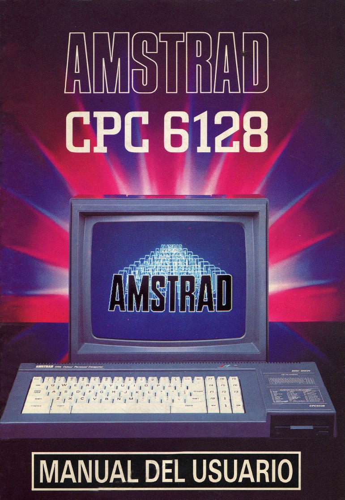
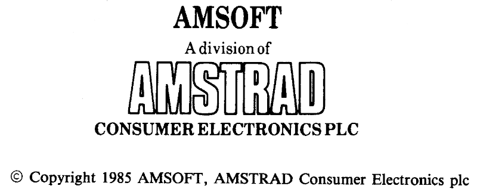
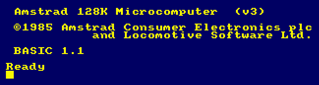
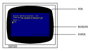
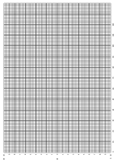
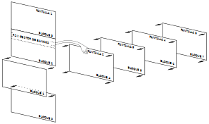
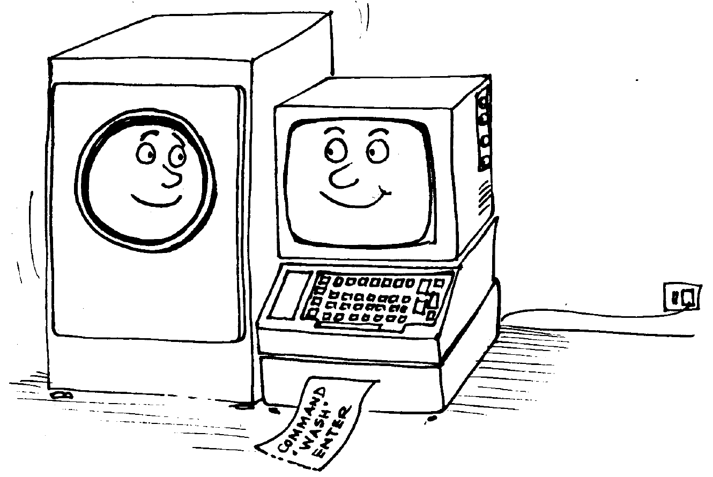
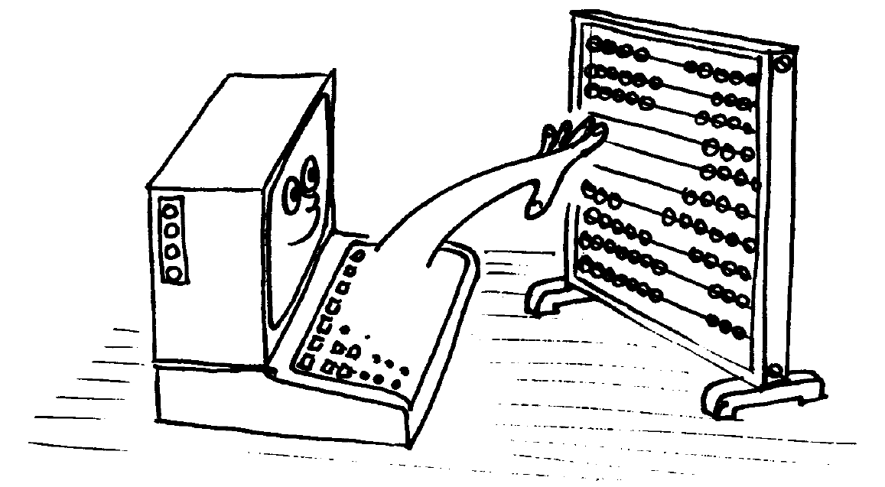

Introducción
AMSTRAD CPC6128
Sistema integrado de ordenador/disco
Una evolución lógica
Los dos modelos anteriores de Amstrad, el CPC464 y el CPC664, que tan inmenso éxito han tenido, han constituido la base a partir de la cual hemos desarrollado este nuevo sistema: el CPC6128. Continuando con nuestra norma de compatibilidad, el CPC6128 puede funcionar con los programas escritos para el CPC464 y el CPC664, y además dispone de 64K de RAM adicionales que pueden ser aprovechados por CP/M y otros programas.
CP/M Plus
El sistema operativo CP/M Plus (también conocido como CP/M 3.1) proporciona el acceso inmediato a la amplia biblioteca de programas diseñados para CP/M 80. Gracias a los 61K de TPA (área para programas transitorios), cualquier programa de CP/M 80 encuentra espacio más que suficiente para sí mismo y para los datos. CP/M Plus es compatible con CP/M 2.2; no obstante, hemos incluido ambas versiones para permitir que las aplicaciones que hayan sido desarrolladas utilizando funciones del sistema operativo CP/M 2.2 en Amstrad funcionen sin requerir modificación. CP/M Plus está dotado de numerosas funciones que contribuyen a mejorar las prestaciones del sistema; casi todos los programas escritos para CP/M 2.2 pueden aprovechar estas funciones sin conflicto. El sistema CP/M Plus incluye un "emulador de consola" gracias al cual los programas que han sido configurados para adaptarse al método de control de la pantalla de los terminales VT52 y Zenith Z19/Z29 pueden funcionar en el CPC6128 sin necesidad de más adaptación.
GSX
GSX es un sistema de gestión de gráficos, suministrado con esta versión de CP/M Plus, que permite a los programas controlar, mediante instrucciones estándar, la emisión de gráficos a través de la pantalla o de impresoras o plotters. Los programas que utilicen GSX podrán comunicarse con diversos dispositivos gráficos para producir copias en papel de diagramas de barras, gráficas, etc.
Dr. LOGO
El LOGO de Digital Research continúa abriendo caminos nuevos en la enseñanza de la informática; gracias a la memoria adicional del 6128, ha sido posible ampliar la anterior versión de Dr. LOGO (para CP/M 2.2) con nuevas instrucciones. Por supuesto, los programas escritos para la versión antigua son compatibles con la nueva.
Discos
EI CPC664 estableció un punto de referencia para el futuro con su unidad de disco incorporada en la propia máquina. El CPC6128 sigue ofreciendo las ventajas del sistema de disco a un número cada vez mayor de usuarios que demandan las prestaciones de los ordenadores personales a precio de ordenadores domésticos. Los programas que utilizan las funciones más avanzadas de CP/M Plus y GSX no podrán funcionar en los modelos anteriores. Finalmente, el CPC6128 está apoyado por uno de los fabricantes de productos electrónicos de gran consumo más grandes del Reino Unido. Por otra parte, la revista oficial de Amstrad se ha convertido ya en la principal y más fiable fuente de información y noticias para los usuarios de los ordenadores Amstrad.
Programas
El CPC6128 puede ejecutar todos los programas disponibles en disco para los sistemas CPC664 y CPC464/DDI1, y casi todos los disponibles en cinta (conectando un magnetófono de cassettes, por supuesto). Esto significa que el usuario del CPC6128 puede elegir, sin necesidad de espera alguna, entre los muchos programas publicados por Amsoft y otras casas de software.

|
El contenido de este manual y el producto en él descrito no pueden ser adaptados ni reproducidos, ni total ni parcialmente, salvo con el permiso escrito de AMSTRAD plc ("Amstrad"). El producto descrito en este manual, así como los diseñados para ser utilizados con él, están sujetos a desarrollo y mejoras continuas. Toda la información técnica relativa al producto y su utilización (incluida la que figura en este manual) es suministrada por Amstrad de buena fe. Admitimos, no obstante, que en este manual puede haber errores u omisiones. El usuario puede obtener una lista de correcciones y modificaciones solicitándola a Amstrad o de sus distribuidores. Rogamos a los usuarios que rellenen y envíen a los distribuidores las tarjetas de registro y de garantía. |
AMSOFT agradecerá el envío de comentarios y sugerencias relativos a este manual y al producto en él descrito.
Toda la correspondencia se debe dirigir a
AMSOFT
Aravaca, 22
28040 Madrid
España
Toda reparación u operación de mantenimiento de este producto debe ser confiada a los distribuidores autorizados de AMSOFT. Ni AMSOFT ni AMSTRAD pueden aceptar ninguna responsabilidad derivada del daño o pérdida que se pueda ocasionar como resultado de reparaciones efectuadas por personal no autorizado. El objetivo de este manual no es sino servir de ayuda al usuario en la utilización del producto; por consiguiente, AMSTRAD y AMSOFT quedan eximidos de responsabilidad por el daño o pérdida a que pueda dar lugar la utilización de la información aquí publicada o la incorrecta utilización del producto.
Dr. LOGO, CP/M, CP/M Plus, GSX y DR Graph son marcas registradas de
Digital Research Inc.
Z80 es marca registrada de Zilog Inc.
IBM e IBM PC son marcas registradas de International Business Machines Inc.
Z19, Z29 y H89 son marcas registradas de Zenith Data Systems, Inc.
VT52 es marca registrada de Digital Equipment Corp.
AMSDOS, CPC6128, CPC664, CPC472 y CPC464 son marcas registradas de
AMSTRAD Consumer Electronics plc
Edición 1986
Compilado por Ivor Spital
Escrito por Ivor Spital, Roland Perry, William Poel, Cliff Lawson;
con la colaboración de Locomotive Software Ltd
y con aportaciones de Alexander Martin, David Radisic y Ken Clark
Traducido del inglés por Emilio Benito Santos
Publicado por AMSTRAD
Edición española producida por
Vector Ediciones
AMSTRAD es marca registrada de AMSTRAD Consumer Electronics plc
Queda estrictamente prohibido utilizar la marca y la palabra AMSTRAD sin la debida autorización
IMPORTANTE
Por favor, lea las siguientes...
Notas de instalación
- Conecte el cable de alimentación a una clavija siguiendo para ello las instrucciones que se dan en la Parte 1 del Curso de Introducción.
- No intente conectar este equipo a una red de distribución de energía eléctrica que no sea de 220-240 V c.a., 50 Hz.
- El mantenimiento que pueda hacer el usuario no requiere en ningún caso acceder al interior de la carcasa. Así pues, no abra nunca el equipo. Confíe todas las reparaciones y operaciones de mantenimiento a personal cualificado.
- Para evitar la fatiga visual, ponga el monitor lo más alejado posible del teclado y trabaje con luz ambiente adecuada. Deje el control de brillo del monitor lo más bajo posible.
- El ordenador debería estar centrado con respecto al monitor, lo más lejos posible de él. Para optimizar la fiabilidad del almacenamiento de datos, la unidad de disco no debería quedar frente al monitor, sino a su derecha. No ponga el ordenador cerca de fuentes de interferencia eléctrica.
- Evite que las unidades de disco y los propios discos estén sometidos a la influencia de campos magnéticos.
- Si tiene conectada la segunda unidad de disco, mantenga alejado el cable de datos del cable de alimentación.
- No obstruya ni cubra los orificios de ventilación.
- No utilice ni almacene el equipo a temperaturas demasiado altas ni demasiado bajas, ni en lugares húmedos ni polvorientos.
Notas de operación
(No se preocupe si al principio le resulta extraña la terminología utilizada en esta sección; el significado de estas advertencias irá quedando más claro según avance en la lectura de este manual.)
- No encienda ni apague el sistema mientras haya un disco en la unidad, so pena de perder la información en él grabada.
- Haga copias de todos los discos que contengan datos o programas valiosos. En particular, copie los discos de CP/M que se suministran con el CPC6128, pues si se deteriorasen accidentalmente su sustitución sería costosa.
- Para evitar el riesgo de borrar accidentalmente los discos de CP/M, cerciórese de que los orificios de protección contra escritura de los discos estén abiertos.
- Si está utilizando un sistema de dos discos, es decir, si ha adquirido una unidad AMSTRAD FD1 adicional, encienda siempre la segunda unidad antes que el ordenador.
- No toque la superficie de los discos.
- No extraiga el disco mientras el ordenador no haya terminado de leer o escribir en él.
- Recuerde que al inicializar los discos se borra su contenido anterior.
- El interfaz de la unidad de discos ocupa una pequeña porción de la memoria. Algunos programas publicados en cassette para el CPC464 aprovechan esa zona de la memoria, y por lo tanto no pueden funcionar en el sistema CPC6128+cassette. En caso de duda sobre la compatibilidad de los programas basados en cinta, póngase en contacto con AMSOFT o con su distribuidor. Tenga en cuenta, no obstante, que casi todos los programas de AMSOFT están disponibles en disco para su utilización en el CPC6128.
- El acuerdo de licencia para el sistema operativo CP/M (que está codificado mediante un número de serie grabado en los discos) permite su utilización en un solo ordenador. Esto significa, en particular, que al usuario le está prohibido ceder a otras personas copias de su CP/M. Lea atentamente el "Acuerdo de licencia para el usuario final" (Apéndice 1 de este manual).
Capítulo 1. Curso de introducción
Contenido:
- Parte 1: Instalación y mantenimiento.
- Parte 2: Conexión de los periféricos.
- Parte 3: En cuanto a los discos.
- Parte 4: Manos al teclado.
- Parte 5: Carga de programas.
- Parte 6: Empecemos a trabajar.
- Parte 7: Grábelo en disco.
- Parte 8: Introducción a los modos de pantalla, colores y gráficos.
- Parte 9: Sonidos.
- Parte 10: Introducción a los sistemas operativos AMSDOS y CPM.
- Parte 11: Introducción al gestor de bancos de memoria.
Capítulo 1. Curso de introducción
Parte 1: Instalación y mantenimiento
Contenido:
- Conexión del ordenador a la red.
- Conexión del ordenador a un monitor.
- Conexión del ordenador a la unidad modulador/fuente de alimentación MP2.
- Encendido del sistema CPC6128 con GT65 o con CTM644.
- Encendido del sistema CPC6128 con la unidad modulador/fuente de alimentación MP2
- Anomalías en el funcionamiento del sistema.
- Limpieza.
El CPC6128 puede ser instalado con:
- El monitor de fósforo verde AMSTRAD GT65.
- El monitor de color AMSTRAD CTM644.
- O la unidad modulador/fuente de alimentación AMSTRAD MP2 conectada a un televisor de color (en UHF).
Conexión del ordenador a la red
El CPC6128 sólo se puede conectar a la red de 220-240V c.a., 50 Hz.
No extraiga ningún tornillo ni trate de abrir la carcasa del ordenador, del monitor ni de la unidad MP2. Lea y respete las advertencias que se dan en la etiqueta de características, que está situada en la cara inferior de la carcasa del ordenador y de la fuente de alimentación:
Desconectar cuando no se utilice.
¡ATENCIÓN!
No manipular en su interior
y en la cara posterior de los monitores:
NO ABRIR SIN ANTES DESCONECTAR
LA TENSIÓN DE RED.
Conexión del ordenador a un monitor
(Si va a utilizar su CPC6128 con la unidad MP2, no es necesario que lea esta sección.)
- Cerciórese de que el monitor no está conectado a la red.
- Conecte el cable que sale de la cara frontal del monitor y termina en una clavija grande (DIN de 6 patillas) al zócalo posterior del ordenador marcado con MONITOR.
- Conecte el cable que sale de la cara frontal del monitor y termina en la clavija más pequeña al zócalo posterior del ordenador marcado con 5V c.c.
- Conecte el cable que sale de la cara posterior del ordenador y termina en una clavija pequeña (12V c.c.) al zócalo que hay en la cara frontal del monitor.
Conexión del ordenador a la unidad modulador/fuente de alimentación MP2
La MP2 es una unidad opcional que el usuario puede querer adquirir si está utilizando actualmente el CPC6128 con el monitor de fósforo verde GT65. La MP2 permite conectar el CPC6128 a un televisor de color doméstico, para así disfrutar de las posibilidades de color del CPC6128.
La MP2 se debe colocar inmediatamente a la derecha del CPC6128.
- Cerciórese de que la MP2 no está conectada a la red.
- Conecte el cable de la MP2 que termina en una clavija grande (DIN de 6 patillas) al zócalo posterior del ordenador marcado con MONITOR.
- Conecte el cable de la MP2 que termina en una clavija pequeña al zócalo posterior del ordenador marcado con 5V c.c.
- Conecte el cable que sale de la MP2 y termina en una clavija de antena a la entrada de antena de su televisor.
- Conecte el cable que sale de la cara posterior del ordenador y termina en una clavija pequeña (12V c.c.) al zócalo posterior de la MP2.

Encendido del sistema CPC6128 con GT65 o con CTM644
(Si va a utilizar su CPC6128 con la unidad MP2, no es necesario que lea esta sección.)
Una vez conectado el sistema según se ha explicado en secciones anteriores, inserte la clavija de red en la toma mural. Para encender el sistema, pulse el botón ALIMENTACION que está en la cara frontal del monitor, de modo que quede en posición «ENC.». Si este botón está en «APAG.», el suministro de corriente al resto del sistema queda interrumpido.
Encienda el ordenador mediante el interruptor deslizante marcado con ALIMENTACION, que está en su cara derecha.
En este momento se debe encender el piloto rojo (ENC.) que está a la derecha del teclado; en el monitor se verá el siguiente mensaje:

Para evitar la fatiga visual excesiva, ajuste el control de brillo marcado con BRILLO al mínimo necesario para que el texto se vea cómodamente, sin que deslumbre ni resulte borroso.
El control BRILLO se encuentra en la parte inferior de la cara frontal del monitor GT65 y en el lateral derecho del CTM644.
En el caso del GT65, puede ser necesario ajustar los controles de contraste (CONTRASTE) y de fijación del cuadro vertical (SINCRO. VERT.), que están en el panel frontal.
El mando de CONTRASTE se debe poner en el mínimo compatible con la cómoda visualización de los textos.
Encendido del sistema CPC6128 con la unidad modulador/fuente de alimentación MP2
Una vez conectado el sistema según se ha explicado en secciones anteriores, inserte la clavija de red en la toma mural. Encienda el ordenador mediante el interruptor deslizante que está en su lateral derecho.
En este momento se debe encender el piloto rojo que está en el centro del teclado. Ahora debe sintonizar el televisor para recibir las señales del ordenador.
Si su televisor tiene un selector de canales de botonera, pulse el botón correspondiente a un canal no utilizado. Ajuste el mando de sintonía siguiendo las instrucciones del manual del televisor (si dispone de un dial de sintonía, pruebe en las proximidades del canal 36) hasta obtener la siguiente imagen:
Trate de conseguir la máxima nitidez posible. El texto aparecerá en color amarillo dorado sobre fondo azul.
Si el televisor tiene un selector de canales rotatorio, gírelo hasta que pueda ver la imagen y ésta sea estable (canal 36, aproximadamente).
Anomalías en el funcionamiento del sistema
Al pulsar el interruptor de alimentación no se ilumina la pantalla
- Apague el interruptor pulsándolo por segunda vez.
- Desconecte el ordenador de la toma mural.
- Enchufe en ella una lámpara que usted sepa que funciona para comprobar que llega corriente.
- Desconecte la impresora.
- Si tiene instalado un interfaz RS232, desconéctelo.
- Vuelva a enchufar el ordenador en la toma mural; si hay algún interruptor que controle el paso de corriente al enchufe, enciéndalo.
- Finalmente, vuelva a pulsar el interruptor de alimentación.
Si el problema persiste, consulte a su distribuidor.
No se puede introducir el disco en la unidad
- Compruebe que no hay otro disco en la unidad. Si lo hay, se verá la etiqueta. En tal caso pulse el botón de eyección para extraerlo.
- Cerciórese de que no está intentando introducir el disco al revés (véase la sección 3.1.2).
Limpieza
Para la limpieza de la pantalla y el teclado recomendamos el uso de espumas antiestáticas en aerosol. En ningún caso se puede utilizar productos limpiadores espiritosos.
Finalmente, asegúrese de que ha tenido en cuenta las advertencias que hemos hecho al principio de este manual, en la sección titulada IMPORTANTE:
- NOTAS DE INSTALACIÓN 1, 2, 4, 5, 6, 7 y 8.
- NOTAS DE OPERACIÓN 1.
Capítulo 1. Curso de introducción
Parte 2: Conexión de los periféricos
Contenido:
- Joysticks (bastoncillos de mando).
- Magnetófono de cassettes.
- Impresora.
- Segunda unidad de disco (AMSTRAD FD1).
- Amplificador y altavoces externos.
- Dispositivos de expansión.
En esta sección vamos a explicar cómo se conectan al sistema CPC6128 diversos periféricos, cuyo funcionamiento se explica en las correspondientes secciones de este manual.
Joysticks (bastoncillos de mando)
El joystick AMSOFT modelo JY2 es un aparato opcional que el usuario puede desear adquirir si va a utilizar su CPC6128 con programas de juegos diseñados para aprovechar las posibilidades de control y disparo del joystick.
Conecte el cable procedente del joystick en el zócalo marcado con MANDO A DISTANCIA en el ordenador. El CPC6128 admite dos joysticks; el segundo se conecta en el zócalo que hay en la peana del primero.
Con este ordenador se puede utilizar también el joystick AMSOFT modelo JY1.
En secciones posteriores de este manual daremos más información sobre los joysticks.
Magnetófono de cassettes
Los programas pueden ser leídos o grabados en cinta, en lugar de en disco. Más adelante describiremos las órdenes que indican al ordenador cuándo debe leer o enviar datos a la cinta o al disco.
Para conectar el magnetófono al ordenador se requiere el cable AMSOFT CL1, o un cable estándar equivalente. Inserte el extremo del cable que termina en una clavija grande (DIN de 5 patillas) en el zócalo del ordenador que está marcado con CINTA.
Inserte la clavija en la que termina el cable azul en la hembra del magnetófono que esté marcada con REMOTE o REM (control remoto, si lo tiene).
Inserte la clavija en la que termina el cable rojo en la hembra del magnetófono que esté marcada con MIC, COMPUTER IN o INPUT (entrada).
Inserte la clavija en la que termina el cable blanco en la hembra del magnetófono que esté marcada con EAR, COMPUTER OUT o OUTPUT (salida).
Es importante observar que el éxito en la transferencia de datos entre el CPC6128 y la cinta depende en gran medida del correcto ajuste del control de nivel o de volumen del magnetófono. Si encuentra dificultad en la grabación o lectura de los programas, pruebe con diferentes posiciones del control de volumen y de tono del magnetófono hasta optimizar los resultados, o pruebe con la otra cara de la cinta si en ella hay la misma grabación.
Impresora
El CPC6128 puede ser conectado a cualquier impresora de interfaz tipo Centronics. Para conectar el ordenador a la impresora AMSTRAD, basta con utilizar el cable suministrado con ésta.
Para conectar cualquier otra impresora de tipo Centronics se necesita el cable AMSOFT PLI.
Inserte el extremo del cable que termina en un conector plano en el zócalo del ordenador marcado con IMPRESORA.
Inserte el otro extremo del cable, que termina en el conector de tipo Centronics, en el zócalo de la impresora. Si la impresora tiene abrazaderas de seguridad, fíjelas en las ranuras que hay en los laterales del conector.
Más adelante daremos información sobre el manejo de la impresora.
Segunda unidad de disco (AMSTRAD FD1)
La unidad AMSTRAD FDI se puede incorporar al sistema como segunda unidad de disco. Las ventajas de disponer de dos unidades serán particularmente evidentes para el usuario habitual de CP/M, pues muchos programas están diseñados para funcionar con los discos de programas en una unidad y los ficheros de datos en la otra.
El sistema operativo CP/M siempre requiere que los programas se carguen desde el disco (no permite el acceso a la ROM de BASIC). CP/M permite acceder a ficheros múltiples mediante una técnica que hace posible la ejecución de programas que de otra forma no cabrían en la RAM; pero en muchas ocasiones el disco de programas contiene tantos, que prácticamente no queda espacio para los ficheros de datos.
Gracias a la versatilidad de los programas de ayuda suministrados con los discos del sistema, todas la operaciones de mantenimiento de ficheros (copia, borrado, etc.) se pueden realizar con una sola unidad de disco. Sin embargo, la segunda unidad facilita y acelera estos procesos, y reduce notablemente el riesgo de accidentes.
Para conectar la unidad FD1 al CPC6128 se requiere el cable AMSOFT DI2.
Inserte el conector plano mayor en el zócalo del ordenador que está marcado con UNIDAD DE DISCO 2.
Inserte el otro conector más pequeño del cable en el zócalo de unidad FD1.
Ambos conectores tienen marcada la cara superior; el cable plano va hacia abajo. En caso de duda consulte a su distribuidor.
NO OLVIDE que, antes de encender o apagar la segunda unidad de disco, debe extraer los discos que pueda haber en ambas unidades y apagar el sistema. Si se modifica alguna conexión mientras el sistema está encendido, lo más probable es que se pierda o altere el programa actualmente residente en la memoria. Tenga la precaución de grabar el programa antes de modificar las conexiones de los periféricos.
Si tiene conectada una FD1 al CPC6128, encienda primero la FD1 con el interruptor deslizante que está en el panel posterior; después encienda el CPC6128 con el interruptor deslizante que está en la cara posterior del ordenador. Deberán iluminarse los dos pilotos, rojo y verde, de la FD1; esto indicará que la segunda unidad de disco está preparada para su uso.
Más adelante explicaremos el funcionamiento de la segunda unidad de disco.
Amplificador y altavoces externos
El CPC6128 puede ser conectado a un sistema de amplificador y altavoces estereofónicos, única forma de apreciar plenamente las capacidades sonoras del ordenador.
El cable de entrada al amplificador debe terminar en una clavija estéreo de 3.5 mm, que se inserta en la hembra marcada con ESTÉREO en el ordenador.
Las conexiones de la clavija deben ser las siguientes:
- Extremo de la clavija: canal izquierdo.
- Anillo intermedio: canal derecho.
- Cuerpo de la clavija: masa.
El CPC6128 entrega a la salida ESTÉREO una señal de nivel constante; así pues, el volumen, el balance y el tono deben ser regulados con los mandos del amplificador externo.
También se pueden conectar auriculares de alta impedancia, aunque el volumen no podrá ser regulado por el mando de VOLUMEN del ordenador. Los auriculares de baja impedancia, que son los habitualmente utilizados con los equipos de alta fidelidad, no pueden ser conectados directamente al ordenador.
Más adelante explicaremos cómo enviar sonidos a cada uno de los tres canales del CPC6128.
Dispositivos de expansión
Al ordenador CPC6128 se le pueden conectar diversos dispositivos de expansión (interfaz serie, modem, lápiz fotosensible, ROMs, etc.) por medio del zócalo marcado con EXPANSIÓN que está en la cara posterior del ordenador.
También se puede conectar en ese zócalo el amplificador/sintetizador de voz AMSOFT modelo SSA2.
Las conexiones del zócalo EXPANSIÓN se describen en el capítulo titulado Para su referencia.
Finalmente, antes de proseguir, asegúrese de que ha tenido en cuenta las advertencias que hemos hecho al principio de este manual, en la sección titulada IMPORTANTE:
- NOTAS DE INSTALACIÓN 6 y 7.
- NOTAS DE OPERACIÓN 4 y 8.
Capítulo 1. Curso de introducción
Parte 3: En cuanto a los discos
Contenido:
El AMSTRAD CPC6128 usa discos compactos de 3 pulgadas. Le sugerimos que no corra riesgos indebidos y que, para garantizar la fiabilidad de la transferencia de datos del ordenador a los discos, utilice solamente los discos AMSOFT CF2. Puede, no obstante, utilizar también los de otras marcas de máxima garantía.
Inserción
Se pueden utilizar las dos caras del disco, aunque no simultáneamente. La forma correcta de insertar los discos es con la etiqueta hacia fuera (visible) y con la cara que se va a usar hacia arriba:
Protección contra escritura
En el extremo posterior izquierdo de cada cara del disco se puede ver una flecha que señala un pequeño orificio obturado: es el orificio de "protección contra escritura", cuya misión es evitar el borrado accidental del contenido del disco:
Cuando el orificio está cerrado, el ordenador puede "escribir" en el disco. En cambio, si el orificio está abierto, el disco está protegido contra la escritura, impidiendo el borrado accidental de programas o datos valiosos.
Los diversos fabricantes utilizan diferentes mecanismos de apertura y cierre del orificio. En los discos AMSOFT CF2 el funcionamiento es como sigue:
Para abrir el orificio, haga deslizar el pequeño obturador situado en la esquina izquierda del disco:
Para cerrar el orificio, haga deslizar el obturador en sentido contrario.
En algunos discos compactos el mecanismo consiste en una pequeña palanca de plástico situada en una ranura que tienen en la esquina izquierda:
Para abrir el orificio en los discos de este tipo, desplace la palanca hacia el centro del disco, ayudándose con la punta de un bolígrafo u objeto similar:
Observe que, cualquiera que sea el mecanismo de obturación, el efecto es siempre el mismo: el disco queda protegido cuando el orificio está abierto.
IMPORTANTE Cerciórese de que los orificios de protección de sus discos maestros de CP/M están abiertos.
Después de introducido el disco
En la cara frontal de la unidad de disco hay un piloto rojo y un botón de eyección:
Piloto
Cuando está encendido, indica que el ordenador está leyendo datos del disco o escribiendo en él.
Si se ha conectado una segunda unidad de disco (unidad B), su piloto estará encendido constantemente, y se apagará cuando se encienda el de la unidad principal (unidad A).
Botón de eyección
Al pulsar este botón se expulsa parcialmente el disco, lo que permite que el usuario lo extraiga.
Finalmente, antes de proseguir, asegúrese de que ha tenido en cuenta las advertencias que hemos hecho al principio de este manual, en la sección titulada IMPORTANTE:
- NOTAS DE OPERACIÓN 1, 3, 4, 5 y 6.
Capítulo 1. Curso de introducción
Parte 4: Manos al teclado
Contenido:
Antes de empezar a cargar y grabar programas necesitamos familiarizarnos con algunas teclas del ordenador. Si tiene usted alguna experiencia en el manejo de los ordenadores, puede omitir la lectura de esta sección.
Encienda el ordenador y verá el mensaje inicial en la pantalla. Vamos a explicar las funciones de las diversas teclas:
Las cuatro teclas que están marcadas con sendas flechas (y situadas en el extremo inferior derecho del teclado) son las "teclas de movimiento del cursor". Estas teclas sirven, pues, para mover el cursor por la pantalla.
Púlselas todas ellas y practique hasta familiarizarse con su funcionamiento.
La tecla [RETURN] sirve para introducir en el ordenador lo que usted ha tecleado. Una vez pulsada la tecla [RETURN], el cursor salta automáticamente a la línea siguiente de la pantalla. Siempre que escriba una orden directa o una instrucción de programa, pulse [RETURN] al final.
De ahora en adelante escribiremos [RETURN] para indicar que se debe pulsar esta tecla al terminar de teclear órdenes o instrucciones de programa.
En circunstancias normales (esto es, si no se modifica por programa su función), esta tecla tiene el mismo efecto que [RETURN] y puede ser utilizada en su lugar. Sin embargo, al igual que las restantes teclas de función del teclado numérico, [INTRO] puede ser redefinida, según explicaremos más adelante.
Esta tecla sirve par borrar el carácter (letra, número o signo) que está a la izquierda del cursor.
Teclee abcd y observe que el cursor queda inmediatamente a la derecha de la letra d. Para borrar la d, pulse la tecla [← BORR]. Si la mantiene pulsada durante algún tiempo, verá cómo se borran también las otras tres letras.
Hay dos teclas [MAYS], una a cada lado del teclado. Si mantiene pulsada una de ellas al tiempo que pulsa una tecla literal (de letras), en la pantalla aparecerá la correspondiente letra en mayúscula.
Escriba la letra e, pulse la tecla [MAYS] y, antes de soltarla, vuelva a teclear la e. En la pantalla verá lo siguiente:
eE
Escriba ahora unos cuantos espacios (manteniendo pulsada durante algún tiempo la barra espaciadora). Para probar el efecto de [MAYS] con las teclas numéricas, escriba el 2, pulse [MAYS] y, sin soltarla, vuelva a escribir el 2. El la pantalla aparecerá lo siguiente:
2"
Haga pruebas con las diferentes teclas de caracteres para observar su efecto con y sin [MAYS].

Su efecto es en cierto modo similar al de [MAYS]. Con sólo pulsarla una vez, las letras que se escriban a continuación aparecerán en mayúsculas en la pantalla, pero, en cambio, las teclas numéricas y de signos no resultan afectadas.
Pulse [FIJA MAYS] una sola vez y luego escriba lo siguiente:
abcdef123456
En la pantalla aparecerá:
ABCDEF123456
Observe que las letras han sido convertidas a mayúsculas y que, sin embargo, los números no han sido convertidos a los signos que están grabados en la parte superior de las teclas numéricas. Para obtener estos signos se pulsa la tecla correspondiente en combinación con [MAYS]. Escriba ahora lo siguiente, manteniendo pulsada la tecla [MAYS]:
abcdef123456
En la pantalla aparecerá:
ABCDEF!"#$%&
Para volver a caracteres normales (en minúsculas), pulse por segunda vez [FIJA MAYS].
Si lo que desea es obtener letras mayúsculas y los signos marcados en la parte superior de las teclas, sin tener que mantener pulsada la tecla [MAYS], puede hacer lo siguiente: mantenga pulsada la tecla [CONTROL] y pulse [FIJA MAYS] una sola vez. Para comprobar el efecto de esta combinación, escriba lo siguiente:
abcdef123456
En la pantalla aparecerá:
ABCDEF!"#$%&
En esta situación, se pueden escribir números utilizando el teclado numérico (teclas f0 a f9) que está a la derecha del teclado principal.
Manteniendo pulsada la tecla [CONTROL] al tiempo que se pulsa [FIJA MAYS] se vuelve al modo anterior (es decir, a minúsculas o a bloqueo de mayúsculas). Si el modo al que ha vuelto es a bloqueo de mayúsculas, pulse [FIJA MAYS] para retornar al modo normal, esto es, a minúsculas.
Esta tecla borra el carácter que está bajo el cursor.
Escriba ABCDEFGH. El cursor ha quedado a la derecha de la última letra (la H). Pulse cuatro veces la tecla [←]. El cursor se ha movido cuatro posiciones hacia la izquierda, de modo que está superpuesto a la letra E.
Observe que la letra E es visible a través del cursor. Pulse [CLR] y observe cómo desaparece la letra E y cómo se mueven hacia la izquierda las letras FGH; bajo el cursor queda la F. Pulse durante unos instantes [CLR]: primero desaparece la F, y luego la G y la H.
Esta tecla se utiliza para abandonar una función que el ordenador esté realizando. Si se pulsa [ESC] una vez, el ordenador interrumpe su tarea momentáneamente, y la reanuda si a continuación se pulsa cualquier otra tecla.
Si se pulsa [ESC] dos veces seguidas, el ordenador abandona definitivamente la tarea que está realizando y queda a la espera de otras órdenes.
Importante
Cuando se han escrito 40 caracteres en una línea, el cursor está en el extremo derecho de ella; el siguiente carácter aparecerá automáticamente al principio de la línea siguiente. Esto significa que no se debe pulsar [RETURN], a diferencia de lo que se haría si se estuviera trabajando con una máquina de escribir, en la que se ha de teclear el retorno del carro al acercarse al final de cada línea.
El ordenador realiza esta función automáticamente; ante un [RETURN] indebido, reaccionará con un mensaje de error, generalmente Syntax error, bien en el acto o bien más tarde, cuando se ejecute el programa.
Syntax error (error de sintaxis)
Cuando en la pantalla aparece el mensaje Syntax error, el ordenador está diciendo que no ha entendido la orden que se le ha dado.
Por ejemplo, escriba
printt [RETURN]
En la pantalla aparecerá el mensaje:
Syntax error
Esto ocurre porque el ordenador no entiende la instrucción printt.
Si el mismo error se comete en una línea de programa, tal como
10 printt "abc" [RETURN]
el mensaje Syntax error no aparece hasta que se ejecuta el programa. Escriba:
run [RETURN]
(Esta orden pide al ordenador que ejecute el programa que tiene en este momento almacenado en la memoria.) En la pantalla aparece:
Syntax error in 10
10 printt "abc"
Este mensaje indica en qué línea se ha detectado el error y exhibe la línea con el cursor ya preparado para que el usuario pueda corregirla.
Lleve el cursor, con la tecla [→], hasta una letra t de printt. Pulse [CLR] para borrar la t que sobra y luego pulse [RETURN] para introducir la línea corregida en el ordenador.
Escriba ahora:
run [RETURN]
El ordenador ha entendido la instrucción; de hecho, ha escrito en la pantalla:
abc
Finalmente, asegúrese de que ha tenido en cuenta las advertencias que hemos hecho al principio de este manual, en la sección titulada IMPORTANTE:
- NOTAS DE INSTALACIÓN 4 y 5.
- NOTAS DE OPERACIÓN 1.
Capítulo 1. Curso de introducción
Parte 5: Carga de programas
Contenido:
Vamos a hacer una demostración de lo rápida que es la carga de programas grabados en disco. Encienda el equipo, inserte la cuarta cara de los discos maestros de CP/M (cara marcada con "Side 4" hacia arriba) y teclee lo siguiente:
run "rointime.dem" [RETURN]
Al cabo de unos segundos el programa habrá quedado cargado en la memoria del ordenador. Responda a la pregunta de si está utilizando un monitor de fósforo verde ("green monitor"; teclee Y para "sí", o N para "no") y podrá ver una demostración del juego "Roland in Time" en la pantalla. Quizá se anime a comprarlo.
Cuando haya terminado de ver la demostración, puede "'escapar" del programa de la siguiente forma: pulse las teclas [CONTROL] y [MAYS] y, antes de soltarlas, pulse [ESC]. Esta acción reinicializa por completo la máquina; llévela a cabo siempre que quiera volver a la situación en que se encuentra la máquina cuando acaba de encenderla. (Cuando se reinicializa el ordenador de esta forma, no es necesario extraer el disco que pueda haber en la unidad.)
Si el programa no se ha cargado normalmente, estudie el mensaje que ha aparecido en la pantalla para averiguar qué ha ocurrido. Por ejemplo,
Drive A: disc missing
Retry, Ignore or Cancel?
significa que no ha insertado el disco, o que no lo ha hecho correctamente, o quizá que lo ha puesto en la unidad B.
ROINTIME.DEM not found
significa que no ha puesto el disco correcto, o que ha puesto la otra cara, o que no ha tecleado correctamente el nombre del programa, ROINTIME.DEM. Si aparece el mensaje
Bad command
lo más probable es que haya tecleado mal ROINTIME.DEM, quizá incluyendo un espacio o un signo de puntuación.
Type mismatch
significa que ha omitido las comillas (").
Syntax error
indica que ha tecleado incorrectamente la orden run.
El mensaje
Drive A: read fail
Retry, Ignore or Cancel?
indica que el ordenador no ha conseguido leer los datos grabados en el disco. Compruebe que el disco que ha insertado es el correcto y pulse R (de Retry, "volver a intentarlo"). Este es el mensaje que aparece siempre que se ha estropeado un disco por dejarlo dentro de la unidad al apagar o encender el sistema.
Cuando hayamos explicado cómo hacer copia de los discos, copie sistemáticamente todos los programas valiosos, en particular los discos maestros de CP/M.
Carga de programas AMSOFT y del programa WELCOME
Esperamos haberle abierto el apetito, así que vamos a cargar un juego.
Inserte en la unidad un disco de juegos y teclee:
run "disc" [RETURN]
Al cabo de unos segundos el juego estará cargado y en marcha. Si teclea run"disc" con el disco maestro de CP/M (cara 4) instalado en la unidad, podrá ver y oír el programa de demostración "Welcome".
Cuando haya terminado de ver "Welcome", reinicialice el ordenador mediante las teclas [CONTROL] [MAYS] [ESC].
La orden descrita (run"disc") sirve para cargar casi todos los programas de AMSOFT grabados en disco, aunque en ocasiones habrá que teclear algo distinto. En todo caso, las instrucciones de carga están impresas en la etiqueta del disco; sígalas siempre escrupulosamente.
Para terminar, asegúrese de que ha tenido en cuenta las advertencias que hemos hecho al principio de este manual, en la sección titulada IMPORTANTE:
- NOTAS DE INSTALACIÓN 6.
- NOTAS DE OPERACIÓN 1, 5 y 6.
Capítulo 1. Curso de introducción
Parte 6: Empecemos a trabajar
Contenido:
- Introducción a las palabras clave del BASIC de AMSTRAD.
- Edición de programas.
- Método del cursor de edición.
- Método del cursor de copia.
- IF.
- FOR ... NEXT.
- REM.
- GOSUB.
- Aritmética sencilla.
A estas alturas ya sabemos qué podemos y qué no podemos hacer con el ordenador, así como la forma de conectarle periféricos. Sabemos para qué sirven algunas teclas del ordenador y cómo cargar programas. Ahora vamos a ver algunas de la órdenes e instrucciones que usted puede teclear para que empiecen a ocurrir cosas.
Al ordenador le ocurre lo que a los humanos: sólo puede entender instrucciones que se le dan en el lenguaje que él conoce. En el caso del ordenador, ese lenguaje es BASIC (siglas de Beginners' All-purpose Symbolic Instruction Code, "código de instrucciones simbólicas de uso general para principiantes"). Las palabras del vocabulario de BASIC son la llamadas "palabras clave", "palabras reservadas" o "palabras de instrucción". Cada una de ellas ordena a la máquina que realice una determinada función. Todos los lenguajes tienen sus reglas gramaticales, y BASIC no es la excepción. Aquí, el concepto de gramática se reduce al de "sintaxis"; de ahí que el ordenador tenga la amabilidad de decirnos de vez en cuando que hemos cometido un error de sintaxis: Syntax error.
Introducción a las palabras clave del BASIC de AMSTRAD
En el tercer capítulo, titulado "Lista completa de las palabras clave del BASIC de ASMTRAD", daremos una descripción de todas las palabras del dialecto de BASIC que entiende este ordenador. En esta sección vamos a presentar sólo las que se utilizan con mayor frecuencia.
CLS
Para borrar la pantalla escriba:
cls [RETURN]
Como puede observar, la pantalla efectivamente se borra y en su extremo superior izquierdo aparecen la palabra Ready y el cursor ∎.
Para introducir palabras clave de BASIC valen tanto las letras mayúsculas como las minúsculas.
Esta instrucción sirve para hacer que el ordenador escriba en la pantalla caracteres sueltos, palabras completas, frases o números. Teclee la siguiente orden:
print "hola" [RETURN]
En la pantalla puede ver:
hola
Las comillas "" indican al ordenador qué es lo que debe escribir. La palabra hola apareció en la pantalla en cuanto se pulsó [RETURN]. Teclee
cls [RETURN]
para borrar la pantalla.
RUN
En el ejemplo anterior hemos visto cómo obedece el ordenador una orden directa. Pero esto no siempre es deseable, ya que el ordenador olvida la orden inmediatamente después de ejecutarla. Podemos almacenar en la memoria del ordenador una sucesión de instrucciones para que más tarde sean ejecutadas en un orden determinado. Tal sucesión de instrucciones constituirá un programa. Las instrucciones de BASIC que podemos incluir en un programa tienen la forma que hemos visto, pero van precedidas de un número de línea. Si el programa consta de más de una instrucción, los números de línea indican al ordenador en qué orden debe ejecutarlas. Cuando después de teclear una línea de instrucción se pulsa [RETURN], la línea queda almacenada en la memoria hasta que pidamos al ordenador que ejecute el programa. Escriba lo siguiente:
10 print "hola" [RETURN]
Observe que en este caso, aunque ha pulsado [RETURN], la palabra hola no ha aparecido en la pantalla, sino que ha quedado almacenada en la memoria del ordenador, incluida en la línea de programa. Para ejecutar este pequeño programa debemos dar al ordenador la orden directa run. Escriba
run [RETURN]
Ahora sí aparece la palabra hola en la pantalla.
Observe algo interesante: en lugar de escribir la palabra print completa, basta con teclear el signo de interrogación ?; por ejemplo,
10 ? "hola" [RETURN]
LIST
Cuando se tiene un programa almacenado en la memoria, se puede comprobar su contenido haciendo un "listado". Escriba
list [RETURN]
En la pantalla aparece
10 PRINT "hola"
que es la única línea de nuestro programa.
Observe que ahora la palabra PRINT está en mayúsculas. Esto nos indica que el ordenador ha reconocido PRINT como palabra clave de BASIC.
Escriba cls [RETURN] para borrar la pantalla. Observe que, aunque se ha borrado el texto que había en la pantalla, el programa sigue estando en la memoria del ordenador.
GOTO
Esta instrucción pide al ordenador que salte de la línea actual a la línea especificada, para no ejecutar un grupo de instrucciones, si el salto es hacia delante, o para formar un bucle, si el salto es hacia atrás. Escriba
10 print "hola" [RETURN]
20 goto 10 [RETURN]
y luego
run [RETURN]
Como puede ver, el ordenador escribe repetidamente la palabra hola, a la izquierda de la pantalla, pasando cada vez a la línea siguiente. La razón es que, al llegar a la línea 20, la instrucción goto 10 provoca un salto a la línea 10.
Para detener el programa, pulse [ESC] una vez. Para reanudarlo, pulse cualquier otra tecla. Para detenerlo definitivamente, de forma que se pueda introducir otras instrucciones, pulse [ESC] dos veces.
Escriba ahora
cls [RETURN]
para borrar la pantalla.
Para inhibir el salto a la línea siguiente de la pantalla cada vez que el ordenador escriba hola, introduzca nuevamente el programa anterior, pero poniendo ahora un signo de punto y coma (;) al final de las comillas:
10 print "hola"; [RETURN]
20 goto 10 [RETURN]
run [RETURN]
El punto y coma indica al ordenador que debe escribir el siguiente grupo de caracteres inmediatamente a la derecha del anterior (suponiendo que quepan en la misma línea).
Para detener este programa pulse [ESC] dos veces. Escriba otra vez la línea 10, pero poniendo una coma (,) en lugar del punto y coma (,):
10 print "hola", [RETURN]
run [RETURN]
Como puede observar, la coma ha indicado al ordenador que escriba el siguiente grupo de caracteres 13 posiciones a la derecha del lugar en que empezó a escribir el anterior. Esta función es útil cuando se quiere visualizar información en columnas. No obstante, si el número de caracteres del grupo es mayor que 12, la escritura empezará otras 13 posiciones más a la derecha, de forma que entre columnas siempre quedará algún espacio.
Este número, 13, es modificable con la instrucción ZONE, que describiremos más adelante.
Para detener este programa, pulse [ESC] dos veces. Para borrar completamente la memoria del ordenador, pulse las teclas [CONTROL] y [MAYS] y, antes de soltarlas, pulse [ESC].
INPUT
Esta instrucción hace que el ordenador quede a la espera de que el usuario introduzca información por el teclado; por ejemplo, en respuesta a alguna pregunta.
Escriba lo siguiente:
10 input "cuantos años tienes";edad [RETURN]
20 print "pues no aparentas tener";edad;"años" [RETURN]
run [RETURN]
En la pantalla aparece la pregunta:
cuantos años tienes?
Escriba su edad y pulse [RETURN]. Si, por ejemplo, su edad es 18 años, el programa escribe lo siguiente:
pues no aparentas tener 18 años
Este ejemplo ilustra la utilización de input combinada con una variable numérica. Hemos puesto la palabra edad al final de la línea 10, y por consiguiente en la memoria, para que el ordenador pueda asociarla al número que el usuario introduzca; después, en la línea 20, en lugar de edad escribirá ese número. Nada nos obligaba a elegir precisamente ese nombre, edad, y podíamos haber utilizado una letra cualquiera, por ejemplo, b.
Reinicialice el ordenador para borrar la memoria (teclas [CONTROL] [MAYS] [ESC]. Si queremos captar por el teclado una respuesta que esté formada por caracteres cualesquiera (letras so las o letras mezcladas con números), debemos poner el signo de dólar ($) al final del nombre de la variable. Las variables de este tipo son las que denominamos variables literales.
Escriba el siguiente programa (observe que en la línea 20 hay que poner un espacio después de la primera coma, pero no antes de la segunda):
10 input "como te llamas";nombre$ [RETURN]
20 print "hola, ";nombre$;", yo me llamo Rolando" [RETURN]
run [RETURN]
En la pantalla puede ver:
como te llamas?
Escriba su nombre y luego pulse [RETURN]. Si el nombre introducido es, por ejemplo, Manolo, el programa escribe:
hola, Manolo, yo me llamo Rolando
En este caso hemos usado nombre$ como nombre de la variable literal, pero perfectamente podríamos haber elegido una letra cualquiera, por ejemplo, a$. Vamos a combinar los dos ejemplos anteriores en un solo programa.
Reinicialice la máquina con [CONTROL] [MAYS] [ESC]. Escriba lo siguiente:
5 cls [RETURN]
10 input "como te llamas";a$ [RETURN]
20 input "cuantos años tienes";b [RETURN]
30 print "desde luego, ";a$;", no aparentas tener";b;"años" [RETURN]
run [RETURN]
En este programa hemos utilizado dos variables: a$ para representar el nombre y b para representar la edad. En la pantalla aparece la primera pregunta:
como te llamas?
Escriba su nombre (supongamos que es Manolo) y luego pulse [RETURN]. El ordenador le pregunta ahora:
cuantos años tienes?
Escriba su edad (supongamos que es 18 años) y luego pulse [RETURN].
Si lo que hemos supuesto es cierto, en la pantalla aparecerá la siguiente frase:
desde luego, Manolo, no aparentas tener 18 años
Edición de programas
Si alguna de las líneas del programa anterior hubiera sido mecanografiada incorrectamente, lo que podría provocar el mensaje de error Syntax error o algún otro, en lugar de escribirla de nuevo es posible corregirla ("editarla" es como se dice en informática). Para ilustrar cómo hacerlo, vamos a escribir incorrectamente el programa:
5 clss [RETURN]
10 input "como t llamas";a$ [RETURN]
20 input "cuantos años tienes";b [RETURN]
30 print "desde luego,";a$;", no aparentas tener";b;"años" [RETURN]
En este programa hay tres errores:
- En la línea 5 hemos escrito clss en lugar de cls.
- En la línea 10 hemos escrito t en lugar de te.
- En la línea 30 hemos olvidado poner un espacio entre la coma y el signo de cerrar comillas.
Hay tres métodos para corregir un programa. El primero consiste en escribir nuevamente la línea errónea. Al hacerlo, la línea nueva sustituye a la que había en la memoria con el mismo número.
El segundo es el "método del cursor de edición".
El tercero es el "método del cursor de copia".
Método del cursor de edición
Vamos a corregir el error de la línea 5.
Escriba lo siguiente:
edit 5 [RETURN]
En la pantalla aparece la línea 5, por debajo de la 30, con el cursor situado sobre la c de clss.
Para suprimir la s que sobra, pulse la tecla de movimiento del cursor [→] hasta que éste quede sobre la última s de clss; pulse la tecla [CLR] y observe como desaparece la s.
A continuación pulse [RETURN] para introducir la versión corregida de la línea 5 en la memoria. Escriba
list [RETURN]
y comprobará que la línea ha quedado corregida.
La orden AUTO, que describiremos más adelante en este manual, se puede combinar con este método para corregir un grupo de líneas sucesivas.
Método del cursor de copia
El cursor de copia es un segundo cursor, distinto del que puede ver en este momento en la pantalla, que aparece cuando se pulsa [MAYS] en combinación con alguna de las teclas de movimiento del cursor. De esta forma, el cursor de copia se separa del cursor ordinario y puede ser llevado a cualquier lugar de la pantalla.
Para corregir los errores de las líneas 10 y 30, pulse la tecla [MAYS] y, sin soltarla, pulse [↑] hasta llevar el cursor de copia al principio de la línea 10. Observe que el cursor principal no se ha movido, por lo que hay dos cursores en la pantalla. Ahora pulse varias veces [COPIA] hasta que el cursor de copia esté sobre el espacio que hay entre la t y la palabra llamas. Observe que el principio de la línea 10 ha sido copiado en la última línea de la pantalla y que el cursor principal se ha detenido en la misma columna que el de copia. Escriba la letra e, que aparecerá solamente en la línea inferior.
El cursor ordinario se ha movido, pero el de copia se ha quedado donde estaba. Pulse ahora [COPIA] hasta completar la copia de la línea 10. Pulse [RETURN] para transferir esta versión de la línea 10 a la memoria. El cursor de copia desaparece y el cursor ordinario queda por de bajo de la nueva línea 10.
Para corregir el otro error, mantenga pulsada la tecla [MAYS] y lleve el cursor de copia con la tecla [↑] hasta el principio de la línea 30. Pulse [COPIA] hasta que el cursor de copia quede sobre las comillas que siguen a la coma. Pulse la barra espaciadora una vez, con lo que se inserta un espacio en la línea nueva. Pulse [COPIA] y no la suelte hasta que haya terminado de copiar el resto de la línea 30; pulse entonces [RETURN].
Compruebe que el programa ha quedado correctamente almacenado en la memoria escribiendo:
list [RETURN]
Nota: Para llevar el cursor (durante el proceso de edición) al principio o al final de una línea, pulse la tecla [←] o la [→] una vez manteniendo pulsada al mismo tiempo la tecla [CONTROL].
Reinicialice el ordenador con [CONTROL] [MAYS] [ESC].
IF
Las palabras clave IF (sí) y THEN (entonces) se combinan para hacer que el ordenador realice una determinada acción en función del resultado de una comprobación especificada. Por ejemplo, en la instrucción
if 1+1=2 then print "correcto" [RETURN]
el ordenador comprueba si es cierto que 1+1=2 y obra en consecuencia.
La palabra clave ELSE (si no) da un segundo curso de acción para el caso de que la comprobación de como resultado "falso" (o sea, que la condición no se cumpla). Por ejemplo,
if 1+1=0 then print "correcto" else print "falso" [RETURN]
Vamos a ampliar nuestro programa anterior con la instrucción IF ... THEN. Escriba lo siguiente:
5 cls [RETURN]
10 input "como te llamas";a$ [RETURN]
20 input "cuantos años tienes";edad [RETURN]
30 if edad < 13 then 60 [RETURN]
40 if edad < 20 then 70 [RETURN]
50 if edad > 19 then 80 [RETURN]
60 print "Bueno,";a$;", todavia no eres un adolescente a los";edad; "años":end [RETURN]
70 print "Bueno, ";a$;", a tus";edad;"años eres un adolescente":end [RETURN]
80 print "Que le vamos a hacer, ";a$;", ya no eres un adolescente a tus";edad;"años" [RETURN]
(Observe que hemos introducido dos símbolos nuevos: <, que significa "menor que" y está junto a la tecla de la M, y >, que significa "mayor que" y está junto a la tecla de <.) Para comprobar que el programa ha quedado correctamente introducido en la memoria escriba
list [RETURN]
y a continuación
run [RETURN]
Responda a las preguntas que le haga el ordenador y vea qué ocurre.
En este ejemplo puede observar el efecto de la instrucción IF ... THEN. También hemos introducido una palabra clave nueva: END (fin); su efecto es concluir la ejecución del programa. Si no estuviera END en la línea 60, el programa continuaría en la línea 70. Por lo mismo, si no hubiéramos puesto END en la línea 70, el programa no terminaría en ella, sino que ejecutaría también la 80. El signo de dos puntos (:) que precede a la palabra END separa esta palabra de la instrucción anterior. Este signo se puede utilizar para separar instrucciones cuando interese poner varias en una misma línea de programa. También hemos incluido la línea 5, en la que borramos la pantalla. En lo sucesivo seguiremos haciéndolo, para obtener programas más "elegantes" y evitar confusiones.
Reinicialice la máquina pulsando las teclas [CONTROL] [MAYS] [ESC].
FOR ... NEXT
Estas palabras clave se utilizan cuando se desea que una parte del programa se repita cierto número de veces. Las instrucciones que deban repetirse son las que se incluyen dentro del bucle FOR ... NEXT (para ... siguiente).
Escriba lo siguiente:
5 cls [RETURN]
10 for a=1 to 10 [RETURN]
20 print "operacion numero:";a [RETURN]
30 next a [RETURN]
run INTRO
Como puede ver, la acción de la línea 20 ha sido realizada 10 veces, tal como exige la instrucción FOR de la línea 10. Observe también cómo se ha ido incrementando de 1 en 1 la variable a.
La palabra clave STEP (paso) se puede incluir en la instrucción FOR ... NEXT para especificar la forma en que debe incrementarse o decrementarse la variable de control del bucle. Por ejemplo, modifique la línea 10 y ejecute el programa:
10 for a=10 to 50 step 5 [RETURN]
El paso también puede ser negativo. Por ejemplo:
10 for a=100 to 0 step -10 [RETURN]
run [RETURN]
REM
REM es abreviatura de REMark (observación, comentario). Esta instrucción indica al ordenador que debe ignorar todo lo que haya después de ella en la línea de programa. Sirve, pues, para hacer anotaciones al programa; por ejemplo, el título, el significado de una variable, etc.:
10 REM Fulminar los invasores [RETURN]
20 S=5:REM numero de supervivientes [RETURN]
El signo de comilla ' (que se obtiene de la tecla del 7 con [SHIFT] es a su vez abreviatura de :REM. Por ejemplo,
10 'Fulminar los invasores [RETURN]
20 S=5 'numero de supervivientes [RETURN]
GOSUB
Si en un programa hay un grupo de instrucciones que deban ser ejecutadas varias veces, no es necesario escribirlas reiteradamente cada vez que el programa las necesite. Lo que se hace es ponerlas en una "subrutina", la cual puede ser invocada siempre que se desee mediante la instrucción GOSUB (ir a subrutina) seguida del número de la línea donde empieza la subrutina. El final de la subrutina se señala con la instrucción RETURN (retorno). Cuando el programa llega a RETURN, la ejecución salta a la instrucción siguiente al GOSUB que invocó la subrutina.
(Los dos programas siguientes no hacen más que escribir la letra de una canción popular en la pantalla, y por lo tanto no es necesario que se tome la molestia de introducirlos en el ordenador. Los hemos incluido aquí solamente para demostrar cómo se pueden utilizar las subrutinas para realizar tareas repetidas.)
En el siguiente programa:
10 MODE 2 [RETURN]
20 PRINT "Dicen que no la quieres y la regalas" [RETURN]
30 PRINT "Peritas de Don Guindo y uvas tempranas" [RETURN]
40 PRINT "Al tribulete" [RETURN]
50 PRINT "Que no quiere bailar con usted" [RETURN]
60 PRINT "Dejala, dejala sola" [RETURN]
70 PRINT [RETURN]
80 PRINT "Es tu cara lo mismo que luna blanca" [RETURN]
90 PRINT "Y tus ojos luceros que la acompañan" [RETURN]
100 PRINT "Al tribulete" [RETURN]
110 PRINT "Que no quiere bailar con usted" [RETURN]
120 PRINT "Dejala, dejala sola" [RETURN]
130 PRINT [RETURN]
140 PRINT "Tengo yo comparado, niña, tu rostro" [RETURN]
150 PRINT "Con la luna de enero y el sol de agosto" [RETURN]
180 PRINT "Al tribulete" [RETURN]
190 PRINT "Que no quiere bailar con usted" [RETURN]
200 PRINT "Dejala, dejala sola" [RETURN]
210 PRINT [RETURN]
run [RETURN]
puede observar que hemos repetido varias instrucciones. Por ejemplo, la línea 40 (principio del estribillo) está repetida en la 100 y en la 180. Pongamos todo el estribillo en una subrutina, con [RETURN] al final; entonces podremos "llamarlo" con la instrucción GOSUB 180 cada vez que lo necesitemos. El programa queda de la siguiente forma:
10 MODE 2 [RETURN]
20 PRINT "Dicen que no la quieres y la regalas" [RETURN]
30 PRINT "Peritas de Don Guindo y uvas tempranas" [RETURN]
40 GOSUB 180 [RETURN]
80 PRINT "Es tu cara lo mismo que luna blanca" [RETURN]
90 PRINT "Y tus ojos luceros que la acompañan" [RETURN]
100 GOSUB 180 [RETURN]
140 PRINT "Tengo yo comparado, niña, tu rostro" [RETURN]
150 PRINT "Con la luna de enero y el sol de agosto" [RETURN]
170 END [RETURN]
180 PRINT "Al tribulete" [RETURN]
190 PRINT "Que no quiere bailar con usted" [RETURN]
200 PRINT "Dejala, dejala sola" [RETURN]
210 PRINT [RETURN]
220 RETURN [RETURN]
run [RETURN]
El ahorro de trabajo es evidente. El correcto diseño de subrutinas es una faceta esencial de la informática. Con ellas se puede escribir programas "estructurados"; son la base para la adquisición de buenos hábitos de programación.
Cuando escriba subrutinas, tenga en cuenta que no está obligado a saltar siempre a su primera línea. Por ejemplo, si hay una rutina en las líneas 500 a 800, podría interesar llamarla con GOSUB 500, con GOSUB 640 o con GOSUB 790, según las funciones de la subrutina que se desee ejecutar.
Observe que en el programa anterior hemos incluido la instrucción END en la línea 170 para aislar la subrutina del resto del programa. De no haberlo hecho, el programa pasaría de la línea 160 a la 180.
Aritmética sencilla
El ordenador se puede utilizar como calculadora.
Para aprender cómo hacerlo, pruebe los siguientes ejemplos. En esta sección utilizamos el signo de interrogación ? como abreviatura de print. El ordenador escribe la respuesta en cuanto se pulsa [RETURN].
Suma
Escriba
?3+3 [RETURN]
6
(No se teclea el signo = ).
Escriba:
?8+4 [RETURN]
12
Resta
(no confunda el signo menos "-" con el de subrayado "_").
Escriba:
?4-3 [RETURN]
1
Escriba:
?8-4 [RETURN]
4
Multiplicación
(el signo de multiplicación es el asterisco *).
Escriba:
?3*3 [RETURN]
9
Escriba:
?8*4 [RETURN]
32
División
(el signo de dividir es la barra inclinada hacia la derecha, /).
Escriba:
?3/3 [RETURN]
1
Escriba:
?8/4 [RETURN]
2
División entera
(es la división en la que se ignora el resto; su signo es la barra inclinada hacia la izquierda \).
Escriba:
?10\6 [RETURN]
1
Escriba:
?20\3 [RETURN]
6
Módulo
(la operación MOD da el resto de la división entera).
Escriba:
?10 MOD 4 [RETURN]
2
Escriba:
?9 MOD 3 [RETURN]
0
Raíz cuadrada
Para hallar la raíz cuadrada de un número se utiliza la función sqr( ). El número del que se va a extraer la raíz (esto es, el radicando) se pone entre los paréntesis. Escriba:
?sqr(16) [RETURN]
4
(esto significa √16).
Escriba:
?sqr(100) [RETURN]
10
Potenciación
(en los ordenadores el signo de "elevar a una potencia" es la flecha hacia arriba, que en el AMSTRAD se obtiene de la tecla de [Pt] sin [MAYS]).
La potenciación es la operación de elevar un número a una potencia; es decir, multiplicarlo por sí mismo tantas veces como indica el exponente. Por ejemplo, 3 al cuadrado (3^2), 3 al cubo (3^3), 3 a la cuarta (3^4), etc.
Escriba (sustituya el carácter ^ por ↑):
?3^3 [RETURN]
27
(esto significa 3^3).
Escriba (sustituya el carácter ^ por ↑):
?8^4 [RETURN]
4096
(esto significa 8^4).
Raíz cúbica
Extraer la raíz cúbica de un número es lo mismo que elevarlo a la potencia 1/3. Así, para hallar la raíz cúbica de 27 (∛27) escriba (sustituya el carácter ^ por ↑):
?27^(1/3) [RETURN]
33
Para hallar la raíz cúbica de ∛125 escriba (sustituya el carácter ^ por ↑):
?125^(1/3) [RETURN]
5
Operaciones combinadas (+, -, *, /)
El ordenador entiende correctamente las operaciones combinadas, pero es necesario saber con qué orden de prioridad las realiza.
La primera prioridad es para la multiplicación y la división; la segunda, para la suma y la resta. Este orden de prioridad es válido solamente para los cálculos en los que no intervienen más que estas operaciones.
Si la operación fuera:
3+7–2*7/4
se podría pensar que el ordenador la realizaría de la forma:
3+7-2 *7/4
=8 *7/4
=56/4
=14
Sin embargo, el proceso de cálculo es como sigue:
3+7–2*7/4
=3+7-14/4
=3+7–3.5
= 10–3.5
=6.5
Compruébelo escribiendo
?3+7-2*7/4 [RETURN]
6.5
Para alterar este orden se pueden incluir paréntesis según convenga. El ordenador realiza las operaciones internas a los paréntesis antes que las externas. Compruébelo escribiendo lo siguiente:
?(3+7-2)* 7/4 [RETURN]
14
El orden completo de prioridad de las operaciones matemáticas es el siguiente:
| Símbolo | Operación |
|---|---|
| ↑ | Potenciación |
| MOD | Módulo |
| - | Cambio de signo |
| * y / | Multiplicación y división |
| \ | División entera |
| + y - | Suma y resta |
Más exponentes
Cuando en los cálculos van a intervenir números muy grandes o muy pequeños, es conveniente a veces utilizar notación científica. La letra E (mayúscula o minúscula) indica que el número que está a su derecha es una potencia de 10.
Por ejemplo, 300 es lo mismo que 3 x 10^2. En notación científica escribiríamos 3E2. Análogamente, 0.03 es igual a 3x10^-2; en notación científica, 3E-2. Pruebe los siguientes ejemplos.
Puede escribir
?30*30 [RETURN]
300
o bien
?3E1*1E1 [RETURN]
300
?3000*1000 [RETURN] ... o bien ... ?3E3*1E3 [RETURN]
3000000
?3000*0.001 [RETURN] ... o bien ... ?3E3*1E-3 [RETURN]
3
Capítulo 1. Curso de introducción
Parte 7: Grábelo en disco
Contenido:
- Inicialización de discos.
- Primeros pasos en la utilización de los discos maestros de CP/M.
- Inicialización en un sistema de 2 unidades de disco.
- Grabación de un programa en disco.
- Catálogo.
- Carga del disco a la memoria del ordenador.
- |A y |B.
- Copia de programas de disco a disco.
- Ficheros ASCII.
- Ficheros protegidos.
- Ficheros binarios.
- Volcado de pantalla.
Ahora que ha ejercitado su habilidad como mecanógrafo escribiendo unas cuantas instrucciones, seguramente querrá saber cómo grabar en disco un programa almacenado en la memoria del ordenador, para luego cargarlo del disco al ordenador.
Aunque usted tenga experiencia en la grabación y carga de programas en cinta, hay algunas peculiaridades del sistema de grabación en disco que es necesario tener en cuenta.
Hay dos diferencias fundamentales entre los discos y las cintas. La primera es que, a diferencia de lo que ocurre con la cintas, para grabar en un disco no basta con sacarlo de la caja e introducirlo en la unidad. Los discos nuevos tienen que ser "formateados" o "inicializados"; enseguida veremos cómo hacerlo.
La otra diferencia tiene que ver con los nombres que se puede dar a los ficheros. En el sistema de grabación en cinta, los nombres de los ficheros prácticamente no siguen ninguna regla, salvo la de la longitud; incluso se pueden grabar ficheros sin nombre. No ocurre así con el sistema de grabación en disco, en el que los nombres de los ficheros deben atenerse a las normas de CP/M, como veremos más adelante.
Inicialización de discos
Antes de poder escribir datos en un disco virgen es necesario inicializarlo o formatearlo. Esta operación consiste en preparar una especie de estantería en el disco; los estantes son los lugares en los que más tarde se va a almacenar la información.
Al inicializar un disco, éste queda dividido en 360 zonas:
Radialmente el disco se divide en 40 pistas circulares, desde la número 0, que es la más externa, hasta la 39. Cada pista se divide en 9 sectores.
Cada sector puede almacenar 512 bytes; por lo tanto, la capacidad total de cada cara del disco es de 180K.
Primeros pasos en la utilización de los discos maestros de CP/M
Antes de poder grabar programas en un disco virgen es necesario inicializarlo, y para ello se requiere la cara 1 de los discos maestros de CP/M (suministrados con el ordenador).
Encienda el equipo e inserte la cara 1 de los discos de CP/M en la unidad. Si su sistema dispone de dos unidades de disco, utilice la incorporada en el ordenador (unidad A). Escriba lo siguiente:
|cpm [RETURN]
(El símbolo | se obtiene de la tecla @ con [MAYS].)
Al cabo de unos segundos aparecerá en la pantalla el siguiente mensaje:
CP/M Plus Amstrad Consumer Electronics plc
Esto es un mensaje de saludo que indica que el ordenador está siendo controlado por sistema operativo CP/M.
Los caracteres A> constituyen un inductor, análogo al Ready de BASIC, que avisa al usuario de que el ordenador está a la espera de sus instrucciones.
Una vez cargado CP/M, ya no se pueden teclear instrucciones de BASIC, pues el ordenador no las entendería.
Por ejemplo, si escribimos
cls [RETURN]
el ordenador repite lo tecleado junto con un signo de interrogación:
CLS?
lo que indica que no ha entendido la instrucción.
Par dar un breve repaso a algunas órdenes de CP/M, escriba:
dir [RETURN]
En la pantalla aparece una lista del contenido del disco, incluidas algunas órdenes tran sitorias. Una de ellas es DISCKIT3. Escriba:
disckit3 [RETURN]
Al cabo de unos instantes verá aparecer en la pantalla el mensaje de presentación de DISCKIT3, seguido de:
One drive found
Esto confirma que estamos ejecutando el programa de ayuda DISC KIT y que el ordenador sólo ha detectado una unidad de disco (la incorporada en la máquina).
En cambio, si está conectada la segunda unidad de disco, el mensaje será:
Two drives found
En la parte inferior de la pantalla se puede ver el siguiente menú:
Es el menú principal del programa DISCKIT3. Los números recuadrados hacen referencia a las teclas de función del teclado numérico (marcadas con f0, f1, f4 y f7). Pulsando una de estas teclas se elige la opción deseada.
Obsérvese que la opción 0 de este menú hace que se abandone el programa DISCKIT3 y se vuelva al modo directo de consola de CP/M (inductor A>).
Como lo que queremos hacer ahora es inicializar un disco, pulse la tecla de función número 4 (f4).
|
PRECAUCIÓN |
El programa ofrece un nuevo menú con las diferentes opciones de formato:
Pulsando una de las teclas de función (f3, f6 o f9) se selecciona el formato deseado. Más adelante explicaremos las diferencias entre los diversos formatos. Por ahora, elija el formato de datos pulsando la tecla de función número 6 (f6).
Obsérvese que al pulsar la tecla . (que está debajo de f3, f6 y f9) se sale de la opción de inicialización y se vuelve al menú principal del programa DISCKIT3.
Después de pulsar la tecla de función número 6 (y suponiendo que no tenga conectada la segunda unidad de disco) podrá ver en la pantalla lo siguiente:
En este momento debe extraer el disco de CP/M e insertar el disco nuevo, con la cara que desee inicializar hacia arriba.
Pulse ahora la tecla Y (de yes, "sí"), lo que equivale a decirle al ordenador: "de acuerdo, inicializa el disco". El proceso de inicialización comienza con la pista 0 y termina con la 39; en cada momento, el número de la pista que está siendo inicializada aparece en el extremo superior izquierdo de la pantalla.
El sistema no permite inicializar un disco que tenga abierto el orificio de protección contra escritura. Si lo intenta, el ordenador emite el mensaje:
| Mensaje | Traducción |
|---|---|
| Disc write-protected | El disco está protegido contra escritura |
| Insert disc to format | Insertar disco a inicializar |
| R-etry or C-ancel | R-eintentar o C-ancelar |
Lo que se debe hacer en este caso es pulsar C para cancelar la operación, extraer el disco e insertar el disco que sí se quiere inicializar, con el orificio de protección obturado.
Es muy importante no cerrar los orificios de protección de los discos que contengan programas valiosos. NO CERRAR NUNCA los orificios de protección de los discos maestros de CP/M.
Cuando termina la inicialización, el ordenador le pide que extraiga el disco recién inicializado y que pulse cualquier tecla para continuar.
Una vez hecho esto, puede inicializar otro disco insertándolo en la unidad y pulsando de nuevo la tecla Y. Este proceso se puede repetir tantas veces como discos tenga que inicializar con este formato concreto.
Cuando no haya más discos que inicializar, pulse cualquier tecla (distinta de la Y) para volver al menú.
Más adelante explicaremos las opciones Copy y Verify. Por ahora nos basta con haber aprendido a inicializar discos con CP/M. Reinicialice la máquina con [CONTROL] [MAYS] [ESC].
Guarde siempre en lugar seguro los discos maestros de CP/M, que son, literalmente, la llave del sistema. En un capítulo posterior explicaremos cómo hacer 'copias de trabajo' de los discos de CP/M, de forma que pueda guardar los originales a salvo de toda posibilidad de accidente.
Inicialización en un sistema de 2 unidades de disco
Siga las instrucciones anteriores: pulse f4 en el menú principal de DISCKIT3 para elegir la opción Format (inicialización) y luego pulse la tecla f6 para elegir Data format (formato de datos).
El ordenador le muestra un tercer menú, en el que se puede elegir la unidad de disco que se desee utilizar:

Para no tener que extraer el disco de CP/M (cara 1) de la unidad A, se puede elegir, pulsando la tecla f5, la opción Format B:, Ponga en la unidad B el disco que desee inicializar.
Después de elegida esta opción, puede pulsar Y para permitir que continúe el proceso de inicialización, o bien cualquier otra tecla para volver al menú principal de DISCKIT3.
Si elige la opción Format A: (tecla f8), NO OLVIDE extraer de la unidad A el disco de CP/M. Inserte luego en ella el disco que desee inicializar.
NO SE EXPONGA NUNCA AL RIESGO DE BORRAR
LOS DISCOS MAESTROS DE CP/M
Ahora que ya tenemos uno o dos discos preparados, vamos a empezar a transferir pro gramas de BASIC del ordenador al disco y viceversa.
Grabación de un programa en disco
Cuando se tiene un programa en la memoria del ordenador, se lo puede grabar en disco mediante la orden
save "nombrefi" [RETURN]
Observe que es indispensable dar un nombre al programa.
El nombre de un fichero grabado en disco consta de dos partes (campos). La primera es obligatoria y puede contener hasta 8 caracteres. Se pueden utilizar letras o números, pero no espacios ni signos de puntuación. Este primer campo suele contener el nombre del programa.
El segundo campo es opcional. Puede contener hasta 3 caracteres que no sean ni espacios ni signos de puntuación. Los dos campos se separan por un punto (.).
Si el usuario no especifica el segundo campo, el sistema le asigna automáticamente un distintivo: .BAS para ficheros de BASIC o .BIN para ficheros binarios (en código de máquina).
Para practicar la grabación en disco, introduzca un programa corto en la memoria del ordenador, inserte en la unidad un disco inicializado y escriba lo siguiente:
save "ejemplo" [RETURN]
Al cabo de unos segundos aparecerá en la pantalla el mensaje Ready, lo que indica que el programa ha quedado grabado en el disco. (De no ser así, observe los mensajes emitidos por el ordenador, pues puede ocurrir que no haya insertado el disco en la unidad correcta, que esté abierto el orificio de protección o que se haya equivocado al teclear la orden.)
Catálogo
Una vez grabado el programa, escriba lo siguiente:
cat [RETURN)
En la pantalla podrá ver
Drive A: user 0
EJEMPLO.BAS 1K
168 K free
o sea, el nombre del fichero, incluido el segundo campo, seguido de la longitud aproximada en K. En la última línea se indica también el espacio que queda libre en el disco.
Carga del disco a la memoria del ordenador
Los programas se pueden cargar y ejecutar con las órdenes siguientes:
load "nombrefi" [RETURN]
run [RETURN]
Pero también se los puede ejecutar directamente con una sola orden:
run "nombreti" [RETURN]
Los programas protegidos sólo se pueden ejecutar por este segundo método.
|A y |B
Si tiene conectada la segunda unidad de disco, puede especificar en qué unidad desea que se realice cada función escribiendo
|a [RETURN]
o bien
|b [RETURN]
antes de las órdenes SAVE, CAT o LOAD.
Copia de programas de disco a disco
Para copiar programas de un disco a otro utilizando las órdenes que hemos aprendido en esta sección, basta con hacer lo siguiente: cargar el programa en memoria leyéndolo del disco original (fuente), sacar el disco, insertar el disco nuevo (destino) y grabar en él el programa.
En cambio, cuando se dispone de dos unidades de disco, es más cómodo insertar el disco fuente en una unidad, por ejemplo la B, y el disco destino en la A. Para copiar un programa se escribe entonces lo siguiente:
|b [RETURN]
load "nombrefi" [RETURN]
|a [RETURN]
save "nombrefi" [RETURN]
Hay cuatro formas de grabar programas con el CPC6128. Una de ellas es la ya conocida:
save "nombreti" [RETURN]
Las otras tres tienen aplicaciones más especializadas:
Ficheros ASCII
save "nombrefi",a [RETURN]
El sufijo ,a indica al ordenador que debe grabar el programa o los datos en forma de fichero de texto ASCII. Este método de grabación de datos es aplicable a los ficheros generados por procesadores de textos y otros programas; lo explicaremos más detenidamente cuando hablemos de esas aplicaciones.
Ficheros protegidos
save "nombrefi",p [RETURN]
El sufijo ,p indica al ordenador que el fichero debe ser protegido. Cuando un programa está así protegido, no es posible cargarlo (LOAD) para luego listarlo (LIST), ni tampoco interrumpirlo con la tecla [ESC] después de haber iniciado su ejecución con RUN.
Los programas grabados por este procedimiento sólo pueden ser ejecutados directamente, bien con la orden
run "nombrefi" [RETURN]
bien con
chain "nombrefi" [RETURN]
Siempre que se prevea la posibilidad de que más tarde se vaya a corregir o modificar un programa, se debe guardar una copia no protegida, esto es, grabada sin el sufijo ,p.
Ficheros binarios
save "nombrefi",b, <direccion inicial> , <longitud en bytes>
[, <punto de entrada, opcional> ] [RETURN]
Esta opción permite realizar un volcado directo de datos desde la memoria RAM del ordenador hacia el disco. Además del sufijo ,b, es necesario indicar al ordenador en qué dirección de memoria empieza el bloque que se desea transferir, cuál es la longitud en bytes y, en su caso, en qué dirección de memoria debe empezar la ejecución cuando se cargue el fichero como programa.
Volcado de pantalla
Este método de grabación de ficheros binarios permite hacer un volcado de la memoria dedicada a la pantalla. El contenido de la pantalla se graba mediante la siguiente orden:
save "volcpant", b, 49152,16384 [RETURN]
donde 49152 es la dirección en la que empieza la zona de memoria dedicada a la pantalla y 16384 es el tamaño de esa zona en bytes.
Para cargar nuevamente esos datos en el ordenador se escribe:
load "volcpant" [RETURN]
En un capítulo posterior de este manual daremos más información sobre la transferencia de datos de un disco a otro, de cinta a disco y de disco a cinta.
Finalmente, asegúrese de que ha tenido en cuenta las advertencias que hemos hecho al principio del manual, en la sección titulada IMPORTANTE:
- NOTAS DE INSTALACIÓN 5, 6 y 7.
- NOTAS DE OPERACIÓN 1, 2, 3, 4, 5, 6, 7 y 9.
Capítulo 1. Curso de introducción
Parte 8: Introducción a los modos de pantalla, colores y gráficos
Contenido:
- Colores.
- La pantalla.
- Colores parpadeantes.
- Gráficos.
- LOCATE.
- FRAME.
- PLOT.
- DRAW.
- MOVE.
- Circunferencias.
- Dibujo de una circunferencia.
- ORIGIN.
- FILL.
- Otros detalles.
El AMSTRAD CPC6128 puede funcionar en tres modos de pantalla: modo 0, modo 1 y modo 2.
Al encenderlo, el ordenador selecciona automáticamente el modo 1.
Para apreciar las diferencias entre los tres modos, encienda el ordenador y pulse la tecla del 1. Manténgala pulsada hasta que se hayan llenado dos líneas de pantalla. Si cuenta los unos, observará que hay 40 en cada línea. Esto quiere decir que en modo 1 la pantalla tiene 40 columnas. Pulse [RETURN]: el ordenador responderá con un mensaje de Syntax error, pero no se preocupe; ésta es una forma rápida de obtener nuevamente el mensaje Ready, que indica que el ordenador está preparado para recibir nuestras instrucciones.
Escriba ahora:
mode 0 [RETURN]
Observará que ahora los caracteres son más grandes. Pulse otra vez la tecla del 1 y no la suelte hasta que se hayan llenado dos líneas de la pantalla. Compruebe que ahora hay 20 unos por línea. Esto significa que en modo 0 la pantalla tiene 20 columnas. Pulse nuevamente [RETURN] y luego escriba:
mode 2 [RETURN]
Observe que ahora los caracteres son muy pequeños. Puede comprobar que en modo 2 la pantalla tiene 80 columnas.
Resumiendo,
| Modo | Número de columnas |
|---|---|
| 0 | 20 |
| 1 | 40 |
| 2 | 80 |
Finalmente, vuelva a pulsar [RETURN].
Colores
Este ordenador puede manejar 27 colores. En el monitor de fósforo verde (GT65) aparecen como distintas gradaciones de verde. Si usted adquirió el sistema con el monitor GT65, en cualquier momento puede comprar la unidad modulador/fuente de alimentación MP2, con la que podrá disfrutar de los colores del ordenador conectándolo a un televisor doméstico.
- En modo 0 se puede visualizar simultáneamente 16 de los 27 colores disponibles.
- En modo 1 se puede visualizar simultáneamente 4 de los 27 colores.
- En modo 2 se puede visualizar simultáneamente 2 de los 27 colores.
Se puede controlar los colores del borde, del papel (fondo) y de la pluma (trazo) independientemente unos de otros.
Los 27 colores disponibles son los relacionados en la tabla 1, en la que incluimos también los números de referencia para la instrucción INK (tinta).
Para mayor comodidad, esta tabla aparece también en la carcasa del ordenador, al lado derecho.
| Número de tinta | Color | Número de tinta | Color | Número de tinta | Color |
|---|---|---|---|---|---|
| 0 | Negro | 9 | Verde | 18 | Verde intenso |
| 1 | Azul | 10 | Cyan | 19 | Verde mar |
| 2 | Azul intenso | 11 | Azul celeste | 20 | Cyan intenso |
| 3 | Rojo | 12 | Amarillo | 21 | Verde lima |
| 4 | Magenta | 13 | Blanco | 22 | Verde pastel |
| 5 | Malva | 14 | Azul pastel | 23 | Cyan pastel |
| 6 | Rojo intenso | 15 | Anaranjado | 24 | Amarillo intenso |
| 7 | Morado | 16 | Rosado | 25 | Amarillo pastel |
| 8 | Magenta intenso | 17 | Magenta pastel | 26 | Blanco intenso |
Tabla 1. Números de tinta y colores asociados.
Como hemos dicho, el ordenador se pone automáticamente en modo 1 al encenderlo. Para volver a modo 1 estando en cualquier otro, basta con escribir:
mode 1 [RETURN]
La pantalla
El borde (BORDER) es el área que rodea el papel (PAPER). (Cuando se enciende el ordenador, el borde y el papel son ambos azules.) Los caracteres que escribimos en la pantalla sólo puede estar en la región interior al borde. El papel es el fondo sobre el que la pluma (PEN) escribe los caracteres.

Vamos a explicar como se realiza la selección de los colores.
Cuando se enciende o reinicializa el ordenador, éste selecciona automáticamente el color número 1 para el borde. Como puede comprobar en la tabla 1, el color número 1 es el azul. El color del borde se puede cambiar mediante la orden BORDER seguida del número del color deseado. Por ejemplo, escriba:
border 13 [RETURN]
Esto es fácil, pero en el interior de la pantalla las cosas son algo más complicadas:
Cuando se enciende o reinicializa la máquina, el número de papel seleccionado automáticamente es el 0, y el de la pluma es el 1. Esto no quiere decir que los colores correspondientes sean los que figuran en la tabla anterior con los números 0 y 1.
Lo que ocurre es que el 0 y el 1 son números de papel y de pluma, no números de tinta. Vamos a explicarnos. Supongamos que tenemos en nuestra mesa cuatro plumas, numeradas del 0 al 3, y 27 tinteros, numerados del 0 al 26. Es evidente que cuando decimos "pluma número 1" no necesariamente estamos refiriéndonos al color número 1. La pluma número 1 puede estar cargada con tinta de cualquier color; de hecho, podemos tener las cuatro plumas cargadas con la misma tinta.
Pues bien, algo similar ocurre en el ordenador. Con la instrucción PEN (pluma) podemos elegir la pluma con la que vamos a escribir; la instrucción INK (tinta) nos permite "cargar" esa pluma con tinta del color deseado.
Recordando que estamos en modo 1 (40 columnas), consulte la tabla 2 y comprobará que la pluma número 1 está cargada inicialmente con tinta de color 24. Pero el color 24 es, como podemos ver en la tabla 1, amarillo intenso: el color con que se escriben los caracteres cuando acabamos de encender el ordenador.
| Número de papel/pluma | Color de tinta Modo 0 | Color de tinta Modo 1 | Color de tinta Modo 2 |
|---|---|---|---|
| 0 | 1 | 1 | 1 |
| 1 | 24 | 24 | 24 |
| 2 | 20 | 20 | 1 |
| 3 | 6 | 6 | 24 |
| 4 | 26 | 1 | 1 |
| 5 | 0 | 24 | 24 |
| 6 | 2 | 20 | 1 |
| 7 | 8 | 6 | 24 |
| 8 | 10 | 1 | 1 |
| 9 | 12 | 24 | 24 |
| 10 | 14 | 20 | 1 |
| 11 | 16 | 6 | 24 |
| 12 | 18 | 1 | 1 |
| 13 | 22 | 24 | 24 |
| 14 | Parpadeo 1,24 | 20 | 1 |
| 15 | Parpadeo 16,11 | 6 | 24 |
Tabla 2. Asignación inicial de tintas a los papeles y las plumas.
Las relaciones entre papel, pluma y tinta no son fijas. Los valores que se muestran en la tabla 2 son los seleccionados automáticamente en el momento de encender la máquina. Se los puede cambiar mediante la instrucción INK (tinta). Esta instrucción va seguida de dos números (parámetros). El primero es el número de papel o de pluma que vamos a cargar; el segundo es el color con que vamos a cargarlo. Los parámetros van separados por una coma.
Puesto que estamos utilizando la pluma número 1, vamos a cambiar el color de tinta correspondiente: la cargaremos con tinta de color anaranjado. Escriba:
ink 1,15 [RETURN]
Los caracteres han cambiado instantáneamente de color.
También vamos a cambiar el color del fondo mediante la instrucción INK. Sabemos que el número de papel seleccionado al encender la máquina es el 0; vamos a cambiar el color a verde (color número 9) escribiendo:
ink 0,9 [RETURN]
Ahora vamos a cambiar de pluma. Escriba:
pen 3 [RETURN]
El color de los caracteres ya escritos no ha cambiado. Esta instrucción afecta solamente a los que escribamos a continuación. En este momento estamos utilizando la pluma número 3. Como puede comprobar en las tablas 1 y 2, la tinta con que esta pluma está cargada inicialmente es la de color número 6 (rojo intenso). Para cambiarla a rosado escriba:
ink 3,16 [RETURN]
Recuerde que el 3 es el color de la pluma (seleccionado con la anterior instrucción pen 3) y que el 16 es el color de la tinta con que la cargamos (rosado).
Cambiemos ahora de papel. Cuando lo hagamos, el anterior color de fondo no cambiará, porque ese color ha sido impreso con otro papel. Escriba lo siguiente:
paper 2 [RETURN]
Consultando nuevamente las tablas 1 y 2, compruebe que el color inicialmente asignado al papel número 2 es cyan intenso. Cámbielo a negro escribiendo:
ink 2,0 [RETURN]
En este momento, en la pantalla tenemos caracteres escritos por las plumas 1 y 3, sobre fondos de papel números 0 y 2. También se puede cambiar el color de la tinta de una pluma o de un papel que no estén siendo utilizados. Por ejemplo, escriba la orden:
ink 1,2 [RETURN]
que cambia el color de todos los caracteres que habíamos escrito antes con la pluma número 1.
Escriba:
cls [RETURN]
para borrar la pantalla.
El lector ya debería ser capaz de hacer que el ordenador vuelva a los colores iniciales (borde y fondo azul y caracteres amarillos) utilizando las instrucciones BORDER, PAPER, PEN e INK. Inténtelo. Si no lo consigue, reinicialice el ordenador con [CONTROL] [MAYS] [ESC].
Colores parpadeantes
Es posible hacer que una tinta cambie intermitentemente de color. Para ello se debe añadir otro número a la instrucción INK que asigna tintas a la pluma utilizada.
Vamos a hacer que los caracteres que escribamos alternen entre los colores blanco intenso y rojo intenso. Reinicialice la máquina con [CONTROL] [MAYS] [ESC] y escriba lo siguiente:
ink 1,26,6 [RETURN]
En este caso el 1 es el número de la pluma, el 26 es el del color blanco intenso y el 6 es el del segundo color, rojo intenso.
El mismo efecto de parpadeo se puede dar a los colores del fondo, para lo cual se añade un segundo número de color a la instrucción INK que asigna tintas al papel actual. Para hacer que el color del fondo alterne entre verde y amarillo intenso escriba:
ink 0,9,24 [RETURN]
En este caso 0 es el número del papel, 9 es el número del color verde y 24 es el número del segundo color, el amarillo intenso.
Reinicialice el ordenador con [CONTROL] [MAYS] [ESC].
Observe en la tabla 2 que en modo 0 hay dos números de pluma y dos números de papel, el 14 y el 15, que tienen asignadas tintas parpadeantes. Es decir, sus correspondientes tintas están preprogramadas con un color adicional.
Escriba lo siguiente:
mode O [RETURN]
pen 15 [RETURN]
y verá en la pantalla la palabra Ready parpadeando entre azul celeste y rosado. Escriba ahora:
paper 14 [RETURN]
cls
El texto continúa parpadeando como antes, pero además el fondo ha empezado a alternar entre los colores amarillo y azul.
Los números de pluma y de papel 14 y 15 pueden ser reprogramados, mediante la adecuada instrucción INK, para que parpadeen con otras tintas o bien para asignarles un color fijo.
Finalmente, se puede hacer parpadear el borde sin más que especificar un segundo número de color en la instrucción BORDER. Escriba:
border 6,9 [RETURN]
El borde está parpadeando entre los colores rojo intenso y verde. Observe que al borde se le puede asignar uno o dos colores cualesquiera de los 27 disponibles, independientemente del modo en que esté la pantalla (0, 1 o 2).
Reinicialice el ordenador con [CONTROL] [MAYS] [ESC].
Introduzca y ejecute el siguiente programa, que demuestra los colores disponibles.
10 MODE 0 [RETURN]
20 velocidad=600: REM establece velocidad del programa [RETURN]
30 FOR b=0 TO 26 [RETURN]
40 LOCATE 1,12 [RETURN]
50 BORDER b [RETURN]
60 PRINT "color del borde:";b [RETURN]
70 FOR t=1 TO velocidad [RETURN]
80 NEXT t,b [RETURN]
90 CLG [RETURN]
100 FOR p=0 TO 15 [RETURN]
110 PAPER p [RETURN]
120 PRINT "papel:";p [RETURN]
130 FOR n=0 TO 15 [RETURN]
140 PEN n [RETURN]
150 PRINT "pluma:";n [RETURN]
160 NEXT n [RETURN]
170 FOR t=1 TO velocidad*2 [RETURN]
180 NEXT t,p [RETURN]
190 MODE 1 [RETURN]
200 BORDER 1 [RETURN]
210 PAPER 0 [RETURN]
220 PEN 1 [RETURN]
230 INK 0,1 [RETURN]
240 INK 1,24 [RETURN]
run [RETURN]
|
OBSERVACIÓN MUY IMPORTANTE En este programa, así como en otros capítulos y listados de este manual, las palabras clave de BASIC aparecen en mayúsculas, pues el ordenador convierte automáticamente minúsculas a mayúsculas cuando se le pide que haga un listado del programa (con LIST). En general, es preferible escribir las instrucciones en minúsculas; esto ayudará más tarde a detectar errores, ya que las palabras clave de BASIC que contengan algún error no serán convertidas a mayúsculas. En lo que resta de este "Curso de introducción" daremos los listados indistintamente en mayúsculas y minúsculas, para que usted se familiarice con esta característica de BASIC. Los nombres de las variables, tales como x o a$, no son convertidos a mayúsculas al listar el programa. Sin embargo, el ordenador reconoce las variables tanto si están en mayúsculas como si están en minúsculas, de hecho, para el ordenador x es la misma variable que X. |
|
Atención A partir de ahora no vamos a seguir recordándole que debe pulsar [RETURN] al terminar de escribir cada línea de programa y cada orden directa, pues suponemos que usted ya está suficientemente habituado a hacerlo. |
Gráficos
En la memoria del ordenador está pregrabado el diseño de cierto número de caracteres. Para escribirlos en la pantalla necesitamos la palabra clave:
chr$( )
Dentro de los paréntesis se pone el número del carácter, que debe estar en el margen de 32 a 255.
Reinicialice el ordenador con [CONTROL] [MAYS] [ESC] y escriba lo siguiente:
print chr$(250)
No olvide pulsar [RETURN]. En la pantalla ha aparecido el carácter número 250, que es la figura de un hombre caminando hacia la derecha.
Para ver todos los caracteres y símbolos, junto con su número correspondiente, introduzca y ejecute el siguiente programa (recuerde que debe pulsar [RETURN] al final de cada línea):
10 for n=32 to 255
20 print n;chr$(n);
30 next n
run
Todos estos caracteres y números figuran en el capítulo Para su referencia.
LOCATE
Esta instrucción sirve para colocar el cursor en un lugar especificado de la pantalla. A menos que se lo mueva con una instrucción LOCATE, el punto de partida del cursor es el extremo superior izquierdo de la pantalla, punto de coordenadas 1,1 (en el sistema de coordenadas x, y, donde x es la posición horizontal e y es la vertical). En modo 1 hay 40 columnas y 25 filas (o líneas). Así, para colocar el cursor en el centro de la primera línea, tendremos que utilizar 20,1 como coordenadas x, y.
Teclee lo siguiente (sin olvidar pulsar [RETURN] al final de cada línea):
mode 1 ... borra la pantalla y lleva el cursor al extremo superior izquierdo
10 locate 20,1
20 print chr$(250)
run
Para comprobar que el carácter está en la primera línea, cambiemos el color del borde:
border 0
El borde es ahora negro y podemos ver que el hombrecillo está en el centro de la línea superior.
En modo 0 sólo hay 20 columnas, pero las mismas 25 líneas. Si ahora escribe:
mode 0
run
verá que el hombre se ha ido al extremo superior derecho de la pantalla. Esto ha ocurrido porque la coordenada x = 20 es la última columna en modo 0. Escriba:
mode 2
run
Vuelva a modo 1 con:
mode 1
Ahora pruebe usted con diferentes posiciones en locate y diferentes números en chr$( ).
Por ejemplo, escriba:
locate 20,12:print chr$(240)
y verá una flecha en el centro de la pantalla. Observe que en esta instrucción:
- 20 es la coordenada x (horizontal) (margen: 1 a 40)
- 12 es la coordenada y (vertical) (margen: 1 a 25)
- 240 es el número del carácter (margen: 32 a 255)
Para mover el carácter 250 de izquierda a derecha de la pantalla, escriba lo siguiente:
10 CLS
20 FOR x=1 TO 39
30 LOCATE x,20
50 PRINT CHR$(250)
60 NEXT x
70 GOTO 10
run
Pulse [ESC] dos veces para abandonar el programa.
Si queremos borrar el carácter recién escrito antes de escribir el siguiente, debemos hacer
50 print " ";chr$(250)
(Esta nueva línea 50 reemplaza automáticamente la que teníamos antes.) Escriba:
run
FRAME
Para mejorar la ilusión de movimiento del carácter por la pantalla, añada al programa anterior la siguiente línea:
40 frame
La instrucción FRAME sincroniza el movimiento de objetos por la pantalla con la frecuencia a la que se envían las imágenes al monitor. La explicación es demasiado técnica, pero basta con que recordemos que esta instrucción se debe utilizar siempre que queramos mover objetos por la pantalla.
Este programa se puede mejorar introduciendo pausas y utilizando un símbolo distinto para el retroceso.
Escriba:
list
y añada siguientes líneas:
70 FOR n=1 TO 300:NEXT n
80 FOR x=39 TO 1 STEP -1
90 LOCATE x,20
100 FRAME
110 PRINT CHR$(251); " "
120 NEXT x
130 FOR n=1 TO 300:NEXT n
140 GOTO 20
run
PLOT
La instrucción PLOT es análoga a LOCATE, pero controla la posición del cursor gráfico y utiliza un sistema de coordenadas distinto, en el que las distancias se miden en pixels (un pixel, o punto gráfico, es la mínima área de la pantalla controlable individualmente).
El cursor gráfico es invisible, y distinto en todos los aspectos del cursor de texto.
La pantalla se divide en 640 puntos en horizontal por 400 en vertical. Las coordenadas x, y se toman con respecto al extremo inferior izquierdo de la pantalla, que es el punto de coordenadas 0,0. A diferencia de lo que ocurría con LOCATE, las coordenadas de este sistema no dependen del modo de pantalla (0, 1 o 2).
Para comprobarlo, reinicialice el ordenador con [CONTROL] [MAYS] [ESC] y escriba:
plot 320,200
Observe el punto que ha aparecido en el centro de la pantalla.
Hagamos lo mismo en modo 0:
mode 0
plot 320,200
El punto sigue estando en el centro de la pantalla, pero es más grande. Para ver el efecto en modo 2 escriba:
mode 2
plot 320,200
Como era de esperar, el punto sigue centrado, pero es mucho más pequeño.
Dibuje unos cuantos puntos en diversos lugares de la pantalla y en modos distintos para familiarizarse con esta instrucción. Cuando haya terminado, escriba:
mode 1
para volver a modo 1 y borrar la pantalla.
DRAW
Reinicialice la máquina con [CONTROL] [MAYS] [ESC]. La instrucción DRAW dibuja una recta a partir de la posición actual del cursor gráfico. Para verla en acción, dibuje un rectángulo con el siguiente programa:
5 cls
10 plot 10,10
20 draw 10,390
30 draw 630,390
40 draw 630,10
50 draw 10,10
60 goto 60
run
En la línea 10 la instrucción PLOT coloca el cursor en el punto de partida deseado. A continuación, las instrucciones DRAW van dibujando segmentos de recta: hacia arriba, hacia la derecha, etc.
Pulse [ESC] dos veces para abandonar el programa.
(Observe la línea 60 de este programa. Esta línea establece un bucle infinito, del que sólo se sale deteniendo el programa. Una instrucción de este tipo es útil cuando se quiere evitar que el ordenador exhiba el mensaje Ready al terminar el programa.)
Añada al programa las siguientes líneas, las cuales dibujan un segundo rectángulo dentro del anterior:
60 plot 20,20
70 draw 20,380
80 draw 620,380
90 draw 620,20
100 draw 20,20
110 goto 110
run
Pulse [ESC] dos veces para detener el programa.
MOVE
Esta instrucción funciona igual que PLOT en cuanto a llevar el cursor gráfico a la posición especificada, pero no dibuja el punto.
Escriba:
cls
move 639,399
Aunque no podamos verlo, hemos llevado el cursor al extremo superior derecho de la pantalla.
Para demostrarlo, vamos a dibujar una recta desde ese punto hasta el centro de la pantalla.
Escriba:
draw 320,200
Circunferencias
Las circunferencias se pueden dibujar punto a punto o con trazo continuo. Una forma de dibujar una circunferencia consiste en dibujar puntos en las posiciones correctas. En la figura siguiente se ilustra cómo se calculan las coordenadas x, y de un punto p de la circunferencia. Las fórmulas son:
- x = 190*cos(a)
- y = 190*sin(a)
Dibujo de una circunferencia
En los programas anteriores hemos referido todos los dibujos al extremo inferior izquierdo de la pantalla. Si queremos que nuestra circunferencia quede centrada en la pantalla, debemos situar su centro en el punto de coordenadas 320,200, y luego sumar a estos valores los dados por las fórmulas anteriores.
El siguiente programa dibuja punto a punto una circunferencia:
new
10 CLS
20 DEG
30 FOR a=1 TO 360
40 MOVE 320,200
50 PLOT 320+190*COS(a),200+190*SIN(a)
60 NEXT
run
Observe que hemos dado la orden NEW antes de introducir el programa. Esta orden hace que el ordenador borre el programa que en ese momento tenga en la memoria (de forma similar a lo que ocurre cuando se pulsa [CONTROL] [MAYS] [ESC]). Sin embargo, la pantalla no se borra.
El radio de la circunferencia se puede reducir poniendo en lugar de 190 un número menor de pixels.
Para ver el efecto de dibujar la circunferencia de otra forma (en radianes), borre la línea 20 escribiendo:
En lugar de punto a punto, podemos dibujar la circunferencia con trazo continuo. Modifique la línea 50 para poner draw en lugar de plot. La línea será entonces:
50 draw 320+190*cos(a),200+190*sin(a)
Pruebe esta modificación con la línea 20 y sin ella.
Observe que en la línea 60 de este programa hemos puesto NEXT en lugar de NEXT a. En efecto, se puede omitir el nombre de la variable, pues el ordenador se encarga de averiguar a qué FOR corresponde cada NEXT. No obstante, en los programas en los que haya muchos bucles FOR ... NEXT, puede ser conveniente poner los nombres de las variables después de NEXT para que el programa sea más inteligible cuando se lo esté corrigiendo o estudiando.
ORIGIN
En el programa anterior utilizábamos la instrucción MOVE para establecer el centro de la circunferencia y luego sumábamos a las coordenadas del centro las coordenadas de los puntos de la circunferencia. Podemos evitar esas sumas si redefinimos la posición del origen de coordenadas con la instrucción ORIGIN. El ordenador entenderá las coordenadas que se le suministren a continuación como referidas al nuevo origen. Escriba lo siguiente:
new
10 cls
20 for a=1 to 360
30 origin 320,200
40 plot 190*cos(a),190*sin(a)
50 next
run
El siguiente programa dibuja cuatro circunferencias más pequeñas:
new
10 CLS
20 FOR a=1 TO 360
30 ORIGIN 196,282
40 PLOT 50*COS(a),50*SIN(a)
50 ORIGIN 442,282
60 PLOT 50*COS(a),50*SIN(a)
70 ORIGIN 196,116
80 PLOT 50*COS(a),50*SIN(a)
90 ORIGIN 442,116
100 PLOT 50*COS(a),50*SIN(a)
110 NEXT
run
Otra forma de dibujar la circunferencia (con trazo continuo) es la siguiente:
new
10 MODE 1
20 ORIGIN 320,200
30 DEG
40 MOVE 0,190
50 FOR a=0 TO 360 STEP 10
60 DRAW 190*SIN(a),190*COS(a)
70 NEXT
run
En este caso se van dibujando pequeños segmentos de recta, de un punto al siguiente de la circunferencia. Este método es mucho más rápido que el de dibujo punto a punto.
Observe una vez más el efecto de la instrucción DEG: suprima la línea 30 y ejecute el programa.
FILL
La instrucción FILL (rellenar) se utiliza para rellenar una región de la pantalla que esté delimitada por gráficos o por los bordes de la pantalla.
Reinicialice la máquina con [CONTROL] [MAYS] [ESC] y luego escriba:
new
10 cls
29 move 29,20
30 draw 620,20
40 draw 310,380
50 draw 20,20
run
En la pantalla ha aparecido un triángulo. Lleve el cursor gráfico al centro de la pantalla con la orden
mode 320,200
Vamos a utilizar la instrucción FILL seguida de un número de pluma, por ejemplo el 3, para rellenar con la tinta de la pluma especificada el recinto cerrado en que se encuentra el cursor. Escriba lo siguiente:
fill 3
Lleve el cursor al exterior del triángulo con la orden
move 0,0
Observe qué ocurre cuando escriba:
fill 2
El ordenador ha usado la pluma número 2 para rellenar la zona delimitada por el dibujo y los bordes de la pantalla.
Modifique ahora el programa escribiendo la líneas siguientes y vea qué ocurre:
50 draw 50,50
60 move 320,200
70 fill 3
run
La tinta "rezuma" por la ranuras.
Veámoslo con otro ejemplo. Rellenemos una circunferencia dibujada punto a punto:
new
10 CLS
20 FOR a=1 TO 360
30 ORIGIN 320,200
40 PLOT 190*COS(a),190*SIN(a)
50 NEXT
60 MOVE -188,0
70 FILL 3
run
Pruebe ahora con:
new
10 MODE 1
20 ORIGIN 320,200
30 DEG
40 MOVE 0,190
50 FOR d=0 TO 360 STEP 10
60 DRAW 190*SIN(d),190*COS(d)
70 NEXT
80 MOVE –188,0
90 FILL 3
run
Para hacer que el borde del círculo sea invisible, dibujamos la circunferencia con tinta del mismo color que la del papel. Añada la siguiente línea:
45 GRAPHICS PEN 2:INK 2,1
run
La instrucción GRAPHICS PEN selecciona la pluma que haya de ser utilizada para dibujar gráficos. La instrucción INK especifica el color de tinta para esa pluma, que en este caso coincide con el color del papel (color número 1).
Finalmente, introduzca y pruebe el siguiente programa:
new
10 MODE 0:BORDER 13
20 MOVE 0,200:DRAW 640,200
30 FOR x=80 TO 560 STEP 80
40 MOVE x,0: DRAW x,400
50 NEXT:MOVE -40,300
60 FOR c=0 TO 7
70 MOVER 80,0:FILL c
80 MOVER 0,-200:FILL c+8
90 MOVER 0,200:NEXT
100 GOTO 100
run
También se puede cambiar los colores de las zonas rellenadas:
100 SPEED INK 30,30
110 BORDER RND*26,RND*26
120 INK RND*15,RND*26,RND*26
130 FOR t=1 TO 500:NEXT:GOTO 110
run
Otros detalles
En la sección Dicho gráficamente, del capítulo titulado Cuando usted guste, daremos una explicación más detallada de los gráficos del CPC6128.
Para concluir esta sección, le ofrecemos unos programas de demostración de gráficos que incorporan muchas instrucciones que el lector ya debería entender. Todos ellos dibujan figuras en la pantalla continuamente.
10 BORDER 0:GRAPHICS PEN 1
20 m=CINT(RND*2):MODE m
30 i1=RND*26:i2=RND*26
40 IF ABS(i1-i2)<10 THEN 30
50 INK 0,i1:INK 1,i2
60 s=RND*5+3:ORIGIN 320,-100
70 FOR x=-1000 TO 0 STEP s
80 MOVE 0,0:DRAW x,300:DRAW 0,600
90 MOVE 0,0:DRAW -x,300:DRAW 0,600
100 NEXT:FOR t=1 TO 2000:NEXT:GOTO 20
run
10 MODE 1:BORDER 0:PAPER 0
20 GRAPHICS PEN 2:INK 0,0:i=14
30 EVERY 2200 GOSUB 150
40 indicador=0:CLG
50 INK 2,14+RND*12
60 b%=RND*5+1
70 c%=RND*5+1
80 ORIGIN 320,200
90 FOR a=0 TO 1000 STEP PI/30
100 x%=100*COS(a)
110 MOVE x%,y%
120 DRAW 200*COS(a/b%),200*SIN(a/c%)
130 IF indicador=1 THEN 40
140 NEXT
150 indicador=1:RETURN
run
10 MODE 1:BORDER 0:DEG
20 PRINT "Por favor, espere"
30 FOR n=1 to 3
40 INK 0,0:INK 1,26:INK 2,6:INK 3,18
50 IF n=1 THEN sa=120
60 IF n=2 THEN sa=135
70 IF n=3 THEN sa=150
80 IF n=1 THEN ORIGIN 0,-50,0,640,0,400 ELSE ORIGIN 0,0,0,640,0,400
90 DIM cx(5),cy(5),r(5),lc(5)
100 DIM np(5)
110 DIM px%(5,81),py%(5,81 )
120 st=1:cx(1)=320:cy(1)=200:r(1)=80
130 FOR st=1 TO 4
140 r(st+1)=r(st)/2
150 NEXT st
160 FOR st=1 TO 5
170 lc(st)=0:np(st)=0
180 np(st)=np(st)+1
190 px%(st,np(st))=r(st)*SIN(lc(st))
200 py%(st,np(st))=r(st)*COS(lc(st))
210 lc(st)=lc(st)+360/r(st)
220 IF lc(st)<360 THEN 180
230 px%(st,np(st)+1)=px%(st,1)
240 py%(st,np(st)+1)=py%(st,1)
250 NEXT st
260 CLS:cj=REMAIN(1):cj=REMAIN(2)
270 cj=REMAIN(3):INK 1,2:st=1
280 GOSUB 350
290 LOCATE 1,1
300 EVERY 25,1 GOSUB 510
310 EVERY 15,2 GOSUB 550
320 EVERY 5,3 GOSUB 590
330 ERASE cx,cy,r,lc,np,px%,py%:NEXT
340 GOTO 340
350 cx%=cx(st):cy%=cy(st):lc(st)=0
360 FOR x%=1 TO np(st)
370 MOVE cx%, cy%
380 DRAW cx%+px%(st,x%),cy%+py%(st,x%),1+(st MOD 3)
390 DRAW cx%+px%(st,x%+1),cy%+py%(st,x%+1),1+(st MOD 3)
400 NEXT x%
410 IF st=5 THEN RETURN
420 lc(st)=0
430 cx(st+1)=cx(st)+1.5*r(st)*SIN(sa+lc(st))
440 cy(st+1)=cy(st)+1.5*r(st)*COS(sa+lc(st))
450 st=st+1
460 GOSUB 350
470 st=st-1
480 lc(st)=lc(st)+2*sa
490 IF (lc(st) MOD 360)<>0 THEN 430
500 RETURN
510 ik(1)=1+RND*25
520 IF ik(1)=ik(2) OR ik(1)=ik(3) THEN 510
530 INK 1,ik(1)
540 RETURN
550 ik(2)=1+RND*25
560 IF ik(2)=ik(1) OR ik(2)=ik(3) THEN 550
570 INK 2,ik(2)
580 RETURN
590 ik(3)=1+RND*25
600 IF ik(3)=ik(1) OR ik(3)=ik(2) THEN 590
610 INK 3,ik(3)
620 RETURN
Capítulo 1. Curso de introducción
Parte 9: Sonidos
Contenido:
- La instrucción SOUND.
- Definición de una envolvente de volumen.
- Definición de una envolvente de tono.
El ordenador emite su sonido a través del altavoz que tiene incorporado. Si está utilizando la unidad modulador/fuente de alimentación MP2 y un televisor doméstico, baje el mando de volumen del televisor al mínimo.
El nivel de sonido se ajusta con el mando VOLUMEN que hay en el panel derecho del ordenador. También es posible enviar el sonido a un amplificador externo, por medio de la salida marcada con ESTEREO en el ordenador. De esta forma se puede oír el sonido en estereofonía, utilizando los altavoces o los auriculares de un equipo de alta fidelidad. En la parte 2 de este Curso de introducción se explica cómo tomar las señales de la salida ESTEREO del ordenador.
La instrucción SOUND
La instrucción SOUND tiene siete parámetros. Los dos primeros son imprescindibles, mientras que los restantes son opcionales. La forma de la instrucción es la siguiente:
SOUND <situación de canales>,<periodo de tono>,<duración>,<volumen>,
<envolvente de volumen>,<envolvente de tono>,<periodo de ruido>
Parece complicada a primera vista, pero veremos que en realidad no lo es tanto cuando hayamos analizado el significado de todos los parámetros. Así pues, estudiemos los parámetros uno por uno.
Situación de los canales
Para no complicar las cosas, por ahora nos limitaremos a considerar este parámetro como simple selector de canales. Hay tres canales de sonido; de momento sólo utilizaremos el número 1.
Periodo de tono
El periodo de tono es la forma técnica de especificar el tono del sonido; en otras palabras, de identificar la nota (DO, RE, MI, FA, etc.). Cada nota tiene un número de identificación, que es el periodo de tono. Si consulta el capítulo Para su referencia, comprobará que la nota DO media tiene un periodo de tono de 239.
Reinicialice el ordenador con [CONTROL] [MAYS] [ESC] y luego escriba:
10 sound 1,239
run
Acaba de oír la nota DO media, que ha sonado durante 0.2 segundos. ¿No ha oído nada? Suba el control de volumen del ordenador y vuelva a ejecutar el programa.
Duración
Este parámetro especifica la duración del sonido. Las unidades son de centésimas de segundo (0.01 s). Si no se especifica duración, el ordenador toma el valor implícito para este pará metro, que es 20; por eso la nota que acaba de oír ha durado 0.01 x 20=0.2 segundos.
Si queremos que la nota dure 1 segundo, el valor del parámetro tendrá que ser 100; para dos segundos, 200; etc. Escriba lo siguiente:
10 sound 1,239,200
run
Acaba de oír la nota DO media con duración de 2 segundos.
Volumen
Este parámetro especifica el volumen de la nota. El margen de valores va de 0 a 15. El "volumen" 0 es el mínimo; el 15 es el máximo. Si no se especifica ningún valor, el ordenador toma el implícito, que es 12. Escriba lo siguiente:
10 sound 1,239,200,5
run
Fíjese en el volumen de este sonido y compárelo con el siguiente:
10 sound 1,239,200,15
run
Como puede observar, es mucho más intenso que el anterior.
Envolvente de volumen
Se puede hacer que el volumen de una nota no sea constante, sino que varíe con el tiempo mientras la nota está sonando. Para especificar la forma de variación del volumen en función del tiempo necesitamos otra instrucción: ENV. De hecho, podemos definir varias envolventes de volumen distintas, cada una de las cuales tendrá su número de referencia. Así, si hemos definido la envolvente de volumen número 1, podemos utilizarla poniendo en la instrucción SOUND el número 1 como parámetro de envolvente de volumen. En seguida explicaremos como se definen las envolventes de volumen.
Envolvente de tono
Se puede hacer que el tono de una nota no sea constante, sino que varíe con el tiempo mientras la nota está sonando. Para especificar la forma de variación del tono en función del tiempo necesitamos otra instrucción: ENT. De hecho, podemos definir varias envolventes de tono distintas, cada una de las cuales tendrá su número de referencia. Así, si hemos definido la envolvente de tono número 1, podemos utilizarla poniendo en la instrucción SOUND el número 1 como parámetro de envolvente de tono. En seguida explicaremos como se definen las envolventes de tono.
Ruido
El periodo de ruido es el último parámetro de la instrucción SOUND. Las características del ruido se pueden variar eligiendo para este parámetro un valor comprendido entre 1 y 31. Ponga el valor 2 en la instrucción SOUND y escuche el efecto. Ponga luego el número 27 y observe la diferencia. Escriba:
10 sound 1,239,200,15,,,2
En esta instrucción hemos dejado en blanco dos parámetros (,,,) porque aún no hemos creado ninguna envolvente de volumen ni de tono.
Definición de una envolvente de volumen
La instrucción que define envolventes de volumen es ENV. En su versión más sencilla, esta instrucción lleva 4 parámetros. Su forma es la siguiente:
ENV <número de envolvente>,<número de escalones>,<altura de cada escalón>,<duración de cada escalón>
Estudiemos los parámetros uno por uno.
Número de la envolvente (de ENV)
Es el número de referencia (entre 0 y 15) por el que la citaremos en la instrucción SOUND.
Número de escalones (de ENV)
Este parámetro especifica en cuántas etapas queremos que la nota evolucione antes de terminar. Por ejemplo, si la nota ha de durar 10 segundos, podemos dividirla en 10 etapas de 1 segundo cada una; en tal caso, el parámetro "número de escalones" tendría el valor 10.
El margen de este parámetro es de 0 a 127.
Altura de cada escalón
En cada etapa, el volumen puede variar con respecto al nivel anterior en un número de unidades comprendido en 0 y 15. Estos 16 niveles de sonido son los mismos que se definen en la instrucción SOUND. Sin embargo, el margen del parámetro "altura de escalón" es de -128 a +127; el nivel del volumen vuelve a 0 cada vez que sobrepasa el 15.
Duración de cada escalón (de ENV)
Este parámetro especifica la duración de cada escalón en unidades de centésimas de segundo. El margen de valores es de 0 a 255; esto significa que la duración máxima de cada escalón es de 2.56 segundos (el 0 se considera como 256).
Por consiguiente, el producto del parámetro "número de escalones" por el parámetro "duración de cada escalón" no debería ser mayor que el parámetro "duración" especificado en la instrucción SOUND. De lo contrario, el sonido terminará antes de que se hayan completado todos los escalones de la envolvente. (En ese caso el ordenador ignora el resto del contenido de la envolvente.)
Análogamente, si la duración especificada en SOUND es mayor que la impuesta por el producto de "número de escalones" por "duración de cada escalón", la nota continuará sonando aunque se hayan terminado los escalones de la envolvente de volumen, y lo hará al nivel del último escalón de la envolvente.
Para practicar con las envolventes de volumen, pruebe el siguiente programa:
10 env 1,10,1,100
20 sound 1,142,1000,1,1
run
La línea 20 especifica un sonido con número de tono igual a 142 (LA internacional), duración de 10 segundos, volumen inicial igual a 1 y envolvente de tono número 1, la cual consiste en 10 escalones de altura 1 y duración 1 segundo (100 x 0.01).
Pruebe las siguientes formas de la línea 10 y trate de escuchar el efecto de las diferentes envolventes de volumen:
10 env 1,100,1,10
10 env 1,100,2,10
10 env 1,100,4,10
10 env 1,50,20,20
10 env 1,50,2,20
10 env 1,50,15,30
Finalmente, pruebe la siguiente:
10 env 1,50,2,10
Observe que el volumen permanece constante durante la segunda mitad de la nota. Esto ocurre por que el número de escalones es 50 y la duración de cada uno de ellos es 0.1 s, con lo que la duración total de la envolvente es de solamente 5 segundos, mientras que en la instrucción SOUND se especifica una duración de 10 segundos. .
Haga usted otras pruebas y trate de generar sonidos diferentes.
Si quiere crear envolventes más complejas, puede repetir los tres últimos parámetros de la instrucción ENV para definir otras "secciones" de la envolvente (hasta un máximo de 4 secciones).
Definición de una envolvente de tono
La instrucción que define envolventes de tono es ENT. En su versión más sencilla, esta instrucción lleva 4 parámetros. Su forma es la siguiente:
ENT <número de envolvente>,<número de escalones>,<altura de cada escalón>,
<duración de cada escalón>
Como siempre, estudiemos los parámetros uno por uno.
Número de la envolvente (de ENT)
Es el número de referencia (entre 0 y 15) por el que la citaremos en la instrucción SOUND.
Número de escalones (de ENT)
Este parámetro especifica en cuántas etapas queremos que la nota evolucione antes de terminar. Por ejemplo, si la nota ha de durar 10 segundos, podemos dividirla en 10 etapas de 1 segundo cada una; en tal caso, el parámetro "número de escalones" tendría el valor 10.
El margen de este parámetro es de 0 a 239.
Periodo de tono de cada escalón
En cada etapa, el tono puede variar con respecto al de la anterior en un número de unidades comprendido entre -128 y +127. Las variaciones negativas representan aumento del tono (tono más agudo); las variaciones positivas reducen el tono (tono más grave). El valor mínimo del período de tono es 0. Téngalo en cuenta cuando programe envolventes de tono. En el capítulo Para su referencia se da la lista completa de los periodos de tono.
Duración de cada escalón (de ENT)
Este parámetro especifica la duración de cada escalón en unidades de centésimas de segundo. El margen de valores es de 0 a 255; esto significa que la duración máxima de cada escalón es de 2.56 segundos (el 0 se considera como 256).
Por consiguiente, el producto del parámetro "número de escalones" por el parámetro "duración de cada escalón" no debería ser mayor que el parámetro duración especificado en la instrucción SOUND. De lo contrario, el sonido terminará antes de que se hayan completa do todos los escalones de la envolvente. (En ese caso el ordenador ignora el resto del contenido de la envolvente.)
Análogamente, si la duración especificada en SOUND es mayor que la impuesta por el producto de "número de escalones" por "duración de cada escalón", la nota continuará sonando aunque se hayan terminado los escalones de la envolvente de tono, y lo hará con el tono correspondiente al de la última etapa de la envolvente.
Para practicar con las envolventes de tono, pruebe el siguiente programa:
10 ent 1,100,2,2
20 sound 1,142,200,15,,1
run
La línea 20 especifica un sonido con número de tono igual a 142 (LA internacional), duración de 2 segundos, volumen inicial igual a 15 (el máximo), sin envolvente de volumen (parámetro en blanco ,,) y con envolvente de tono número 1.
En la línea 10 se define la envolvente de tono, la cual consiste en 100 escalones de altura 2 (reducción del tono) y duración 0.02 segundos (2x0.01).
Pruebe las siguientes formas de la línea 10 y trate de escuchar el efecto de las diferentes envolventes de tono:
10 ent 1,100,-2,2
10 ent 1,10,4,20
10 ent 1,10,-4,20
Cambie ahora la instrucción sound y la envolvente de tono escribiendo:
10 ent 1,2,17,70
20 sound 1,71,140,15,,1
30 goto 10
run
Pulse [ESC] dos veces para detener el programa.
Se puede combinar las instrucciones ENV, ENT y SOUND para crear sonidos más complejos. Empiece con el siguiente programa:
10 env 1,100,1,3
20 ent 1,100,5,3
30 sound 1,142,300,1,1,1
run
Cambie la línea 20 por la siguiente:
20 ent 1,100,-2,3
run
Y finalmente pruebe el siguiente programa:
10 env 1,100,2,2
20 ent 1,100,-2,2
30 sound 1,142,200,1,1,1
run
Si quiere crear envolventes más complejas, puede repetir los tres últimos parámetros de la instrucción ENT para definir otras "secciones" de la envolvente (hasta un máximo de 4 secciones).
Haga usted mismo otras pruebas. Por ejemplo, incluya ruido en la instrucción SOUND y añada más secciones a las envolventes de volumen y de tono.
En el capítulo Lista completa de las palabras clave del BASIC de AMSTRAD explicaremos con todo detalle las diversas instrucciones de sonido. Si le interesan los aspectos más melódicos del sonido, consulte la sección El sonido de la música del capítulo titulado Cuando usted guste.
Capítulo 1. Curso de introducción
Parte 10: Introducción a los sistemas operativos AMSDOS y CPM
Contenido:
- ¿Qué es AMSDOS?.
- ¿Cómo se utiliza la cinta?.
- Copia de programas entre discos y cinta.
- Copia de discos con CP/M.
- Copia en un sistema de una sola unidad de disco.
- Protección contra escritura.
- Copia en un sistema de dos unidades de disco.
- Verificación de discos.
- Utilización del programa DISCKIT en CP/M 2.2.
- Información adicional.
¿Qué es AMSDOS?
Cuando se enciende o reinicializa el ordenador, éste queda sometido al control de AMSDOS. Estas letras son abreviaturas de "AMStrad Disc Operating System" (sistema operativo de disco AMSTRAD). AMSDOS dispone de las siguientes funciones e instrucciones de manejo de ficheros:
LOAD "nombrefi"
RUN "nombrefi"
SAVE "nombrefi"
CHAIN "nombrefi"
MERGE "nombrefi"
CHAIN MERGE "nombrefi"
OPENIN "nombrefi"
OPENOUT "nombrefi"
CLOSEIN
CLOSEOUT
CAT
EOF
INPUT #9
LINE INPUT #9
LIST #9
FRINT #9
WRITE #9
así como de diversas órdenes para el manejo de discos.
Estas órdenes son las llamadas órdenes externas, que se escriben precedidas del símbolo | (tecla @ con [MAYS]).
Las órdenes externas más utilizadas son las siguientes:
|a
|b
|tape (que se puede subdividir en |tape.in y |tape.out)
|disc (que se puede subdividir en |disc.in y |disc.out)
Las órdenes |a y |b sólo se utilizan cuando se tiene conectada la segunda unidad de disco; indican a la máquina con qué unidad debe realizar las órdenes que se le den en lo sucesivo.
Por ejemplo, las órdenes
|a
load "nombrefi"
piden al ordenador que cargue el programa especificado leyéndolo del disco que está insertado en la unidad A.
Si no se especifica |a ni |b, el ordenador opera con la unidad implícita, que es la A.
Si sólo se está utilizando la unidad integrada en el ordenador, éste la considera como unidad A, y no es necesario especificar |a ni |b. De hecho, si en esa situación se le da al ordenador la orden |b, éste responde con el mensaje:
Drive B: disc missing Retry, Ignore or Cancel
Unidad B: falta el disco Reintentar, Ignorar o Cancelar
y usted debe responder con C (de cancelar).
¿Cómo se utiliza la cinta?
La orden |tape indica al ordenador que en lo sucesivo debe realizar todas las funciones de manejo de ficheros (load, save, etc.) con el magnetófono de cassette externo en lugar de con el disco. Si no se especifica |tape, el ordenador trabaja con el medio de archivo de datos implícito, que es el disco.
Para volver a trabajar con el disco después de especificar |tape, escriba la orden:
|disc
También puede ocurrir que se desee, por ejemplo, leer de la cinta y grabar en disco. Para ello sirve la orden.
|tape.in
que indica al ordenador que en lo sucesivo debe realizar las operaciones de lectura con la cinta, pero seguir realizando las de escritura con el disco.
Análogamente, para leer datos del disco y grabarlos en cinta, primero se da la orden |disc.in, para cancelar la anterior |tape.in, y luego |tape.out, para dirigir la salida de datos hacia la cinta.
Así pues, |tape.in y |tape.out son opuestas a |disc.in y |disc.out, respectivamente, y viceversa.
En los capítulos titulados Discos y cintas y AMSDOS y CP/M se puede encontrar más amplia información sobre todas las posibilidades de transferencia de datos entre ordenador, disco y cinta.
Copia de programas entre discos y cinta
En la parte 7 de este Curso de introducción el lector ha aprendido a inicializar discos nuevos sirviéndose del programa DISCKIT3 (cara 1 del juego de discos maestros de CP/M), y también a copiar programas de un disco a otro. A la vista de la descripción que acabamos de hacer de las órdenes
|tape |disc |tape.in |tape.out |disc.in |disc.out |a |b
debería ser capaz de cargar y grabar programas de disco o de cinta, utilizando la unidad A o la B. Otras órdenes externas son las siguientes:
|dir |drive |era |ren |user
Las explicaremos en el capítulo titulado AMSDOS y CP/M.
Copia de discos con CP/M
El contenido completo de un disco se puede copiar a otro utilizando el programa DISCKIT3 (cara 1 del juego de discos maestros de CP/M).
Puede utilizar el método que vamos a describir para copiar los propios discos maestros.
Inserte el primer disco maestro de CP/M en la unidad, con la cara 1 hacia arriba, y escriba
|cpm
Cuando aparezca el mensaje A>, escriba
disckit3
Al cabo de unos instantes verá aparecer en la pantalla el mensaje de presentación de DISCKIT3, seguido de
One drive found
Esto confirma que estamos ejecutando el programa de ayuda DISCKIT3 y que el ordenador ha detectado una unidad de disco (la incorporada en la máquina).
En cambio, si está conectada la segunda unidad de disco, el mensaje será:
Two drives found
Es el menú principal del programa DISCKIT3. Los números recuadrados hacen referencia a las teclas de función del teclado numérico (marcadas con f0, f1, f4 y f7). Pulsando una de estas teclas se elige la opción deseada.
Observe que la opción 0 de este menú hace que se abandone el programa DISCKIT3 y se vuelva al modo directo de consola de CP/M (inductor A>).
Como lo que queremos hacer ahora es copiar un disco, pulse la tecla de función número 7 (f7).
|
PRECAUCIÓN |
Copia en un sistema de una sola unidad de disco
Suponiendo que su sistema sea de una sola unidad de disco (es decir, que no tenga conectada la segunda unidad), el mensaje que aparecerá en la pantalla es:
En este momento debe extraer el disco de CP/M e insertar el disco que va a copiar (el disco fuente). Si va a copiar el disco de sistema de CP/M, déjelo en la unidad de disco.
Cuando haya insertado el disco fuente, pulse la tecla Y (de yes, "sí"), lo que equivale a decir: "de acuerdo, copia el disco".
El ordenador comprueba cuál es el formato del disco fuente y exhibe el mensaje adecuado en la primera línea de la pantalla.
Al cabo de unos segundos aparece el mensaje
| Mensaje | Traducción |
|---|---|
| Insert disc to WRITE | Insertar disco para ESCRIBIR |
| Press any key to continue | Pulsar cualquier tecla para continuar |
En este momento debe extraer de la unidad el disco fuente, insertar el disco sobre el que quiere copiar (disco de destino) y pulsar una tecla.
En la pantalla aparece información sobre el formato que va a tener el disco destino (aun cuando sea un disco nuevo no inicializado).
Si el disco destino no está inicializado, o no lo está correctamente, aparecerá el mensaje
| Mensaje | Traducción |
|---|---|
| Disc isn't formatted (or faulty) | El disco no está inicializado (o es defectuoso) |
| Going to format while copying | Voy a inicializar al copiar |
| Disc will be system format | El disco tendrá formato de sistema |
o alguno similar, dependiendo del formato del disco fuente.
Cuando el ordenador esté otra vez dispuesto a seguir leyendo el disco fuente, emitirá el mensaje
| Mensaje | Traducción |
|---|---|
| Insert disc to READ | Insertar disco para LEER |
| Press any key to continue | Pulsar cualquier tecla para continuar |
y usted debe insertar nuevamente el disco destino.
El proceso se repite las veces necesarias hasta que la copia está terminada; entonces aparece el mensaje:
| Mensaje | Traducción |
|---|---|
| Copy completed | Copia terminada |
| Remove disc | Extraer el disco |
| Press any key to continue | Pulsar cualquier tecla para continuar |
Siga entonces las instrucciones que vea en la pantalla: pulse Y para copiar otro disco, o cualquier otra tecla para volver al menú.
Protección contra escritura
El sistema no permite copiar sobre un disco que tenga abierto el orificio de protección contra escritura. Si lo intenta, el ordenador emite el mensaje:
| Mensaje | Traducción |
|---|---|
| Disc write-protected | El disco está protegido contra escritura |
| Insert disc to WRITE | Insertar disco para ESCRIBIR |
| R-etry or C-ancel | R-eintentar o C-ancelar |
Lo que se debe hacer entonces es pulsar C para cancelar la operación, extraer el disco e insertar el disco sobre el que sí se quiere copiar, con el orificio de protección obturado.
Es muy importante no cerrar los orificios de protección de los discos que contengan programas valiosos. NO CERRAR NUNCA los orificios de protección de los discos maestros de CP/M.
Copia en un sistema de dos unidades de disco
Siga las instrucciones de la sección anterior para cargar el programa DISCKIT3 (cara 1 del juego de discos de CP/M); elija la opción copy pulsando la tecla f7 en el menú.
El programa ofrece un nuevo menú:
Al copiar en un sistema de dos unidades de disco ya no es necesario intercambiar repetidamente el disco fuente y el disco destino. Pulse la tecla F8 para copiar desde la unidad A.
El programa ofrece un tercer menú:
Este menú permite elegir la unidad en la que se desea poner el disco destino. Se puede elegir la misma que para el disco fuente, pero entonces no se aprovecha la ventaja que representa disponer de la segunda unidad de disco, y habrá que intercambiar los discos. fuente y destino varias veces durante el proceso de copia.
Lo más conveniente es, pues, pulsar f6 para copiar hacia la unidad B.
Introduzca los dos discos en las unidades correspondientes y pulse Y para poner en marcha el proceso de copia.
El ordenador emite información acerca del formato de los dos discos. Si el disco destino no está inicializado, o no lo está correctamente, el ordenador lo inicializará al mismo tiempo que realiza la copia.
Una vez concluido el proceso, se emite el siguiente mensaje:
| Mensaje | Traducción |
|---|---|
| Copy completed | Copia terminada |
| Remove both discs | Extraer los dos discos |
| Press any key to continue | Pulsar cualquier tecla para continuar |
Extraiga entonces los dos discos antes de proseguir. A continuación puede optar por copiar otro disco (pulsando Y) o por volver al menú de DISCKIT3 (pulsando cualquier otra tecla).
Verificación de discos
El programa DISCKIT3 también ofrece la opción de verificar (comprobar) discos.
Esta opción exhibe en la pantalla información acerca del formato del disco; lee todos los ficheros del disco e informa sobre los errores que encuentra.
El proceso completo de verificación de un disco es el siguiente: inserte la cara 1 de los discos de CP/M y escriba
|cpm
Cuando aparezca el inductor A> escriba
disckit3
Seleccione la opción verify del menú principal de DISCKIT3 pulsando la tecla f1 y luego siga las instrucciones que vayan apareciendo en la pantalla.
Si tiene conectada la segunda unidad de disco, el programa le ofrece la opción de elegir qué unidad de disco quiere utilizar para la verificación.
Una vez instalado el disco a verificar, pulse Y para iniciar el proceso.
Cuando la verificación termina, se emite el siguiente mensaje:
| Mensaje | Traducción |
|---|---|
| Verify completed | Verificación terminada |
| Remove disc | Extraer el disco |
| Press any key to continue | Pulsar cualquier tecla para continuar |
Si tiene conectada la segunda unidad de disco, el programa exige que extraiga los dos discos antes de permitirle continuar. Entonces puede optar por verificar otro disco (pulsando Y) o por volver al menú de DISCKIT3 (pulsando cualquier otra tecla).
Utilización del programa DISCKIT en CP/M 2.2
Si desea inicializar, copiar o verificar discos creados con o para el CPC664 o el sistema CPC464+DDY1 (los cuales sólo disponen de CP/M 2.2), puede utilizar la versión del programa DISCKIT que está grabada en la cara 4 del juego de discos de CP/M. El programa se llama DISCKIT2 y funciona de la misma manera que el DISCKIT3 que acabamos de describir.
Para ejecutar DISCKIT2, inserte el segundo disco de CP/M, con la cara 4 hacia arriba, en la unidad de disco incorporada al ordenador y escriba
|cpm
Cuando aparezcan el mensaje de presentación de CP/M 2.2 y el inductor A>, escriba
disckit2
Elija las opciones requeridas y siga las instrucciones que aparezcan en la pantalla igual que si se tratase de DISCKIT3.
Observación. Al copiar, el programa DISCKIT2 utiliza la memoria de la pantalla para almacenar datos temporalmente. Esto hace que en ella aparezcan imágenes aleatorias durante el proceso de copia.
Información adicional
En los capítulos 4 al 9 se describe la utilización de otros programas del juego de CP/M.
Finalmente, antes de proseguir, asegúrese de que ha tenido en cuenta las advertencias que hemos hecho al principio de este manual, en la sección titulada IMPORTANTE:
- NOTAS DE INSTALACIÓN 5, 6 y 7.
- NOTAS DE OPERACIÓN 1 y 2.
Capítulo 1. Curso de introducción
Parte 11: Introducción al gestor de bancos de memoria
Contenido:
- El segundo bloque de 64K de memoria.
- Control de imágenes de pantalla con el gestor de bancos.
- Utilización del gestor de bancos.
- Utilización del gestor de bancos en el almacenamiento de cadenas literales.
- Información adicional.
El segundo bloque de 64K de memoria
EI CPC6128 está dotado de 128K de RAM (random acces memory, memoria de acceso aleatorio) divididos en dos bloques de 64K cada uno. CP/M Plus utiliza todos los 128K, pero en cambio BASIC normalmente no se sirve más que de los 64K primeros. Sería una pena no aprovechar los otros 64K en los programas de BASIC, así que hemos incluido un programa que proporciona órdenes gracias a las cuales se puede utilizar esa memoria con dos usos específicos: como almacén de imágenes de pantalla o como espacio para almacenar cadenas de caracteres.
El programa se llama "gestor de bancos" ("banco" es un término técnico que significa "bloque de memoria").
Control de imágenes de pantalla con el gestor de bancos
El ordenador 6128 visualiza y mantiene constantemente actualizada una imagen de pantalla. Para ello necesita 16K de memoria en la que almacenar información acerca del color y el brillo de todos los pixels (puntos) de la pantalla. En la memoria del 6128 hay espacio suficiente para almacenar información sobre seis imágenes de pantalla simultáneamente (16K para cada una). El gestor de bancos proporciona las órdenes necesaria para manipular y visualizar desde BASIC cinco de las pantallas posibles.
Cuando se conecta el ordenador, la imagen que se observa en la pantalla está formada con los datos almacenados en el primer bloque de 16K (que denominaremos "bloque 1"), dentro del primer banco de 64K. Las otras cuatro pantallas están en el segundo banco de 64K y les llamaremos bloque 2, bloque 3, bloque 4 y bloque 5.
En realidad, el único bloque cuya información se consulta para formar la imagen es el bloque 1. Para visualizar los bloques del segundo banco (bloques 2, 3, 4 y 5) hay que transferirlos al bloque 1. El gestor de bancos proporciona las órdenes necesarias para realizar esas transferencias: |SCREENCOPY copia el contenido de un bloque en otro, borrando la información previamente grabada en el bloque destino; |SCREENSWAP intercambia el contenido de dos bloques.
Las órdenes del gestor de bancos son órdenes externas, similares a las de AMSDOS ya descritas en este capítulo, y van precedidas, por consiguiente, por el símbolo | (tecla @ con [MAYS]).
Utilización del gestor de bancos
Reinicialice el ordenador con [CONTROL] [MAYS] [ESC]. Inserte en la unidad de disco la cara 1 del juego de discos del sistema y escriba
RUN "BANKMAN"
El procedimiento de carga se explica en el capítulo 7, partes 14 y 15, en las que se habla de las RSX (Resident System eXtensions, ampliaciones del sistema residentes). Conviene tener cierta idea de cómo funcionan estas rutinas y de cómo reservarles espacio en la memoria antes de utilizarlas en los programas. No obstante, para probar los siguientes ejemplos no es necesario conocer el procedimiento de carga.
Escriba:
MODE 1
PRINT "ESTA ES LA PANTALLA IMPLICITA"
|SCREENSWAP,1,2
El texto debe haber desaparecido como consecuencia de la última orden (screenswap significa "intercambio de pantalla''). Lo que ahora hay en la pantalla es la información que antes estaba almacenada como "pantalla 2" (en el bloque 2). Si la máquina estaba recién encendida, será seguramente una imagen aleatoria. Para borrarla escriba:
MODE 1
y a continuación:
PRINT "ESTA ES LA PANTALLA 2"
|SCREENSWAP,1,2
Ha vuelto a aparecer el texto original. Al repetir la orden |SCREENSWAP,1,2 hemos vuelto a intercambiar las dos pantallas. Con la orden |SCREENSWAP se puede intercambiar cualquier pantalla de las cinco disponibles con cualquier otra; pero el efecto sólo será visible si una de las pantallas implicadas es la número 1.
La otra orden es |SCREENCOPY ("copia de pantallas"). Con ella se copia una pantalla sobre otra y se borra la que originalmente había en el bloque destino.
Escriba:
MODE 1
PRINT "VAMOS A COPIAR ESTA PANTALLA"
|SCREENCOPY,2,1
La pantalla fuente, la 1, se ha copiado en la pantalla destino, la 2. Si ahora invertimos el orden de los parámetros,
MODE 1
|SCREENCOPY,1, 2
el contenido de la pantalla actualmente visible (es decir, la 1) es sustituido por el de la pantalla 2.
Así pues, el primer parámetro representa la pantalla destino; el segundo, la pantalla fuente.
Al copiar pantallas se producen imágenes distorsionadas si los modos de pantalla son diferentes o si la pantalla visible ha sido desplazada hacia arriba después de la última ejecución de una orden MODE. Las órdenes de control de pantallas del gestor de bancos están pensadas para su utilización en pantallas gráficas más bien que en pantallas de texto, y en aquéllas el desplazamiento de la pantalla es más improbable.
Utilización del gestor de bancos en el almacenamiento de cadenas literales
El programa gestor de bancos proporciona otras cuatro órdenes externas mediante las cuales se puede convertir el segundo banco de memoria (64K) en un archivo de cadenas literales.
Casi todos los programas se pueden dividir en dos partes: las instrucciones del programa y los datos con los que opera. Un buen ejemplo sería un programa de base de datos, tal como una lista de nombres y direcciones. Un programa así utilizaría vectores literales para almacenar los nombres y las señas.
Las cadenas literales se pueden almacenar en el segundo banco de 64K de memoria, una tras otra. El espacio dedicado a almacenar las cadenas se puede dividir en una serie de compartimentos que denominaremos registros. Los registros son de longitud fija, entre 2 y 255 caracteres cada uno, mientras que la longitud de las cadenas literales de BASIC no es fija, sino que depende de los caracteres que las integren. El método de almacenamiento mediante registros proporciona compartimentos de tamaño uniforme: una especie de casillero en el que se guarda la información de forma bien organizada. Cada operación de escritura o lectura de datos de un registro va acompañada de un avance automático al registro siguiente, el cual queda dispuesto para la siguiente operación. El registro con el que se va a realizar la siguiente operación es el "registro actual", y es el que las órdenes del gestor de bancos utilizarán si no se especifica otro diferente.
A este sistema de gestión de la memoria le hemos dado el nombre de "RAMdisc" o "disco virtual" porque funciona de forma muy parecida a como lo hacen los sistemas de fichero de acceso aleatorio en disco, con la única diferencia de que el soporte físico es la RAM en lugar de un disco.
Lea las siguientes descripciones de las diversas órdenes; si no aprende a utilizarlas inmediatamente, al menos apreciará para que sirven. Después practique con los ejemplos.
La primera orden de RAMdisc es |BANKOPEN. Esta orden especifica el número de caracteres que va a tener cada registro. La sintaxis es:
|BANKOPEN,n
donde n es un número que especifica la longitud de los registros. El número n puede tener cualquier valor del margen de 0 a 255, pero los valores 0 y 1 producen efectos incontrolados.
|BANKWRITE almacena una cadena literal en el "registro actual". Al terminar la ejecución de la orden, el "puntero de registro" pasa a apuntar al registro siguiente a aquél en el que se ha escrito y lo convierte en el nuevo "registro actual". La sintaxis es:
|BANKWRITE,@r%,a$
o bien
|BANKWRITE,@r%,a$,n
donde r% es una variable entera que contiene, al terminar la orden, cierta información acerca de la operación que se acaba de realizar. a$ es una variable literal que contiene los caracteres que se han de almacenar en el registro. En el primero de estos dos ejemplos se escribe en el registro actual; en el segundo ejemplo el parámetro opcional n especifica el número de registro en el que se debe escribir.
|BANKREAD examina un registro y asigna su contenido a una cadena literal; al terminar la lectura, incrementa el puntero de registros y convierte en registro actual el siguiente a aquél en que se realizó la operación. El contenido de los registros no resulta modificado por las operaciones de lectura. La sintaxis de |BANKREAD es la siguiente:
|BANKREAD,@r%,a$
o bien
|BANKREAD,@r%,a$,n
donde r% es una variable entera que contiene, al terminar la orden, cierta información acerca de la operación que se acaba de realizar. a$ es una variable literal a la que se asigna los caracteres leídos en la operación. En el primero de estos dos ejemplos se lee el registro actual; en el segundo ejemplo el parámetro opcional n especifica el número de registro que se debe leer.
La última orden de este grupo es |BANKFIND. Esta orden examina los registros en busca de una cadena literal especificada. Si la encuentra, entrega el número de registro en el que la ha encontrado. La sintaxis de |BANKFIND es:
|BANKFIND,@r%,a$
o bien
|BANKFIND,@r%,a$,n
o bien
|BANKFIND,@r%,a$,n,m
donde r% es una variable entera que contiene, al terminar la orden, o bien el número de registro en el que se ha encontrado la cadena, o bien un código que indica que la cadena no ha sido encontrada. a$ es la cadena que se busca. El parámetro opcional n especifica el número de registro a partir del cual se debe empezar a buscar. Si no se especifica n, la búsqueda comienza a partir del registro actual. El segundo parámetro opcional, m, especifica el número de registro en el que se debe abandonar la búsqueda. Si se omite m, la búsqueda continúa hasta el final de los 64K de memoria, con lo que se puede sobrepasar el final de los datos escritos por el programa.
Pruebe ahora los siguientes ejemplos. Si ya ha ejecutado el programa para estudiar las órdenes de manipulación de pantallas y no ha reinicializado la máquina desde entonces, las órdenes de RAMdisc seguirán en la memoria. De lo contrario, inserte la unidad de discos la cara 1 del juego de discos del sistema y escriba lo siguiente:
RUN "BANKMAN"
Ahora escriba:
|BANKOPEN,20
Esta orden especifica que los registros van a ser de 20 caracteres cada uno y selecciona como registro actual el número 0.
Escriba:
a$="PRIMER REGISTRO"+SPACE$(5)
con lo que se forma la cadena a$ con longitud de 20 caracteres.
Escriba ahora:
r%=0
para inicializar r%.
Escriba:
|BANKWRITE,@r%,a$
Esta orden escribe a$ en el primer registro (el número 0). A continuación escriba:
d$=SPACE$(20)
|BANKREAD,@r%,d$,0
PRINT d$
La primera orden iguala d$ a una cadena de 20 espacios, longitud suficiente para poder asignarle el contenido del registro en la operación de lectura. La segunda orden lee el registro número 0 y asigna su contenido a la variable literal d$. Antes de la lectura el registro actual era el número 1 (actualizado por la anterior BANKWRITE); por eso hemos tenido que especificar que la lectura debía realizarse en el registro número 0. De no haberlo hecho así, se habría leído el registro actual. La última orden de este ejemplo escribe en la pantalla el resultado de la lectura; si todo ha ido bien, d$ debería ser igual a la cadena "PRIMER REGISTRO" seguida de 5 espacios.
Escriba lo siguiente:
b$="DOS"+SPACE$(17)
c$="TRES"+SPACE$(16)
|BANKWRITE,@r%,b$,1
|BANKWRITE,@r%,c$
Estas órdenes escriben b$ y c$ en los registros 1 y 2. En la primera orden |BANKWRITE hemos incluido el parámetro opcional, con lo que b$ ha quedado almacenada en el registro 1. Esta misma orden ha incrementado el puntero de registro; al ejecutarse la segunda orden |BANKWRITE, el puntero apunta al registro 2, y es en él donde se almacena c$.
Escriba:
PRINT r%
El resultado debería ser 2. Este número se puede considerar como el número del último registro sobre el que se ha operado, o bien como el número del registro actual menos uno. En este ejemplo, el último registro utilizado es el 2; el registro actual (o sea, el registro sobre el que actuará la próxima orden de RAMdisc si no se especifica otra cosa) es el 3.
Esta variable, r%, proporciona siempre información acerca de cómo se ha desarrollado la última operación. Si la operación ha concluido con éxito, la variable toma un valor positivo que representa un número de registro. En caso contrario, el valor es negativo e indica un código de error. |BANKWRITE y |BANKREAD pueden generar los dos códigos de error siguientes:
| Código | Descripción |
|---|---|
| -1 | Indica que se ha alcanzado el final del fichero. Esto ocurre cuando ya se han utilizado todos los registros o cuando se especifica un número de registro que no existe. |
| -2 | Indica un fallo en la conmutación de bancos. No debería ocurrir nunca. |
Pruebe los siguientes ejemplos:
d$=STRING$(20,"X")
|BANKOPEN,20
FOR n=1 TO 3:|BANKWRITE,@r%,d$:NEXT
La primera orden asigna a la variable literal d$ una cadena formada por 20 letras "X". |BANKOPEN reinicializa el puntero de registros a 0, de modo que |BANKWRITE escribe la cadena d$ en los registros 0, 1 y 2, borrando su contenido anterior.
Ahora escriba:
a$="PRIMERO"
|BANKWRITE,@r%,a$,0
Estas órdenes escriben la palabra "PRIMERO" en el registro 0, superponiéndola a algunas de las 'X' que había antes en él. Vuelva a igualar d$ a una cadena de espacios con
d$=SPACE$(20)
y escriba
|BANKREAD,@r%,d$,0
Esta orden lee el registro 0 y asigna su contenido a d$.
Repasemos todo lo que hemos hecho hasta ahora. Hemos escrito en los tres primeros registros sendas cadenas formadas por 20 letras 'X' cada una. Hemos cambiado las letras 'X' del registro 0 por la palabra "PRIMERO". Finalmente, hemos vuelto a definir d$ como una cadena de 20 espacios. Si ahora escribimos
PRINT d$
el resultado debe ser "PRIMEROXXXXXXXXXXXXX". Este ejemplo ilustra una consideración importante que se debe tener presente al utilizar estas órdenes. Si la cadena que se escribe en un registro no lo llena completamente, los caracteres antiguos sobre los que no se ha escrito seguirán estando en el registro. Esto puede ser ventajoso en ocasiones, pero en general será conveniente escribir una cadena de espacios (o sea, de caracteres ASCII 32) en el registro antes de actualizar la información en él almacenada. Lo mismo se puede decir acerca de la cadena a la que se va a asignar los caracteres leídos en un registro: si la longitud de la cadena es mayor que la longitud del registro, al final de ella quedarán caracteres que no habrán resultado de la operación de lectura. Ésta es la razón por la que hemos borrado (o igualado a una cadena de espacios) la cadena d$ antes de asignar el contenido del registro 0.
Es posible escribir una cadena en un registro que sea demasiado corto para recibir la cadena completa. En tal caso se ignoran los caracteres de la cadena (los últimos por la derecha) que no quepan en el registro.
Análogamente, si se lee un registro y se asigna su contenido a una cadena demasiado corta, los caracteres que no quepan en ella serán ignorados. En las operaciones normales con cadenas, BASIC ampliaría automáticamente la cadena para aceptar todos los caracteres, pero esto no es así cuando se utilizan órdenes externas.
Finalmente, vamos a describir la orden |BANKFIND. Esta orden sirve para examinar los registros en busca de una sucesión de caracteres especificada. Por ejemplo, si el registro número 24 empieza con la palabra "DANIEL", la orden
|BANKFIND,@r%,"DANIEL"
la encontrará. Esta función es extremadamente útil en los programas de bases de datos, en los cuales se puede necesitar, por ejemplo, buscar un nombre a lo largo del fichero.
|BANKFIND inicia la búsqueda a partir del registro actual y la continúa hasta que encuentra la cadena o hasta el final de los 64K de memoria, si no se especifica otra cosa.
Se puede incluir un parámetro para especificar el número de registro a partir del cual se debe buscar. Después de éste se puede incluir otro parámetro para especificar en qué número de registro se debe interrumpir la búsqueda.
|BANKFIND también puede buscar una cadena que no esté al principio de registro. Para ello, al principio de la cadena buscada se incluyen tantos caracteres chr$(0) como posiciones haya en el registro antes de los buscados. Los caracteres chr$(0) actúan como "símbolos comodín" (como los ? en los nombres de ficheros de CP/M), con el significado de "cualquier carácter". Por ejemplo,
a$=STRING$(10,0)+"DANIEL"
|BANKFIND,@r%,a$,0
busca el primer registro en el que figure la palabra "DANIEL" en las posiciones 11ª a 16ª. Los diez primeros caracteres del registro podrían contener un número de teléfono o cualquier otra información que |BANKFIND ignoraría.
Al concluir la operación, la variable r% contiene el número del registro en el que se ha encontrado la cadena, o bien el código -3 si no se la ha encontrado.
Información adicional
En el capítulo 8 se puede encontrar más información sobre el gestor de bancos; estudie también las partes 13 y 14 del capítulo 7, en las que se describen las RSX.
Finalmente, antes de proseguir, asegúrese de que ha tenido en cuenta las advertencias que hemos hecho al principio de este manual, en la sección titulada IMPORTANTE:
- NOTAS DE OPERACIÓN 1, 2, 3 y 9.
Aquí termina este Curso de introducción al CPC6128. Es de esperar que usted haya aprendido para qué sirve la mayor parte de las teclas, cómo utilizar las instrucciones más sencillas de BASIC, cómo preparar un disco virgen, cómo realizar las funciones más elementales de manejo de discos, tales como LOAD, SAVE y CAT, y cómo utilizar unas cuantas órdenes de AMSDOS, CP/M y el gestor de bancos.
En el resto del manual abordaremos cuestiones más avanzadas. Estudiaremos el BASIC de AMSTRAD, el funcionamiento de la unidad de disco, con secciones dedica das a AMSDOS y CP/M, y daremos una introducción a un nuevo lenguaje: el DR. LOGO de Digital Research.
¡Buena suerte y que disfrute!
Capítulo 2. La génesis de un programa
Contenido:
- ¿Por dónde empezamos?.
- Un programa sencillo.
- ¿Qué ocurre si... ?.
- Soluciones.
- Una digresión.
- Volvemos al programa.
- El fin del principio.
- El principio del fin.
Pues bien. Usted ya ha leído el Curso de introducción y tiene ante sí el ordenador encendido. Ya sabe cómo hacer que el ordenador repita una tarea varias veces con la instrucción FOR ... NEXT y cómo hacerle realizar operaciones de forma condicional con la instrucción IF... THEN... .
Pero pronto empezará a cansarse de ver su nombre repetido hasta la saciedad en la pantalla y querrá aprender algo de informática más seria, algo útil o divertido. En el capítulo siguiente damos la lista de todas las palabras clave del BASIC de AMSTRAD, junto con su sintaxis, es decir, la forma de utilizarlas. Con estas herramientas en la mano, el único límite a lo que puede obtener del ordenador lo fijará su imaginación.
Si no ha utilizado antes ningún otro ordenador, es probable que la palabra "programación" le suene amenazadora. ¡No le tenga miedo! Programar es más fácil de lo que usted cree, y desde luego mucho más fácil de lo que la jerga técnica da a entender.
No se deje asustar por BASIC y verá qué pronto empieza a disfrutar de la programación y de los frutos de su esfuerzo. Programar puede llegar a ser un ejercicio muy gratificante, en particular para el principiante que se pone a experimentar con la máquina y el lenguaje. Recuerde siempre que, a excepción del riesgo de borrar accidentalmente los discos de CP/M, nada que usted haga en el teclado puede dañar el ordenador; siempre vale la pena intentar algo nuevo.
¿Por dónde empezamos?
En programación, como en muchas otras actividades, lo más difícil es empezar. Sin embargo, lo peor que puede hacer es lanzarse directamente al teclado sin antes pensar para qué.
El primer paso en el desarrollo de un programa debe ser establecer claramente qué se pretende que el programa haga y cómo se quiere que presente los resultados en la pantalla.
Decidido esto, se puede empezar a escribir un programa que realice las funciones deseadas, preocupándose siempre de que el programa discurra suavemente de principio a fin, con el mínimo número de saltos posible. Un buen programa debe ser fácil de leer una vez listado, no un lío indescifrable que haga imposible la detección de errores o la depuración del programa.
Afortunadamente, BASIC es un lenguaje muy tolerante que facilita la depuración de los programas emitiendo mensajes que indican dónde está el error y en qué consiste. Además, hace posible la ampliación de los programas, pues permite intercalar líneas nuevas entre las ya existentes.
Un programa sencillo
Manos a la obra. Vamos a escribir un programa que controle y mantenga un fichero con los nombres y números de teléfono de nuestros amigos. Le llamaremos "guía de teléfonos". Para respetar las reglas que hemos enunciado, "¿qué debe hacer el programa?"; "¿cómo de be presentar los resultados en la pantalla?"
El programa debe permitirnos almacenar 100 nombres y números de teléfono. Cuando queramos averiguar un número de teléfono, escribiremos el nombre y el ordenador nos dará el número. Además, por si no recordamos cómo habíamos escrito algún nombre, el programa debe ser capaz de mostrar toda la información en la pantalla. Dicho sea de paso, esto ya nos hace empezar a pensar en la forma de presentación de los resultados en la pantalla.
De acuerdo, vamos al teclado. Empezaremos por escribir el nombre del programa:
10 REM guia de telefonos
No es imprescindible dar nombre a todos los programas, pero comprobará cuando tenga grabados unos cuantos que es muy útil poder averiguar de un golpe de vista cuál es cuál.
Lo siguiente que necesitamos es poder captar por el teclado (con INPUT) una cadena de caracteres (quizá un nombre) para luego poder asignarlo a una variable. A la variable que represente el nombre le llamaremos NOMBRE$. Lo mismo se puede hacer con el número de teléfono; a la variable le llamaremos TEL$.
¿Recuerda todavía los programas del Curso de Introducción? En algunos de ellos utilizábamos la instrucción INPUT para captar los valores de las variables. Escribamos:
20 INPUT "Escriba el nombre:";NOMBRE$
30 INPUT "Escriba el numero de telefono:";TEL$
run
En respuesta al programa podemos introducir un nombre (por ejemplo, Juan) y luego un número de teléfono (por ejemplo, 923 233717).
El programa ha almacenado la información que le hemos suministrado, pero no ha escrito ningún resultado en la pantalla. Así pues, en algún lugar del programa necesitaremos instrucciones del tipo
PRINT NOMBRE$ ... y ... PRINT TEL$
con las que recuperemos los valores de las variables.
Algo falla, ¿verdad? Dijimos que nuestro programa debería ser capaz de almacenar 100 nombres con sus números de teléfono; si seguimos por este camino, necesitaremos 200 instrucciones INPUT para escribir la lista en la pantalla. No se inquiete; los ordenadores tienen un recurso que permite manejar con facilidad grandes cantidades de datos: se trata de las "listas". Una lista es una variable que puede representar, con un solo nombre (tal como NOMBRE$), un grupo de datos (en nuestro caso necesitamos 100) que se identifican por un índice. Cuando queramos referirnos a un dato concreto, lo citaremos por el nombre de la variable seguido del índice entre paréntesis; por ejemplo, NOMBRE$(27), donde 27 es el índice y NOMBRES$ es lo que denominamos variable indexada. Si como índice ponemos una variable numérica, NOMBRE$(x), en lugar de un número concreto, podemos manejar la lista completa de datos, del 1 al 100, variando el valor de x dentro de un bucle FOR ... NEXT (v. g., FOR x=1 TO 100). A medida que se va incrementando el valor de x, el índice de NOMBRE$ va señalando los diferentes elementos de la lista.
En nuestro programa necesitamos dos listas, NOMBRE$ y TEL$, cada una con capacidad para 100 elementos. Pero tenemos que informar al ordenador de nuestras intenciones, y para ello debemos dimensionar las listas con la instrucción DIM. Cambiemos las líneas 20 y 30:
20 DIM NOMBRE$(100)
30 DIM TEL$(100)
Ahora ya podemos escribir el tramo del programa que nos va a permitir introducir nombres y números de teléfono. Añada las siguientes líneas:
40 FOR x=1 TO 100
50 INPUT;" Nombre ";NOMBRE$(x)
60 INPUT" Telefono ";TEL$(x)
70 NEXT
run
Pero no es probable que vayamos a introducir los 100 nombres de una vez, y además la forma de presentación en la pantalla es muy desordenada. Tenemos que organizarnos mejor. En primer lugar, antes de captar un nombre, vamos a librarnos de todo el texto superfluo que tenemos en la pantalla:
45 cls
¿Qué podemos hacer para decirle al ordenador que de momento ya no queremos introducir más datos? Podemos detener el programa pulsando [ESC] dos veces, pero cuando volvamos a teclear run perderemos todos los datos introducidos anteriormente.
Ésta es la solución. Cada vez que el programa capte un nuevo nombre, haremos que examine el dato introducido para ver si consta de al menos un carácter o si, por el contrario, es la "cadena vacía". Si lo es, haremos que suspenda la captación de datos. Añada lo siguiente:
55 IF NOMBRE$(x)="" THEN 80
80 PRINT "Fin de la entrada de datos"
También necesitamos que el ordenador indique al usuario qué debe hacer para suspender la introducción de datos. Añada, pues, la siguiente línea:
47 PRINT "Pulse [RETURN] para terminar"
Ahora vamos a escribir las instrucciones que exhiban en la pantalla la información almacenada. Primero la lista completa:
90 FOR x=1 TO 100
100 PRINT NOMBRE$(x);" ";TEL$(x)
110 NEXT
Otra vez nos ocurre que el programa no sabe dónde pararse y continúa hasta el centésimo elemento. Esto tiene fácil arreglo:
95 IF NOMBRE$(x)="" THEN 120
120 PRINT "Fin de la lista"
La línea 95 comprueba si NOMBRE$(x) es la cadena vacía; si lo es, concluye la escritura de la lista saltando a la línea 120.
Atendamos a los otros requisitos que habíamos formulado al idear el programa. Necesitamos unas instrucciones que busquen en la lista un nombre introducido por el usuario. Escriba lo siguiente:
130 INPUT "Buscar ";BUSCA$
140 FOR x=1 TO 100
150 IF INSTR(NOMBRE$(x),BUSCA$)=0 THEN 180
160 PRINT NOMBRE$(x);" ";TEL$(x)
170 END
180 NEXT
190 PRINT "No lo encuentro"
En la línea 150 hay una instrucción nueva: INSTR. Esta instrucción determina si la cadena literal BUSCA$ (que es el nombre que estamos buscando, captado en la línea 130) está contenida en NOMBRE$(x). Si no lo está, INSTR genera el valor 0, y entonces el programa salta a la línea 180 para probar con el siguiente valor de x. Si el programa ha examinado sin éxito todos los elementos de la lista, continúa en la línea 190, donde informa de lo que ha ocurrido. En cambio, si encuentra el nombre, INSTR produce un valor mayor que 0, lo que permite que el programa pase de la línea 150 a la 160 para escribir el nombre y el número de teléfono y luego terminar con la instrucción END de la línea 170.
Como ve, nuestro programa avanza muy deprisa, pero todavía nos queda mucho por hacer. Meditemos un poco sobre los inconvenientes de este programa, empezando por el orden en que funciona: primero capta la información, después la escribe completa en la pantalla, luego busca un nombre concreto.
¿Qué ocurre si... ?
Precisamente. ¿Qué ocurre si no queremos que los acontecimientos se produzcan en ese orden? Podríamos querer consultar un teléfono que introdujimos ayer. O podríamos querer ampliar la lista con otros nombres. Esto nos plantea nuevos problemas, para los que tenemos que encontrar solución. Después de todo, en esto es en lo que consiste la programación. Ya hemos dicho que BASIC es muy amable y nos permite rectificar e incluir nuevas instrucciones con gran facilidad; pero un buen programador habría pensado en todo esto de antemano.
Otro grave inconveniente del programa consiste en que las listas quedan almacenadas solamente en la memoria, la cual se borra cada vez que se apaga el ordenador. De poco nos serviría este programa si tuviéramos que escribir todos los datos cada vez que lo ejecutásemos; así pues, necesitamos que el programa pueda grabar los valores de los elementos de NOMBRE$ y TEL$ antes de que apaguemos el ordenador, y también que pueda cargar los datos cada vez que lo ejecutemos.
Soluciones
El primero de los problemas mencionados (el del orden de ejecución) se resuelve haciendo que el programa de la posibilidad de elegir entre las funciones que sabe realizar. De un programa de este tipo se dice que está "controlado por menú" pues, en efecto, ofrece un menú de opciones de entre las cuales se elige la deseada. Si alguna vez ha sacado dinero de un cajero automático, ya ha utilizado un programa de ordenador controlado por menú. Añadamos un menú a nuestro programa:
32 PRINT"1. Introd. datos"
33 PRINT"2. Listado"
34 PRINT"3. Busqueda"
35 PRINT"4. Grabar de datos"
36 PRINT"5. Cargar datos"
37 INPUT "Elija una opción (1-5) ";el
38 ON el GOSUB 40,90,130
85 RETURN
125 RETURN
170 RETURN
200 RETURN
Hemos hecho que el programa escriba la lista de opciones y que capte la elección del usuario mediante una instrucción INPUT para asignarla a la variable el. La instrucción ON el GOSUB de la línea 38 funciona de la siguiente forma: si el=1, invoca la subrutina de la línea 40; si el=2, invoca la subrutina de la línea 90, etc.
Puesto que todas las funciones están ahora en subrutinas (controladas por la instrucción ON el GOSUB), tienen que terminar en una instrucción RETURN. De ahí que hayamos incluido las líneas 85, 125, 170 y 200.
¿Recuerda para qué sirve RETURN? Hace que BASIC retorne de la subrutina a la instrucción siguiente a aquella que invocó la subrutina. En nuestro caso, el punto de retorno es la instrucción siguiente a la línea 38, que es la línea 40. Si dejamos que esto ocurra, el programa entra en la subrutina de "Introducción de datos". Para impedirlo añadimos la línea
39 GOTO 32
que reconduce el programa al menú.
Ejecute el programa y vea cuánto hemos progresado.
Bien; vamos a echar un vistazo al listado. (Detenga el programa pulsando [ESC] dos veces.) Escriba:
LIST
Esto es lo que tenemos por el momento:
10 REM guia de telefonos
20 DIM NOMBRE$(100)
30 DIM TEL$(100)
32 PRINT"1. Introd, datos"
33 PRINT"2. Listado"
34 PRINT"3. Busqueda"
35 PRINT"4. Grabar datos"
36 PRINT"5. Cargar datos"
37 INPUT "Elija una opcion (1-5) ";el
38 ON el GOSUB 40,90,130
39 GOTO 32
40 FOR x=1 TO 100
45 CLS
47 PRINT"Pulse [RETURN] para terminar"
50 INPUT;" Nombre ";NOMBRE$(x)
55 IF NOMBRE$(x)="" THEN 80
60 INPUT;" Telefono ";TEL$(x)
70 NEXT
80 PRINT "Fin de la entrada de datos"
85 RETURN
90 FOR x=1 TO 100
95 IF NOMBRE$(x)="" THEN 120
100 PRINT NOMBRE$(x);" ";TEL$(x)
110 NEXT
120 PRINT "Fin de la lista"
125 RETURN
130 INPUT "Buscar ";BUSCA$
140 FOR x=1 TO 100
150 IF INSTR(NOMBRE$(x),BUSCA$)=0 THEN 180
160 PRINT NOMBRE$(x);" ";TEL$(x)
170 END
180 NEXT
190 PRINT"No lo encuentro"
200 RETURN
Observe que en algunas zonas del programa las instrucciones están muy apretadas y no dejan hueco para introducir otras nuevas. Reorganicemos el programa renumerando las líneas. Escriba:
RENUM
LIST
El listado es ahora:
10 REM guia de telefonos
20 DIM NOMBRE$(100)
30 DIM TEL$(100)
40 PRINT"1. Introd. datos"
50 PRINT"2. Listado"
60 PRINT"3. Busqueda"
70 PRINT"4. Grabar datos"
80 PRINT"5. Cargar datos"
90 INPUT "Elija una opcion (1-5) ";el
100 ON el GOSUB 120,210,270
110 GOTO 40
120 FOR x=1 TO 100
130 CLS
140 PRINT"Pulse (INTRO) para terminar"
150 INPUT;" Nombre ";NOMBRE$(x)
160 IF NOMBRE$(x)="" THEN 190
170 INPUT;" Telefono ";TEL$(x)
180 NEXT
190 PRINT "Fin de la entrada de datos"
200 RETURN
210 FOR x=1 TO 100
220 IF NOMBRE$(x)="" THEN 250
230 PRINT NOMBRE$(x);" ";TEL$(x)
240 NEXT
250 PRINT "Fin de la lista"
260 RETURN
270 INPUT "Buscar ";BUSCA$
280 FOR X=1 TO 100
290 IF INSTR(NOMBRE$(x),BUSCA$)=0 THEN 320
300 PRINT NOMBRE$(x);" ";TEL$(x)
310 END
320 NEXT
330 PRINT"No lo encuentro"
340 RETURN
¡Mucho más limpio! Pero sigamos con el programa. Ahora queremos que cada vez que introduzcamos un dato nuevo (nombre y número), el ordenador lo coloque al final de la lista actual, en el primer lugar que encuentre vacío. En esta ocasión vamos a utilizar la instrucción LEN para determinar la longitud de una cadena literal. Especificaremos lo siguiente:
Si (IF) la longitud de NOMBRE$(x) es mayor que 0, es decir, si ya hay un dato en ese elemento de la lista, entonces (THEN) ir a la línea 180 (que provoca el salto al siguiente elemento de la lista):
135 IF LEN(NOMBRE$(x))>0 THEN 180
Una solución sencilla, ¿verdad? Los problemas de este tipo siempre tienen solución si conocemos bien el repertorio de instrucciones y nos paramos a pensar un poco. Para casi todas las necesidades hay casi siempre al menos una instrucción; cuanto mayor es la experiencia en programación, más inmediatas son las soluciones.
Vamos con otro requisito del programa: grabar los valores de las variables para poder cargarlos más tarde. En la parte 7 del Curso de introducción hemos explicado cómo grabar programas (con la orden SAVE). Pero el programa no es más que la herramienta que nos permite captar y manipular los datos; cuando grabamos el programa sólo estamos guardando la herramienta, no los valores de las variables.
Así pues, tenemos que escribir una sección del programa que grabe los valores de las variables. Para ello crearemos un "fichero de datos".
Lo primero es abrir (OPEN) un fichero en dirección de salida (OUT) dándole el nombre de "datos". Después escribiremos (WRITE) los valores de las variables NOMBRE$(x) y TEL$(x), de 1 a 100, en el fichero; finalmente, cerraremos (CLOSE) el fichero y retornaremos (RETURN) al menú. Pondremos esta rutina en las líneas 350 y siguientes. Para no tener que escribir los números de línea, ejecutaremos la orden
AUTO 350
que inicia la numeración automática de las líneas a partir del número 350:
350 OPENOUT "datos"
360 FOR x=1 TO 100
370 WRITE #9,NOMBRE$(x),TEL$(x)
380 NEXT
390 CLOSEOUT
400 PRINT"Fin de la grabación de los datos"
410 RETURN
Cuando haya terminado de teclear la línea 410 y haya pulsado [RETURN], pulse [ESC] para interrumpir la función AUTO.
Como tenemos una rutina más, tendremos que poner otro número de línea en la instrucción ON el GOSUB de la línea 100. Para ello vamos a corregir (editar, EDIT) la línea 100:
100 ON el GOSUB 120,210,270,350
A partir de ahora, cada vez que elijamos la opción 4 del menú, el programa grabará el fichero de datos en el disco.
Observe la línea 370, en la que se escriben los valores de NOMBRE$(x) y TEL$(x) en el disco: la expresión #9 que aparece después de WRITE es un "indicador de canal" que especifica a qué canal debe el ordenador enviar los datos. El ordenador maneja 10 canales:
Los ocho primeros (#0 a #7) dirigen los datos a la pantalla [bien a la pantalla completa, bien a alguna ventana (WINDOW)].
El canal #8 es el de la impresora.
Finalmente, el canal #9 es el que conecta el ordenador con la unidad de disco; éste es el que utilizamos en la instrucción 370.
Una digresión
Hagamos un cometario sobre la orden AUTO que acabamos de conocer. Si se escribe sencillamente
AUTO
el ordenador empieza a numerar líneas a partir del 10 y va incrementando el número de 10 en 10 cada vez que se pulsa [RETURN]. Si ya existen líneas 10, 20, 30, etc., su contenido aparece en la pantalla según se va pasando por ellas (pulsando [RETURN]).
Cuando aparece una línea en la pantalla, se la puede editar antes de pulsar [RETURN]. Esto da un método para editar cómodamente líneas cuyos números estén uniformemente espaciados.
Volvemos al programa
Ya hemos escrito las instrucciones que graban los datos en disco. Ahora nos falta ocuparnos de la lectura de los datos para ponerlos a disposición del programa. Como vamos a escribir una nueva rutina, tendremos que poner otro número de línea en la instrucción ON el GOSUB. Editemos la línea 100:
100 ON el GOSUB 120,210,270,350,420
Para leer los datos tenemos que empezar por abrir (OPEN) en dirección de entrada (IN) el fichero que tenemos en el disco con el nombre de "datos". Después leemos con INPUT (por el canal #9) los valores de las variables NOMBRE$(x) y TEL$(x), de 1 a 100, y finalmente cerramos (CLOSE) el fichero y retornamos (RETURN) al menú. Escriba las siguientes líneas:
420 OPENIN "datos"
430 FOR x=1 TO 100
440 INPUT #9,NOMBRE$(x),TEL$(x)
450 NEXT
460 CLOSEIN
470 PRINT"Fin de la carga de los datos"
480 RETURN
El fin del principio
Por fin hemos conseguido un programa que realiza todas las funciones previstas. Todo lo que nos queda ahora es ocuparnos de cómo presentar los resultados en la pantalla.
El principio del fin
Para mejorar el manejo de la pantalla vamos a añadir unas cuantas instrucciones:
34 MODE 1
Esta instrucción establece el modo de pantalla y borra la pantalla al principio del programa. Añada ahora lo siguiente:
36 WINDOW #1,13,30,10,14
No se deje impresionar por esta instrucción aparentemente tan complicada. Lo que hemos hecho es definir una ventana en la pantalla para escribir en ella el menú. Después de la palabra WINDOW, lo primero que ponemos es el número del canal al que vamos a asignarla; recuerde que podemos elegir cualquiera entre el 0 y el 7. Ahora bien, si tenemos en cuenta que todos los textos que enviamos a la pantalla sin especificar número de canal circulan por el #0, no vamos a dar este número a nuestra ventana. Elegimos, pues, el número 1. Los cuatro números que vienen a continuación especifican el tamaño de la ventana. Su significado no podía ser más sencillo: columna del borde izquierdo, columna del derecho, primera fila y última fila, por este orden. En nuestro caso, después de especificar el canal #1, hemos dicho al ordenador que la ventana empieza en la columna número 13 y termina en la número 30, en horizontal, y empieza en la fila 10 y termina en la 14, en vertical.
Para dirigir los textos del menú al canal #1 debemos editar las líneas 40 a 80:
40 PRINT #1,"1. Introd. datos"
50 PRINT #1,"2. Listado"
60 PRINT #1,"3. Busqueda"
70 PRINT #1,"4. Grabar datos"
80 PRINT #1,"5. Cargar datos"
Añadamos también
85 LOCATE 7,20
para situar el texto de la línea 90.
Para borrar la pantalla cada vez que el programa retorne al menú, modifiquemos la línea 110:
110 GOTO 34
Además, para borrar la pantalla cada vez que se selecciona una opción del menú añadimos:
95 CLS
Finalmente, incluiremos las tres líneas siguientes para hacer que el retorno al menú sea controlado por el usuario:
103 LOCATE 9,20
105 PRINT "Pulse una tecla para volver al menu"
107 IF INKEY$="" THEN 107
La línea 103 especifica dónde se debe escribir el mensaje de la línea 105. La línea 107 examina el teclado para averiguar si se ha pulsado alguna tecla. Si no se ha pulsado ninguna, INKEY$ genera la cadena vacía y entonces se repite la ejecución de la línea hasta que efectivamente se pulse alguna. Ésta es la forma habitual de programar la espera "hasta que el usuario se decida", pues BASIC no pasa a la línea siguiente mientras no se pulse una tecla.
Bueno, ya hemos terminado. O quizá no, porque podríamos incluir la posibilidad de modificar o borrar nombres y números de teléfono, de ordenarlos alfabéticamente, de listarlos por la impresora, etc. Todas estas mejoras son posibles; podríamos seguir mejorando y depurando el programa indefinidamente, pero en algún momento tenemos que poner el punto y aparte, y éste es tan bueno como cualquier otro. Le dejamos, pues, con este programa de "guía de teléfonos", confiando en haberle abierto las puertas del arte de programar. Adecente el programa con la orden
RENUM
y grábelo en disco; o bórrelo si no le gusta. Quién sabe; quizá pueda necesitarlo algún día.
Listado final:
10 REM guia de telefonos
20 DIM NOMBRE$(100)
30 DIM TEL$(100)
40 MODE 1
50 WINDOW #1,13,30,10,14
60 PRINT #1,"1. Introd. datos"
70 PRINT #1,"2. Listado"
80 PRINT #1,"3. Busqueda"
90 PRINT #1,"4. Grabar datos"
100 PRINT #1,"5. Cargar datos"
110 LOCATE 7,20
120 INPUT "Elija una opcion (1-5) ";el
130 CLS
140 ON el GOSUB 190,290,350,430,500
150 LOCATE 9,20
160 PRINT"Pulse una tecla para volver al menu"
170 IF INKEY$="" THEN 170
180 GOTO 40
190 FOR x=1 TO 100
200 CLS
210 IF LEN(NOMBRE$(x))>0 THEN 260
220 PRINT"Pulse [RETURN] para terminar"
230 INPUT;" Nombre ";NOMBRE$(x)
240 IF NOMBRE$(x)="" THEN 270
250 INPUT;" Telefono ";TEL$(x)
260 NEXT
270 PRINT "Fin de la entrada de datos"
280 RETURN
290 FOR X=1 TO 100
300 IF NOMBRE$(x)="" THEN 330
310 PRINT NOMBRE$(x);" ";TEL$(x)
320 NEXT
330 PRINT "Fin de la lista"
340 RETURN
350 INPUT "Buscar ";BUSCA$
360 FOR X=1 TO 100
370 IF INSTR(NOMBRE$(x),BUSCA$)=0 THEN 400
380 PRINT NOMBRE$(x);" ";TEL$(x)
390 END
400 NEXT
410 PRINT"No lo encuentro"
420 RETURN
430 OPENOUT "!datos"
440 FOR x=1 TO 100
450 WRITE #9,NOMBRE$(x),TEL$(x)
460 NEXT
470 CLOSEOUT
480 PRINT"Fin de la grabacion de los datos"
490 RETURN
500 OPENIN "!datos"
510 FOR X=1 TO 100
520 INPUT #9,NOMBRE$(x),TEL$(x)
530 NEXT
540 CLOSEIN
550 PRINT"Fin de la carga de los datos"
560 RETURN
Capítulo 3. Lista completa de las palabras clave del BASIC de AMSTRAD
Contenido:
- IMPORTANTE.
- Caracteres especiales.
- Tipos de datos.
- Lista de palabras clave.
- ABS.
- AFTER.
- AND.
- ASC.
- ATN.
- AUTO.
- BIN$.
- BORDER.
- BREAK.
- CALL.
- CAT.
- CHAIN.
- CHAIN MERGE.
- CHR$.
- CINT.
- CLEAR.
- CLEAR INPUT.
- CLG.
- CLOSEIN.
- CLOSEOUT.
- CLS.
- CONT.
- COPYCHR$.
- COS.
- CREAL.
- CURSOR.
- DATA.
- DEC$.
- DEF FN.
- DEFINT.
- DEFREAL.
- DEFSTR.
- DEG.
- DELETE .
- DERR.
- DI.
- DIM.
- DRAW.
- DRAWR.
- EDIT.
- EI.
- ELSE.
- END.
- ENT.
- ENV.
- EOF.
- ERASE.
- ERL.
- ERR.
- ERROR.
- EVERY.
- EXP.
- FILL.
- FIX.
- FN.
- FOR.
- FRAME.
- FRE.
- GOSUB.
- GOTO.
- GRAPHICS PAPER.
- GRAPHICS PEN.
- HEX$.
- HIMEM.
- IF.
- INK.
- INKEY.
- INKEY$.
- INP.
- INPUT.
- INSTR.
- INT.
- JOY.
- KEY.
- KEY DEF.
- LEFT$.
- LEN.
- LET.
- LINE INPUT.
- LIST.
- LOAD.
- LOCATE.
- LOG.
- LOG10.
- LOWER$.
- MASK.
- MAX.
- MEMORY.
- MERGE.
- MID$.
- MID$.
- MIN.
- MOD.
- MODE.
- MOVE.
- MOVER.
- NEW.
- NEXT.
- NOT.
- ON BREAK CONT.
- ON BREAK GOSUB.
- ON BREAK STOP.
- ON ERROR GOTO.
- ON <expresión> GOSUB.
- ON <expresión> GOTO.
- ON SQ GOSUB.
- OPENIN.
- OPENOUT.
- OR.
- ORIGIN.
- OUT.
- PAPER.
- PEEK.
- PEN.
- PI.
- PLOT.
- PLOTR.
- POKE.
- POS.
- PRINT.
- PRINT SPC.
- PRINT TAB.
- PRINT USING.
- RAD.
- RANDOMIZE.
- READ.
- RELEASE.
- REM.
- REMAIN.
- RENUM.
- RESTORE.
- RESUME.
- RESUME NEXT.
- RETURN.
- RIGHT$.
- RND.
- ROUND.
- RUN.
- SAVE.
- SGN.
- SIN.
- SOUND.
- SPACE$.
- SPC.
- SPEED INK.
- SPEED KEY.
- SPEED WRITE.
- SQ.
- SQR.
- STEP.
- STOP.
- STR$.
- STRING$.
- SWAP.
- SYMBOL.
- SYMBOL AFTER.
- TAB.
- TAG.
- TAGOFF.
- TAN.
- TEST .
- TESTR.
- THEN.
- TIME.
- TO.
- TROFF.
- TRON.
- UNT.
- UPPER$.
- USING.
- VAL.
- VPOS.
- WAIT.
- WEND.
- WHILE.
- WIDTH.
- WINDOW.
- WINDOW SWAP.
- WRITE.
- XOR.
- XPOS.
- YPOS.
- ZONE.
IMPORTANTE
Es imprescindible que usted comprenda la terminología y la notación utilizadas en este capítulo. Para describir la sintaxis de las diversas instrucciones utilizamos tanto paréntesis como corchetes. Es necesario distinguirlos, pues tienen significados diferentes.
Toda instrucción, o parte de instrucción, no encerrada entre corchetes debe ser escrita tal como aquí se muestra. Por ejemplo, la instrucción END tiene la forma:
END
Usted tiene que escribir la palabra END literalmente.
Cuando un texto está encerrado entre corchetes angulados, por ejemplo
<número de línea>
no hay que teclear ni los corchetes ni las palabras en ellos incluidas. El texto es una indicación del tipo de datos que se debe escribir. Por ejemplo,
EDIT <número de línea>
significa que hay que escribir la palabra EDIT y a continuación un espacio y un número de línea:
EDIT 100
Los paréntesis ordinarios ( ) son obligatorios y han de ser tecleados explícitamente. Por ejemplo,
COS(<expresión numérica>)
exige que se escriban los paréntesis rodeando la expresión numérica cuyo coseno se quiera calcular:
PRINT COS(45)
Finalmente, los corchetes delimitan elementos opcionales. Por ejemplo,
RUN [<número de línea>]
significa que no es necesario poner un parámetro después de la palabra clave RUN, pero que sí se puede incluir ese parámetro; además, en caso de incluirlo, tiene que ser necesariamente un número de línea:
RUN ... o ... RUN 100
Caracteres especiales
| Carácter | Uso |
|---|---|
| & o &H | Prefijo para constante hexadecimal |
| &X | Prefijo para constante binaria |
| # | Prefijo para indicador de canal |
Tipos de datos
Las cadenas literales pueden contener entre 0 y 255 caracteres. Una <expresión litera> es una expresión que toma como valor una cadena literal. Las cadenas literales se pueden concatenar (unir) con el operador +, a condición de que la cadena resultante no tenga más de 255 caracteres.
Los datos numéricos pueden ser enteros o reales. En este sentido, los enteros tienen la limitación adicional de estar comprendidos entre -32768 y +32767. El ordenador maneja números reales con precisión ligeramente superior a nueve dígitos. Los números reales están comprendidos en el margen ±1.7E+38. El menor valor mayor que cero es aproximadamente 2.9E-39.
Una <expresión numérica> es una expresión que toma como valor un número. Puede consistir en números concretos, en una variable numérica o en combinaciones de ambos: cualquier cosa que no sea una <expresión literal>.
Una <expresión de número de canal> es una <expresión numérica> que identifica una ventana de la pantalla, la impresora o la unidad de disco.
Una <lista de:<elemento> describe un parámetro que está formado por una lista de elementos separados por comas. Puede contener uno o varios elementos, sin más limitación que la longitud de la línea.
Los indicadores de tipo son:
| Carácter | Tipo |
|---|---|
| % | Entero |
| ! | Real (por defecto) |
| $ | Literal |
La lista de las palabras clave tiene la siguiente estructura:
| PALABRA CLAVE |
|---|
| Sintaxis |
| Ejemplo |
| Descripción |
| Palabras clave asociadas |
Las palabras clave pueden ser:
| Tipo | Descripción |
|---|---|
| Órdenes | Operaciones que se ejecutan directamente |
| Funciones | Operaciones que intervienen como argumentos de una expresión |
| Operadores | Operaciones que actúan sobre argumentos matemáticos |
BASIC convierte todas las palabras clave de minúsculas a mayúsculas cuando se lista el programa. En los ejemplos las mostraremos en mayúsculas. Es conveniente que usted las introduzca en minúsculas, pues entonces le será más fácil detectar los errores, dado que las palabras clave erróneamente tecleadas seguirán apareciendo en minúscula en los listados.
En la publicación "Concise BASIC specification SOFT 967" se da una guía exhaustiva del BASIC del AMSTRAD CPC6128.
Lista de palabras clave
ABS
ABS(<expresión numérica>)
PRINT ABS(-67.98)
67.98
Función. Calcula el valor absoluto de la expresión dada; es decir, convierte los números negativos en positivos. Palabras clave asociadas: SGN.
AFTER
AFTER <retardo del temporizador>[,<número de temporizador>] GOSUB <número de línea>
10 AFTER 250 GOSUB 60:CLS
20 PRINT "Adivine una letra en 5 segundos"
30 a$=INKEY$:IF indicador=1 THEN END
40 IF a$<>CHR$(INT(RND*26+97)) THEN 30
50 PRINT a$;" es correcto. Usted gana."
55 SOUND 1,478:SOUND 1,358:END
60 PRINT "demasiado tarde. Yo gano."
70 SOUND 1,2000:indicador=1:RETURN
run
Orden. Invoca una subrutina de BASIC cuando ha transcurrido el tiempo especificado. El parámetro <retardo del temporizador> especifica el tiempo en unidades de 0.02 s (cincuentavos de segundo).
El <número de temporizador> (margen de 0 a 3) especifica cuál de los cuatro temporizadores disponibles debe medir el tiempo. El temporizador número 3 tiene la máxima prioridad; el 0 (que es el implícito), la mínima.
Cada temporizador puede tener una subrutina asociada.
Para más amplia información sobre las interrupciones, consulte la parte 2 del capítulo titulado Cuando usted guste.
Palabras clave asociadas: EVERY, REMAIN, RETURN.
AND
<argumento> AND <argumento>
IF "juan"<"Pepe" AND "perro">"gato" THEN PRINT "verdadero" ELSE PRINT "falso"
verdadero
IF "pepe"<"juan" AND "gato">"perro" THEN PRINT "verdadero" ELSE PRINT "falso"
falso
IF "juan"<"pepe" AND "gato">"perro" THEN PRINT "verdadero" ELSE PRINT "falso"
falso
...
PRINT 1 AND 1
1
PRINT 0 AND 0
0
PRINT 1 AND 0
0
Operador. Realiza la operación lógica "y" bit a bit entre enteros. El resultado es 0 a menos que ambos bits sean 1.
Para más amplia información sobre operaciones lógicas, consulte la parte 2 del capítulo titulado Cuando usted guste.
Palabras clave asociadas: OR, NOT, XOR.
ASC
ASC(<expresión literal>)
PRINT ASC("x")
120
Función. Calcula el código ASCII del primer carácter de la <expresión literal>.
Palabras clave asociadas: CHR$.
ATN
ATN(<expresión numérica>)
PRINT ATN(1)
0.785398163
Función. Calcula el arco cuya tangente es la <expresión numérica>.
Obsérvese que se puede utilizar DEG y RAD para hacer que el resultado se dé en grados o en radianes, respectivamente.
Palabras clave asociadas: COS, DEG, RAD, SIN, TAN.
AUTO
AUTO [<número de línea>][,<incremento>]
AUTO 100,50
Orden. Genera números de línea AUTOmáticamente. El parámetro opcional <número de línea> especifica en qué número debe empezar la numeración. Si se lo omite, el ordenador genera números de línea a partir del 10.
El parámetro opcional <incremento> especifica el salto que debe haber entre cada línea y la siguiente. Si se lo omite, el ordenador genera números de línea espaciados de 10 en 10.
Si se genera un número de línea que ya ha sido utilizado, el ordenador la muestra en la pantalla y entonces se la puede editar, si es necesario. La línea editada sustituye a la que está en la memoria en el momento de pulsar [RETURN].
Para interrumpir el proceso de numeración automática, pulse [ESC].
Palabras clave asociadas: ninguna.
BIN$
BIN$(<expresión entera>[,<expresión entera>])
PRINT BIN$(64,8)
01000000
Función. Produce una cadena de dígitos binarios que representan el valor de la primera <expresión entera>, utilizando el número de dígitos binarios especificados por la segunda <expresión entera> (margen de 0 a 16). Si el número de dígitos especificado es mayor que el necesario, la expresión resultante se completa con ceros por la izquierda; si el número de dígitos especificado es demasiado pequeño, la expresión resultante no se trunca, sino que contiene todos los dígitos que sean necesarios.
La <expresión entera> que se va a convertir en binario debe tener un valor comprendido entre -32768 y +65535.
Palabras clave asociadas: DEC$, HEX$, STR$.
BORDER
BORDER <color>[,<color>]
10 REM 729 combinaciones para el borde!
20 SPEED INK 5,5
30 FOR a=0 TO 26
40 FOR b=0 TO 26
50 BORDER a,b:CLS:LOCATE 14,13
60 PRINT "border";a;",";b
70 FOR t=1 TO 500
80 NEXT t,b,a
run
Orden. Cambia el color del borde de la pantalla. Si se especifican dos colores, el del borde alterna entre ambos, a una velocidad que se puede regular con la orden SPEED INK. El margen de colores es de 0 a 26.
Palabras clave asociadas: SPEED INK.
BREAK
Véase ON BREAK CONT, ON BREAK GOSUB, ON BREAK STOP.
CALL
CALL <expresión de dirección de memoria>[,<lista de:<parámetro>]
CALL 0
Orden. Permite invocar desde BASIC una rutina escrita en código de máquina. El ejemplo anterior provoca la reinicialización de la máquina.
Esta orden no debe ser utilizada si no se sabe cuáles son sus efectos.
Palabras clave asociadas: UNT.
CAT
CAT
CAT
Orden. Da un catálogo del contenido del disco. Presenta en la pantalla, en orden alfanumérico, los nombres completos de todos los ficheros, junto con las respectivas longitudes (en unidades de Kbytes, redondeadas por exceso). También se muestra el espacio libre que queda en el disco, así como las identificaciones de la unidad y del usuario.
Esta orden no afecta al programa actualmente residente en la memoria.
Palabras clave asociadas: LOAD, RUN, SAVE.
CHAIN
CHAIN <nombre de fichero>[,<expresión de número de línea>]
CHAIN "programa.bas",350
Orden. Lee un programa grabado en disco y lo carga en la memoria reemplazando al actual. Inicia la ejecución del nuevo programa, bien desde el principio, bien desde una línea especificada por el parámetro opcional <expresión de número de línea>.
Los ficheros protegidos (grabados con SAVE ... ,p) se pueden cargar y ejecutar con esta orden.
Palabras clave asociadas: CHAIN MERGE, LOAD, MERGE.
CHAIN MERGE
CHAIN MERGE <nombre de fichero>[,<expresión de número de línea>][,DELETE <margen de números de línea>]
CHAIN MERGE "nuevopro.bas",750,DELETE 400-680
Orden. Lee un programa grabado en el disco, lo carga en la memoria mezclándolo con el actual y empieza a ejecutar el programa resultante, bien desde el principio, bien desde una línea especificada por el parámetro opcional <expresión de número de línea>. Si se desea borrar parte del programa original antes de iniciar la carga del nuevo, se puede utilizar la opción DELETE <margen de números de línea>.
Obsérvese que las líneas del programa que se carga sustituyen a las que tuvieran el mismo número en el programa original.
Los ficheros protegidos (grabados con SAVE ... ,p) no se pueden cargar con esta orden.
Palabras clave asociadas: CHAIN, DELETE, LOAD, MERGE.
CHR$
CHR$(<expresión entera>)
10 FOR x=32 TO 255
20 PRINT x;CHR$(x),
30 NEXT
run
Función. Convierte la <expresión entera>, que tiene que estar en el margen de 0 a 255, en su carácter equivalente. El conjunto de caracteres del AMSTRAD se muestra en la parte 4 del capítulo titulado Para su referencia.
Obsérvese que los números 0 a 31 generan caracteres de control; por esa razón los hemos excluido del ejemplo anterior.
Palabras clave asociadas: ASC.
CINT
CINT(<expresión numérica>)
10 n=1.9999
20 PRINT CINT(n)
run
2
Función. Aproxima el valor de la <expresión numérica> a un número entero comprendido en el margen de -32768 a +32767.
Palabras clave asociadas: CREAL, FIX, INT, ROUND, UNT.
CLEAR
CLEAR
CLEAR
Orden. Borra todas las variables (iguala a cero las numéricas y a la cadena vacía las literales). Además, se abandonan los ficheros que estén abiertos, se borran todas las listas y funciones definidas por el usuario y BASIC retorna al modo de radianes para el cálculo de funciones trigonométricas.
Palabras clave asociadas: ninguna.
CLEAR INPUT
CLEAR INPUT
10 CLS
20 PRINT "Teclee letras ahora!"
30 FOR t=1 to 3000
40 NEXT
50 CLEAR INPUT
run
Orden. Desecha todos los caracteres tecleados antes y que todavía estén en el tampón del teclado; es decir, borra el tampón del teclado.
Para observar el efecto de esta orden, ejecute el programa ejemplo y escriba letras cuando el ordenador se lo pida. Borre luego la línea 50 y vuelva a ejecutar el programa.
Palabras clave asociadas: INKEY, INKEY$, JOY.
CLG
CLG [<tinta>]
LOCATE 1,20
CLG 3
Orden. Borra la pantalla gráfica, dejándola del color del papel de gráficos. Si se especifica la <tinta>, el papel de gráficos toma ese color.
Palabras clave asociadas: CLS, GRAPHICS PAPER, INK, ORIGIN.
CLOSEIN
CLOSEIN
CLOSEIN
Orden. Cierra el fichero de disco que esté abierto en dirección de entrada (si lo hay). (Véase OPENIN.)
Palabras clave asociadas: EOF, OPENIN.
CLOSEOUT
CLOSEOUT
CLOSEOUT
Orden. Cierra el fichero de disco que esté abierto en dirección de salida (si lo hay). (Véase OPENOUT.)
Palabras clave asociadas: OPENOUT.
CLS
CLS [#<expresión de número de canal>]
10 PAPER #2,3
20 CLS #2
run
Orden. Borra la ventana (canal de pantalla) especificada, tiñéndola del color del papel. Si no se especifica ninguna <expresión de número de canal>, el ordenador borra la pantalla #0.
Palabras clave asociadas: CLG, INK, PAPER, WINDOW.
CONT
CONT
CONT
Orden. Reanuda la ejecución del programa cuando éste ha sido interrumpido, bien porque se ha pulsado la tecla [ESC] dos veces, bien porque el programa ha encontrado la instrucción STOP. CONT solamente puede continuar el programa en el supuesto de que no se lo haya modificado durante la interrupción y de que no se trate de un programa protegido.
Palabras clave asociadas: STOP.
COPYCHR$
COPYCHR$
10 CLS
20 PRINT "Extremo superior izquierdo"
30 LOCATE 1,1
40 a$=COPYCHR$(#0)
50 LOCATE 1,20
60 PRINT a$
run
Función. Lee el carácter que hay en la posición actual del cursor; la ventana tiene que ser especificada. El programa ejemplo lee el carácter que está en la posición 1,1 y lo escribe en la posición 1,20.
Si el carácter no es reconocible, esta función genera la cadena vacía.
Palabras clave asociadas: LOCATE.
COS
COS(<expresión numérica>)
DEG
PRINT COS(45)
0.707106781
Función. Calcula el coseno de la <expresión numérica>.
Obsérvese que se puede utilizar DEG y RAD para hacer que el ordenador entienda los arcos como dados en grados o en radianes, respectivamente.
Palabras clave asociadas: ATN, DEG, RAD, SIN.
CREAL
CREAL(<expresión numérica>)
10 a=PI
20 PRINT CINT(a)
30 PRINT CREAL(a)
run
3
3.14159265
Función. Convierte el valor de la <expresión numérica>, cualquiera que sea su tipo, en un número real.
Palabras clave asociadas: CINT.
CURSOR
CURSOR
10 CURSOR 1
20 PRINT "pregunta?";
30 a$=INKEY$:IF a$="" THEN 30
40 PRINT a$
50 CURSOR 0
run
Orden. El cursor puede ser activado o inhibido por dos conmutadores: el del sistema y el del usuario. Esta orden controla los dos conmutadores. Los parámetros pueden ser 0 (inhibido) o 1 (activado). En la instrucción INKEY$ el cursor está normalmente oculto, pero en el programa ejemplo ha sido activado por el valor 1 del parámetro (conmutador del sistema) en la línea 10.
Para que el cursor sea visible tienen que estar a 1 los dos conmutadores. El ordenador activa automáticamente el conmutador del sistema para la instrucción INPUT, pero lo desactiva para INKEY$.
Es conveniente ocultar el cursor antes de escribir texto en la pantalla.
Se puede omitir cualquiera de los parámetros, pero no los dos. Cuando se omite uno de los parámetros, la situación del correspondiente conmutador no se modifica.
Palabras clave asociadas: LOCATE.
DATA
DATA <lista de:<constante>
10 FOR x=1 TO 4
20 READ nombre$,apellido$
30 PRINT "Don ";nombre$;" ";apellido$
40 NEXT
50 DATA Manuel,Gonzalez,Daniel,Garcia
60 DATA Felipe,Revilla,Ernesto,Diaz
run
Orden. Identifica las líneas en las que están contenidos los datos que pueden ser leídos con la instrucción READ. Cada vez que se lee un dato, el "puntero" pasa a señalar el siguiente elemento de la lista. Se puede utilizar la instrucción RESTORE para hacer que el puntero señale una línea de datos determinada.
En la parte 2 del capítulo titulado Cuando usted guste daremos más amplia información sobre los datos de este tipo.
Palabras clave asociadas: READ, RESTORE.
DEC$
DEC$(<expresión numérica>,<plantilla de formato>)
PRINT DEC$(10E7,"PtPt#########,.##")
Pt10,000,000.00
Función. Produce una representación en forma de cadena decimal de la <expresión numérica> utilizando la <plantilla de formato> especificada.
La plantilla de formato sólo puede contener los caracteres siguientes:
+ - Pt $ # , . ^
La utilización de estos "especificadores de formato" se describe en PRINT USING.
Palabras clave asociadas: BIN$, HEX$, PRINT USING, STR$.
DEF FN
DEF FN<nombre de la función>[(<parámetros de forma>)]=<expresión>
10 t=TIME/300
20 DEF FNreloj=INT(TIME/300-t)
30 EVERY 100 GOSUB 50
40 GOTO 40
50 PRINT "El programa se ejecuto hace";
60 PRINT FNreloj;"segundos"
70 RETURN
run
Orden. BASIC permite que el programa defina y utilice funciones. DEF FN realiza la primera parte de ese mecanismo: crea una función específica del programa; una vez definida, la función se maneja de la misma forma que las funciones intrínsecas de BASIC.
(Nótese en el ejemplo anterior que el valor de la función FNreloj sigue siendo actualizada ininterrumpidamente, aunque se imponga una pausa al programa pulsando [ESC] dos veces para luego reanudarlo con CONT.)
Palabras clave asociadas: ninguna.
DEFINT
DEFINT <lista de:<margen de letras>
10 DEFINT
20 numero=123.456
30 PRINT numero
run
123
Orden. Cada vez que el programa encuentra una variable que no vaya seguida de un indicador explícito de tipo (! % $), el ordenador considera que es del tipo implícito. Esta orden hace que el tipo implícito sea "variable entera". La orden afecta a todas las variables cuyos nombres empiecen por la letra o letras especificadas. Se puede especificar una lista:
DEFINT a,b,c
o bien un margen de iniciales:
DEFINT a-z
Palabras clave asociadas: DEFREAL, DEFSTR.
DEFREAL
DEFREAL <lista de:<margen de letras>
DEFREAL x,a-f
Orden. Cada vez que el programa encuentra una variable que no vaya seguida de un indicador explícito de tipo (! % $), el ordenador considera que es del tipo implícito. Esta orden hace que el tipo implícito sea "variable real". La orden afecta a todas las variables cuyos nombres empiecen por la letra o letras especificadas. Se puede especificar una lista:
DEFREAL a,b,c
o bien un margen de iniciales:
DEFREAL a-z
Palabras clave asociadas: DEFINT, DEFSTR.
DEFSTR
DEFSTR <lista de:<margen de letras>
10 DEFSTR n
20 nombre="Amstrad"
30 PRINT nombre
run
Amstrad
Orden. Cada vez que el programa encuentra una variable que no vaya seguida de un indicador explícito de tipo (! % $), el ordenador considera que es del tipo implícito. Esta orden hace que el tipo implícito sea "variable literal". La orden afecta a todas las variables cuyos nombres empiecen por la letra o letras especificadas. Se puede especificar una lista:
DEFSTR a,b,c
o bien un margen de iniciales:
DEFSTR a-z
Palabras clave asociadas: DEFINT, DEFREAL.
DEG
DEG
DEG
Orden. Hace que BASIC considere que los valores de los arcos que intervienen en los cálculos trigonométricos están expresados en grados, no en radianes. La situación implícita para las funciones SIN, COS, TAN y ATN es la inversa: radianes. DEG cambia de radianes a grados; las órdenes RAD, NEW, CLEAR, LOAD, RUN, etc. cambian de grados a radianes.
Palabras clave asociadas: ATN, COS, RAD, SIN, TAN.
DELETE
DELETE <margen de números de línea>
DELETE 100-200
Orden. Borra la instrucción o grupo de instrucciones especificado por <margen de números de línea>.
Si se omite el primer número de <margen de números de línea>, se entiende "desde el principio del programa hasta ..."; si se omite el segundo número, se entiende "... hasta el final del programa". Así,
DELETE -200
borra las primeras líneas del programa, hasta la 200 inclusive. En cambio,
DELETE 50-
borra desde la línea 50 en adelante. Finalmente,
DELETE
borra el programa completo.
Palabras clave asociadas: CHAIN, MERGE, NEW, RENUM.
DERR
DERR
LOAD "xyz.abc"
XYZ .ABC not found
Ready
PRINT DERR
146
Función. Toma como valor el último código de error detectado por el sistema de archivo en disco. Se puede utilizar el valor de DERR para determinar qué error se ha producido. Véase en el capítulo Para su referencia la lista de los mensajes de error.
Palabras clave asociadas: ERL, ERR, ERROR, ON ERROR GOTO, RESUME.
DI
DI
10 CLS:TAG:EVERY 10 GOSUB 90
20 X1=RND*320:X2=RND*320
30 Y=200+RND*200:C$=CHR$(RND*255)
40 FOR X=320-X1 TO 320+X2 STEP 4
50 DI
60 PLOT 320,0,1:MOVE X-2,Y:MOVE X,Y
70 PRINT" ";C$;:FRAME
80 EI:NEXT:GOTO 20
90 MOVE 320,0:DRAW X+8,Y-16,0:RETURN
run
Orden. Inhibe interrupciones (a excepción de [ESC] hasta que se las habilite explícitamente con EI o implícitamente con el RETURN en el que termina la subrutina invocada como consecuencia de la interrupción.
Nótese que al entrar en una rutina de interrupción se inhiben automáticamente todas las interrupciones de prioridad igual o inferior.
Esta orden se utiliza para asegurar que el programa funcione sin interrupción; por ejemplo, cuando dos rutinas están compitiendo por el uso de recursos comunes. En el ejemplo anterior, el programa principal y la subrutina de interrupción están compitiendo por el uso de la pantalla gráfica.
En la parte 2 del capítulo Cuando usted guste daremos más amplia información a este respecto.
Palabras clave asociadas: AFTER, EI, EVERY, REMAIN.
DIM
DIM <lista de:<variable indexada>
10 CLS
20 DIM amigo$(5),telefono$(5)
30 FOR n=1 TO 5
40 PRINT "Amigo numero:":n
50 INPUT "Nombre ";amigo$(n)
60 INPUT "Telefono ";telefono$in)
70 PRINT
80 NEXT
90 FOR n=1 TO 5
100 PRINT n;amigo$(n),telefono$(n)
110 NEXT
run
Orden. DIMensiona listas. DIM hace una reserva de espacio para los elementos de la lista y especifica cuál va a ser el máximo valor del índice. BASIC requiere que se le informe del tamaño que debe reservar para las listas; sin embargo, permite el manejo de listas no dimensionadas (es decir, no declaradas con una orden DIM) a condición de que el índice no sobrepase el valor 10.
Una lista es una "variable indexada", lo que quiere decir que se utiliza un solo nombre de variable para representar varios elementos; cada elemento está identificado por su "índice". Las listas pueden ser controladas fácilmente mediante bucles de tipo FOR ... NEXT, identificando el índice con la variable del contador del bucle.
Obsérvese que el valor mínimo del índice (esto es, el primer elemento utilizable) es el cero.
Un vector es una lista unidimensional. También se pueden utilizar listas multidimensionales (matrices). Por ejemplo, una lista tridimensional se dimensionaría con
DIM posicion$(20,20,20)
y un elemento concreto sería posicion$(4,5,6).
Palabras clave asociadas: ERASE.
DRAW
DRAW <coordenada x>,<coordenada y>[,<tinta>][,<modo de tinta>]]
10 MODE 0:BORDER 0:PAPER 0:INK 0,0
20 x=RND*640:y=RND*400:z=RND*15
30 DRAW x,y,z
40 GOTO 20
run
Orden. Dibuja en la pantalla gráfica una recta que va desde la posición actual del cursor gráfico hasta el punto de coordenadas x, y especificadas. Se puede especificar el color de <tinta> con el que se desea dibujar la recta (margen: 0 a 15).
El <modo de tinta> es opcional y determina el modo de interacción entre la tinta con que se dibuja y la que ya está en la pantalla gráfica. Los cuatro modos son los siguientes:
| Código | Modo |
|---|---|
| 0 | Normal |
| 1 | XOR (OR exclusivo) |
| 2 | AND |
| 3 | OR |
Palabras clave asociadas: DRAWR, GRAPHICS PEN, MASK.
DRAWR
DRAWR <incremento de x>,<incremento de y>[,[<tinta>][,<modo de tinta>]]
10 CLS:PRINT "escalera"
20 MOVE 0,350:FOR n=1 TO 8
30 DRAWR 50,0
40 DRAWR 0,-50
50 NEXT
60 GOTO 60
run
Orden. Dibuja en la pantalla gráfica una recta que va desde la posición actual del cursor gráfico hasta el punto especificado en coordenadas relativas por <incremento de x> e <incremento de y>. Se puede especificar el color de <tinta> con el que se desea dibujar (margen: 0 a 15). Los cuatro modos son los siguientes:
| Código | Modo |
|---|---|
| 0 | Normal |
| 1 | XOR (OR exclusivo) |
| 2 | AND |
| 3 | OR |
Palabras clave asociadas: DRAW, GRAPHICS PEN, MASK.
EDIT
EDIT <número de línea>
EDIT 20
Orden. Escribe en la pantalla la línea especificada por <número de línea> y la deja dispuesta para ser editada, con el cursor sobre ella.
Palabras clave asociadas: AUTO, LIST.
EI
EI
EI
Orden. Habilita interrupciones que hayan sido inhibidas previamente con DI.
Si se inhiben las interrupciones en una subrutina de interrupción, BASIC las habilita cuando encuentra el RETURN del final de la subrutina.
En la parte 2 del capítulo titulado Cuando usted guste daremos más amplia información acerca de las interrupciones.
Palabras clave asociadas: AFTER, DI, EVERY, REMAIN.
ELSE
(Véase IF).
END
END
END
Orden. Termina la ejecución del programa y devuelve el ordenador al modo directo. En un mismo programa se pueden incluir varias órdenes END; se supone un END implícito después de la última línea del programa.
Palabras clave asociadas: STOP.
ENT
ENT <número de envolvente>[,<sección de envolvente>][,<sección de envolvente>][,<sección de envolvente>][,<sección de envolvente>][,<sección de envolvente>]
10 ENT 1,10,-50,10,10,50,10
20 SOUND 1,500,200,10,,1
run
Orden. Define las características de la envolvente de tono especificada por <número de envolvente> (margen: de 1 a 15) e invocada como <envolvente de tono> en la orden SOUND. Si el <número de envolvente> es negativo (margen de -1 a –15), la envolvente se repite hasta el final de la <duración> especificada en la orden SOUND.
Cada <sección de envolvente> puede constar de 2 o 3 parámetros.
Si se utilizan 3 parámetros, tienen el significado siguiente:
<número de escalones>,<altura de cada escalón>,<tiempo de pausa>
Parámetro 1: <número de escalones>
Este parámetro especifica en cuántas etapas queremos que la nota evolucione a lo largo de la duración de la sección de la envolvente. Por ejemplo, si una sección de la nota ha de durar 10 segundos, se la puede dividir en 10 etapas de 1 segundo cada una; en tal caso, el parámetro <número de escalones> tendrá que ser 10.
El margen de este parámetro es de 0 a 239.
Parámetro 2: <altura de cada escalón>
En cada etapa, el tono puede variar con respecto al de la anterior en un número de unidades comprendido entre –128 y +127. Las variaciones negativas representan aumentos del tono (tono más agudo); las variaciones positivas reducen el tono (tono más grave). El valor mínimo del período de tono es 0. En el capítulo Para su referencia se da la lista completa de los periodos de tono.
Parámetro 3: <tiempo de pausa>
Este parámetro especifica la duración de cada escalón (intervalo entre cada dos saltos) en unidades de centésimas de segundo. El margen de valores es de 0 a 255; esto significa que la duración máxima de cada escalón es de 2.56 segundos (el 0 se considera como 256).
Si se utilizan 2 parámetros, su significado es el siguiente:
<periodo de tono>,<tiempo de pausa>
Parámetro 1: <periodo de tono>
Este parámetro da un nuevo valor absoluto del período de tono. (Véase el parámetro 2 de la orden SOUND.)
Parámetro 2: <tiempo de pausa>
Este parámetro especifica la duración de escalón en unidades de centésimas de segundo. El margen de valores es de 0 a 255, es decir, el valor máximo es 2.56 segundos, ya que el 0 se considera como 256.
General
La suma de todos los <tiempos de pausa> no debe ser mayor que el parámetro <duración> de la orden SOUND; de lo contrario, el sonido habrá concluido antes de que se hayan completado todas las etapas de la envolvente. (En tal caso, el ordenador ignora el resto del contenido de la envolvente.)
Análogamente, si la duración especificada en SOUND es mayor que la impuesta por la suma de todos los <tiempos de pausa>, la nota continuará sonando aunque se hayan terminado los escalones de la envolvente de tono, y lo hará con el tono correspondiente al de la última etapa de la envolvente.
En una orden ENT se puede definir un máximo de 5 <secciones de envolvente> (cada una de las cuales puede constar de 2 o 3 parámetros).
La primera etapa de una envolvente de tono se ejecuta inmediatamente.
Cada vez que se define una envolvente de tono, se anula la definición anterior.
Si se define un <número de envolvente> sin especificar parámetros para ninguna de sus secciones, se anula la definición anterior.
En la parte 2 del capítulo Cuando usted guste daremos más información sobre las envolventes de tono.
Palabras clave asociadas: ENV, SOUND.
ENV
ENV <número de envolvente>[,<sección de envolvente>][,<sección de envolvente>][,<sección de envolvente>][,<sección de envolvente>][,<sección de envolvente>]
10 ENV 1,15,-1,10,15,1,10
20 SOUND 1,200,300,15,1
run
Orden. Define las características de la envolvente de volumen especificada por <número de envolvente> (margen: de 1 a 15) e invocada como <envolvente de volumen> en la orden SOUND.
Cada <sección de envolvente> puede constar de 2 o 3 parámetros.
Si se utilizan 3 parámetros, tienen el significado siguiente:
<número de escalones>,<altura de cada escalón>,<tiempo de pausa>
Parámetro 1: <número de escalones>
Este parámetro especifica en cuántas etapas queremos que la nota evolucione antes de completar la sección de la envolvente. Por ejemplo, si una sección de la nota ha de durar 10 segundos, se la puede dividir en 10 etapas de 1 segundo cada una; en tal caso, el parámetro <número de escalones> será 10.
El margen de este parámetro es de 0 a 127.
Parámetro 2: <altura de cada escalón>
En cada etapa, el volumen puede variar con respecto al nivel anterior en un número de unidades comprendido entre 0 y 15. Estos 16 niveles de sonido son los mismos que se definen en la instrucción SOUND. Sin embargo, el margen del parámetro <altura de cada escalón> es de -128 a +127; el nivel del volumen vuelve a 0 cada vez que sobrepasa el 15.
Parámetro 3: <tiempo de pausa>
Este parámetro especifica la duración de cada escalón en unidades de centésimas de segundo. El margen de valores es de 0 a 255; esto significa que la duración máxima de cada escalón es de 2.56 segundos (el 0 se considera como 256).
Si se utilizan 2 parámetros, su significado es el siguiente:
<envolvente de hardware>,<periodo de envolvente>
Parámetro 1: <envolvente de hardware>
Este parámetro especifica el valor que se debe enviar al registro de forma de envolventes del generador de sonido.
Parámetro 2: <periodo de envolvente>
Este parámetro especifica el valor que se debe enviar a los registros de periodo de envolventes del generador de sonido.
Para utilizar las envolventes de hardware es necesario que el usuario conozca el funcionamiento interno del generador de sonido. De no ser así, le recomendamos que utilice las envolventes definidas por programa, incorporado un <tiempo de pausa> adecuado.
General
La suma de todos los <tiempos de pausa> no debe ser mayor que el parámetro <duración> de la orden SOUND; de lo contrario, el sonido habrá concluido antes de que se hayan completado todas las etapas de la envolvente. (En tal caso, el ordenador ignora el resto del contenido de la envolvente.)
Análogamente, si la duración especificada en SOUND es mayor que la impuesta por la suma de todos los <tiempos de pausa>, la nota continuará sonando aunque se hayan terminado los escalones de la envolvente de tono, y lo hará con nivel de volumen igual al de la última etapa de la envolvente.
En una orden ENV se puede definir un máximo de 5 <secciones de envolvente> (cada una de las cuales puede constar de 2 o 3 parámetros).
La primera etapa de una envolvente de volumen se ejecuta inmediatamente.
Cada vez que se define una envolvente de volumen, se anula la definición anterior.
Si se define un <número de envolvente> sin especificar parámetros para ninguna de sus secciones, se anula la definición anterior.
En la parte 2 del capítulo Cuando usted guste daremos más información sobre las envolventes de volumen.
Palabras clave asociadas: ENT, SOUND.
EOF
EOF
10 OPENIN "ex1.bas"
20 WHILE NOT EOF
30 LINE INPUT #9,a$
40 PRINT a$
50 WEND
60 CLOSEIN
run
Función. Comprueba si se ha alcanzado el final del fichero (End of File). Da el valor -1 (verdadero) si no hay ningún fichero abierto o si se ha alcanzado el final del fichero; da 0 (falso) en caso contrario.
Palabras clave asociadas: OPENIN, CLOSEIN.
ERASE
ERASE <lista de:<nombre de variable>
DIM a(100),b$(100)
ERASE a,b$
Orden. Borra el contenido de una o varias listas y libera el espacio de memoria ocupado por ellas.
Palabras clave asociadas: DIM.
ERL
ERL
10 ON ERROR GOTO 30
20 GOTO 1000
30 PRINT "Error en la linea";ERL
40 END
run
Función. Da el número de la línea en la que se ha detectado el último error. En el programa ejemplo, el error está en la línea 20, y éste es el número generado por ERL en la línea 30.
Palabras clave asociadas: DERR, ERR, ERROR, ON ERROR GOTO, RESUME.
ERR
ERR
GOTO 500
Line does not exist
Ready
PRINT ERR
8
Función. Da el número del último error detectado. En el capítulo titulado Para su referencia se da la lista de los mensajes de error. El programa ejemplo muestra que el error número 8 es "Line does not exist" ("no existe esa línea").
Palabras clave asociadas: ERL, ERROR, ON ERROR GOTO, RESUME.
ERROR
ERROR <expresión entera>
10 IF INKEY$=" " THEN 10 ELSE ERROR 17
run
Orden. Invoca el error de número especificado por <expresión entera>. En el capítulo Para su referencia se da la lista de los mensajes de error 1 a 32. BASIC trata el ERROR como si efectivamente lo hubiera detectado: salta a la rutina de gestión de errores (si la hay) y genera los valores correctos de ERR y ERL.
La orden ERROR seguida de una <expresión entera> cuyo valor esté entre 33 y 255 sirve para crear mensajes de error a medida de las necesidades del programador, como ilustra el siguiente ejemplo:
10 ON ERROR GOTO 100
20 INPUT "Escriba una letra ";a$
30 IF LEN(A$)<>1 THEN ERROR 100
40 GOTO 20
100 IF ERR=100 THEN 110 ELSE 130
110 PRINT CHR$(7)
120 PRINT "Le dije que UNA letra!"
130 RESUME 20
run
Palabras clave asociadas: ERL, ERR, ON ERROR GOTO, RESUME.
EVERY
EVERY <periodo de tiempo>[,<número de temporizador>] GOSUB <número de línea>
10 EVERY 50,1 GOSUB 30
20 GOTO 20
30 SOUND 1,20
40 RETURN
run
Orden. Invoca una subrutina de BASIC a intervalos de tiempo regulares. El <periodo de tiempo> especifica el intervalo en unidades de 0.02 s (cincuentavos de segundo).
El <número del temporizador> (margen de 0 a 3) especifica cuál de los cuatro cronómetros se debe utilizar. El temporizador número 3 tiene la prioridad más alta; el número 0 (que es el implícito), la más baja.
Cada uno de los cuatro cronómetros puede tener una subrutina asociada.
En la parte 2 del capítulo Cuando usted guste daremos más amplia información acerca de las interrupciones.
Palabras clave asociadas: AFTER, REMAIN.
EXP
EXP(<expresión numérica>)
PRINT EXP(6.876)
968.743625
Función. Calcula el número e elevado a la potencia dada por <expresión numérica>. El número e es la base de los logaritmos neperianos, aproximadamente igual a 2.7182818.
Palabras clave asociadas: LOG.
FILL
FILL <tinta>
10 MODE 0
20 FOR n=1 TO 500
30 PRINT"O";
40 NEXT
50 colorpluma=2+RND*13
60 FILL colorpluma
70 GOTO 50
run
Orden. Rellena una región de la pantalla gráfica. Los límites de la región son rectas dibujadas con la tinta de la pluma de gráficos actual o con la tinta utilizada para rellenar (margen de 0 a 15).
El rellenado se realiza partiendo de la posición actual del cursor gráfico. Si esta posición está en un límite, no se produce rellenado alguno.
Palabras clave asociadas. GRAPHICS PEN.
FIX
FIX(<expresión numérica>)
PRINT FIX(9.99999)
9
Función. Da la parte entera de la <expresión numérica>, ignorando su parte decimal.
Palabras clave asociadas: CINT, INT, ROUND.
FN
Véase DEF FN.
FOR
FOR <variable sencilla>=<principio> TO <fin> [STEP <salto>]
10 FOR n=2 TO 8 STEP 2
20 PRINT n;
30 NEXT n
40 PRINT ", y ocho dieciseis"
run
Orden. Ejecuta el grupo de instrucciones comprendidas entre FOR y NEXT un número dado de veces, incrementando el valor de la variable de control (variable del contador) en un número especificado por <salto> desde <principio> hasta <fin>. Si no se especifica ningún valor de <salto> para STEP, se supone el 1.
El <salto> puede ser una <expresión numérica>. Si su valor es negativo, el parámetro <principio> tiene que ser mayor que el parámetro <fin>, pues de no ser así la variable del contador no será modificada.
Los bucles FOR ... NEXT pueden ser "anidados", es decir, programados uno dentro de otro.
No es necesario especificar el nombre de la variable a continuación de NEXT, ya que BASIC determina automáticamente a qué FOR corresponde cada NEXT "anónimo".
Palabras clave asociadas: NEXT, STEP, TO.
FRAME
FRAME
10 MODE 0
20 PRINT "sin FRAME"
30 TAG
40 MOVE 0,200
50 FOR x=0 TO 500 STEP 4
60 IF f=1 THEN FRAME
70 MOVE x,200
80 PRINT ""; CHR$(143);
90 NEXT
100 IF f=1 THEN RUN
110 CLS
120 TAGOFF
130 PRINT "con FRAME"
140 f=1
150 GOTO 30
run
Orden. Sincroniza la escritura de caracteres gráficos en la pantalla con el retorno del haz en el monitor. El efecto global es hacer que el movimiento de símbolos por la pan talla sea más suave, sin parpadeo ni discontinuidad.
Palabras clave asociadas: TAG, TAGOFF.
FRE
FRE(<expresión numérica>)
FRE(<expresión literal>)
PRINT FRE(0)
PRINT FRE("")
Función. Da el espacio libre de memoria utilizable por BASIC. En la forma FRE("") realiza una "limpieza de memoria" antes de dar el número de bytes libres.
Nota. BASIC solamente utiliza el primer banco de memoria, es decir, los primeros 64K.
Palabras clave asociadas: HIMEM, MEMORY.
GOSUB
GOSUB <número de línea>
GOSUB 210
Orden. Invoca una subrutina de BASIC; es decir, reconduce el programa hacia el <número de línea> especificado. El final de la subrutina estará indicado por la orden RETURN; cuando se llega a ella, el programa retorna a la instrucción siguiente al GOSUB que invocó la subrutina.
Palabras clave asociadas: RETURN.
GOTO
GOTO <número de línea>
GOTO 90
Orden. Hace que la ejecución del programa salte a la línea especificada.
Palabras clave asociadas: ninguna.
GRAPHICS PAPER
GRAPHICS PAPER <tinta>
10 MODE 0
20 MASK 15
30 GRAPHICS PAPER 3
40 DRAW 640,0
run
Orden. Especifica la <tinta> del papel de la pantalla de gráficos, es decir, el color de fondo sobre el que se dibujan los gráficos. Cuando se dibujan líneas continuas, el papel gráfico se hace invisible. En el programa ejemplo, la orden MASK hace que la recta que se dibuja sea discontinua y que, por lo tanto, el papel gráfico se pueda ver debajo de ella.
La tinta del papel gráfico (margen de 0 a 15) se utiliza también como fondo de los caracteres que se escriben mediante TAG y para reteñir la pantalla gráfica cuando no se especifica otra tinta tras la instrucción CLG.
Palabras clave asociadas: CLG, GRAPHICS PEN, INK, MASK, TAG, TAGOFF.
GRAPHICS PEN
GRAPHICS PEN [<tinta>][,<modo de fondo>]
10 MODE 0
2 GRAPHICS PEN 15
30 MOVE 200,0
40 DRAW 200,400
50 MOVE 639,0
60 FILL 15
run
Orden. Especifica la <tinta> con la que en lo sucesivo se van a dibujar rectas y puntos. El <modo de fondo> puede ser:
| Modo | Resultado |
|---|---|
| 0 | Fondo opaco |
| 1 | Fondo transparente |
(El fondo transparente afecta al papel gráfico de los caracteres escritos con TAG y a los espacios que quedan entre los trazos de las líneas discontinuas.)
Se puede omitir cualquiera de los dos parámetros, pero no ambos. Si se omite un pará metro, la característica controlada por él permanece inalterada.
Palabras clave asociadas: GRAPHICS PAPER, INK, MASK, TAG, TAGOFF.
HEX$
HEX$(<expresión entera>[,<anchura del campo>])
PRINT HEX$(255,4)
00FF
Función. Produce una cadena literal que es la versión hexadecimal de la <expresión entera>. La longitud de la cadena es la especificada por el parámetro <anchura del campo> (margen de 0 a 16). Si la longitud es demasiado pequeña, la cadena resultante no se trunca, sino que consta de todos los caracteres necesarios.
El valor de la <expresión entera> tiene que estar comprendido entre -32768 y +65535.
Palabras clave asociadas: BIN$, DEC, STR$, UNT.
HIMEM
HIMEM
PRINT HIMEM
42619
Función. Da la dirección de la posición de memoria más alta accesible a BASIC (la cual puede ser modificada con la orden MEMORY).
Nota. BASIC solamente utiliza el primer banco de memoria, es decir, los primeros 64K.
Palabras clave asociadas: FRE, MEMORY, SYMBOL, SYMBOL AFTER.
IF
IF <expresión lógica> THEN <opción> [ELSE <opción>]
10 MODE 1
20 x=CINT(RND*100)
30 PRINT "Adivine mi numero (de 0 a 100)"
40 INPUT n
50 IF n<x THEN PRINT n;"es demasiado bajo ..."
60 IF n>x THEN PRINT n;"es demasiado alto ..."
70 IF n=x THEN 80 ELSE c=c+1:GOTO 40
80 PRINT "Muy bien. Lo ha conseguido en";
90 PRINT c+1;"intentos!"
run
Orden. Determina si la <expresión lógica> tiene el valor "verdadero". Si es así, ejecuta la primera <opción>. Si la <expresión lógica> tiene el valor "falso", ejecuta la <opción> especificada después de ELSE; si no se ha incluido ELSE, BASIC pasa a la siguiente línea del programa.
Las órdenes IF ... THEN ... se pueden anidar, sin más límite que la longitud de la línea. La orden (o la serie de órdenes anidadas) termina en el final de la línea, de modo que no es posible poner en la misma línea instrucciones que sean independientes de la orden IF ... THEN ...
Si la <opción> especificada consiste en un salto de línea, la orden puede tener cualquiera de las tres formas siguientes:
IF a=1 THEN 100
IF a=1 GOTO 100
IF a=1 THEN GOTO 100
Palabras clave asociadas: ELSE, GOTO, THEN.
INK
INK <tinta>,<color>[,<color>]
10 MODE 1:PAPER 0:PEN 1
20 FOR p=0 TO 1
30 FOR i=0 TO 26
40 INK p,i
50 LOCATE 16,12:PRINT "ink";p;",";i
60 FOR t=1 TO 400: NEXT t,i,p
70 INK 0,1:INK 1,24:CLS
run
Orden. Asigna uno o dos colores a la <tinta> dada. El parámetro <tinta> es el número de referencia de la tinta (margen de 0 a 15), por el que se la cita en las órdenes PEN y PAPER. El primer <color> debe ser una expresión entera cuyo valor esté comprendido entre 0 y 26. Si se incluye el segundo <color>, la tinta alterna entre los dos colores, a una velocidad que se controla con la orden SPEED INK.
Palabras clave asociadas: GRAPHICS PAPER, GRAPHICS PEN, PAPER, PEN, SPEED INK.
INKEY
INKEY(<expresión entera>)
10 IF INKEY(55)<>32 THEN 10
20 PRINT "Ha pulsado [SHIFT] y V"
30 CLEAR INPUT
run
Función. Examina el teclado para determinar si se ha pulsado una tecla determinada. La exploración se realiza una vez cada 0.02 s.
Esta función es útil para averiguar si se ha pulsado cierta tecla, comprobando si el número generado por INKEY es -1 (el cual es independiente de la situación de [SHIFT] y [CTRL]).
El ejemplo anterior detecta cuándo se pulsa V (tecla número 55) con [SHIFT] y sin [CTRL]. El esquema de la numeración de las teclas está grabado en la carcasa del ordenador, a la derecha del teclado, e impreso en el capítulo titulado Para su referencia.
Los valores generados por INKEY en función de la situación de las teclas [SHIFT] y [CTRL] son los siguientes:
| Valor generado | [MAYS] | [CTRL] | Tecla especificada |
|---|---|---|---|
| -1 | Indiferente | Indiferente | No pulsada |
| 0 | No pulsada | No pulsada | Pulsada |
| 32 | Pulsada | No pulsada | Pulsada |
| 128 | No pulsada | Pulsada | Pulsada |
| 160 | Pulsada | Pulsada | Pulsada |
Palabras clave asociadas: CLEAR INPUT, INKEY$, JOY.
INKEY$
INKEY$
10 CLS
20 PRINT "Elija Si o No (S/N):"
30 a$=INKEY$
40 IF a$="" THEN 30
50 IF a$="s" OR a$="S" THEN 80
60 IF a$="n" OR a$="N" THEN 90
70 GOTO 30
80 PRINT "Ha respondido SI":END
90 PRINT "Ha respondido NO"
run
Función. Examina el teclado para determinar si se ha pulsado alguna tecla; de ser así, genera una cadena literal consistente en el carácter correspondiente a la tecla pulsada. Si no se ha pulsado ninguna tecla, genera la cadena vacía. En el programa ejemplo, las líneas 30 y 40 forman un bucle que no deja de repetirse mientras no se pulse una tecla.
Palabras clave asociadas:CLEAR INPUT, INKEY.
INP
INP(<número de puerta>)
PRINT INP(&FF77)
255
Función. Da el valor de entrada leído en la dirección de entrada/salida especificada por el parámetro <número de puerta>.
Palabras clave asociadas: OUT, WAIT.
INPUT
INPUT [#<expresión de número de canal>,][;][<cadena literal entre comillas><separador>]<lista de:<variable>
10 MODE 1
20 INPUT "Escriba los dos factores (separados por una coma): ",a,b
30 PRINT a;" por ";b;" es ";a*b
40 GOTO 20
run
Orden. Capta una entrada de datos por el canal especificado (por el #0, si no se especifica ninguno).
El primer signo de punto y coma [;] es opcional e inhibe la función de retorno del carro/avance de línea que de otra forma se produciría al terminar de ejecutarse la instrucción.
El <separador> tiene que ser una coma o un punto y coma. El punto y coma hace que se escriba el signo de interrogación; la coma lo impide.
Si el dato introducido es de tipo incorrecto (por ejemplo, cuando se escribe la letra O en lugar del número 0 en la captación de un dato numérico), BASIC responde con el mensaje:
?Redo from start
y cualquier otro texto que se haya programado.
Toda introducción de datos a través del teclado debe terminar con la pulsación de la tecla [RETURN].
Palabras clave asociadas: LINE INPUT.
INSTR
INSTR([<posición de partida>,]<cadena en la que se busca>,<cadena buscada>)
10 CLS:FOR n=1 TO 26
20 alfabeto$=alfabeto$+CHR$(n+64)
30 NEXT
40 INPUT "Escriba una letra: ",a$
50 b$=UPPER$(a$)
60 PRINT b$;" es la letra numero";
70 PRINT INSTR(alfabeto$,b$);
80 PRINT "del alfabeto":PRINT
90 GOTO 40
run
Función. Determina si la <cadena buscada> está contenida en la <cadena en la que se busca>. Si lo está, da la posición del carácter de la <cadena en la que se busca> en el que se ha producido la primera coincidencia. Si no lo está, da el número 0.
El parámetro opcional <posición de partida> indica en qué lugar de la <cadena en la que se busca> debe empezar la búsqueda; debe ser una expresión entera que dé un valor comprendido entre 1 y 255.
Palabras clave asociadas: ninguna
INT
INT(<expresión numérica>)
PRINT INT(-1.995)
-2
Función. Redondea el valor de la <expresión numérica> al número entero inferior, despreciando la parte decimal. Da el mismo valor que FIX cuando el argumento es positivo, pero una unidad menos que FIX cuando el argumento es negativo y no entero.
Palabras clave asociadas: CINT, FIX, ROUND.
JOY
JOY(<expresión entera>)
10 PRINT "Para detener el programa ";
20 PRINT "accione el joystick"
30 IF JOY(0)<>0 THEN END
40 GOTO 10
run
Función. Lee bit a bit la situación del joystick especificado por la <expresión entera> (que debe valer 0 o 1). Genera un valor decimal según la siguiente tabla:
| Bit | Decimal | |
|---|---|---|
| 0 | Arriba | 1 |
| 1 | Abajo | 2 |
| 2 | Izquierda | 4 |
| 3 | Derecha | 8 |
| 4 | Disparo 2 | 16 |
| 5 | Disparo 1 | 32 |
Así, en el programa ejemplo, si el botón principal de disparo (Disparo 2) del primer joystick está accionado mientras la empuñadura está inclinada hacia la izquierda, la función JOY(0) da el número decimal 20, que es la suma de 16 (Disparo 2) más 4 (Izquierda).
En el capítulo Para su referencia daremos más información acerca de los joysticks.
Palabras clave asociadas: CLEAR INPUT, INKEY.
KEY
KEY <código expansible>,<expresión literal>
KEY 11,"border 13:paper 0:pen 1:ink 0,13:ink 1,0:mode 2:list"+CHR$(13)
y ahora pulse la tecla [INTRO].
Orden. Asigna la <expresión literal> al <código expansible> especificado. El sistema maneja 32 códigos expansibles, del 0 al 31, identificados por los códigos de tecla 128 a 159. Los códigos de tecla del 128 (generado por la tecla 0 del teclado numérico) al 140 (generado por la tecla [INTRO] con [CONTROL]) tienen asignadas implícitamente las funciones de escribir los dígitos del 0 al 9, el punto, [RETURN] y RUN"[RETURN] (para operación con cinta), respectivamente, pero se les pueden asignar otras <expresiones literales> diferentes con KEY. Los códigos expansibles 13 a 31 (códigos de tecla 141 a 159) tienen asignada implícitamente la cadena vacía, pero se los puede expandir con KEY para luego asignarlos a teclas concretas con KEY DEF.
El parámetro <código expansible> incluido en la orden KEY puede estar en el margen de 0 a 31, o bien en el margen 128 a 159 para reflejar directamente códigos de tecla. (Véase la ilustración del capítulo Para su referencia.)
Las <expresiones literales> con las que se expandan los códigos expansibles pueden ocupar como máximo un total de 120 caracteres. Si se intenta sobrepasar ese límite se produce el error "improper argument" ("argumento inadecuado", error número 5).
Palabras clave asociadas: KEY DEF.
KEY DEF
KEY DEF <número de tecla>,<repetir>[,<normal>[,<shift>[,<control>]]]
KEY 159,"esta es la tecla TAB"
KEY DEF 68,1,159
Después de escribir estas órdenes, pulse la tecla [TAB].
Orden. Define los códigos de tecla que van a ser generados por la tecla de número especificado. El <número de tecla> tiene que estar en el margen de 0 a 79 (véanse los números de tecla en el diagrama grabado a la derecha del teclado, o bien el esquema del capítulo Para su referencia. En la definición se pueden incluir los códigos de tecla que deben ser generados por la tecla cuando se la pulsa sola y cuando se la pulsa en combinación con [MAYS] y [CONTROL]. Todos estos parámetros son opcionales.
El parámetro <repetir> puede tener los valores 1 (para que la tecla sea de repetición) o 0 (para que no lo sea). La velocidad de repetición se puede definir con SPEED KEY.
En el ejemplo anterior, primero se asigna una cadena literal al código 159 (equivalente al código expansible 31), y luego se especifica que la tecla número 68 (la tecla [TAB]) debe ser de repetición (1) y generar el código 159 cuando se la pulse sola.
La situación normal se restaura, en el ejemplo anterior, mediante la orden:
KEY DEF 68,0,9
ya que el 9 es el código ASCII normalmente generado por [TAB].
Palabras clave asociadas: KEY, SPEED KEY.
LEFT$
LEFT$(<expresión literal>,<longitud deseada>)
10 CLS
20 a$="AMSTRAD"
30 FOR n=1 TO 7
40 PRINT LEFT$(a$,n)
50 NEXT
run
Función. Produce una cadena que consta del número de caracteres dado por <longitud deseada> (margen de 0 a 255) tomados de la izquierda de la <expresión literal>. Si la longitud de la <expresión literal> es menor que la <longitud deseada>, la cadena producida es la <expresión literal> completa.
Palabras clave asociadas: MID$, RIGHT$.
LEN
LEN(<expresión literal>)
10 LINE INPUT "Escriba una frase: ",a$
20 PRINT "La frase tiene";
30 PRINT LEN(a$);"caracteres."
run
Función. Da la longitud de la <expresión literal>, es decir, el número de caracteres de que consta ésta.
Palabras clave asociadas: ninguna.
LET
LET <variable>=<expresión>
LET x=100
Orden. Asigna un valor a una variable. Es una reliquia de las primeras versiones de BASIC, innecesaria en el BASIC de AMSTRAD. En el ejemplo anterior habría bastado con escribir:
x=100
Palabras clave asociadas: ninguna.
LINE INPUT
LINE INPUT [#<expresión de número de canal>,][;][<cadena entre comillas><separador>] <variable literal>
10 LINE INPUT "Escriba una linea de texto: ",a$
20 CLS
30 PRINT "La variable a$ es igual a: "
40 PRINT a$
run
Orden. Acepta la introducción de una línea entera de texto por el canal especificado (o por el #0, si no se especifica ninguno). El primer signo de punto y coma [;] es opcional y, si se lo incluye, inhibe el retorno del carro/avance de línea que de otra forma se realizaría al terminar de ejecutarse la orden.
El <separador> tiene que ser una coma o un punto y coma. El punto y coma hace que se escriba el signo de interrogación; la coma lo impide.
La captación de datos a través del teclado debe terminar con la pulsación de la tecla [RETURN].
La captación de datos por el canal #9 (disco o cinta) termina cuando se recibe un carácter de retorno del carro o cuando se han recibido 255 caracteres (lo que antes ocurra).
Palabras clave asociadas: INPUT.
LIST
LIST [<margen de números de línea>][,#<expresión de número de canal>]
LIST 100-1000,#1
Orden. Envía el listado de las líneas especificadas al canal especificado. El canal implícito es el #0. La impresora es el canal #8. La acción de listar se puede suspender momentáneamente pulsando [ESC] una vez, tras lo cual se la puede reanudar pulsando la barra espaciadora o abandonar definitivamente pulsando [ESC] por segunda vez.
Si se omite el primer número de <margen de números de línea>, se entiende "desde el principio del programa hasta ..."; si se omite el segundo número, se entiende "... hasta el final del programa". Así,
LIST -200
lista las primeras líneas del programa, hasta la 200 inclusive. En cambio,
LIST 50-
lista desde la línea 50 en adelante. Finalmente,
LIST
lista el programa completo.
Palabras clave asociadas: ninguna
LOAD
LOAD <nombre de fichero>[,<expresión de dirección de memoria>]
LOAD "fichero.xyz",&2AF8
Orden. Lee un programa de BASIC grabado en disco y lo carga en la memoria, reemplazando al actual. Si se especifica la <expresión de dirección de memoria> opcional, LOAD carga un fichero binario en esa dirección, en lugar de hacerlo en la dirección a partir de la cual se lo grabó.
Los programas de BASIC protegidos no se pueden cargar por este método, pues el ordenador los borra inmediatamente de la memoria. Esos programas deben ser cargados con RUN o CHAIN.
Palabras clave asociadas: CHAIN, CHAIN MERGE, MERGE, RUN, SAVE.
LOCATE
LOCATE [#<expresión de número de canal>,]<coordenada x>,<coordenada y>
10 MODE 1
20 FOR n=1 TO 20
30 LOCATE n,n
40 PRINT CHR$(143);"posicion";
50 PRINT n;",";n
60 NEXT
run
Orden. Coloca el cursor de texto del canal indicado en la posición especificada por las coordenadas x,y. La posición 1,1 es el extremo superior izquierdo de la ventana. El canal #0 es el canal implícito.
Palabras clave asociadas: WINDOW.
LOG
LOG(<expresión numérica>)
PRINT LOG(9999)
9.21024037
Función. Calcula el logaritmo natural o neperiano de la <expresión numérica>, la cual debe ser mayor que cero.
Palabras clave asociadas: EXP, LOG10.
LOG10
LOG10(<expresión numérica>)
PRINT LOG10(9999)
3.99995657
Función. Calcula el logaritmo decimal de la <expresión numérica>, la cual debe ser mayor que cero.
Palabras clave asociadas: EXP, LOG.
LOWER$
LOWER$(<expresión literal>)
10 a$="OBSERVE COMO SE CONVIERTEN LAS LETRAS A"
20 PRINT LOWER$(a$+"MINUSCULAS")
run
Función. Da una cadena literal que es copia de la <expresión literal> especificada, pero convirtiendo las letras mayúsculas en minúsculas y dejando inalterados los restantes caracteres. Esta función es útil en el proceso de datos que puedan contener minúsculas mezcladas con mayúsculas.
Palabras clave asociadas: UPPER$.
MASK
MASK [<expresion entera>][,<situacion del primer punto>]
10 MODE 0:INK 5,21:INK 8,16
20 MOVE -100*RND,400*RND
30 WHILE XPOS<640
40 FOR x=1 TO 8
50 MASK 2^(8-x)
60 DRAWR 32,0,x,1:MOVER -32,0
70 NEXT
80 MOVER 34,0
90 WEND: GOTO 20
run
En la línea 50 se debe sustituir ^ por ↑.
Orden. Define una "máscara" o plantilla que se puede utilizar en el dibujo de rectas. La <expresión entera> (margen de 0 a 255) determina la situación de los diversos bits de cada grupo de 8 pixels adyacentes: 0 para pixel apagado, 1 para pixel iluminado.
El parámetro <situación del primer punto> determina si el primer punto de la recta debe ser iluminado (1) o no (0).
Se puede omitir cualquiera de los dos parámetros, pero no ambos. La situación de la característica correspondiente al parámetro omitido permanece inalterada.
Palabras clave asociadas: DRAW, DRAWR, GRAPHICS PAPER, GRAPHICS PEN.
MAX
MAX(<lista de:<expresión numérica>)
10 n=66
20 PRINT MAX(1,n,3,6,4,3)
run
66
Función. Da el valor máximo de los incluidos en la <lista de:<expresión numérica>.
Palabras clave asociadas: MIN.
MEMORY
MEMORY <expresión de dirección de memoria>
MEMORY &20AA
Orden. Determina el espacio de memoria utilizable por BASIC al fijar la dirección de su límite superior.
Nota. BASIC solamente utiliza el primer banco de memoria, es decir, los primeros 64K.
Palabras clave asociadas: FRE, HIMEM, SYMBOL, SYMBOL AFTER.
MERGE
MERGE <nombre del fichero>
MERGE "nuevopro.bas"
Orden. Lee un programa grabado en disco y lo superpone al actualmente almacenado en la memoria.
Las líneas del programa leído se superponen y sustituyen a las que hubiera en el antiguo con el mismo número.
Los ficheros protegidos (grabados con ,p) no pueden ser mezclados por este procedimiento con el programa actual.
Palabras clave asociadas: CHAIN, CHAIN MERGE, LOAD.
MID$
MID$(<expresión literal>,<posición de partida>[,<longitud de la subcadena>])
10 MODE 1:ZONE 3
20 a$="MASSACHUSETTS"
30 PRINT "Deletreame ";a$
40 PRINT "Vale ...":PRINT
50 FOR n=1 TO LEN(a$)
60 PRINT MID$(a$,n,1),
70 FOR t=1 TO 700:NEXT t,n
80 PRINT:PRINT
90 INPUT "Ahora escriba usted otra palabra: ",a$
100 GOTO 50
run
Función. Genera una cadena literal copiada de la <expresión literal>. El número de caracteres copiados es el dado por <longitud de la subcadena>; la copia empieza en el carácter especificado por <posición de partida>. Si no se especifica la <longitud de la subcadena>, se copian todos los caracteres restantes, desde <posición de partida> hacia la derecha.
Si la <posición de partida> es mayor que la longitud de la <expresión literal>, se genera la cadena vacía. El margen de <posición de partida> es de 1 a 255. El de <longitud de la subcadena> es de 0 a 255.
Palabras clave asociadas: LEFT$, RIGHT$.
MID$
MID$(<variable literal>,<posición de inserción>[,<longitud de cadena nueva>])=<expresión de cadena nueva>
10 a$="Amstrad"
20 MID$(a$,3,2)="XX"
30 PRINT a$
run
AmXXrad
Orden. Reemplaza un número de caracteres de la <variable literal>, dado por <longitud de cadena nueva>, con caracteres tomados de <expresión de cadena nueva>. La sustitución empieza en <posición de inserción>.
Obsérvese que cuando se utiliza MID$ como orden, su argumento debe ser una <variable literal>; no vale, pues, una cadena literal constante tal como "hola".
Palabras clave asociadas: LEFT$, RIGHT$.
MIN
MIN(<lista de:<expresión numérica>)
PRINT MIN(3,6,2.999,8,9)
2.999
Función. Da el valor mínimo de los incluidos en la <lista de:<expresión numérica>.
Palabras clave asociadas: MAX.
MOD
<argumento> MOD <argumento>
PRINT 10 MOD 3
1
PRINT 10 MOD 5
0
Operador. Da el resto de la división entera del primer <argumento> por el segundo.
Palabras clave asociadas: ninguna.
MODE
MODE <expresión entera>
10 m=m+1:IF m>2 THEN m=0
20 MODE m
30 PRINT"Este es el modo";m
40 PRINT"Pulse una tecla."
50 IF INKEY$="" THEN 50 ELSE 10
run
Orden. Cambia el modo de pantalla (0, 1 o 2) y la borra tiñéndola con la tinta número 0 (que puede no ser la tinta actualmente asignada al papel). Todas las pantallas de texto y gráficas se restauran (coincidentes con la pantalla completa); los cursores de texto y gráfico quedan en sus orígenes respectivos.
Palabras clave asociadas: ORIGIN, WINDOW.
MOVE
MOVE <coordenada x>,<coordenada y>[,[<tinta>][,<modo de tinta>]]
10 MODE 1:TAG
20 x=RND*800-100:y=RND*430
30 MOVE x,y
40 PRINT "Estoy aqui";
50 GOTO 20
run
Orden. Lleva el cursor gráfico a la posición absoluta especificada por las coordenadas x,y. Se puede utilizar el parámetro opcional <tinta> para cambiar la tinta de la pluma gráfica (margen 0 a 15).
El parámetro opcional <modo de tinta> determina la futura forma de interacción entre la tinta con la que se dibuje y la ya existente en la pantalla. Los cuatro modos son:
| Código | Modo |
|---|---|
| 0 | Normal |
| 1 | XOR (OR exclusivo) |
| 2 | AND |
| 3 | OR |
Palabras clave asociadas: MOVER, ORIGIN, XPOS, YPOS.
MOVER
MOVER <incremento de x>,<incremento de y>[,[<tinta>][,<modo de tinta>]]
10 MODE 1:TAG:MOVE 0,16
20 PRINT "primero se sube";
30 FOR n=1 TO 8
40 MOVER -56,16
50 PRINT "sube";:NEXT:PRINT" y luego se baja";
60 FOR n=1 TO 8
70 MOVER -56,-16
80 PRINT "baja";:NEXT
run
Orden. Lleva el cursor gráfico a un punto cuya posición, referida a la actual, viene dada por <incremento de x> e <incremento de y>. Se puede utilizar el parámetro opcional <tinta> para cambiar la tinta de la pluma gráfica (margen 0 a 15).
El parámetro opcional <modo de tinta> determina la futura forma de interacción entre la tinta con la que se dibuje y la ya existente en la pantalla. Los cuatro modos son:
| Código | Modo |
|---|---|
| 0 | Normal |
| 1 | XOR (OR exclusivo) |
| 2 | AND |
| 3 | OR |
Palabras clave asociadas: MOVE, ORIGIN, XPOS, YPOS.
NEW
NEW
NEW
Orden. Borra el programa de BASIC actualmente residente en la memoria. No se pierden las definiciones de teclas ni se modifican las características de la pantalla (MODE, PEN, PAPER, INK, etc.) ni se borra la pantalla.
Palabras clave asociadas: ninguna.
NEXT
NEXT [<lista de:<variable>]
10 FOR a=1 TO 3
20 FOR b=0 TO 26
30 MODE 1
40 PEN a:BORDER b
50 PRINT "pen";a;" border";b
60 FOR c=1 TO 500
70 NEXT c,b,a
run
Orden. Señala el final del bucle FOR ... NEXT. La orden NEXT puede ser anónima o mencionar el nombre de la variable del FOR correspondiente. Obsérvese en el ejemplo anterior que las variables de la lista deben estar en orden inverso al de sus correspondientes órdenes FOR, de modo que los bucles no queden solapados, sino anidados.
Palabras clave asociadas: FOR, STEP, TO.
NOT
NOT <argumento>
IF NOT "juan"<"Pepe" THEN PRINT "verdadero" ELSE PRINT "falso"
falso
IF NOT "gato">"perro" THEN PRINT "verdadero" ELSE PRINT "falso"
verdadero
...
PRINT NOT -1
0
PRINT NOT 0
-1
Operador. Realiza la negación lógica sobre enteros invirtiendo todos los bits del argumento.
En la parte 2 del capítulo Cuando usted guste daremos más amplia información sobre las operaciones lógicas.
Palabras clave asociadas: AND, OR, XOR.
ON BREAK CONT
ON BREAK CONT
10 ON BREAK CONT
20 PRINT "El programa CONTinua aunque usted intente interrumpirlo con [ESC]":PRINT
30 FOR t=1 TO 1000:NEXT:GOTO 20
run
Orden. Inhibe la posibilidad de interrumpir el programa pulsando la tecla [ESC], pues intercepta la interrupción y continúa la ejecución. Esta orden se debe utilizar con precaución, ya que el programa no podrá ser detenido más que reinicializando la máquina; grabe el programa antes de ejecutarlo.
Dentro de un programa, esta orden se anula con ON BREAK STOP.
Palabras clave asociadas: ON BREAK GOSUB, ON BREAK STOP.
ON BREAK GOSUB
ON BREAK GOSUB <número de línea>
10 ON BREAK GOSUB 40
20 PRINT "Programa funcionando"
30 GOTO 20
40 CLS:PRINT "Pulsando dos veces [ESC] ";
50 PRINT"se invoca la subrutina"
60 FOR t=1 TO 2000:NEXT
70 RETURN
run
Orden. Provoca el salto a la subrutina especificada por <número de línea> cuando se pulsa dos veces la tecla [ESC].
Palabras clave asociadas: ON BREAK CONT, ON BREAK STOP, RETURN.
ON BREAK STOP
ON BREAK STOP <número de línea>
10 ON BREAK GOSUB 40
20 PRINT "Programa funcionando"
30 GOTO 20
40 CLS:PRINT "Pulsando dos veces [ESC] ";
50 PRINT"se invoca la subrutina"
60 FOR t=1 TO 2000:NEXT
65 ON BREAK STOP
70 RETURN
run
Orden. Anula la orden ON BREAK GOSUB, permitiendo así que el programa pueda ser interrumpido normalmente con la tecla [ESC]. En el programa ejemplo, la orden ON BREAK GOSUB sólo actúa una vez, pues la línea 65 de la rutina de interrupción la anula.
Palabras clave asociadas: ON BREAK CONT, ON BREAK GOSUB.
ON ERROR GOTO
ON ERROR GOTO <número de línea>
10 ON ERROR GOTO 60
20 CLS:PRINT "Si detecto un error, ";
30 PRINT "listare el programa"
40 FOR t=1 TO 4000:NEXT
50 GOTO 100
60 PRINT "Hay un error en la linea";
70 PRINT ERL:PRINT:LIST
run
Orden. Provoca el salto a la línea especificada cuando se detecta un error en el programa.
La forma ON ERROR GOTO 0 desactiva la gestión de errores programada por el usuario y activa la normal de BASIC.
Véase también la orden RESUME.
Palabras clave asociadas: DERR, ERL, ERR, ERROR, RESUME.
ON <expresión> GOSUB
ON <selector> GOSUB <lista de:<número de línea>
10 PAPER 0:PEN 1:INK 0,1
20 CLS:PRINT "MENU DE OPCIONES":PRINT
30 PRINT "1. Cambiar borde":PRINT
40 PRINT "2. Cambiar pluma":PRINT
50 PRINT "3. Cambiar modo":PRINT
60 INPUT "Elija del 1 al 3: ",x
70 ON x GOSUB 90,110,130
80 GOTO 20
90 b=b-1:IF b<0 THEN b=26
100 BORDER b:RETURN
110 p=p-1:IF p<2 THEN p=26
120 INK 1,p:RETURN
130 m=m-1:IF m<0 THEN m=2
140 MODE m:RETURN
run
Orden. Determina, en función del valor de <selector>, qué subrutina de BASIC debe ser invocada. El margen de valores de <selector> es de 0 a 255. La rutina elegida es la que se encuentra en la lista en el lugar indicado por <selector>. Así, en el ejemplo anterior, si x=1, se invoca la rutina de la línea 90; si x=2, la línea 110; y si x=3, la de la línea 130.
Si el valor de <selector> es cero o mayor que el número de líneas citadas en la <lista de números de línea>, no se invoca ninguna subrutina.
Palabras clave asociadas: RETURN.
ON <expresión> GOTO
ON <selector> GOTO <lista de:<número de línea>
10 CLS:PRINT "MENU DE OPCIONES":PRINT
20 PRINT "1. Listar programa":PRINT
30 PRINT "2. Editar y ampliar":PRINT
40 PRINT "3. Catalogo del disco":PRINT
50 INPUT "Elija del 1 al 3: ",x
60 ON x GOTO 80,90,100
70 GOTO 10
80 LIST
90 AUTO
100 CAT
run
Orden. Determina, en función del valor de <selector>, a qué línea del programa debe saltar la ejecución. El margen de valores de <selector> es de 0 a 255. La línea elegida es la que se encuentra en la lista en el lugar indicado por <selector>. Así, en el ejemplo anterior, si x=1 se salta a la línea 80; si x=2, a la línea 90; y si x=3, a la línea 100.
Si el valor de <selector> es cero o mayor que el número de líneas citadas en la <lista de números de línea>, no se produce el salto.
Palabras clave asociadas: RETURN.
ON SQ GOSUB
ON SQ(<canal>) GOSUB <número de línea>
10 ENV 1,15,-1,1
20 ON SQ(1) GOSUB 60
30 MODE 0:ORIGIN 0,0,200,440,100,300
40 FOR x=1 TO 13:FRAME:MOVE 330,200,x
50 FILL x:NEXT:GOTO 40
60 READ s:IF s=0 THEN RESTORE:GOTO 60
70 SOUND 1,s,25,15,1
80 ON SQ(1) GOSUB 60: RETURN
90 DATA 50,60,90,100,35,200,24,500,0
run
Orden. Invoca la subrutina especificada cuando hay espacio libre en la cola de sonidos. El parámetro <canal> deber ser una expresión entera que dé uno de los siguientes valores:
- 1 para el canal A.
- 2 para el canal B.
- 4 para el canal C.
En la parte 2 del capítulo Cuando usted guste daremos más información sobre los sonidos.
Palabras clave asociadas: RETURN, SOUND, SQ.
OPENIN
OPENIN <nombre de fichero>
10 REM abrir un fichero del disco para entrada
20 OPENIN "datos":INPUT #9,a,a$
30 CLOSEIN:PRINT "Los dos valores son:"
40 PRINT:PRINT a,a$
run
Orden. Abre, en dirección de entrada, un fichero grabado en disco para hacerlo accesible al programa. El fichero tiene que ser de tipo ASCII.
El programa anterior sólo funciona si se ha creado previamente el fichero (por ejemplo, con el programa siguiente).
Palabras clave asociadas: CLOSEIN, EOF.
OPENOUT
OPENOUT <nombre de fichero>
10 REM abrir un fichero en el disco para salida
20 INPUT "Escriba un numero: ",a
30 INPUT "Escriba una palabra: ",a$
40 OPENOUT "datos"
50 WRITE #9,a,a$
60 CLOSEOUT:PRINT "Datos grabados en disco"
run
Orden. Abre, en dirección de salida, un fichero para su grabación en disco.
Palabras clave asociadas: CLOSEOUT.
OR
<argumento> OR <argumento>
IF "juan"<"Pepe" OR "perro">"gato" THEN PRINT "verdadero" ELSE PRINT "falso"
verdadero
IF "pepe"<"juan" OR "gato">"perro" THEN PRINT "verdadero" ELSE PRINT "falso"
falso
IF "juan"<"Pepe" OR "gato">"perro" THEN PRINT "verdadero" ELSE PRINT "falso"
verdadero
...
PRINT 1 OR 1
1
PRINT 0 OR 0
0
PRINT 1 OR 0
1
Operador. Realiza la operación lógica "o" bit a bit entre enteros. El resultado es 1 a menos que ambos bits sean 0.
Para más amplia información sobre operaciones lógicas, consulte la parte 2 del capítulo titulado Cuando usted guste.
Palabras clave asociadas: AND, NOT, XOR.
ORIGIN
ORIGIN <x>,<y>[,<izquierda>,<derecha>,<arriba>,<abajo>]
10 CLS:BORDER 13
20 ORIGIN 0,0,50,590,350,50
30 DRAW 540,350
40 GOTO 20
Orden. Traslada el origen de gráficos (nuevo punto 0,0) a la posición especificada por <x> e <y>.
Al mismo tiempo se pueden especificar las dimensiones de una ventana gráfica dando los cuatro últimos parámetros (opcionales). Si estos parámetros definen posiciones externas a la pantalla, el borde de la ventana será el borde de la pantalla.
Palabras clave asociadas: CLG.
OUT
OUT <número de puerta>,<expresión entera>
OUT &F8F4,&FF
Orden. Envía el valor de <expresión entera> (margen de 0 a 255) a la dirección especificada por <número de puerta>.
Esta orden no debe ser utilizada si no se sabe cuáles son sus efectos.
Palabras clave asociadas: INP, WAIT.
PAPER
PAPER [#<expresión de número de canal>,]<tinta>
10 MODE 0:PEN 0:INK 0,13
20 FOR p=1 TO 15
30 PAPER p:CLS
40 LOCATE 7,12:PRINT "paper";p
50 FOR t=1 TO 500:NEXT t,p
run
Orden. Establece qué tinta se va a utilizar para escribir el fondo (papel) de los caracteres. Si los caracteres se envían a la pantalla de texto, la celda se rellena con el color actual del papel antes de escribir el carácter (a menos que se haya elegido el modo transparente).
Si se omite la <expresión de número de canal> se supone el #0.
El número de tintas utilizables simultáneamente depende del modo de pantalla.
Palabras clave asociadas: GRAPHICS PAPER, INK, PEN.
PEEK
PEEK(<expresión de dirección de memoria>)
10 MODE 1:ZONE 7
20 WINDOW 1,40,1,3:WINDOW #1,1,40,4,25
30 LOCATE 13,1:PRINT"MEMORIA"
40 PRINT:PRINT"Direccion"
50 LOCATE 20,3:PRINT"Contenido"
60 FOR n=0 TO 65535
70 p=PEEK(n)
80 PRINT #1,n,"(&";HEX$(n);")";
90 PRINT #1,TAB(20);p,"(&";HEX$(p);")"
100 NEXT
run
Función. Da el contenido de la posición de memoria especificada por el argumento, el cual debe estar en el margen de &0000 a &FFFF (0 a 65535). En todos los casos, el valor producido será el contenido de la posición de memoria de la RAM (no de la ROM) y estará entre &00 y &FF (entre 0 y 255).
Palabras clave asociadas: POKE.
PEN
PEN [#<expresión de número de canal>,][<tinta>][,<modo de fondo>]
10 MODE 0:PAPER 0:INK 0,13
20 FOR p=1 TO 15
30 PEN p:PRINT SPACE$(47);"pen";p
40 FOR t=1 TO 500:NEXT t,p:GOTO 20
run
Orden. Establece la <tinta> (margen de 0 a 15) con la que se escribirán los caracteres en lo sucesivo en el canal especificado (en el #0 si no se especifica ninguno). El parámetro <modo de fondo> puede ser 1 (transparente) o 0 (opaco).
Palabras clave asociadas: PAPER.
PI
PI
PRINT PI
3.14159265
Función. Da el valor del número PI.
Palabras clave asociadas: DEG, RAD.
PLOT
PLOT <coordenada x>,<coordenada y>[,[<tinta>][,<modo de tinta>]]
10 MODE 1:BORDER 0:PAPER 0:PEN 1
20 INK 0,0:INK 1,26:INK 2,13,26:DEG
30 FOR x=1 TO 360:ORIGIN 320,200
40 DRAW 50*COS(x),50*SIN(x),1
50 PLOT 100*COS(x),25*SIN(x):NEXT
60 ORIGIN 0,0:t=TIME+700:WHILE TIME<t
70 PLOT RND*640,RND*400:WEND
80 PLOT RND*640,RND*400,2
90 GOTO 90
run
Orden. Dibuja un punto en la pantalla gráfica, en la posición absoluta especificada por los parámetros <coordenada x> y <coordenada y>. También se puede especificar la <tinta> con la que se debe dibujar (margen de 0 a 15).
El parámetro opcional <modo de tinta> determina la forma de interacción entre la tinta con la que se dibuja y la ya presente en la pantalla. Los cuatro modos son:
| Código | Modo |
|---|---|
| 0 | Normal |
| 1 | XOR (OR exclusivo) |
| 2 | AND |
| 3 | OR |
Palabras clave asociadas: GRAPHICS PEN, PLOTR.
PLOTR
PLOTR <incremento de x>,<incremento de y>[,<tinta>][,<modo de tinta>]]
10 REM dibujo de rectas con las teclas del cursor
20 BORDER 0:GRAPHICS PEN 1
30 MODE 1:PLOT 320,200
40 IF INKEY(0)=0 THEN PLOTR 0,1
50 IF INKEY(1)=0 THEN PLOTR 1,0
60 IF INKEY(2)=0 THEN PLOTR 0,-1
70 IF INKEY(8)=0 THEN PLOTR -1,0
80 IF INKEY(9)=0 THEN 30:REM copy = borrar
90 GOTO 40
run
Orden. Dibuja un punto en la pantalla gráfica en una posición que, referida a la actual, viene dada por los parámetros <incremento de x> e <incremento de y>. Se puede utilizar el parámetro opcional <tinta> para cambiar la tinta de la pluma gráfica (margen de 0 a 15).
El parámetro opcional <modo de tinta> determina la futura forma de interacción entre la tinta con la que se dibuja y la ya presente en la pantalla. Los cuatro modos son:
| Código | Modo |
|---|---|
| 0 | Normal |
| 1 | XOR (OR exclusivo) |
| 2 | AND |
| 3 | OR |
Palabras clave asociadas: GRAPHICS PEN, PLOT.
POKE
POKE <expresión de dirección de memoria>,<expresión entera>
10 FOR m=49152 TO 65535
20 POKE m,100
30 NEXT
run
Orden. Escribe el valor de la <expresión entera> (margen de 0 a 255) en la memoria de la máquina (RAM), en la posición especificada por el parámetro <expresión de dirección de memoria>.
Esta orden no se debe utilizar si no se sabe cuáles son sus efectos.
Palabras clave asociadas: PEEK.
POS
POS(#<expresión de número de canal>)
10 MODE 1:BORDER 0:LOCATE 8,2
20 PRINT "Utilice las teclas de cursor a la izquierda y cursor a la derecha"
30 WINDOW 1,40,12,12:CURSOR 1,1
40 FOR n=1 TO 19:PRINT CHR$(9);:NEXT
50 IF INKEY(1)<>-1 THEN PRINT CHR$(9);
60 IF INKEY(8)<>-1 THEN PRINT CHR$(8);
70 LOCATE #1,1,24
80 PRINT #1,"Posicion horizontal del ";
90 PRINT #1,"cursor de texto=";
100 PRINT #1,POS(#0):GOTO 50
run
Función. Da la posición horizontal del cursor de texto referida al borde izquierdo de la ventana. El parámetro <expresión de número de canal> tiene que ser especificado, aunque sea el #0.
POS(#8) da la posición horizontal de la cabeza impresora, siendo 1 la posición del extremo izquierdo.
POS(#9) da la posición lógica en el canal del disco, esto es, el número de caracteres tipográficos enviados al disco después del último retorno del carro.
Palabras clave asociadas: VPOS, WINDOW.
PRINT [#<expresión de número de canal>,][<lista de:<elemento que se escribe>]
10 a$="corta"
20 b$="esta cadena es mas larga"
30 PRINT a$;a$
40 PRINT a$,a$
50 PRINT
60 PRINT b$;b$
70 PRINT b$,b$
run
Orden. Envía los <elementos que se escriben> al canal especificado (o al #0, si no se especifica ninguno).
Cuando se utiliza un signo de punto y coma (;) para separar los elementos de la lista, el ordenador escribe cada elemento inmediatamente después del anterior; no obstante, BASIC comprueba si el elemento siguiente cabe en la misma línea y, si no cabe, salta a la línea siguiente a pesar del signo de punto y coma.
Análogamente, la coma (,) especifica que el siguiente elemento se debe escribir en la siguiente zona de escritura; no obstante, BASIC comprueba si con el elemento actual se ha rebasado la anchura de la zona de escritura y, si es así, escribe el siguiente elemento en una zona más a la derecha.
PRINT SPC
PRINT TAB
PRINT [#<expresión de número de canal>,][<lista de:<elemento que se escribe>][;][SPC(<expresión entera>)][<lista de:<elemento que se escribe>]
PRINT [#<expresión de número de canal>,][<lista de:<elemento que se escribe>][;][TAB(<expresión entera>)][<lista de:<elemento que se escribe>]
10 PRINT "Esta es la funcion SPC"
20 FOR x=6 TO 15
30 PRINT SPC(5)"a";SPC(x)"b"
40 NEXT
50 PRINT "Esta es la funcion TAB"
60 FOR x=6 TO 15
70 PRINT TAB(5)"a";TAB(x)"b"
80 NEXT
run
SPC escribe el número de espacios especificado por la <expresión entera> y luego, inmediatamente a su derecha, el siguiente <elemento> (en el supuesto de que quepa en la misma línea). Por consiguiente, no es necesario poner el signo de punto y coma después de SPC.
TAB avanza (escribiendo espacios) hasta la posición especificada por la <expresión entera>, referida al borde izquierdo de la ventana, y luego, inmediatamente a la derecha de esa posición, escribe el siguiente <elemento> (en el supuesto de que quepa en la misma línea). Por consiguiente, no es necesario poner el signo de punto y coma después de TAB. Si la posición actual es mayor que la especificada, primero se realiza un retorno de carro y avance de línea y después el avance de los espacios necesarios.
PRINT USING
PRINT [#<expresión de número de canal>][<lista de:<elemento que se escribe>][;][USING <plantilla de formato>][<separador><expresión>]
10 FOR x=1 TO 10
20 n=100000*(RND^5)
30 PRINT "Precio";USING "########,.##";n
40 NEXT
run
En la línea 20 se debe sustituir ^ por ↑.
PRINT USING permite especificar el formato de la expresión escrita con PRINT. Esto se consigue especificando una <plantilla de formato> a la que la escritura ha de amoldarse. El <separador> es una coma o un punto y coma. La <plantilla de formato> es una cadena literal construida con los siguientes "especificadores de formato":
Formatos numéricos
Para el número en sí:
| Carácter | Descripción |
|---|---|
| # | Cada # especifica una posición (para un dígito). Ejemplo: ###### |
| . | Especifica la posición del punto decimal. Ejemplo: ######.## |
| , | (Especifica una posición.) Sólo puede aparecer antes del punto decimal. Especifica que los dígitos que queden a la izquierda del punto decimal deben separarse mediante comas en grupos de tres. Ejemplo: #####,.## |
Para antes y después del número:
| Caracteres | Descripción |
|---|---|
| PtPt | PtPt (Especifica dos posiciones.) Especifica que se debe escribir un signo Pt inmediatamente antes del primer dígito o del punto decimal, después del signo + o – (si lo hay). Obsérvese que el signo Pt ocupará una de las posiciones para dígitos. Ejemplo: PtPt######,.## |
| ** | (Especifica dos posiciones.) Especifica que los espacios libres a la izquierda deben ser rellenados con asteriscos. Ejemplo: **######,.## |
| **Pt | (Especifica tres posiciones.) Actúa como las opciones ** y PtPt combinadas, es decir, con asteriscos por la izquierda y el signo Pt. Ejemplo: **$### ###,.## |
| $$ | (Especifica dos posiciones.) Especifica que se debe escribir un signo $ inmediatamente antes del primer dígito o del punto decimal, después del signo + o - (si lo hay). Obsérvese que el signo $ ocupará una de las posiciones para dígitos. Ejemplo: $$######,.## |
| **$ | (Especifica tres posiciones.) Actúa como las opciones ** y $$ combinadas, es decir, con asteriscos por la izquierda y el signo $. Ejemplo: **$######,.## |
| + | Especifica que se debe escribir el signo + o el - (según corresponda). Si se incluye el signo + al principio de la plantilla, el signo se escribirá inmediatamente antes del número (y del signo Pt o $, si se lo ha especificado). Si se incluye el signo + al final de la plantilla, el signo se escribe a la derecha del número (y del exponente, si lo hay). Ejemplo: +####.#### |
| - | Este signo sólo se puede poner al final de la plantilla. Especifica que, si el número es negativo, se debe escribir el signo - a su derecha (y a la derecha del exponente, si lo hay). Si el número es positivo, a su derecha se escribe un espacio. Si no se especifica esto, se escribe automáticamente un signo - a la izquierda de todos los números negativos. Ejemplo: ####.####- |
| ↑↑↑↑ | Especifica que el número se debe escribir en forma exponencial. Los signos ↑↑↑↑ se deben poner a la derecha de las posiciones para dígitos, pero a la izquierda de los signos + y - (si los hay). Ejemplo: ##.####↑↑↑↑+ |
La <plantilla de formato> para números no puede contener más de 20 caracteres. Los números son redondeados antes de escribirlos con los dígitos especificados.
Si el formato es demasiado pequeño para el número que se ha de escribir, por ejemplo
PRINT USING "####";12345678
el número no se trunca, sino que se lo escribe entero, precedido de un signo % para indicar el "fallo de formato".
Formatos literales
10 CLS:a$="abcdefghijklmnopq"
20 PRINT "expresion de entrada = ";a$
30 PRINT:PRINT "con especificador ! = ";
40 PRINT USING "!";a$
50 PRINT:PRINT "con especificador \ espacios \ = ";
60 PRINT USING "\ \";a$
70 PRINT:PRINT "con especificador & = ";
80 PRINT USING "&";a$
90 GOTO 90
run
| Caracteres | Descripción |
|---|---|
| ! | Especifica que solamente se debe escribir el primer carácter de la cadena. Ejemplo: ! |
| \<espacios>\ | Especifica que solamente se deben escribir los x primeros caracteres de la cadena, siendo x la longitud de la plantilla (incluidas las barras inclinadas hacia la izquierda). Ejemplo: \ \ |
| & | Especifica que se debe escribir la cadena completa sin modificarla. Ejemplo & |
La <plantilla de formato> para cadenas literales no puede contener más de 255 caracteres.
Las plantillas de formato, tanto si son numéricas como si son literales, pueden ser representadas por variables literales; por ejemplo:
10 a$="PtPt######,.##"
20 b$="!"
30 PRINT USING a$;12345.6789
40 PRINT USING b$;"centimos"
run
En la parte 2 del capítulo Cuando usted guste daremos más información acerca de los formatos de impresión.
Palabras clave relacionadas: SPC, TAB, USING, ZONE.
RAD
RAD
RAD
Orden. Hace que BASIC entienda los argumentos de las funciones trigonométricas en radianes. Ésta es la situación implícita que se establece en el momento de encender la máquina, cuando se la reinicializa y cuando se ejecutan las órdenes NEW, CLEAR, LOAD, RUN, etc.
Palabras clave asociadas: ATN, COS, DEG, SIN, TAN.
RANDOMIZE
RANDOMIZE [<expresión numérica>]
RANDOMIZE 123.456
PRINT RND
0.258852139
Orden. El generador de números aleatorios de BASIC produce una sucesión pseudoaleatoria en la que cada número depende del anterior. La sucesión es siempre la misma. RANDOMIZE hace que los números aleatorios se tomen de esa sucesión a partir de la posición dada por la <expresión numérica> o, si se omite ésta, por un valor que el usuario debe teclear.
RANDOMIZE TIME produce una sucesión que es muy difícil de repetir.
Palabras clave asociadas: RND.
READ
READ <lista de:<variable>
10 FOR n=1 TO 8
20 READ a$,c
30 PRINT a$;" ";:SOUND 1,c:NEXT
40 DATA en,478,todas,426,las,379,escalas,358
50 DATA musicales,319,hay,284,8,253,notas,239
run
Orden. Lee datos de las listas precedidas de DATA y los asigna a variables, actualizando automáticamente el "puntero" de forma que éste señale el siguiente dato. Se puede utilizar la orden RESTORE para hacer que el puntero señale el primer dato de una determinada lista DATA.
En la parte 2 del capítulo titulado Cuando usted guste daremos más amplia información a este respecto.
Palabras clave asociadas: DATA, RESTORE.
RELEASE
RELEASE <canales de sonido>
10 SOUND 65,1000,100
20 PRINT "Pulse R para liberar el sonido"
30 IF INKEY(50)=-1 THEN 30
40 RELEASE 1
run
Orden. Libera los canales de sonido que han sido retenidos en una orden SOUND.
El parámetro <canales de sonido> tiene que dar un valor entero comprendido entre 1 y 7. Su significado es el siguiente:
| Canal | Descripción |
|---|---|
| 1 | Libera el canal A |
| 2 | Libera el canal B |
| 3 | Libera los canales A y B |
| 4 | Libera el canal C |
| 5 | Libera los canales A y C |
| 6 | Libera los canales B y C |
| 7 | Libera los canales A, B y C |
En la parte 2 del capítulo Cuando usted guste daremos más amplia información acerca de los sonidos.
Palabras clave asociadas: SOUND.
REM
REM <resto de la línea>
10 REM Caza a muerte de los invasores del hiperespacio intergalactico, por AMSOFT
20 REM Copyright AMSOFT 1985
Orden. Precede a las observaciones o anotaciones al programa. Hace que BASIC ignore el resto de la línea, en el cual pueden figurar caracteres cualesquiera, incluso el signo de dos puntos (:), que normalmente se utiliza para separar instrucciones.
En lugar de :REM se puede poner una comilla sencilla (') en todos los casos salvo en las líneas de DATA, en las que el signo ' se interpreta como integrante de una cadena literal.
Palabras clave asociadas: ninguna.
REMAIN
REMAIN(<número de temporizador>)
10 AFTER 500,1 GOSUB 40
20 AFTER 100,2 GOSUB 50
30 PRINT "Programa funcionando":GOTO 30
40 REM esta subrutina no sera invocada porque lo impide la linea 80
50 PRINT:PRINT "El temporizador 1 va a ser ";
60 PRINT "inhibido por REMAIN."
70 PRINT "Unidades de tiempo que quedaban:";
80 PRINT REMAIN(1)
run
Función. Da la cuenta restante en el temporizador especificado (margen de 0 a 3) y lo desactiva.
En la parte 2 del capítulo Cuando usted guste daremos más información acerca de las interrupciones.
Palabras clave asociadas: AFTER, DI, EI, EVERY.
RENUM
RENUM [<nuevo número de línea>][,[<antiguo número de línea>],<incremento>]]
10 CLS
20 REM esta linea sera la 123
30 REM esta linea sera la 124
40 REM esta linea sera la 125
RENUM 123,20,1
LIST
Orden. Renumera las líneas del programa.
El parámetro <antiguo número de línea> especifica el número de línea actual en el cual debe comenzar la renumeración. Si se omite ese parámetro, la renumeración se realiza desde el principio del programa.
El parámetro <nuevo número de línea> especifica qué número se va a dar a la primera línea renumerada. Si se omite este parámetro, el programa renumerado empieza en la línea 10.
El parámetro <incremento> especifica el salto que habrá entre cada dos números de línea sucesivos. Si se lo omite, el incremento es 10.
RENUM modifica correctamente los números de línea citados en las instrucciones GOTO, GOSUB y similares. Sin embargo, no se modifican las referencias a números de línea que estén contenidas en expresiones literales, tales como las que intervienen en las órdenes KEY, ni tampoco las contenidas en líneas REM, ni las <expresiones de número de línea> incluidas en CHAIN y CHAIN MERGE.
Los números de línea válidos son los comprendidos entre 1 y 65535.
Palabras clave asociadas: DELETE, LIST.
RESTORE
RESTORE(<número de línea>]
10 READ s$:PRINT a$;" ";
20 RESTORE 50
30 FOR t=1 TO 500:NEXT:GOTO 10
40 DATA restaure los datos para leerlos una vez
50 DATA y otra
run
Orden. Hace que el "puntero" de datos "apunte" hacia el principio de la línea de DATA especificada por el parámetro opcional <número de línea>. Si se omite el parámetro, el puntero señala la primera línea de DATA del programa.
En la parte 2 del capítulo Cuando usted guste daremos más información a este respecto.
Palabras clave asociadas: DATA, READ.
RESUME
RESUME [<número de línea>]
10 ON ERROR GOTO 60
20 FOR x=10 TO 0 STEP -1:PRINT 1/x:NEXT
30 END
40 PRINT "llegamos hasta aqui despues del error"
50 END
60 PRINT "error numero";ERR;"en la linea";ERL
70 RESUME 40
run
Orden. Reanuda la ejecución normal del programa una vez detectado un error y procesado por una orden ON ERROR GOTO. Si se omite el <número de línea>, el programa continúa en la misma línea en la que se produjo el error. Suprima el <número de línea> en el ejemplo anterior y ejecute nuevamente el programa:
70 RESUME
run
Palabras clave asociadas: DERR, ERL, ERR, ERROR, ON ERROR GOTO, RESUME NEXT.
RESUME NEXT
RESUME NEXT
10 ON ERROR GOTO 90
20 PRINT "Pulse siempre [RETURN]"
30 INPUT "1";a
40 INPUT "2";a
50 inpot "3";a REM error de sintaxis
60 INPUT "4";a
70 INPUT "5";a
80 END
90 PRINT "error numero";ERR;"en la linea";ERL
100 RESUME NEXT
run
Orden. Reanuda la ejecución normal del programa una vez detectado un error y procesado por una orden ON ERROR GOTO.
RESUME NEXT reanuda la ejecución en la línea siguiente a aquella en la que se detectó el error.
Palabras clave asociadas: DERR, ERL, ERR, ERROR, ON ERROR GOTO, RESUME.
RETURN
RETURN
10 GOSUB 50:PRINT "despues del GOSUB":END
50 FOR n=1 TO 20
60 PRINT "subrutina"
70 NEXT:PRINT
80 RETURN
run
Orden. Señala el final de una subrutina. BASIC retorna de la subrutina a la instrucción in mediatamente posterior a aquélla que invocó la subrutina.
Palabras clave asociadas: GOSUB.
RIGHT$
RIGHT$(<expresión literal>,<longitud deseada>)
10 MODE 0:a$="Ordenador CPC6128"
20 FOR n=1 TO 17:LOCATE 21-n,n
30 PRINT RIGHT$(a$,n)
40 NEXT
run
Función. Produce una cadena que consta del número de caracteres dado por <longitud deseada> (margen de 0 a 255) tomados de la derecha de la <expresión literal>. Si la longitud de la <expresión literal> es menor que la <longitud deseada>, la cadena producida es la <expresión literal> completa.
Palabras clave asociadas: LEFT$, MID$.
RND
RND[(<expresión numérica>)]
10 RANDOMIZE
20 FOR x=1 TO -1 STEP -1
30 PRINT "parametro de rnd =";x
40 FOR n=1 TO 6
50 PRINT RND(x)
60 NEXT n,x
run
Función. Da el siguiente número aleatorio de la sucesión en el caso de que la <expresión numérica> tenga valor positivo o no haya sido especificada.
Si la <expresión numérica> toma valor cero, RND vuelve a dar el anterior número aleatorio generado.
Si la <expresión numérica> toma un valor negativo, se inicia una nueva sucesión aleatoria y RND da su primer número.
Palabras clave asociadas: RANDOMIZE.
ROUND
ROUND(<expresión numérica>[,<decimales>])
10 FOR n=4 TO -4 STEP -1
20 PRINT ROUND(1234.5678,n),
30 PRINT "con <decimales> =";n
40 NEXT
run
Función. Redondea la <expresión numérica> a un número de decimales o potencia de diez especificada por <decimales>. Si <decimales> es menor que cero, se redondea la <expresión numérica> para dar un número entero seguido de tantos ceros antes del punto decimal como indique el parámetro <decimales>.
Palabras clave asociadas: ABS, CINT, FIX, INT.
RUN
RUN <expresión literal>
RUN "disc"
Orden. Carga un programa de BASIC o un programa binario que esté grabado en disco e inicia su ejecución. Borra el programa anteriormente residente en la memoria.
Los programas de BASIC protegidos pueden ser ejecutados por este procedimiento.
Palabras clave asociadas: LOAD.
RUN
RUN [<número de línea>]
RUN 200
Orden. Inicia la ejecución del programa de BASIC actual a partir de la línea especificada por <número de línea>, o a partir de la primera línea del programa si se omite el parámetro.
Los programas protegidos no pueden ser ejecutados por este procedimiento.
Palabras clave asociadas: CONT, END, STOP.
SAVE
SAVE <nombre de fichero>[,<tipo de fichero>][,<parámetros binarios>]
SAVE "fichero.xyz"
graba el fichero en modo de BASIC no protegido normal.
SAVE "fichero.xyz",P
graba el fichero en modo de BASIC protegido.
SAVE "fichero.xyz",A
graba el fichero en modo ASCII.
SAVE "fichero.xyz",B,8000,3000,8001
graba el fichero en modo binario. En este ejemplo, graba la zona de memoria del ordenador que empieza en la dirección 8000 y tiene una extensión de 3000 bytes; el punto de entrada opcional es 8001.
Orden. Graba en disco el programa actualmente residente en la memoria. Un fichero binario consiste en una zona de memoria copiada en el disco. Los parámetros son en este caso:
<dirección inicial>,<longitud del fichero>[,<punto de entrada>]
La memoria dedicada a la pantalla se puede grabar en forma de fichero binario. Es lo que se denomina "volcado de la pantalla"; la orden necesaria es:
SAVE "pantalla",B,&C000,&4000
El fichero se puede volver a cargar con la orden:
LOAD "pantalla"
Palabras clave asociadas: CHAIN, CHAIN MERGE, LOAD, MERGE, RUN.
SGN
SGN(<expresión numérica>)
10 FOR n=200 TO -200 STEP -20
20 PRINT "SGN da";
30 PRINT SGN(n);"cuando el numero es";n
40 NEXT
run
Función. Determina el signo de la <expresión numérica>. Da el valor -1 si la <expresión numérica> es menor que cero; el valor 0 si es igual a 0; y el valor 1 si es mayor que cero.
Palabras clave asociadas: ABS.
SIN
SIN(<expresión numérica>)
10 CLS:DEG:ORIGIN 0,200
20 FOR n=0 TO 720
30 y=SIN(n)
40 PLOT n*640/720,198*y:NEXT
50 GOTO 50
run
Función. Calcula el seno de la <expresión numérica>.
Obsérvese que se puede utilizar DEG y RAD para hacer que el ordenador entienda los arcos como dados en grados o en radianes, respectivamente.
Palabras clave asociadas: ATN, COS, RAD, TAN.
SOUND
SOUND <situación de canales>,<periodo de tono>[,<duración>[,<volumen>[,<envolvente de volumen>[,<envolvente de tono>[,<ruido>]]]]]
10 FOR z=0 TO 4095
20 SOUND 1,z,1,12
30 NEXT
run
Orden. Programa la generación de un sonido. Los parámetros son los siguientes:
Parámetro 1: <situación de canales>
El parámetro <situación de canales> debe tener un valor comprendido entre 1 y 255. El significado de cada uno de los bits es como sigue:
| Bit | Descripción |
|---|---|
| Bit 0 (decimal 1) | Enviar sonido al canal A (bit menos significativo) |
| Bit 1 (decimal 2) | Enviar sonido al canal B |
| Bit 2 (decimal 4) | Enviar sonido al canal C |
| Bit 3 (decimal 8) | Sincronización con el canal A |
| Bit 4 (decimal 16) | Sincronización con el canal B |
| Bit 5 (decimal 32) | Sincronización con el canal C |
| Bit 6 (decimal 64) | Retención del canal de sonido |
| Bit 7 (decimal 128) | Borrado del canal de sonido (bit más significativo) |
Por ejemplo, el valor 68 del parámetro <situación de canales> especifica:
- Enviar el sonido al canal C (4) y retenerlo (64).
Parámetro 2: <periodo de tono>
Este parámetro define el tono del sonido; es decir, identifica la nota (DO, RE, MI, FA, etc.). Cada nota tiene un número de identificación, que es el <periodo de tono>. Véase el capítulo titulado Para su referencia.
Parámetro 3: <duración>
Este parámetro especifica la duración del sonido. Las unidades son de centésimas de segundo (0.01 s). Si no se especifica duración, el ordenador toma el valor implícito para este parámetro, que es 20 (un quinto de segundo).
Si el valor de <duración> es cero, el sonido dura hasta el final de la envolvente de volumen especificada.
Si el valor de <duración> es negativo, la envolvente de volumen especificada se repite ABS(<duración>) veces.
Parámetro 4: <volumen>
Este parámetro especifica el volumen inicial de la nota. El margen de valores va de 0 a 15. El <volumen> 0 es el mínimo; el 15 es el máximo. Si no se especifica <volumen>, el ordenador toma el implícito, que es 12.
Parámetro 5: <envolvente de volumen>
Se puede hacer que el volumen de la nota no sea constante, sino que varíe con el tiempo mientras la nota está sonando. Para especificar la forma de variación del volumen con el tiempo se utiliza la orden ENV. De hecho, se pueden crear hasta 15 envolventes de volumen diferentes, con números de referencia del 1 al 15. El parámetro <envolvente de volumen> invoca una envolvente de volumen para su utilización por SOUND. Véase la descripción de la orden ENV.
Parámetro 6: <envolvente de tono>
Se puede hacer que el tono de una nota no sea constante, sino que varíe con el tiempo mientras la nota está sonando. Para especificar la forma de variación del tono con el tiempo se utiliza la orden ENT. De hecho, se pueden crear hasta 15 envolventes de tono diferente, con números de referencia del 1 al 15. El parámetro <envolvente de tono> invoca una envolvente de tono para su utilización por SOUND. Si en la definición de ENT se ha puesto un número negativo como número de envolvente, en la instrucción SOUND se debe poner el valor absoluto de ese número como <envolvente de tono>.
Véase la descripción de la orden ENT.
Parámetro 7: <ruido>
Se puede añadir ruido al sonido: la intensidad del ruido se controla con el parámetro <ruido>. El margen de valores va de 0 (ruido apagado) hasta 31.
En la parte 2 del capítulo Cuando usted guste daremos más amplia información sobre los sonidos.
Palabras clave asociadas: ENT, ENV, ON SQ GOSUB, RELEASE, SQ.
SPACE$
SPACE$(<expresión entera>)
10 MODE 1
20 PRINT "Pongamos 5 espacios entre uno";
30 PRINT SPACE$(5);
40 PRINT "y otro"
run
Función. Crea una cadena literal consistente en el número de espacios especificado por <expresión entera> (margen de 0 a 255).
Palabras clave asociadas: SPC, STRING$, TAB.
SPC
Véase PRINT SPC.
SPEED INK
SPEED INK <periodo 1>,<periodo 2>
10 BORDER 7,18
20 FOR i=30 TO 1 STEP-1
30 SPEED INK i,i
40 FOR t=1 TO 700:NEXT t,i
run
Orden. Establece la velocidad de alternancia entre los dos colores de tinta especificados mediante INK o BORDER. El primer parámetro, <periodo 1>, especifica el tiempo para el primer color, en unidades de 0.02 s (cincuentavos de segundo); <periodo 2> especifica el tiempo para el segundo color.
Téngase cuidado al elegir colores y velocidades para evitar efectos mesméricos ("hipnotizantes").
Palabras clave asociadas: BORDER, INK.
SPEED KEY
SPEED KEY <demora de arranque>,<periodo de repetición>
10 CLS:FOR k=7 TO 1 STEP -2
20 PRINT "Escriba su nombre y pulse [RETURN]"
30 SPEED KEY k,k
40 LINE INPUT a$:NEXT
50 PRINT "Es un nombre muy interesante"
run
Orden. Establece las características de repetición de las teclas. El parámetro <demora de arranque> especifica el tiempo, en unidades e 0.02 s (cincuentavos de segundo) que ha de estar pulsada la tecla antes de que empiece a repetirse su acción. El parámetro <periodo de repetición> especifica el tiempo que debe transcurrir entre cada dos repeticiones sucesivas.
SPEED KEY solamente actúa sobre las teclas que son de repetición implícitamente o que han sido definidas como tales mediante KEY DEF.
Cuando se vaya a utilizar valores muy bajos del parámetro <demora de arranque>, es aconsejable definir previamente una de las teclas numéricas para que devuelva el teclado a la situación implícita, SPEED KEY 30,2. La orden
KEY 0,"SPEED KEY 30,2"+CHR$(13)
restablece los valores implícitos de los parámetros de SPEED KEY en cuanto se pulsa la tecla del 0 del teclado numérico.
Palabras clave asociadas: KEY DEF.
SPEED WRITE
SPEED WRITE <expresión entera>
SPEED WRITE 1
Orden. Establece la velocidad de transferencia de datos al magnetófono (si está conectado). Las velocidades son: 2000 bits por segundo, si <expresión entera> vale 1, y 1000 bits por segundo si <expresión entera> vale 0. Esta última es la velocidad implícita. Para leer una cinta no es necesario saber a qué velocidad ha sido grabada, pues el ordenador selecciona automáticamente la velocidad correcta de lectura.
La máxima fiabilidad en la transferencia de datos se obtiene con la velocidad mínima, que además es la implícita: SPEED WRITE 0.
Esta orden no ejerce ningún efecto sobre el sistema de grabación en disco.
Palabras clave asociadas: OPENOUT, SAVE.
SQ
SQ(<canal>)
10 SOUND 65,100,100
20 PRINT SQ(1)
run
67
Función. Genera un número que informa del estado de la cola de sonido del <canal> especificado. El parámetro puede tener uno de los siguientes valores:
| Valor | Canal |
|---|---|
| 1 | A |
| 2 | B |
| 4 | C |
La función SQ produce un número que se interpreta, según sea el valor de sus bits, de la forma siguiente:
| Bits | Descripción |
|---|---|
| 0, 1 y 2 | Número de huecos libres en la cola |
| 3, 4 y 5 | Estado de sincronización de la primera nota de la cola |
| 6 | La primera nota está retenida |
| 7 | El canal está activo en la actualidad |
Donde el bit 0 es el menos significativo y el bit 7 el más significativo.
Como se puede apreciar, si el bit 6 está a 1, el bit 7 tiene que estar a cero, y viceversa. Análogamente, si alguno de los bits 3, 4 y 5 está a 1, los bits 6 y 7 tienen que estar a cero.
En la parte 2 del capítulo Cuando usted guste daremos más información acerca de los sonidos.
Palabras clave asociadas: ON SQ GOSUB, SOUND.
SQR
SQR(<expresión numérica>)
PRINT SQR(9)
3
Función. Da el valor de la raíz cuadrada de la <expresión numérica>.
Palabras clave asociadas: ninguna.
STEP
Véase FOR.
STOP
STOP
10 FOR n=1 TO 30:PRINT n:NEXT
20 STOP
30 FOR n=31 TO 60:PRINT n:NEXT
run
cont
Orden. Detiene la ejecución del programa, pero deja BASIC en un estado tal, que el programa puede ser reanudado mediante CONT. STOP se utiliza para establecer puntos de parada en la depuración de programas.
Palabras clave asociadas: CONT, END.
STR$
STR$(<expresión numérica>)
10 a=&FF :REM 255 en hexadecimal
20 b=&X1111 :REM 15 en binario
30 c$="***"
40 PRINT c$+STR$(a+b)+c$
run
*** 270***
Función. Convierte la <expresión numérica> en una cadena literal formada por los mismos dígitos decimales.
Palabras clave asociadas: BIN$, DEC, HEX$, VAL.
STRING$
STRING$(<longitud>,<especificador del carácter>)
PRINT STRING$(40,"*")
****************************************
Función. Da una cadena literal que consiste en el carácter especificado repetido tantas veces como indique <longitud> (margen de 0 a 255). Nótese que en el ejemplo anterior se podría haber puesto también:
PRINT STRING$(40,42)
****************************************
donde el <especificador del carácter>, el número 42, es el código ASCII del asterisco.
Palabras clave asociadas: SPACE$.
SWAP
Véase WINDOW SWAP.
SYMBOL
SYMBOL <número del carácter>,<lista de:<fila>
10 MODE 1:SYMBOL AFTER 105
20 fila1=255:REM 11111111 en binario
30 fila2=129:REM 10000001 en binario
40 fila3=189:REM 10111101 en binario
50 fila4=153:REM 10011001 en binario
60 fila5=153:REM 10011001 en binario
70 fila6=189:REM 10111101 en binario
80 fila7=129:REM 10000001 en binario
90 fila8=255:REM 11111111 en binario
100 PRINT "La linea 110 redefine la letra i (105). Teclee varias veces esa letra y luego liste el programa".
110 SYMBOL 105,fila1,fila2,fila3,fila4,fila5,fila6,fila7,fila8
run
Orden. Redefine la forma de un carácter. El margen para todos los parámetros es de 0 a 255.
Con objeto de reservar espacio en la memoria del ordenador para la descripción del carácter, es necesario ejecutar previamente la orden:
SYMBOL AFTER x
donde x debe ser igual o menor que el número del carácter que se va a definir.
A continuación se emite la orden SYMBOL seguida, en primer lugar, por el número del carácter.
El carácter puede ser directamente accesible por el teclado; en cualquier caso se lo puede escribir mediante la orden
PRINT CHR$(x)
Después de SYMBOL x viene una sucesión de hasta 8 parámetros, cada uno de los cuales describe una fila de la matriz del carácter. El margen de estos parámetros es de 0 a 255. La representación binaria de cada parámetro indica la situación de "encendido" o "apagado" de cada uno de los puntos de la fila correspondiente.
Por ejemplo, si el primero de los ochos parámetros vale 1, la fila superior del carácter tiene la representación binaria 00000001. Cada 1 indica que el correspondiente punto del carácter se ilumina con el color de PEN; cada 0 indica que el correspondiente punto no será visible, pues se lo escribe con el color de PAPER. Así pues, la primera fila de este carácter consiste en un punto en el extremo superior derecho. Los siguientes parámetros son 3,7,15,31,63,0,0. La representación binaria de los ocho parámetros es como sigue:
- Parámetro (fila) 1: 00000001 en binario ( 1 en decimal)
- Parámetro (fila) 2: 00000011 en binario ( 3 en decimal)
- Parámetro (fila) 3: 00000111 en binario ( 7 en decimal)
- Parámetro (fila) 4: 00001111 en binario (15 en decimal)
- Parámetro (fila) 5: 00011111 en binario (31 en decimal)
- Parámetro (fila) 6: 00111111 en binario (63 en decimal)
- Parámetro (fila) 7: 00000000 en binario ( 0 en decimal)
- Parámetro (fila) 8: 00000000 en binario ( 0 en decimal)
Observando el conjunto de las representaciones binarias podemos hacernos una idea del aspecto que tendrá el carácter. Asignemos estos parámetros al carácter número 255 mediante la orden:
SYMBOL 255,1,3,7,15,31,63,0,0
Al ser 0 los dos últimos, podemos omitirlos:
SYMBOL 255,1,3,7,15,31,63
Los parámetros se pueden introducir en forma binaria, con lo que se ahorra el trabajo de convertirlos previamente a la forma decimal. (Recuérdese que el prefijo para números binarios es &X.) Por ejemplo:
SYMBOL 255,&X00000001,&X00000011,&X00000111,&X00001111,&X00011111,&X00111111
Finalmente, para ver el resultado de la definición, ejecute la orden
PRINT CHR$(255)
Si se redefine uno de los caracteres accesibles por el teclado, el nuevo carácter aparecerá en la pantalla cada vez que se pulse la tecla correspondiente o se lo escriba con PRINT CHR$( ). Por otra parte, BASIC reconoce la forma del nuevo carácter cuando trata de leerlo en la pantalla, y no lo rechaza por incomprensible.
En la parte 2 del capítulo Cuando usted guste daremos más información sobre la redefinición de caracteres.
Palabras clave asociadas: COPYCHR$, HIMEM, MEMORY, SYMBOL AFTER.
SYMBOL AFTER
SYMBOL AFTER <expresión entera>
10 CLS
20 SYMBOL AFTER 115
30 PRINT "La linea 40 redefine la letra s ";
40 SYMBOL 115,0,56,64,64,48,8,8,112
50 PRINT "a s"
60 PRINT "Cancele esta definicion de s"
70 PRINT "con la orden SYMBOL AFTER 240"
run
Orden. Establece el número de caracteres redefinibles por el usuario (en el margen de 0 a 256). El número implícito es 240, lo que deja 16 caracteres (del 240 al 255) definibles por el usuario. Si <expresión entera> es 32, todos los caracteres, del 32 al 255, son definibles. SYMBOL AFTER 256 impide la redefinición de caracteres.
Cada vez que se ejecuta una orden SYMBOL AFTER, quedan anuladas todas las redefiniciones y la forma de todos los caracteres vuelve a ser la implícita.
La orden SYMBOL AFTER no se puede ejecutar después de modificar el valor de HIMEM, lo cual puede ocurrir como resultado de una orden MEMORY, o bien al abrir un tampón para la grabación o lectura de un fichero con OPENOUT u OPENIN. En tales circunstancias se provoca el mensaje "Improper argument" ("argumento inadecuado", error número 5), a menos que la situación anterior fuera SYMBOL AFTER 256.
En la parte 2 del capítulo Cuando usted guste daremos más información sobre la redefinición de caracteres.
Palabras clave asociadas: HIMEM, MEMORY, SYMBOL.
TAB
Véase PRINT TAB.
TAG
TAG [#<expresión de número de canal>]
10 INPUT "Escriba su nombre: ",a$:CLS
20 PRINT "Se mueve usted mucho, ";a$
30 TAG
40 x=LEN(a$)*17:y=50+RND*300:MOVE -x,y
50 FOR f=-x TO 640 STEP RND*7+3
60 MOVE f,y:PRINT" ";a$;:FRAME:NEXT
70 FOR b=640 TO -x STEP-RND*7+3
80 MOVE b,y:PRINT a$;" ";:FRAME:NEXT
90 GOTO 40
run
Orden. Hace que el texto enviado al canal especificado sea escrito en la pantalla gráfica, en la posición actual del cursor. De esta forma se puede mezclar texto con gráficos, o mover los caracteres pixel a pixel. Si se omite la <expresión de número de canal>, se supone el #0.
El punto superior izquierdo del carácter se conecta al cursor gráfico. Si se omite el signo de punto y coma al final de la instrucción PRINT, los códigos de retorno del carro y de avance de línea se visualizan como caracteres gráficos.
Si se ha aplicado TAG al canal #0, BASIC desactiva TAG al volver a modo directo.
Palabras clave asociadas: TAGOFF.
TAGOFF
TAGOFF [#<expresión de número de canal>]
10 MODE 2:TAG :REM texto ligado al cursor grafico
20 periodo=1984:FOR x=1 TO 640 STEP 70
30 MOVE x,400:DRAWR 0,-350
40 periodo=periodo+1:PRINT periodo;:NEXT
50 TAGOFF :REM texto desconectado de cursor grafico
60 LOCATE 34,25:PRINT "Datos anuales"
70 GOTO 70
run
Orden. Cancela la orden TAG para el canal especificado (o para el #0, si no se especifica otro) y redirige el texto a la posición que tenía el cursor de texto antes de ejecutarse TAG.
Palabras clave asociadas: TAG.
TAN
TAN(<expresión numérica>)
PRINT TAN(45)
1.61977519
Función. Calcula la tangente de la <expresión numérica>, que debe tener un valor comprendido entre -20000 y +20000.
Obsérvese que se puede utilizar DEG y RAD para hacer que el ordenador entienda los arcos como dados en grados o en radianes, respectivamente.
Palabras clave asociadas: ATN, COS, DEG, RAD, SIN.
TEST
TEST(<coordenada x>,<coordenada y>)
10 CLS
20 PRINT "Estamos utilizando la pluma numero";
30 PRINT TEST(10,386)
40 PRINT "Cambie la pluma y el modo ";
50 PRINT "... y ejecute otra vez el programa."
run
Función. Traslada el cursor gráfico al punto de coordenadas absolutas especificadas e informa del valor de la tinta presente en esa posición.
Palabras clave asociadas: MOVE, MOVER, TESTR, XPOS, YPOS.
TESTR
TESTR(<incremento de x>,<incremento de y>)
10 MODE 0:FOR x=1 TO 15:LOCATE 1,x
20 PEN x:PRINT STRING$(10,143);:NEXT
30 MOVE 200,400:PEN 1
40 FOR n=1 TO 23:LOCATE 12,n
50 PRINT "pen";TESTR(0,-16):NEXT
run
Función. Lleva el cursor gráfico a un punto cuya posición, referida a la posición actual, viene dada por los parámetros <incremento de x> e <incremento de y>, e informa del valor de la tinta presente en ese punto.
Palabras clave asociadas: MOVE, MOVER, TEST, XPOS, YPOS.
THEN
Véase IF.
TIME
TIME
10 CLS:REM reloj
20 INPUT "Hora: ",hora
30 INPUT "Minuto: ",minuto
40 INPUT "Segundo: ",segundo
50 CLS:referencia=INT(TIME/300)
60 WHILE hora<13
70 WHILE minuto<60
80 WHILE tiempo<60
90 tiempo=(INT(TIME/300)-referencia)+segundo
100 LOCATE 1,1
110 PRINT USING "## ";hora,minuto,tiempo
120 WEND
130 tiempo=0:segundo=0:minuto=minuto+1
140 GOTO 50
150 WEND
160 minuto=0:hora=hora+1
170 WEND
180 hora=1
190 GOTO 60
Función. Da el tiempo transcurrido desde el momento en que se encendió o reinicializó la máquina por última vez (excluyendo el dedicado a escribir o leer en el disco), en unidades de 1/300 s. Expresado en segundos, el tiempo es, pues, TIME/300.
Palabras clave asociadas: AFTER, EVERY, WEND, WHILE.
TO
Véase FOR.
TROFF
TRON
TROFF
TRON
10 TROFF:PRINT:PRINT "TROFF"
20 FOR n=1 TO 8
30 PRINT "Programa funcionando":NEXT
40 IF f=1 THEN END
50 TRON:PRINT:PRINT "TRON"
60 f=1:GOTO 20
run
Orden. Sigue la "traza" del programa escribiendo los números de cada línea antes de ejecutarla. Los números de línea aparecen entre corchetes [ ].
TRON activa este modo; TROFF lo desactiva.
TRON es particularmente útil para estudiar la secuencia de números de línea anterior al momento en que se produce un error.
Palabras clave asociadas: ninguna.
UNT
UNT(<expresión de dirección de memoria>)
PRINT UNT(&FF66)
-154
Orden. Da un entero, comprendido entre -32768 y +32767, que es el equivalente en "complemento a dos" al valor de <expresión de dirección de memoria>.
Palabras clave asociadas: CINT, FIX, INT, ROUND.
UPPER$
UPPER$(<expresión literal>)
10 CLS:a$="mire como crecen!"
20 PRINT UPPER$(a$)
run
Función. Da una cadena literal que es copia de la <expresión literal> especificada, pero convirtiendo las letras minúsculas en mayúsculas y dejando inalterados los restantes caracteres. Esta función es útil en el proceso de datos que puedan contener minúsculas mezcladas con mayúsculas.
Palabras clave asociadas: LOWER$.
USING
Véase PRINT USING.
VAL
VAL(<expresión literal>)
10 CLS:PRINT "Ya he aprendido la tabla de multiplicar"
20 PRINT:PRINT "Pulse una tecla del 1 al 9:"
30 a$=INKEY$:IF a$="" THEN 30
40 n=VAL(a$):IF n<1 OR n>9 THEN 30
50 FOR x=1 TO 10
60 PRINT n;"x";x;"=";n*x
70 NEXT:GOTO 20
run
Función. Da el valor numérico (incluyendo el signo y el punto decimal) de los primeros caracteres de la <expresión literal> que sean dígitos.
Si el primer carácter no es un dígito, el valor generado es 0. Si el primer carácter es el signo menos o el punto decimal y va seguido de caracteres no numéricos, se provoca el mensaje "Type mismatch" ("incongruencia de tipos", error número 13).
Palabras clave asociadas: STR$.
VPOS
VPOS(#<expresión de número de canal>)
10 MODE 1:BORDER 0:LOCATE 8,2
20 PRINT "Utilice las teclas subir/bajar cursor"
30 WINDOW 39,39,1,25:CURSOR 1,1
40 LOCATE 1,13
50 IF INKEY(0)<>-1 THEN PRINT CHR$(11);
60 IF INKEY(2)<>-1 THEN PRINT CHR$(10);
70 LOCATE #1,1,23
80 PRINT #1,"Posicion vertical del"
90 PRINT #1,"cursor de texto =";
100 PRINT #1,VPOS(#0):GOTO 50
run
Función. Da la posición vertical del cursor de texto, referida al extremo superior de la ventana. Es necesario especificar la <expresión de número de canal>, pues el ordenador no da por supuesto el #0.
WAIT
WAIT <número de puerta>,<máscara>[,<inversión>]
WAIT &FF34,20,25
Orden. Espera hasta que por la puerta de entrada/salida especificada por <número de puerta> se reciba un determinado valor. BASIC lee incesantemente la puerta. Con el valor recibido y el parámetro <inversión> se realiza la operación lógica XOR; con este resultado y el parámetro <máscara> se realiza la operación lógica AND; el proceso se repite hasta que el resultado final sea distinto de cero.
BASIC espera indefinidamente hasta que se cumple la condición requerida.
Esta orden no debe ser utilizada por quien no sepa cuáles son sus efectos.
Palabras clave asociadas: INP, OUT.
WEND
WEND
WEND
Orden. Señala el final del grupo de instrucciones cuya ejecución se repite en un bucle del tipo WHILE. BASIC determina automáticamente a qué WHILE corresponde cada WEND.
Palabras clave asociadas: TIME, WHILE.
WHILE
WHILE <expresión lógica>
10 CLS:PRINT "Temporizador de 10 segundos":t=TIME
20 WHILE TIME<t+3000
30 SOUND 1,0,100,15
40 WEND:SOUND 129,40,30,15
run
Orden. Repite la ejecución de un grupo de instrucciones mientras se cumpla cierta condición. La orden WHILE señala el principio del bucle y especifica la condición lógica mediante la <expresión lógica>.
Palabras clave asociadas: TIME, WEND.
WIDTH
WIDTH <expresión entera>
WIDTH 40
Orden. Informa a BASIC de cuántos caracteres por línea se deben enviar a la impresora. BASIC envía a la impresora los códigos de retorno del carro y avance de línea en el momento adecuado.
El valor implícito es 132.
La orden WIDTH 255 suprime los códigos de retorno del carro y avance de línea, dejando que el número de caracteres por línea sea totalmente controlado por la impresora. En todo caso, la orden PRINT envía a la impresora esos dos códigos siempre que no se incluya el signo de punto y coma al final.
Palabras clave asociadas: POS.
WINDOW
WINDOW [#<expresión de número de canal>],<izquierda>,<derecha>,<arriba>,<abajo>
10 MODE 0:BORDER 0:REM carta de ajuste
20 INK 0,0:INK 1,25:INK 2,23:INK 3,21
30 INK 4,17:INK 5,6:INK 6,2:INK 7,26
40 PAPER 0:CLS
50 PAPER 1:WINDOW 2,4,1,18:CLS
60 PAPER 2:WINDOW 5,7,1,18:CLS
70 PAPER 3:WINDOW 8,10,1,18:CLS
80 PAPER 4:WINDOW 11,13,1,18:CLS
90 PAPER 5:WINDOW 14,16,1,18:CLS
100 PAPER 6:WINDOW 17,19,1,18:CLS
110 PAPER 7:WINDOW 2,19,19,25:CLS
120 GOTO 120
run
Orden. Especifica las dimensiones y situación de una ventana de texto. Los valores de los parámetros <izquierda>, <derecha>, <arriba> y <abajo> indican los números extremos de columna y de fila, y deben ser consistentes con el modo de pantalla actual.
Si no se especifica la <expresión de número de canal>, BASIC supone el #0.
En la parte 2 del capítulo titulado Cuando usted guste daremos más información sobre ventanas de texto.
Palabras clave asociadas: WINDOW SWAP.
WINDOW SWAP
WINDOW SWAP <expresión de número de canal>,<expresión de número de canal>
10 MODE 1:INK 1,24:INK 2,9:INK 3,6
20 WINDOW 21,40,13,25:PAPER 3
30 WINDOW #1,1,20,1,12:PAPER #1,2
40 CLS:PRINT " Ventana numero 0"
50 CLS #1:PRINT #1," Ventana numero 1"
60 LOCATE 1,6
70 PRINT " Ventana roja (0)";SPC(2)
80 LOCATE #1,1,6
90 PRINT #1," Ventana verde (1)"
100 FOR t=1 TO 1000:NEXT
110 WINDOW SWAP 0,1:GOTO 60
run
Orden. Intercambia las características de las dos ventanas de texto especificadas por las <expresiones de número de canal>.
Se deben especificar los dos números de canal, pero en este caso no deben ir precedidos del signo #.
En la parte 2 del capítulo titulado Cuando usted guste daremos más información sobre ventanas de texto.
Palabras clave asociadas: WINDOW.
WRITE
WRITE [#<expresión de número de canal>,][<lista de datos>]
10 REM escribir variables en disco
20 INPUT "Escriba un numero: ",a
30 INPUT "Escriba una palabra: ",a$
40 OPENOUT "datos"
50 WRITE #9,a,a$
60 CLOSEOUT:PRINT "Datos grabados en disco"
run
Orden. Envía los valores de los elementos de la <lista de datos> al canal especificado por la <expresión de número de canal>. Los elementos irán separados por comas; las cadenas literales irán entre comillas.
En el ejemplo anterior, los valores captados por el teclado son enviados al canal #9 (disco).
Para leer esos valores después de grabarlos en disco, se necesita un programa tal como el siguiente:
10 REM leer variables del disco
20 OPENIN "datos":INPUT #9,a,a$
30 CLOSEIN:PRINT "Los dos valores son:"
40 PRINT:PRINT a,a$
run
Palabras clave asociadas: INPUT, LINE INPUT.
XOR
<argumento> XOR <argumento>
IF "juan"<"pepe" XOR "perro">"gato" THEN PRINT "verdadero" ELSE PRINT "falso"
falso
IF "pepe"<"juan" XOR "gato">"perro" THEN PRINT "verdadero" ELSE PRINT "falso"
falso
IF "juan"<"pepe" XOR "gato">"perro" THEN PRINT "verdadero" ELSE PRINT "falso"
verdadero
...
PRINT 1 XOR 1
0
PRINT 0 XOR 0
0
PRINT 1 XOR 0
1
Operador. Realiza la operación lógica "o exclusivo" bit a bit entre enteros. El resultado es 1 a menos que ambos bits tengan el mismo valor.
Para más amplia información sobre operaciones lógicas, consulte la parte 2 del capítulo titulado Cuando usted guste.
Palabras clave asociadas: AND, OR, NOT.
XPOS
XPOS
10 MODE 1:DRAW 320,200
20 PRINT "Posicion horizontal del cursor grafico =";
30 PRINT XPOS
run
Función. Da el valor de la posición horizontal <coordenada x> del cursor gráfico.
Palabras clave asociadas: MOVE, MOVER, ORIGIN, YPOS.
YPOS
YPOS
10 MODE 1:DRAW 320,200
20 PRINT "Posicion vertical del cursor grafico =";
30 PRINT YPOS
run
Función. Da el valor de la posición vertical <coordenada y> del cursor gráfico.
Palabras clave asociadas: MOVE, MOVER, ORIGIN, XPOS.
ZONE
ZONE <expresión entera>
10 CLS:FOR z=2 TO 20
20 ZONE z
30 PRINT "X","X ZONE =";z:NEXT
run
Orden. Cambia la anchura de la zona de escritura (especificada en las instrucciones PRINT cuando se utiliza una coma para separar elementos). La achura implícita es 13 columnas, pero se la puede cambiar al valor dado por la <expresión entera>, cuyo margen es de 1 a 255.
Palabras clave asociadas: PRINT, WIDTH.
Capítulo 4. Discos y cintas
Contenido:
Capítulo 4. Discos y cintas
Parte 1: Discos
Contenido:
- Discos de trabajo.
- Copia de los discos maestros.
- Introducción a CP/M Plus.
- El programa PROFILE.
- El programa HELP.
- ¿Cuántas unidades de disco?.
- Copia de ficheros de un disco a otro.
- Disco para BASIC (sin CP/M).
- Discos llave en mano de BASIC de AMSTRAD.
- Programas llave en mano de CP/M.
- Creación de un disco de trabajo para programas llave en mano de CP/M.
- Configuración de un programa de CP/M.
- Configuración de la salida de un paquete.
- Configuración de la entrada a un paquete.
- Ejecución de un paquete llave en mano de CP/M.
- Arranque automático de un paquete llave en mano en CP/M.
- Introducción al GSX.
- Trabajo con CP/M 2.2.
Discos de trabajo
En esta sección vamos a explicar cómo preparar discos para el trabajo diario y a presentar algunas funciones de CP/M y sus programas de ayuda.
Temas tratados:
- Copia de los discos maestros.
- Introducción a CP/M Plus.
- Utilización de los ficheros HELP.
- Utilización de una y dos unidades de disco.
- Copia de ficheros con PIP.
- Trabajo con discos para BASIC (sin CP/M).
- Instalación de aplicaciones "llave en mano" en BASIC de AMSTRAD.
- Instalación de aplicaciones "llave en mano" en CP/M Plus.
- Introducción al GSX.
- Trabajo con CP/M 2.2.
En la parte 7 del "Curso de introducción" hemos explicado como inicializar un disco virgen para utilizarlo tanto con BASIC como con CP/M.
En la parte 10 del "Curso de introducción" vimos cómo copiar discos con el programa DISCKIT3 (cara 1 del juego de discos del sistema).
En esta sección vamos a abordar la preparación de discos con los programas deseados.
Copia de los discos maestros
Es muy importante hacer una copia de los discos maestros del sistema y de ayudas que se suministran con el ordenador y guardar en lugar seguro los originales, pues sería muy costoso sustituirlos si resultaran dañados. Recuerde que cada disco tiene dos caras, por lo que en los discos maestros hay en total cuatro caras:
-
La cara 1 es la más importante; contiene el sistema operativo CP/M Plus y un conjunto de programas de ayuda para el manejo de discos.
-
La cara 2 contiene una serie de ficheros para programación en ensamblador.
-
La cara 3 contiene Dr. LOGO, diversos ficheros "HELP" y el sistema GSX (que describiremos más adelante).
-
La cara 4 contiene el CP/M 2.2 y el Dr. LOGO que se suministra con los modelos CPC664 y CPC464+DDI1; los incluimos por razones de compatibilidad, pero normalmente no serán necesarios.
Considere sus copias de los discos maestros como una "biblioteca" de programas. Para ejecutar uno de estos programas, el procedimiento habitual es insertar en la unidad el "disco de biblioteca" en el que se encuentre el programa y cargarlo con él, en lugar de copiar el programa en un disco nuevo y cargarlo desde éste.
Insistimos una vez más en que los "discos de biblioteca" para el trabajo diario tienen que ser copias de los discos maestros que se suministran con el ordenador.
Recuerde que el programa DISCKIT3 (cara 1) inicializa el disco destino al mismo tiempo que copia, de modo que se puede hacer una copia en un disco virgen sin necesidad de inicializarlo previamente.
Introducción a CP/M Plus
El lector ya se habrá habituado a trabajar con el BASIC de AMSTRAD, programa que controla el CPC6128 desde el momento en que se lo enciende hasta que, o bien se ejecuta algún programa binario desde AMSDOS, o bien se carga CP/M Plus con la orden externa |cpm.
Una vez cargado CP/M Plus, el ordenador no necesita volver a leer la cara 1 (salvo, por supuesto, que se quiera cargar alguno de los programas de ayuda que están grabados en esa cara). Por esta razón, el disco de arranque es el único que tiene que ser un disco de sistema; todos los demás pueden tener formato "de datos", lo que les da mayor capacidad de almacenamiento.
Para ejecutar un programa de CP/M lo único que hay que hacer es insertar el disco en el que esté grabado y escribir el nombre del programa. Los datos utilizados por el programa pueden estar en el mismo disco o en otro. CP/M Plus permite cambiar discos, lo mismo que AMSDOS. Si por comodidad se prefiere agrupar varios programas en un mismo disco, quizá junto con algunos programas de ayuda, se puede utilizar el programa PIP de la cara 1 según explicaremos más adelante (en este capítulo y en el siguiente).
El programa PROFILE
El disco del sistema contiene un fichero especial, llamado PROFILE.SUB, que contiene una serie de órdenes que se ejecutan automáticamente en el momento de cargar CP/M Plus. Si no lo ha hecho todavía, inserte en la unidad una copia de la cara 1 de los discos maestros, cargue CP/M Plus y, cuando aparezca el mensaje A>, escriba:
REN PROFILE.SUB=PROFILE.ENG
Esta orden ha creado el fichero PROFILE.SUB a partir de PROFILE.ENG cambiándole el nombre (REN es abreviatura de rename, "renombrar"). Este fichero, que será ejecutado siempre que se cargue CP/M Plus, contiene las siguientes órdenes:
SETKEYS KEYS.CCP
LANGUAGE 3
las cuales modifican la función de las teclas del cursor (para adaptarlas a la escritura de órdenes de CP/M) y transforman la salida por la pantalla de la versión EE.UU. a la versión UK (Reino Unido), haciendo que la tecla [SHIFT]3 genere el símbolo "£".
Cuando el teclado ha sido preparado con la orden SETKEYS.CCP, las líneas de ordenes de CP/M se pueden editar de forma similar a como se hace en BASIC. En el capítulo 5, parte 2, explicaremos SETKEYS detalladamente.
El programa HELP
En la cara 3 de los discos del sistema está grabado un programa especial, llamado HELP; es una especie de manual de instrucciones electrónico que describe los programas de ayuda de CP/M Plus. Para ejecutar este programa, inserte la cara 3 y escriba, tras el mensaje A>, lo siguiente:
HELP
El programa le hará las preguntas y le pedirá las respuestas necesarias para guiarle hasta la información requerida.
¿Cuántas unidades de disco?
Cuando se carga CP/M Plus, una de sus primeras acciones es detectar cuántas unidades de disco hay conectadas. Este número se visualiza como parte del mensaje de presentación. El resultado de la comprobación se puede falsear si en la segunda unidad hay un disco parcialmente insertado.
Todos los mensajes de error relativos a los mecanismos de las unidades de disco se visualizan en la línea 25, en forma de cinta "sin fin". Los programas solamente utilizan las primeras 24 líneas de la pantalla.
Cuando solamente se dispone de la unidad de disco incorporada al ordenador, en la última línea de la pantalla aparece también el mensaje "Drive is A:" o "Drive is B:" ("la unidad es ..."). De esta forma CP/M Plus permite utilizar un sólo dispositivo físico como si se tratase de dos. Cuando sea necesario, el usuario tendrá que intercambiar los discos; el ordenador pedirá en cada momento el disco requerido por el programa. Este sistema hace que no sea imprescindible comprar la segunda unidad de disco, pero no puede evitar la necesidad de intercambiar los discos, a veces muy frecuentemente, lo que representa una considerable pérdida de tiempo y un riesgo de error humano.
Copia de ficheros de un disco a otro
El programa de ayuda PIP (abreviatura de Periferal Interchange Program, "programa de intercambio entre periféricos") permite, entre otras cosas, copiar ficheros de un disco a otro:
Para cargar PIP, inserte en la unidad la cara 1 y escriba, tras el mensaje A>, lo siguiente:
PIP
Un nuevo signo "inductor", el *, indicará que PIP ha quedado cargado correctamente. Normalmente se copiará de un disco fuente (en la unidad A:) a un disco destino (en la unidad B:). Ya hemos visto que en los sistemas de una sola unidad de disco las unidades A: y B: son el mismo dispositivo físico.
Para copiar un fichero (por ejemplo, el SUBMIT.COM), escriba después del * lo siguiente:
B:=A: SUBMIT.COM
Para copiar todos los ficheros del disco fuente al disco destino, escriba:
B:*.*
Para abandonar PIP, pulse [RETURN] tras el inductor *.
PIP es un programa muy complejo. En el capítulo 5 lo describiremos más detalladamente.
Disco para BASIC (sin CP/M)
Como ya hemos mencionado, el único disco que se necesita con formato de sistema es el que se utiliza para cargar CP/M Plus. Por lo tanto, los discos destinados a BASIC pueden tener formato "de datos", con el cual la capacidad de almacenamiento es algo mayor.
El disco debe ser inicializado con el programa DISCKIT3. Para copiar programas se puede utilizar PIP (cara 1), o bien cargarlos (LOAD) y grabarlos (SAVE) desde BASIC.
Discos llave en mano de BASIC de AMSTRAD
Si usted compra una aplicación escrita en BASIC de AMSTRAD para el CPC6128, debería estar lista para funcionar sin más preparativos. Todo lo que tendrá que hacer es copiarla en un disco de trabajo y guardar el original.
Programas llave en mano de CP/M
El sistema operativo CP/M permite disponer de una inmensa variedad de programas que han sido escritos para los ordenadores personales que pueden trabajar con CP/M. El funcionamiento básico de los programas ya está decidido; todo lo que hay que hacer es instalarlos en un disco adecuado y quizá informarles del método de gestión de la pan talla característico del CPC6128.
Un conjunto de programas diseñado para realizar una aplicación específica es lo que se denomina un "paquete". Los paquetes están diseñados normalmente para funcionar en diversos ordenadores, cada uno de los cuales tendrá un propio método de gestión de la pantalla y de movimiento del cursor.
El CPC6128, cuando funciona con CP/M, está dotado de un "emulador de consola"; las características son diferentes de los códigos de control utilizados por BASIC.
En ocasiones el paquete que usted adquiere ya habrá sido "instalado" en el Amstrad; de lo contrario, ofrecerá un menú para realizar la adaptación. Si el programa da instrucciones para el protocolo Zenith Z19/Z29, sígalas. Si no menciona esta variante ni tampoco una específica de Amstrad, consulte la sección titulada "Configuración de un programa en CP/M", en la que se indica qué códigos se deben mandar a la pantalla para producir los efectos requeridos por los paquetes. Generalmente, la instalación (o adaptación) requerirá que se tecleen los códigos adecuados cuando el programa lo pida. Siga, en todo caso, las instrucciones suministradas con los programas.
El paquete que usted adquiera tiene que estar en un disco adecuado para este sistema. Casi todos los ordenadores tienen su propio formato de disco. Aunque el tamaño sea el mismo, no por ello está garantizada la compatibilidad. Al comprar un paquete de programas, pida a su proveedor la versión para Amstrad CPC6128 en discos de 3 pulgadas.
Creación de un disco de trabajo para programas llave en mano de CP/M
Es aconsejable copiar los programas del paquete en otro disco y guardar el original. Además, suele ser conveniente copiar en el mismo disco el programa SETKEYS.COM, y quizá también SUBMIT.COM (con sus correspondientes ficheros de instrucciones).
Se puede utilizar PIP para copiar los ficheros .COM, y también para elaborar un fichero de instrucciones para SUBMIT. En esta última aplicación PIP funciona como sencillo editor de líneas. Por ejemplo, el fichero LOGO3.SUB de la cara 3 se podría haber creado de la siguiente forma:
(Inserte el disco del sistema, cara 1, en la unidad A:.) Escriba:
PIP
(Extraiga el disco del sistema e inserte el de destino.) Escriba:
LOGO3.SUB=CON:
SETKEYS KEYS.DRL
[CONTROL]J LOGO3
[CONTROL]Z
Configuración de un programa de CP/M
El CPC6128 maneja una amplia variedad de códigos de control, gracias a los cuales se lo puede adaptar a cualquier programa escrito para CP/M. La mayor parte de los programas de proceso de datos, así como muchos otros paquetes de aplicaciones, necesitan poder escribir mensajes en determinados lugares de la pantalla, leer caracteres escritos en ella y entender los códigos de movimiento del cursor.
Si su paquete de programas ya ha sido adaptado al ordenador Amstrad, no es necesario que se preocupe por estas cuestiones.
Configuración de la salida de un paquete
La instalación de un paquete requiere normalmente la ejecución de un programa especial (habitualmente llamado INSTALL) el cual, si no menciona terminales del tipo Z19/Z29 ni el CPC6128 específicamente, hará al usuario una serie de preguntas sobre las características de la pantalla del 6128. Para introducir las respuestas necesitará consultar la tabla siguiente, que es un resumen de la parte 15 del capítulo 7.
| Códigos de control | Hexadecimal | Decimal | Operación |
|---|---|---|---|
| [BEL] | &07 | 7 | Producir un pitido |
| [BS] | &08 | 8 | Cursor a la izquierda una posición |
| [LF] | &0A | 10 | Cursor abajo una línea |
| [CR] | &0D | 13 | Cursor al borde izquierdo de la ventana, en la línea actual |
| [ESC]A | &1B &41 | 27 65 | Cursor arriba una línea |
| [ESC]C | &1B &43 | 27 67 | Cursor a la derecha una posición |
| [ESC]E | &1B &45 | 27 69 | Borrar pantalla |
| [ESC]H | &1B &48 | 27 72 | Cursor a su posición inicial (extremo superior izquierdo de la ventana) |
| [ESC]J | &1B &4A | 27 74 | Borrar desde la posición actual del cursor inclusive hasta el final de la pantalla |
| [ESC]K | &1B &4B | 27 75 | Borrar desde la posición actual del cursor inclusive hasta el borde derecho de la pantalla |
| [ESC]L | &1B &4C | 27 76 | Insertar línea |
| [ESC]M | &1B &4D | 27 77 | Borrar línea |
| [ESC]N | &1B &4E | 27 78 | Borrar el carácter que está en la posición del cursor |
| [ESC]Y | &1B &59 <c><f> | 27 89 <c><f> | Llevar el cursor hasta la posición especificada de la pantalla, donde <c> es el número de columna más 32 y <f> es el número de fila más 32 |
| [ESC]d | &1B &64 | 27 100 | Borrar desde el principio de la pantalla hasta la posición actual del cursor inclusive |
| [ESC]o | &1B &6F | 27 111 | Borrar desde el borde izquierdo de la pantalla hasta la posición actual del cursor inclusive |
| [ESC]p | &1B &70 | 27 112 | Activar video inverso (intercambio de colores de papel y pluma) |
| [ESC]q | &1B &71 | 27 113 | Desactivar video inverso |
Configuración de la entrada a un paquete
Los programas del paquete generalmente necesitarán captar datos a través del teclado. Casi todas las teclas del CPC6128 generan valores estándar, a excepción de las de movimiento del cursor. Se puede utilizar SETKEYS para redefinir los códigos producidos por el teclado; sin embargo, es preferible adaptar cada programa para que acepte los códigos estándar.
Lamentablemente, no hay ninguna norma general común a todos los programas en cuanto a qué teclas se deben pulsar para realizar las diversas funciones de control. Los caracteres visibles, el "espacio", [TAB] y [RETURN] están bastante estandarizados; pero en cambio es notorio el desacuerdo en el "retroceso del cursor", y mucho más en las restantes funciones. Compárese, por ejemplo, los códigos que significan "cursor al principio de línea" en los siguientes casos:
- En CP/M: [CONTROL]B.
- En Dr. LOGO: [CONTROL]A.
- En ciertos procesadores de texto: [CONTROL]Q S.
Con los discos del sistema se suministran tres juegos de definiciones del teclado (parte 2 del capítulo 5). Por ejemplo,
SETKEYS KEYS.CCP
orden ya descrita como una de las que ejecuta automáticamente el programa PROFILE.SUB, adapta el teclado para la escritura de órdenes de CP/M.
Ejecución de un paquete llave en mano de CP/M
Normalmente, basta con escribir el nombre del programa a la derecha del mensaje inductor A>. Por ejemplo, para poner en marcha un programa de nóminas llamado NOMINAS.COM se escribiría, sencillamente,
NOMINAS
Si alguna configuración requiere cierta preparación, quizá incluya un fichero de tipo .SUB. Un ejemplo es el LOGO3.SUB que está grabado en la cara 3. Este fichero se invoca mediante la orden
SUBMIT LOGO3
Para examinar el fichero se puede escribir
TYPE LOGO3.SUB
y se comprueba que contiene
SETKEYS KEYS.DRL ... para redefinir el teclado
LOGO3 ... para ejecutar el programa Dr. LOGO
SETKEYS KEYS.CCP ... para devolver el teclado a la situación inicial
Arranque automático de un paquete llave en mano en CP/M
Se puede hacer que cada vez que se cargue el sistema operativo CP/M Plus con el disco de arranque, el propio sistema ponga en marcha un programa concreto. La forma de conseguirlo es poner el nombre del programa al final del fichero PROFILE.SUB que haya en ese disco.
Introducción al GSX
GSX es un sistema de gestión de gráficos que permite a los programas de CP/M dar como salida gráficos además de texto. Se utiliza GSX para aplicaciones tales como dibujar diagramas de barras y de sectores o para escribir encabezamientos y textos, con tipos de letra y tamaños distintos de los normales. En la figura siguiente se muestra una reproducción de una salida típica obtenida con GSX. Las salidas se pueden dirigir a la pantalla, a una impresora o a un plotter.
El sistema GSX por sí mismo no es capaz de dibujar, por lo mismo que CP/M no puede realizar proceso de textos: se requiere en cada caso un programa específico. El ejemplo de la figura se obtuvo mediante el programa "DR Graph" de Digital Research. Lo que sí hace GSX es estandarizar el acceso a pantallas, impresoras y plotters, de forma que los programas de aplicación sean transportables de unas máquinas a otras sin requerir más que un mínimo de trabajo de reinstalación.
Para crear un disco con el que se puedan ejecutar programas GSX, copie (de la cara 3), mediante PIP, los ficheros GSX.SYS, ASSIGN.SYS y los controladores de dispositivo requeridos (junto con el propio programa de aplicación) en un disco vacío. El fichero ASSIGN.SYS contiene una lista de hasta tres controladores de dispositivo, en orden inverso de su tamaño:
21 a:ddfxlr7 ; Epson 7 bit printer impresora Epson de 7 bits
11 a:ddhp7470 ; Pen plotter plotter
01 a:ddmode2 ; Screen in mode 2 pantalla en modo 2
02 a:ddmode1 ; Screen in mode 1 pantalla en modo 1
03 a:ddmode2 ; Screen in mode 0 pantalla en modo 0
Los números (01 a 21) informan a GSX del tipo de dispositivo de que se trata (impresora, plotter o pantalla). En todo momento no hay más que un controlador de dispositivo cargado en la memoria; por eso GSX necesita conocer el tamaño del mayor con el fin de reservarle el espacio necesario.
Con los discos se proporcionan diversos controladores para los tres modos de pantalla del 6128 y para las impresoras y plotters estándar. El fichero DRIVERS.GSX contiene una lista de los disponibles. Lea este fichero insertando en la unidad la cara 3 y escribiendo tras el mensaje A> lo siguiente:
TYPE DRIVERS.GSX
para seleccionar los controladores de dispositivo requeridos.
Un ejemplo de salida por impresora obtenida con GSX.
Normalmente los programas de aplicación incluirán un cargador de GSX, de modo que para ejecutar el programa bastará con escribir el nombre del programa en respuesta al mensaje A>. No obstante, si su aplicación no tiene instalado el cargador de GSX, copie el fichero GENGRAF.COM (cara 3) en su disco de trabajo y luego escriba
GENGRAF PROGRAMA
donde PROGRAMA.COM es el nombre de la aplicación no instalada. Ahora puede borrar GENGRAF.COM, puesto que PROGRAMA.COM ya contiene el cargador de GSX.
Trabajo con CP/M 2.2
A diferencia de CP/M Plus, CP/M 2.2 (que es una versión anterior) es muy exigente en cuanto al cambio de discos. Frecuentemente requiere que se vuelva a cargar parte del sistema operativo con un disco de sistema instalado en la unidad A:, en particular cuando reaparece el mensaje inductor A> después de ejecutar un programa. Por esta razón se suelen utilizar con CP/M 2.2 discos con formato de sistema. Cuando no se dispone de segunda unidad de disco, para copiar ficheros hay que utilizar FILECOPY en lugar de PIP.
Se recomienda no utilizar CP/M 2.2 más que para ejecutar programas diseñados para los modelos CPC664 y CPC464+DDI1, los cuales pueden no ser compatibles con CP/M Plus.
| Advertencia. Algunas aplicaciones escritas para los modelos CPC664 y CPC464+DDI1 contienen ciertas instrucciones específicas de la máquina y no funcionarán, por tanto, con CP/M Plus. En tales casos será necesario utilizar CP/M 2.2, que está grabado en la cara 4 del juego de discos que se suministra con el ordenador CPC6128. |
Capítulo 4. Discos y cintas
Parte 2: Cintas
Contenido:
- CAT.
- Errores de lectura.
- CHAIN.
- CHAIN MERGE.
- LOAD.
- MERGE.
- RUN.
- EOF.
- POS(#9).
- INPUT #9.
- LINE INPUT #9.
- OPENIN.
- CLOSEIN.
- LIST #9.
- OPENOUT.
- CLOSEOUT.
- PRINT #9.
- WRITE #9.
- Calidad de la grabación.
- SAVE.
- SPEED WRITE.
- Mensajes de error.
- Órdenes externas de AMSDOS.
Se puede conectar un magnetófono de cassettes al sistema (según se explicó en la parte 2 del Curso de introducción). Cuando se especifica el funcionamiento con magnetófono mediante la orden |tape, algunas instrucciones de BASIC funcionan de forma diferente. Por ejemplo, en la pantalla se verán ciertos mensajes que no aparecen cuando se está trabajando con discos.
Nota. En algunos magnetófonos las funciones de avance rápido y rebobinado están controladas por el control remoto. En tal caso, para hacer avanzar o retroceder la cinta en modo rápido se debe, o bien desconectar la clavija REM del magnetófono, o bien escribir la orden |TAPE:CAT, con el fin de activar el movimiento del motor. La orden CAT se cancela con la tecla [ESC].
A diferencia de lo que ocurre con el sistema de grabación en disco, los nombres de los ficheros que se graban en cinta no tienen que sujetarse a normas estrictas. Pueden constar de hasta 16 caracteres y contener espacios y signos de puntuación. En determinados casos, ni siquiera son necesarios.
A continuación damos una lista de las diferencias entre las dos versiones (cinta y disco) de las instrucciones citadas. Las descripciones de las instrucciones se encuentran en el capítulo 3 (Lista completa de las palabras clave del BASIC de AMSTRAD).
CAT
El ordenador le pedirá que:
Press PLAY then any key:
("Pulse PLAY y luego cualquier tecla.") Usted debe pulsar el botón PLAY ("reproducir") del magnetófono y después una de las teclas del ordenador. El motor del magnetófono empezará a moverse y el ordenador escribirá en la pantalla la lista de los ficheros que haya en la cinta a medida que los vaya encontrando.
Para cada fichero se mostrará cada uno de los bloques integrantes, seguidos de un carácter que indica el tipo de fichero:
| Carácter | Significado |
|---|---|
| $ | Fichero de BASIC no protegido |
| % | Fichero de BASIC protegido |
| * | Fichero ASCII |
| & | Fichero binario |
El ordenador escribe
Ok
al final de la línea cuando ha terminado de leer sin incidentes el fichero; esto indica que habría podido cargar el fichero en memoria si lo hubiera intentado.
La instrucción CAT no afecta al programa residente en la memoria del ordenador.
Si un fichero ha sido grabado sin nombre, CAT escribe
Unnamed file
("fichero sin nombre").
EL proceso se puede interrumpir en cualquier momento pulsando [ESC].
Errores de lectura
Si no aparecen en la pantalla los mensajes mencionados, o si aparece
Read error a ... o bien ... Read error b
puede estar ocurriendo lo siguiente:
- El magnetófono no está conectado correctamente en el zócalo CINTA del ordenador (véase la parte 2 del Curso de introducción).
- No está correctamente ajustado el control VOLUMEN del magnetófono.
- La cinta está gastada o es de baja calidad.
- La cinta ha estado sometida a un campo magnético (se la ha dejado cerca de un altavoz, televisor, etc.).
- Se está tratando de leer una cinta incompatible con los ordenadores AMSTRAD.
CHAIN
CHAIN MERGE
LOAD
MERGE
RUN
No es necesario especificar el nombre del programa si se pretende leer el primero que el ordenador encuentre en la cinta. Ejemplos:
CHAIN ""
CHAIN "",100
CHAIN MERGE ""
CHAIN MERGE "",100
CHAIN MERGE "",100,DELETE 30-70
LOAD ""
LOAD "",&1F40
MERGE ""
RUN ""
(Nótese que esta última orden se ejecuta pulsando la tecla [INTRO] en combinación con [CTRL] L; previamente se debe haber ejecutado |tape.)
El ordenador le pedirá que:
Press PLAY then any key:
("Pulse PLAY y luego cualquier tecla.") Usted debe pulsar el botón PLAY del magnetófono y después una de las teclas del ordenador. El motor del magnetófono empezará a moverse y el ordenador cargará el fichero.
En la pantalla se mostrarán los mensajes de carga:
Loading NOMBREFI block 1
y así sucesivamente para los restantes bloques hasta que el fichero esté cargado.
Si el primer carácter del nombre del fichero es ! se suprimen todos los mensajes citados, y usted debe asegurarse de que ha pulsado el botón PLAY. En el caso de los ficheros grabados en disco, el ordenador ignora el distintivo !. Observe que el signo ! no cuenta a efectos de la longitud del nombre del fichero.
Si se abandona el proceso pulsando la tecla [ESC], se provoca el mensaje
Broken in
Si no consigue cargar el fichero, lea el apartado "Errores de lectura" anterior.
| ¡Atención!. El interfaz del disco ocupa una pequeña porción de la memoria del ordenador, la cual ha sido aprovechada en algunos programas comerciales escritos para ser cargados en el CPC464 desde la cinta. Tales programas no funcionarán correctamente en el CPC6128. |
EOF
POS(#9)
Estas funciones operan igual con cinta que con disco.
INPUT #9
LINE INPUT #9
OPENIN
CLOSEIN
No es necesario especificar el nombre del fichero si se desea leer el primer fichero que el ordenador encuentre en la cinta. Ejemplo:
OPENIN ""
El ordenador le pide que:
Press PLAY then any key:
("Pulse PLAY y luego cualquier tecla.") Usted debe pulsar el botón PLAY del magnetófono y después una de las teclas del ordenador. La cinta empezará a moverse y el ordenador cargará los primeros 2K del fichero en una zona de memoria denominada "tampón". El programa toma los datos del tampón. Cuando se vacía, el ordenador vuelve a emitir el mensaje:
Press PLAY then any key:
y carga los 2K siguientes.
En la pantalla van apareciendo los mensajes de carga:
Loading NOMBREFI block 1
para los sucesivos bloques.
Si el primer carácter del nombre del fichero es ! se suprimen todos los mensajes citados; usted debe asegurarse de que ha pulsado el botón PLAY. En el caso de los ficheros grabados en disco, el ordenador ignora el distintivo !. Observe que el signo ! no cuenta a efectos de la longitud del nombre del fichero.
Si se abandona el proceso pulsando la tecla [ESC], se provoca el mensaje
Broken in
Si no consigue cargar el fichero, lea el apartado "Errores de lectura" anterior.
LIST #9
OPENOUT
CLOSEOUT
PRINT #9
WRITE #9
No es necesario especificar el nombre del fichero si se desea grabarlo como Unnamed file (fichero sin nombre). Ejemplo:
OPENOUT
El ordenador va enviando datos a una porción de la memoria denominada "tampón", cuya capacidad es de 2 K. Cuando se llena el tampón, el ordenador pide que
Press REC and PLAY then any key:
("Pulse REC y PLAY y luego cualquier tecla.") Usted debe pulsar los botones REC y PLAY del magnetófono y después una de las teclas del ordenador. La cinta empezará a moverse y el ordenador grabará en ella el contenido del tampón. El ordenador sigue enviando datos al tampón; cada vez que se llena vuelve a emitir el mensaje
Press REC and PLAY then any key:
y a grabar los 2K en la cinta.
Si el tampón está parcialmente ocupado cuando se ejecuta la orden CLOSEOUT, el ordenador vuelve a emitir el mensaje.
Press REC and PLAY then any key:
tras lo cual vacía el tampón hacia la cinta.
Durante el proceso de grabación aparecerán en la pantalla los mensajes del tipo
Saving NOMBREFI block (x)
Si el primer carácter del nombre del fichero es ! se suprimen todos los mensajes citados; usted debe asegurarse de que ha pulsado los botones REC y PLAY del magnetófono. En el caso de los ficheros grabados en disco, el ordenador ignora el distintivo !. Observe que el signo ! no cuenta a efectos de la longitud del nombre del fichero.
Si se abandona el proceso pulsando [ESC], se provoca el mensaje:
Broken in
Calidad de la grabación
Para asegurar la fiabilidad de la grabación:
- Compruebe que el magnetófono está correctamente conectado al zócalo CINTA del ordenador (véase la parte 2 del Curso de introducción).
- Ajuste adecuadamente el control del nivel de entrada del magnetófono (si lo tiene).
- No utilice cintas de baja calidad, ni de duración C120. (Recomendamos las cintas AMSOFT C15.)
- Asegúrese de no dejar las cintas sometidas a la influencia de campos magnéticos (cerca de altavoces, televisores, etc.)
- Antes de borrar el programa de la memoria, compruebe que ha quedado correctamente grabado rebobinando la cinta y verificando su contenido mediante la orden CAT.
- Dé a su magnetófono un mantenimiento periódico adecuado; en particular, limpie las cabezas con regularidad.
SAVE
No es necesario especificar el nombre del fichero si se desea grabarlo como Unnamed file ("fichero sin nombre"). Ejemplo:
SAVE ""
El ordenador pide que
Press REC and PLAY then any key:
("Pulse REC y PLAY y luego cualquier tecla.") Usted debe pulsar los botones REC y PLAY del magnetófono y después una de las teclas del ordenador. La cinta empezará a moverse y el ordenador grabará en ella el programa.
Durante el proceso de grabación aparecerán en la pantalla los mensajes del tipo
Saving NOMBREFI block 1
Si el primer carácter del nombre del fichero es ! se suprimen todos los mensajes citados; usted debe asegurarse de que ha pulsado los botones REC y PLAY del magnetófono. En el caso de las ficheros grabados en disco, el ordenador ignora el distintivo !. Observe que el signo ! no cuenta a efectos de la longitud del nombre del fichero.
Si se abandona el proceso pulsando [ESC], se provoca el mensaje
Broken in
Lea el apartado Calidad de la grabación anterior.
SPEED WRITE
Esta orden sólo afecta a la cinta, pero puede ser ejecutada cuando el ordenador está trabajando con el disco.
Mensajes de error
El sistema de cinta puede generar los mensajes 7, 21, 24, 25, 27 y 32 (véase la parte 3 del capítulo titulado 'Para su referencia ...').
Órdenes externas de AMSDOS
| Orden | Descripción |
|---|---|
| |TAPE | Especifica que las entradas y salidas se deben dirigir a la cinta. Esta orden se puede subdividir en: |
| |TAPE.IN | Para las entradas. |
| |TAPE.OUT | Para las salidas. |
| |DISC | Especifica que las entradas y salidas se deben dirigir al disco. Esta orden se puede subdividir en: |
| |DISC.IN | Para las entradas. |
| |DISC.OUT | Para las salidas. |
Las órdenes:
- |A
- |B
- |CPM
- |DIR
- |DRIVE
- |ERA
- |REN
- |USER
se ejecutan siempre con el disco, aun cuando se haya seleccionado la cinta con las órdenes |tape.
Capítulo 5. AMSDOS y CP/M
Contenido:
Capítulo 5. AMSDOS y CP/M
Parte 1: AMSDOS
Contenido:
- Introducción.
- Directorio del disco.
- Cambio de discos.
- Nombres y tipos de ficheros en AMSDOS.
- Construcción de los nombres de los ficheros.
- Cabeceras de fichero en AMSDOS.
- Nombres de fichero con dos unidades de disco.
- Símbolos comodín.
- Ejemplos de utilización de órdenes de AMSDOS dentro de un programa.
- Resumen de las órdenes externas de AMSDOS.
- Copia de ficheros de disco a disco.
- Procedimientos de copia de ficheros.
- Guía de referencia de los mensajes de error.
- Lista de errores.
Introducción
AMSDOS amplía el BASIC suministrado con su ordenador al añadirle algunas órdenes externas, identificadas por el signo | que las precede.
AMSDOS permite cambiar libremente los discos siempre que no haya ningún fichero abierto. Si lo hay, emite un mensaje de error y se puede producir una pérdida de datos si el fichero estaba abierto para escritura (en dirección de salida).
Directorio del disco
Todos los discos tienen dos secciones: el directorio y el área de datos. El directorio contiene la lista de los nombres de los ficheros y un "mapa" de la organización del área de datos. AMSDOS y CP/M pueden calcular el tamaño de un fichero consultando su reseña en el directorio. El cálculo del espacio libre se realiza sumando las longitudes de todos los ficheros y restándolo de la capacidad total del disco.
Cada vez que se va a leer de un fichero, se consulta su reseña en el directorio para averiguar su situación en el disco. Cuando se crea un fichero nuevo, se le reserva espacio en el disco. Cuando se borra un fichero, se libera el espacio por él ocupado. El directo rio trabaja en unidades de 1K y puede contener hasta 64 reseñas. Los ficheros largos necesitan una reseña para cada 16K, si bien este hecho queda oculto y carece de importancia para el usuario.
Cambio de discos
AMSDOS (y CP/M Plus) permite el cambio o la extracción del disco en todo momento en que no se esté accediendo a él, suponiendo que no haya ningún fichero abierto en esa unidad. A diferencia de CP/M 2.2, no necesita "reconocer" los discos.
Si se extrae un disco cuando se está escribiendo en él, se pueden perder los datos grabados en el disco. En cuanto AMSDOS detecta que se ha extraído un disco habiendo ficheros abiertos en él, se abandonan todos los ficheros y se emite un mensaje de error. Los datos pendientes de escribir en el tampón de salida se perderán, y no se grabará la última reseña del directorio. No obstante, AMSDOS solamente detecta la extracción del disco cuando consulta el directorio, lo que ocurre, con ficheros grandes, una vez cada 16K (y siempre que abre o cierra un fichero). Así, es posible perder 16K de datos si se extrae un disco antes de cerrar todos los ficheros abiertos en él.
Nombres y tipos de ficheros en AMSDOS
Es costumbre dar a los ficheros nombres que incluyan un distintivo del tipo de fichero de que se trata. Este convenio no obliga al ordenador a utilizar los ficheros de una forma determinada, si bien hay programas que solamente aceptan ficheros de un tipo de terminado. BASIC acepta ficheros de todo tipo, pero busca preferentemente ciertos tipos si no se le especifica otra cosa. (Véase la sección Cabeceras de fichero en AMSDOS.)
Construcción de los nombres de los ficheros
El nombre del fichero consta de dos partes, separadas por un punto (.). La primera parte consta de 8 caracteres como máximo; la segunda puede contener hasta 3 caracteres. Así, por ejemplo, "ROINTIME.DEM", "DISCKIT3.COM" y "DISC.BAS" son nombres correctos de fichero.
La segunda parte del nombre del fichero es el distintivo de tipo. Los nombres y los distintivos pueden consistir en una mezcla cualquiera de letras y números, pero no pueden contener espacios ni signos de puntuación. Algunos distintivos de tipo convencionales. son los siguientes:
| Distintivo | Descripción |
|---|---|
| .<espacios> | Tipo no especificado. Puede ser un fichero creado por OPENOUT "<nombrefi>”, o bien un programa de BASIC grabado por AMSDOS con SAVE "<nombrefi>",A. |
| .BAS | Programa de BASIC grabado con SAVE "<nombrefi>", con SAVE "<nombrefi>",P o con SAVE " <nombrefi>".BAS",A. |
| .BIN | Programa o zona de memoria grabados por AMSDOS con SAVE "<nombrefi>",B,<parámetros binarios>. |
| .BAK | Este distintivo se asigna automáticamente a la versión anterior de un fichero cuando AMSDOS o un programa de ayuda graban una versión más moderna con el mismo nombre. Esto permite que el usuario pueda utilizar o consultar la versión anterior siempre que lo necesite. |
| .COM | Fichero de orden (programa directamente ejecutable). Los programas de ayuda de CP/M son de este tipo. |
| .SUB | Fichero de instrucciones para el programa SUBMIT de CP/M. |
Cabeceras de fichero en AMSDOS
AMSDOS asigna automáticamente a los ficheros, distintivos de tipo adecuados cuando los graba, por lo que normalmente no es necesario especificar distintivo. Los ficheros de BASIC ordinarios, los ficheros de BASIC protegidos y los ficheros binarios se graban con un registro de cabecera, de forma que en el proceso de lectura la orden de AMSDOS
LOAD "<nombreti>"
pueda reconocerlos y obrar en consecuencia. Si la orden LOAD no encuentra el registro de cabecera, supone que se trata de un fichero ASCII, es decir, de un fichero de texto.
Independientemente del registro de cabecera, cuando se pide a AMSDOS que cargue un fichero sin especificarle el distintivo de tipo, empieza por buscarlo con el distintivo
.<espacios>
Si no lo encuentra, busca uno del tipo
.BAS
y, finalmente, del tipo
.BIN
Esto permite que el usuario se despreocupe del distintivo de tipo en la mayor parte de los casos.
Un fichero de disco creado por OPENOUT y escrito por BASIC carecerá de registro de cabecera; su contenido estará en ASCII (es decir, texto normal escrito con las órdenes WRITE, PRINT o LIST de BASIC.) La orden OPENIN busca los ficheros en el mismo orden que LOAD si no se especifica distintivo de tipo.
Nombres de fichero con dos unidades de disco
En los sistemas de dos unidades de disco (esto es, en aquellos a los que se ha conectado la unidad externa), puede haber ficheros en las dos unidades. El ordenador no busca los ficheros automáticamente en las dos unidades, por lo que el usuario debe especificar qué unidad se va a utilizar. Se puede utilizar las órdenes |A, |B o DRIVE (descritas más adelante) para seleccionar una de las dos unidades; o bien, sin necesidad de modificar la unidad implícita, se puede especificar A: o B: como prefijo del nombre del fichero (los números de usuario permiten participar el directorio). Así, por ejemplo,
|B
SAVE "PROG.BAS"
|A
y
|A
SAVE "B:PROG.BAS"
graban el programa en la segunda unidad (B).
Análogamente, se puede modificar transitoriamente la asignación implícita de USER ("usuario", margen de 0 a 15) poniendo el número de usuario como prefijo del nombre del fichero. Así, por ejemplo,
LOAD "15:PROG.BAS"
y
SAVE "15:PROG.BAS"
cargan y graban el programa de la sección del disco correspondiente al usuario número 15, cualquiera que sea la asignación implícita de USER. (Véase más abajo la descripción de la orden |USER.)
Finalmente, se pueden modificar transitoriamente las asignaciones implícitas de USER y DRIVE a un tiempo especificando ambos (y en este orden) como prefijo del nombre del fichero. Por ejemplo,
RUN "15B:PROG.BAS"
Símbolos comodín
A veces se necesita realizar con el disco operaciones (catálogo, copia, borrado, etc.) que afecten a varios ficheros. Cuando se especifica un nombre de fichero para una determinada operación, el sistema busca en el directorio un nombre que coincida exactamente con el especificado. Algunas órdenes pueden actuar sobre un conjunto de ficheros independientemente de alguno de los caracteres de su nombre. En vez de especificar los caracteres "indiferentes", en su lugar se pone el signo de interrogación ?. Si todo el bloque (o resto del bloque) del nombre del fichero o del distintivo de tipo es indiferente, el conjunto de signos de interrogación se puede sustituir por un asterisco. Así, por ejemplo, NOM.* es abreviatura de NOM.???, y F.BAS* es abreviatura de F???????.BAS.
La expresión *.* significa "todos los ficheros".
Ejemplos:
| Directorio | Concuerdan con *.BAS | Concuerdan con NOM?.BAS | Concuerdan con N*.BA? |
|---|---|---|---|
| BANCO.BAS | BANCO.BAS | ||
| NOM1.BAS | NOM1.BAS | NOM1.BAS | NOM1.BAS |
| NOM2.BAS | NOM2.BAS | NOM2.BAS | NOM2.BAS |
| NOM3.BAK | NOM3.BAK | ||
| NOM3.BAS | NOM3.BAS | NOM3.BAS | NOM3.BAS |
| NOMINA.BAS | NOMINA.BAS | NOMINA.BAS |
Ejemplos de utilización de órdenes de AMSDOS dentro de un programa
Para mejor asimilar las órdenes de AMSDOS, le recomendamos que introduzca en el ordenador y estudie los programas siguientes. No ejecute nunca estos programa con un disco maestro de CP/M instalado: los programas escriben datos en disco, y nunca se debe correr el riesgo de escribir sobre los discos maestros originales. Utilice una copia o un disco de trabajo.
Grabación de variables y volcado de pantalla
El siguiente programa dibuja la bandera británica y graba la pantalla completa en disco. Para ejecutarlo es necesario poner en la unidad un disco inicializado.
10 fichero$="volcpant.srn"
20 MODE 1:BORDER 0
30 DIM color(2)
40 FOR i=0 TO 2
50 READ color(i): REM lee colores de lista DATA
60 INK i,color(i)
70 NEXT
80 ON ERROR GOTO 430
90 OPENIN "param.dat" ' comprueba si existe fichero
190 CLOSEIN:ON ERROR GOTO 0
110 IF numerrom=32 AND DERR=146 THEN CLS
120 CURSOR 1:PRINT "Quiere escribir sobre el fichero":PRINT "anterior? Y/N";
130 a$=INKEY$:ON INSTR(" YN",UPPER$(a$) ) GOTO 130,150,140:GOTO 130
140 PRINT a$:PRINT "Fin del programa":END
150 PRINT a$:CURSOR 0
160 OPENOUT "param.dat"
170 WRITE #9,fichero$,1: REM graba nombre de fichero y modo
180 FOR i=0 TO 2
190 WRITE #9,color(i): REM graba colores
200 NEXT i
210 CLOSEOUT
220 CLS
230 gp=1:GRAPHICS PEN gp:w=125
240 x=-65:a=240:y=400;b=-150:GOSUB 400
250 y=0:b=150:GOSUB 400
260 x=575:a=-240:y=400:b=-150: GOSUB 400
270 y=0:b=150:GOSUB 400
280 gp=2:GRAPHICS PEN gp:w=40
290 a=240:x=-40:y=400:b=-150:GOSUB 400
300 x=0:y=0:b=150:GOSUB 400
310 a=-240:x=640:y=0:b=150: GOSUB 400
320 x=600:y=400:b=-150:GOSUB 400
330 ORIGIN 0,0,256,380,0,400:CLG 1
340 ORIGIN 0,0,0,640,150,250:CLG 1
350 ORIGIN 0,0,280,352,0,400:CLG 2
360 ORIGIN 0,0,0,640,168,230:CLG 2
370 SAVE fichero$,b,&c000,&4000
380 DATA 2,26,6
390 END
400 MOVE x,y:DRAWR a,b:DRAWR w,0:DRAWR -a,-b
410 MOVE x+a/2+w/2,y+b/2:FILL gp
420 RETURN
430 numerror=ERR:RESUME NEXT
run
Fíjese en los distintivos de tipo .DAT y .SRN. No tienen más significado intrínseco que recordarnos cuál es su contenido. El fichero PARAM.DAT será un fichero ASCII sin registro de cabecera, mientras que VOLCPANT.SRN es un fichero binario AMSDOS con cabecera.
Observe que el programa trata de leer el fichero PARAM.DAT, para averiguar si existe, antes de escribir en él. Si no existe, BASIC genera un error, el cual es gestionado por el programa para que la ejecución continúe sin interrupción. Si ya existe el fichero, no se genera error y el programa pregunta al usuario si desea escribir encima de él.
En este fichero se graba información sobre el modo de pantalla, los colores y el nombre del fichero que contiene el volcado de pantalla. La línea 170 ilustra cómo se puede utilizar un fichero de datos para escribir en él valores de variables (fichero$) y constantes (1) que luego hayan de ser utilizados por otro programa.
Carga de pantallas
El siguiente ejemplo es un lector de volcados de pantalla que utiliza un fichero de parámetros para controlar su acción. Observe cómo se leen los datos del fichero con INPUT y cómo se utiliza EOF para adaptar la lectura automáticamente al tamaño del fichero. Para que este programa visualice correctamente el volcado de pantalla, es necesario que la grabación se haya hecho en una posición de memoria conocida, pues en caso contrario la imagen quedará desplazada. Esto se garantiza grabando el volcado después de ejecutar una orden MODE y teniendo cuidado de que durante la formación de la imagen no se desplace la pantalla.
10 DIM color(15): REM preparacion para 16 colores
20 OPENIN "param.dat"
30 INPUT #9,nombrefichero$,modopantalla
40 i=0
50 WHILE NOT EOF
60 INPUT #9,color(i)
70 INK i,color(i)
80 i=i+1
90 WEND
100 CLOSEIN
110 MODE modopantalla:BORDER 0
120 LOAD nombrefichero$
run
Resumen de las órdenes externas de AMSDOS
|A
|A
Orden. Especifica que la unidad de disco implícita sea la A. Equivale a |DRIVE con parámetro A. (La unidad incorporada al ordenador es la A.)
|B
|B
Orden. Especifica que la unidad de disco implícita sea la B. Equivale a |DRIVE con parámetro B. (La unidad incorporada al ordenador es la A.)
|CPM
|CPM Orden. Carga un sistema operativo de disco. Los sistemas operativos suministrados con el ordenador son CP/M Plus y CP/M 2.2.
La ejecución de esta orden no se puede completar si en la unidad no hay instalado un disco de sistema con CP/M. En concreto, CP/M Plus se carga con una copia de la cara 1 de los discos maestros suministrados con el ordenador; CP/M 2.2, con una copia de la cara 4.
|DIR
|DIR [,<expresion literal>]
|DIR,"*.BAS"
Orden. Escribe en la pantalla el directorio del disco (al estilo de CP/M) y el espacio libre. Si se omite el parámetro, se supone *.*.
|DISC
|DISC Orden. Equivale a las órdenes |DISC.IN y |DISC.OUT.
| DISC.IN
|DISC.IN Orden. Especifica que las operaciones de lectura se deben hacer con el disco.
|DISC.OUT
|DISC.OUT Especifica que las operaciones de escritura se deben hacer con el disco.
|DRIVE
|DRIVE,<expresion literal>
|DRIVE,"A"
Orden. Establece qué unidad de disco se debe considerar como implícita en lo sucesivo. Esta orden fallará si AMSDOS no consigue leer en la unidad especificada.
|ERA
|ERA,<expresion literal>
|ERA,"*.BAK"
Orden. Borra todos los ficheros que concuerden con la <expresión literal> y no sean de sólo lectura. Admite símbolos comodín.
|REN
|REN,<expresion literal>,<expresion literal>
REN,"FICHNUEV.BAS","FICHANTI.BAS"
Orden. Da un nuevo nombre a un fichero ya existente en el disco. No puede haber otro fichero con el nombre nuevo. No admite símbolos comodín.
Se puede incluir el parámetro USER ("usuario", véase más abajo) en la <expresión literal> para modificar transitoriamente la situación implícita. Por ejemplo,
|REN,"0:NUEVO.BAS","15:ANTIGUO.BAS"
da al fichero "ANTIGUO.BAS" de USER 15 el nuevo nombre "NUEVO.BAS" en |USER 0, cualquiera que sea el parámetro de USER especificado con anterioridad.
|TAPE
|ТАРЕ Orden. Equivale a las órdenes |TAPE.IN y |TAPE.OUT. Solamente actúa si está conectado un magnetófono externo.
|TAPE.IN
|TAPE.IN Orden. Especifica que las operaciones de lectura se deben hacer con la cinta. Solamente actúa si está conectado un magnetófono externo.
|TAPE.OUT
|TAPE.OUT Orden. Especifica que las operaciones de escritura se deben hacer con la cinta. Solamente actúa si está conectado un magnetófono externo.
|USER
USER,<expresion entera>
|USER,3
Orden. Determina con cuál de las 16 secciones del directorio (áreas de usuario, del 0 al 15) deben actuar ciertas órdenes de manejo de disco (CAT, LOAD, DIR, etc.).
Un fichero grabado en un área de usuario puede ser transferido a otra con la orden |REN. Así,
REN,"15:EJEMPLO.BAS","0:EJEMPLO.BAS"
transfiere el fichero del área 15 al área 0 sin cambiarle el nombre.
Copia de ficheros de disco a disco
Ficheros de AMSDOS con cabecera
Los ficheros de este tipo se pueden copiar desde CP/M mediante PIP y (véase la parte 2 de este capítulo). Los ficheros creados por AMSDOS con registro de cabecera (véase más arriba) pueden ser copiados en bloque (disco a disco), pero en general su contenido no puede ser entendido por los programas de CP/M.
Ficheros ASCII
Los ficheros creados por AMSDOS sin registro de cabecera estarán generalmente en ASCII y son tanto copiables como entendibles por los programas de CP/M. En concreto, los ficheros de programa, de datos y de texto de ASCII son intercambiables entre AMSDOS y CP/M.
Ficheros de "sólo lectura"
Desde CP/M es posible hacer que un fichero sea de sólo lectura y/o invisible a efectos de catálogo del directorio. Estas características sólo se pueden establecer o anular desde CP/M, pero son respetadas por AMSDOS. Para más detalles, véase la parte 2 de este capítulo (programa de ayuda SET).
Copia de ficheros entre disco y cinta
CP/M Plus no está preparado para acceder a ficheros de cinta y copiarlos en disco, ni para copiar ficheros de disco a cinta. Si lo está, en cambio, CP/M 2.2 (cara 4 de los discos maestros). Los programas de ayuda CLOAD y CSAVE de CP/M 2.2 realizan estas funciones según se muestra en las tablas siguientes.
Procedimientos de copia de ficheros
En las tablas siguientes se describen los procedimientos de transferencia para todo tipo de ficheros entre disco y cinta. No se requiere tener conectada la segunda unidad de disco. Los programas de BASIC protegidos no pueden ser copiados de cinta a disco, ni viceversa; tampoco pueden serlo los ficheros binarios (tales como programas de juegos en código de máquina) si no se conocen las direcciones de carga. En la parte 2 de ese capítulo se da más información sobre los programas PIP, CLOAD y CSAVE.
| COPIAR HACIA | COPIAR DESDE BASIC de Amstrad en cinta * | COPIAR DESDE Datos ASCII en cinta * | COPIAR DESDE Binario en cinta * |
|---|---|---|---|
| BASIC de Amstrad en cinta * | |TAPE LOAD"FICH" <cambiar cinta> SAVE"FICH" |DISC | ||
| Binario en cinta * | H=HIMEM |TAPE MEMORY <p>-1 LOAD"FICH" <cambiar cinta> SAVE"FICH",B,<p>,<l>[,<e>] |DISC MEMORY=H <nota 2> | ||
| ASCII en cinta * | |TAPE LOAD"FICH" <cambiar cinta> SAVE"FICH",A |DISC | <insertar disco de CP/M 2.2> |CPM CLOAD"FICH",TEMP <cambiar cinta> CSAVE TEMP,"FICH" ERA TEMP AMSDOS <nota 1> | |
| BASIC de Amstrad en disco * | |TAPE LOAD"FICH" |DISC SAVE"FICH" | ||
| ASCII en disco | |TAPE LOAD"FICH" |DISC SAVE"FICH",A | <insertar disco de CP/M 2.2> CPM CLOAD"FICH" AMSDOS | |
| Binario en disco | H=HIMEM |TAPE MEMORY <p>-1 LOAD"FICH" |DISC SAVE"FICH",B,<p>,<l>[,<e>] MEMORY H <nota 2> |
- * Fichero con cabecera.
- <nota 1> Requiere espacio libre en el disco para el fichero transitorio "TEMP".
- <nota 2> <p> es la dirección inicial del fichero, <l> es su longitud, <e> es la dirección opcional de ejecución.
| COPIAR HACIA | COPIAR DESDE BASIC de Amstrad en disco * | COPIAR DESDE Datos ASCII en disco | COPIAR DESDE Binario Amsdos en disco * | COPIAR DESDE Todos los demás en disco |
|---|---|---|---|---|
| BASIC de Amstrad en cinta * | LOAD"FICH" |TAPE SAVE"FICH" |DISC | |||
| Binario en cinta * | H=HIMEM MEMORY <p>-1 LOAD"FICH" |TAPE SAVE"FICH",B,<p>,<l>[,<e>] |DISC MEMORY H <nota 2> | |||
| ASCII en cinta * | LOAD"FICH" |TAPE SAVE"FICH",A |DISC o bien <insertar disco de CP/M 2.2> |CPM CSAVE FICH AMSDOS | <insertar disco de CP/M 2.2> |CPM CSAVE FICH AMSDOS | <insertar disco de CP/M 2.2> |CPM CSAVE FICH AMSDOS <nota 3> | |
| BASIC de Amstrad en disco * | LOAD"FICH" <cambiar disco> SAVE"FICH" o bien <insertar disco de CP/M 2.2> |CPM PIP B:=FICH AMSDOS | |||
| ASCII en disco | LAD"FICH" <cambiar disco> SAVE"FICH",A | <insertar disco CP/M Plus> |CPM PIP B:=FICH AMSDOS | ||
| Binario Amsdos en disco * | <insertar disco de CP/M Plus> |CPM PIP B:=FICH AMSDOS | |||
| Todos los demás en disco | <insertar disco de CP/M Plus> |CPM PIP B:=FICH AMSDOS |
- * Fichero con cabecera.
- <nota 2> <p> es la dirección inicial del fichero, <l> es su longitud, <e> es la dirección opcional de ejecución.
- <nota 3> El fichero destino no es utilizable directamente por BASIC. No obstante, esta opción es interesante como medio de almacenamiento a bajo costo. El fichero se puede volver a copiar en disco con CLOAD"FICH" (desde CP/M 2.2).
Guía de referencia de los mensajes de error
Cuando AMSDOS no puede ejecutar una orden, emite un mensaje de error. Si el problema es mecánico o radica en los circuitos, el mensaje de error va seguido de la pregunta:
Retry, Ignore or Cancel?
- R (reintentar) hace que se repita la operación, posiblemente después de que el usuario haya remediado el problema.
- I (ignorar) hace que el ordenador continúe como si nada hubiera ocurrido, lo que generalmente da lugar a efectos inesperados y posiblemente indeseados.
- C (cancelar) hace que se cancele la operación, lo que frecuentemente conduce a un nuevo mensaje de error.
Lista de errores
Unknown command
La orden no ha sido tecleada correctamente.
Bad command
La orden no puede ser ejecutada por alguna razón; error de sintaxis o configuración inadecuada del sistema.
<nombre de fichero> already exists
El usuario ha intentado dar a un fichero el nombre de un fichero ya existente.
<nombre de fichero> not found
No existe ese fichero.
Drive <unidad>: directory full
No queda espacio en el directorio para una nueva reseña.
Drive <unidad>: disc full
No queda espacio en el disco para grabar nuevos datos.
Drive <unidad>: disc changed, closing <nonbre de fichero>
Se ha cambiado el disco antes de cerrar el fichero; el ordenador lo cierra.
<nombre de fichero> is read only
El fichero no se puede modificar porque es de "sólo lectura". Los ficheros solamente se pueden caracterizar como de sólo lectura o de lectura/escritura desde CP/M.
Drive <unidad>: disc missing
No hay disco en la unidad, o el disco no está girando correctamente. La acción aconsejable es extraer el disco, insertarlo de nuevo y pulsar R.
Drive <unidad>: disc is write protected
Se ha intentado escribir en un disco que tiene abierto el orificio de protección. Si efectivamente quiere utilizar ese disco, extráigalo, cierre el orificio de protección, insértelo de nuevo y pulse R.
Drive <unidad>: read fail
Error en los circuitos de lectura. La acción aconsejable es extraer el disco, insertarlo de nuevo y pulsar R.
Drive <unidad>; write fail
Error en los circuitos de escritura. La acción aconsejable es extraer el disco, insertarlo de nuevo y pulsar R.
Failed to load CP/M
Error de lectura al intentar cargar CP/M con la orden |CPM, o bien no se ha insertado un disco de sistema de CP/M válido. Cuando se intenta cargar CP/M con un disco que tenga formato "de datos" se genera el mensaje de error "Read fail".
Capítulo 5. AMSDOS y CP/M
Parte 2: CP/M
Contenido:
- Introducción.
- Situación de CP/M Plus en el disco.
- Arranque en frío.
- Códigos de control de consola.
- Nombres de ficheros.
- Cambio de la unidad de disco implícita.
- Órdenes directas de consola.
- Órdenes transitorias.
- Gestión de periféricos.
- LANGUAGE.
- Colores.
- El teclado.
- Impresoras.
- Interfaz serie.
- PIP.
- Gestión del sistema.
- Salida de CP/M.
- Programación avanzada.
- CP/M 2.2.
- SETUP.
- Para terminar.
CP/M Plus es un sistema operativo de disco. Es un programa especial que da acceso a la gran potencia del CPC6128. Aprovecha todos los 128K de RAM y deja libres más de 61K para los programas del usuario. CP/M permite el acceso aleatorio a los ficheros de datos; la implementación en el CPC6128 incluye un sofisticado emulador de consola.
El hecho de que CP/M esté disponible para tan gran variedad de ordenadores hace que se hayan escrito millares de paquetes de aplicación, entre los que usted puede elegir los que mejor satisfagan sus necesidades.
En la publicación "A Guide to CP/M Plus", SOFT971, se da una descripción completa de CP/M Plus, junto con información detallada sobre cómo escribir sus propios programas y sobre la implementación de CP/M Plus en el Amstrad. Puede consultar también otras publicaciones de Amsoft y de otros editores sobre este tema.
Introducción
El sistema operativo CP/M proporciona un medio de comunicación entre el usuario y el sistema informático, incluidas las unidades de disco y otros periféricos. Ofrece órdenes especiales (incorporadas en el sistema) y programas de ayuda (grabados en los discos) cuyo objetivo fundamental es ayudarle en la tarea principal y más frecuente: ejecutar los programas de las aplicaciones con sus propios datos.
Desde luego, es posible adquirir gran experiencia en el manejo de CP/M y todos sus programas de ayuda. Tal experiencia puede ayudarle a salir de algún apuro. Pero la realidad es que a la mayor parte de los usuarios les basta con saber cómo poner en marcha los programas. El resto de este capítulo estará dedicado a explicar las funciones y características fundamentales de CP/M, procurando evitar que el exceso de detalles oscurezca lo esencial.
Del mismo modo que BASIC tiene su "modo directo" o "modo inmediato", caracterizado por el mensaje inductor Ready, CP/M tiene un "modo directo de consola", identificado por los mensajes A> o B>. El sistema dispone de ciertas órdenes incorporadas, pero la mayor parte del trabajo se realiza cargando y ejecutando "programas transitorios". Se les llama "transitorios" porque normalmente están en el disco y sólo se los carga en la memoria cuando se los va a utilizar.
El sistema genera, además de los mensajes de error estándar de CP/M, cierto número de mensajes de error específicos de los circuitos, los cuales se distinguen por el hecho de que aparecen en la última línea de la pantalla en forma de "cinta sin fin".
Situación de CP/M Plus en el disco
La mayor parte de CP/M Plus reside en un fichero especial con distintivo de tipo .EMS, grabado en la cara 1 del juego de discos del sistema. El ordenador carga CP/M a partir de este fichero siguiendo un proceso de dos etapas.
En primer lugar, la orden |CPM de AMSDOS carga el primer sector de la pista número 0. En los discos con formato de sistema, este sector contiene un programa cuya única misión es cargar el fichero .EMS. El resto de las pistas del sistema no se utiliza.
Arranque en frío
Durante el proceso de carga, cuando se activa CP/M por primera vez, el sistema busca en el disco el fichero PROFILE.SUB. Si lo encuentra, ejecuta automáticamente las instrucciones contenidas en él. Así pues, incluyendo en el fichero PROFILE.SUB las instrucciones adecuadas, se puede automatizar la preparación del teclado, la inicialización de la impresora e incluso la puesta en marcha de una aplicación. En el capítulo 4 vimos cómo se cambia el nombre del fichero PROFILE (cara 1) para activarlo.
Mientras está funcionando el fichero PROFILE.SUB se crea en el disco un pequeño fichero transitorio; así pues, el disco no puede estar protegido contra escritura. Ésta es la razón por la que el fichero PROFILE del disco maestro no puede ser reconocible, esto es, no puede tener el distintivo .EMS.
Los ficheros PROFILE se pueden elaborar con un procesador de textos, con un editor de texto (tal como ED.COM) o incluso desde BASIC. El siguiente programa de BASIC podría haber sido utilizado para crear el fichero PROFILE.SUB:
10 OPENOUT "PROFILE.SUB"
20 PRINT #9,"SETKEYS KEYS.CCP"
30 PRINT #9,"LANGUAGE 3"
40 CLOSEOUT
Códigos de control de consola
En CP/M se utilizan diversas teclas para controlar la evolución de los programas. Estas funciones reemplazan la acción que ejercen las teclas de movimiento del cursor y [ESC] en BASIC. Los códigos de control que relacionamos a continuación se asignan a las correspondientes teclas ejecutando la orden
SETKEYS KEYS.CCP
El programa transitorio SETKEYS.COM y el fichero KEYS.CCP se encuentran ambos en la cara 1 del juego de discos del sistema.
| Código de control | Tecla | Función |
|---|---|---|
| [CONTROL] A | [←] | Mover el cursor una posición hacia la izquierda |
| [CONTROL] B | [CONTROL] [←] .. o bien .. [CONTROL] [→] | Llevar el cursor al principio de la línea; si ya está en esa posición, lo lleva al final de la línea |
| [CONTROL] C | [CONTROL] [ESC] | Abandonar el programa |
| [CONTROL] E | [CONTROL] [RETURN] | Retorno físico del carro |
| [CONTROL] F | [→] | Mover el cursor una posición hacia la derecha |
| [CONTROL] G | [CRL] | Borrar el carácter que está en la posición actual del cursor |
| [CONTROL] H | [←BORR] | Borrar el carácter que está a la izquierda del cursor y mover éste una posición a la izquierda |
| [CONTROL] I | [TAB] | Llevar el cursor al siguiente tope de tabulación |
| [CONTROL] J | Introducir línea de orden | |
| [CONTROL] K | [CONTROL] [CLR] | Borrar hasta el final de la línea |
| [CONTROL] M | [RETURN] .. o bien ..[INTRO] | Introducir línea de orden |
| [CONTROL] P | Báscula de la impresora. Activa y desactiva el envío a la impresora de toda la información que aparece en la pantalla | |
| [CONTROL] Q | Reanudar el envío de información a la pantalla | |
| [CONTROL] R | [CONTROL] [INTRO] | Repetir la línea de orden actual |
| [CONTROL] S | [ESC] | Detener el envío a la pantalla de la información generada por CP/M. Se reanuda con [CONTROL] Q |
| [CONTROL] U | Ignorar la línea actual | |
| [CONTROL] W | [COPIA] | Repetir la última orden tecleada |
| [CONTROL] X | [CONTROL] [←BORR] | Borrar desde el principio de la línea hasta la posición actual del cursor |
| [CONTROL] Z | Fin del texto |
Nombres de ficheros
Muchas de las órdenes de CP/M llevan como parámetros nombres de ficheros. En ciertos casos se permite la inclusión de símbolos comodín (véase la sección Símbolos comodín en la parte 1 de este capítulo). El sistema convierte a mayúsculas todos los nombres de fichero.
Las órdenes directas de consola y la mayor parte de los programas de ayuda no requieren que se escriban los nombres de ficheros entre comillas.
Los nombres de los ficheros pueden incluir los prefijos A: o B: para obligar a CP/M a utilizar la unidad especificada.
Una orden típica de CP/M es, por ejemplo,
TYPE KEYS.CCP
donde TYPE es el nombre de la función ("visualizar en la pantalla") y KEYS.CCP es el nombre del fichero cuyo contenido queremos ver.
Cambio de la unidad de disco implícita
Si se tiene conectada la segunda unidad de disco, se puede especificar cuál de las dos debe ser considerada como implícita. Para ello se escribe A: o B: en respuesta a los mensajes inductores B> o A>, respectivamente. El propio mensaje inductor indica en todo momento cuál es la unidad implícita. La inclusión de A: o B: como prefijos en los nombres de los ficheros obliga a utilizar la unidad especificada en una operación concreta, pero no modifica la unidad implícita.
Órdenes directas de consola
Hay varias órdenes directas de consola que se pueden teclear en respuesta a los mensajes A> o B>. Estas órdenes pueden ser abreviadas. Las versiones simplificadas que vamos a estudiar sí están incorporadas en el sistema operativo, pero existen, con el mismo nombre, programas transitorios más complejos.
DIR
Escribe en la pantalla la lista del contenido del directorio. Los nombres de los ficheros no están ordenados según ningún criterio, sino en el orden en que están sus reseñas en el directorio. DIR admite símbolos comodín; no lista los ficheros que tengan el atributo "SYS".
| Orden | Acción |
|---|---|
| DIR | Lista todos los ficheros de la unidad implícita |
| DIR B: | Lista todos los ficheros de la unidad B: |
| DIR *.BAS | Lista todos los ficheros del tipo .BAS |
| DIR B:*.BAS | Lista todos los ficheros del tipo .BAS de la unidad B: |
| DIR PIP.COM | Lista solamente el fichero PIP.COM (si existe) |
DIRSYS y DIRS
Estas órdenes escriben la lista de los ficheros del disco que tienen el atributo "SYS". Por lo demás funcionan igual que DIR. Más adelante describiremos el atributo SYS.
ERASE o ERA
Borra reseñas del directorio. Sólo se borra la reseña, de modo que los datos siguen estando en el disco hasta que se graben otros en su lugar; no obstante, la información es irrecuperable. ERA admite símbolos comodín; si se incluyen estos símbolos en el nombre de fichero, ERA pide que se le confirme que debe borrar todos los ficheros concordantes. ERA no lista los nombres de los ficheros que va borrando. Si alguno de los ficheros que se le ha pedido que borre es de "sólo lectura", la orden queda interrumpida. El atributo de "sólo lectura" será descrito más adelante.
| Orden | Acción |
|---|---|
| ERA PIP.COM | Borra el fichero PIP.COM |
| ERA B:PIP.COM | Borra el fichero PIP.COM de la unidad B: |
| ERA *.BAS | Borra todos los ficheros de tipo .BAS |
RENAME o REN
Cambia el nombre de un fichero ya existente. El primer nombre de fichero que se especifica es el nuevo, seguido del signo = y del nombre antiguo. Si ya hay en el disco un fichero con el nombre nuevo, se emite un mensaje de error. Como orden incorporada al sistema, REN no admite símbolos comodín en los nombres de los ficheros; sí lo hace, en cambio, el programa transitorio RENAME.COM.
| Orden | Acción |
|---|---|
| REN FICHNUEV.BAS=FICHANTI.BAS | Da al fichero FICHANTI.BAS el nuevo nombre FICHNUEV.BAS |
| REN B:FICHNUEV.BAS=FICHANTI.BAS | Da al fichero FICHANTI.BAS el nuevo nombre FICHNUEV.BAS en la unidad B: |
TYPE o TYP
Envía a la pantalla el contenido del fichero especificado. Si el fichero no es un fichero ASCII de texto, se producirán efectos imprevisibles, quizá indeseables.
| Orden | Acción |
|---|---|
| TYPE KEYS.CCP | Exhibe el listado del programa KEYS.CCP |
USER o USE
El "número de usuario" es un método de partición del directorio mediante el cual se limita el acceso de distintos usuarios a sus correspondientes ficheros. Normalmente un fichero sólo es accesible si está identificado con el número actual de usuario. Los ficheros que hayan sido grabados en "usuario 0" y tengan el atributo "SYS" son accesibles desde todos los números de usuario; de esta forma, los programas de ayuda y de aplicación están al servicio de todos los usuarios sin necesidad de que cada uno tenga una copia en su propia área.
La orden USER cambia el número actual de usuario.
| Orden | Acción |
|---|---|
| USER 3 | Hace que el número de usuario sea el 3 |
Órdenes transitorias
Para realizar una gestión de ficheros más elaborada que la que permite el modo directo de consola es necesario recurrir a los diversos programas de ayuda disponibles. Estos programas se ejecutan sin más que escribir su nombre, en ocasiones seguido de algún nombre de fichero o de algún parámetro. El lector seguramente conocerá una de estas órdenes transitorias: DISCKIT3.
Las órdenes transitorias se dividen en los grupos indicados más abajo. La documentación disponible sobre estos programas es muy amplia; el lector puede consultar los ficheros HELP (cara 3 del juego de discos del sistema) y la publicación "A Guide to CP/M Plus", SOFT971.
Las órdenes transitorias DISCKIT, SETKEYS, SETLST, SETSIO, PALETTE, LANGUAGE y AMSDOS, así como los controladores de pantalla para GSX y la instalación de LOGO3, han sido diseñadas por Amstrad y funcionan solamente en este sistema. No son trasladables a ningún otro CP/M. En una misma línea se pueden incluir varias órdenes separándolas con el signo de exclamación (!):
LANGUAGE 3!SETKEYS KEYS.WP
Gestión de periféricos
DISCKIT3 es un programa completo para inicializar, copiar y comprobar discos. Es más rápido inicializar mientras se copia que inicializar primero y luego copiar. El programa ofrece menús que indican qué tecla (normalmente del teclado numérico) se debe pulsar para realizar cada función. El formato "comercial" (vendor) es un tipo especial de formato de sistema diseñado para la distribución comercial de programas. No obstante, los discos con formato "de datos" pueden ser más adecuados para ese fin.
|
AVISO El acuerdo de licencia para su CP/M (que está codificado electrónicamente con un número de serie) permite su utilización en un solo ordenador. Esto significa, en particular, que está prohibido dar a otras personas una copia de su disco (la cual sería identificable por el número de serie). Puesto que todas las copias de la cara 1 llevan grabado su CP/M (en el fichero .EMS), tenga buen cuidado de no vender, intercambiar o de ninguna otra forma de enajenar discos con ese fichero en ellos. |
LANGUAGE
EI CPC6128 tiene un juego de caracteres internacionales bastante completo. La orden LANGUAGE intercambia determinados grupos de caracteres para que los programas de aplicación puedan visualizar caracteres especiales y acentuados. En la parte 17 del capítulo titulado Para su referencia daremos más amplia información sobre este tema.
La orden
LANGUAGE 3
adapta el ordenador para que escriba el juego de caracteres británico, cuya diferencia con el estándar (EE.UU.) está en el intercambio de los signos £ y #.
Colores
Los colores iniciales de CP/M Plus en el 6128 (con monitor de color) son el blanco intenso para los caracteres y el azul para el fondo. Pero estos colores se pueden modificar con la orden PALETTE, la cual va seguida de varios parámetros, uno para cada tinta. La tinta 0 es la del borde y el fondo; la tinta 1 es la de los caracteres. Cada color está descrito por un número (margen de 0 a 63) que caracteriza al mismo tiempo la intensidad perceptible en un monitor monocromático.
Se puede especificar desde una hasta 16 tintas, pero sólo las dos primeras serán visibles en la pantalla de 80 columnas.
La orden
PALETTE 63,1
invierte la situación normal de las tintas 0 y 1, pues da caracteres azules (1) sobre fondo blanco intenso (63).
Utilice la tabla siguiente para elegir los colores (o las intensidades) que desee. Los números se pueden especificar en decimal o en hexadecimal.
| Color | Hex | Dec | Color | Hex | Dec |
|---|---|---|---|---|---|
| Negro | &00 | 0 | Azul pastel | &2B | 43 |
| Azul | &02 | 2 | Naranja | &2C | 44 |
| Azul intenso | &03 | 3 | Rosa | &2E | 46 |
| Rojo | &08 | 8 | Magenta pastel | &2F | 47 |
| Magenta | &0A | 10 | Verde intenso | &30 | 48 |
| Malva | &0B | 11 | Verde mar | &32 | 50 |
| Rojo intenso | &0C | 12 | Cyan intenso | &33 | 51 |
| Morado | &0E | 14 | Verde lima | &38 | 56 |
| Magenta intenso | &0F | 15 | Verde pastel | &3A | 58 |
| Verde | &20 | 32 | Cyan pastel | &3B | 59 |
| Cyan | &22 | 34 | Amarillo intenso | &3C | 60 |
| Azul celeste | &23 | 35 | Amarillo pastel | &3E | 62 |
| Amarillo | &28 | 40 | Blanco intenso | &3F | 63 |
| Blanco | &2A | 42 |
El teclado
Los códigos generados por el teclado pueden ser modificados mediante la orden SETKEYS. Esta orden permite asignar los valores deseados a las teclas o a los códigos expansibles. La lista de códigos debe encontrarse en un fichero, cuyo nombre se incluye luego como parámetro de SETKEYS. El fichero puede haber sido creado con ED, con PIP o incluso desde BASIC. Por ejemplo, una orden típica es
SETKEYS KEYS.TST
donde el fichero KEYS.TST contiene
E &8C "DIR ^M" código expansible número 12
8 N S C "^H" retroceso del cursor=[CONTROL]H, ASCII 08
El carácter ^ se debe sustituir por ↑.
que primero redefine el código expansible generado por [CONTROL] [INTRO] (representado por &8C) para asignarle la cadena DIR[RETURN], y luego la tecla de "cursor a la izquierda" ([←], tecla número 8) para que genere un retroceso del cursor.
Los ficheros KEYS estándar suministrados con el ordenador 6128 son: KEYS.CCP para la edición de órdenes de CP/M, KEYS.DRL para utilizar con Dr. LOGO (cara 3) y KEYS.WP, adecuado para muchos procesadores de texto.
Impresoras
La inicialización de impresoras se puede realizar con la orden
SETLST <nombrefichero>
donde <nombrefichero> contiene la cadena de códigos que se debe enviar a la impresora. Al igual que en los ficheros de SETKEYS, los códigos de control se pueden representar por:
^<caracter>
o por
^'<valor del caracter>'
o bien por
^'<nombre del código de control>'
El carácter ^ se debe sustituir por ↑.
donde los <nombres del código de control> son ESC, FF, etc., o sea, los que se muestran en la tabla de caracteres ASCII del capítulo titulado Para su referencia.
Un código de inicialización de impresoras muy frecuente es el 15 (decimal), que establece el modo de escritura estrechada.
En BASIC la orden sería
PRINT #8,CHR$(15)
En CP/M,
SETLST ESTRECHA
donde el fichero ESTRECHA debe contener cualquiera de las siguientes líneas:
- ↑'SI'
- ↑O
- ↑'&F'
- ↑'15'
todas las cuales representan el código 15 (decimal).
Algunos programas de aplicación trabajan con la pantalla de 24x80. La orden
SET24x80
o bien
SET24X80 ON
selecciona el modo 24x80. La orden
SET24X80 OFF
lo anula.
La pantalla normal en el 6128 es 24x80, con la última línea reservada para los mensajes de estado. La desactivación del modo 24X80 sólo será apreciable si también se desactiva la línea de estado. En la parte 16 del capítulo 7 se explica cómo activar y desactivar la línea de estado.
Interfaz serie
CP/M puede controlar un interfaz serie monocanal de entrada/salida (RS232). Sus características fundamentales se pueden consultar ejecutando la orden SETSIO sin parámetros:
SETSIO
Se las puede modificar con esta misma orden incluyendo los siguientes parámetros (o algunos de ellos):
SETSIO, RX 1200, TX 75, PARITY NONE, STOP 1, BITS 8, HANDSHAKE ON, XOFF OFF
con lo que quedaría establecida una nueva configuración. Las características de velocidad de transmisión (RX) y de estado XON/XOFF pueden resultar afectadas por una de las acciones posibles de la orden DEVICE. Esta orden controla los dispositivos lógicos y físicos. Los dispositivos lógicos llevan como sufijo el signo de dos puntos (:). Para examinar los atributos actuales de los dispositivos se ejecuta la orden
DEVICE
Los atributos se pueden modificar con órdenes tales como las siguientes:
| Orden | Acción |
|---|---|
| DEVICE SIO[1200] | Establece la velocidad de 1200 bits por segundo para el interfaz serie |
| DEVICE SIO[XON] | Activa el protocolo XON/XOFF |
| DEVICE SIO[NOXON] | Desactiva el protocolo XON/XOFF |
La correspondencia entre dispositivos lógicos y físicos también es modificable. Normalmente CON: es CRT (la consola, o sea, el teclado y la pantalla), AUX: es SIO (el interfaz serie opcional) y LST es LPT (el interfaz paralelo Centronics). La orden
DEVICE LST:=SIO
enviará al interfaz serie (si está conectado) la salida que normalmente iría a la impresora.
Observe que esto es una reasignación de canales, que no se debe confundir con las funciones de copia de ficheros realizadas por PIP. Las órdenes GET <nombrefichero> y PUT \nombrefichero> redirigen las entradas y salidas de la consola y la salida hacia la impresora para hacerles utilizar ficheros en lugar de controladores de dispositivo.
PIP
El programa de ayuda PIP (Peripheral Interchange Program, "programa de intercambio entre periféricos") realiza el intercambio de información entre el ordenador y sus periféricos.
La forma general de la orden es
PIP <destino>=<fuente>
La <fuente> y el <destino> pueden ser, o bien un dispositivo lógico, o bien nombres de ficheros; en este último caso se permiten símbolos comodín en la <fuente>. Los dispositivos lógicos utilizables son los siguientes:
| Dispositivo | Como fuente | Dispositivo | Como destino |
|---|---|---|---|
| CON: | Entrada por consola | CON: | Salida por consola |
| AUX: | Entrada auxiliar | AUX: | Salida auxiliar |
| EOF: | Indicador de fin de fichero | LST: | Impresora |
| PRN: | Impresora con gestión de tabuladores, números de línea y salto entre páginas |
Ejemplos de utilización de PIP:
PIP B:=A:*.COM
copia todos los ficheros *.COM de la unidad A: a la B:.
PIP TECLADO.CPM=KEYS.CCP
hace una copia del fichero KEYS.CCP y le da el nombre de TECLADO.CPM.
PIP CON:=KEYS.CCP
envía el fichero KEYS.CCP a la pantalla (efecto similar al de TYPE KEYS.CCP).
PIP LST:=KEYS.CCP
envía el fichero KEYS.CCP a la impresora.
PIP ENTRADA.TXT=CON:
capta caracteres por el teclado y los envía a un fichero llamado ENTRADA.TXT.
Observe que, en este último ejemplo, el proceso se concluye con el código de control [CONTROL] Z y que para pasar a la línea siguiente hay que pulsar siempre [CONTROL] J después de [RETURN]. [CONTROL] J es el código ASCII del avance de línea.
Cuando se escribe PIP sin parámetros, emite el mensaje inductor *, a continuación del cual se puede introducir las órdenes deseadas. Esta forma de funcionamiento es muy útil en el trabajo de copia de ficheros cuando no se tiene grabado el fichero PIP.COM en el disco fuente ni en el disco destino. El procedimiento consiste, pues, en cargar PIP con la cara 1 del juego de discos del sistema, extraer este disco y luego insertar los que hayan de intervenir en el proceso de copia.
Para abandonar PIP basta con pulsar [RETURN] en respuesta al mensaje inductor *.
Observe que PIP también puede copiar ficheros de un disco a otro en sistemas de una sola unidad; el programa avisa cuándo se debe cambiar el disco. Los indicadores de unidad de los ficheros fuente y destino deben ser diferentes.
Gestión del sistema
DIR, ERASE, RENAME y TYPE existen también como programas transitorios; en esta versión son más potentes que las correspondientes órdenes intrínsecas al sistema. Al igual que ocurre con otros programas transitorios suministrados por Digital Research, los parámetros secundarios se especifican entre corchetes. En los ficheros HELP de la cara 3 se da una explicación más completa. Veamos algunos ejemplos:
DIR [FULL]
muestra todos los nombres de los ficheros, con sus tamaños y atributos.
ERASE *.COM [CONFIRM]
pide confirmación individual para cada fichero que encuentra, antes de borrarlo.
RENAME
pregunta los nombres antiguo y nuevo del fichero.
RENAME *.SAV=*.BAK
cambia todos los distintivos de tipo de .BAK a .SAV.
TYPE KEYS.WP [NOPAGE]
inhibe la paginación en la pantalla.
Ya hemos mencionado antes los atributos de SYS (sistema) y RO (sólo lectura). Estos y muchos atributos pueden ser asignados mediante la orden SET, la cual acepta símbolos comodín.
Las órdenes
SET *.COM [RO]
SET KEYS.CCP [RO]
SET A: [RO]
asignan a los ficheros o a una unidad de disco el atributo RO (para prevenir el borrado accidental).
Las órdenes
SET *.COM [RW]
SET KEYS.CCP [RW]
SET A: [RW]
devuelven a los ficheros o a la unidad de disco el atributo de "lectura/escritura".
Las órdenes
SET *.COM [SYS]
SET KEYS.CCP [SYS]
dan a los ficheros el atributo de "sistema". Los ficheros que tienen este atributo no aparecen en los listados generados por DIR (pero sí en los de DIRS y DIRSYS). No obstante, esos ficheros están disponibles a todos los demás efectos; e incluso, si están en el área de usuario número 0, están disponibles para todos los números de área de usuario.
Las órdenes
SET *.COM [DIR]
SET KEYS.CCP [DIR]
anulan el atributo de "sistema".
A cada disco se le puede asignar una etiqueta o nombre (NAME) y también una clave (PASSWORD). La clave protege el directorio, no los ficheros. También se puede asignar claves a ficheros individuales. Las órdenes
SET [NAME=JAVIER]
SET [PASSWORD=SESAMO]
SET [PROTECT=ON]
actúan sobre el disco que está en la unidad implícita.
Las órdenes
SET *.*[PASSWORD=SESAMO]
SET *.*[PROTECT=READ]
actúan sobre ficheros de ese disco (*.* significa "todos los ficheros").
La estampación de fecha y hora se puede activar con INITDIR (cara 2 del juego de discos del sistema). Las órdenes
INITDIR
SET [CREATE=ON] ... o ... SET [ACCESS=ON] ... y ...
SET [UPDATE=ON] ... junto con ...
DIR [FULL]
inician y visualizan la estampación de fecha y hora del disco de la unidad implícita. La orden
DATE SET
será necesaria cada vez que se cargue CP/M Plus para comunicarle la fecha y la hora. Una vez puesto en hora, el reloj la actualiza con precisión razonable. Para consultarla se utiliza la orden
DATE ... y ...
DATE CONTINUOUS
|
ADVERTENCIA Cuando a un disco se le asigna nombre o clave, o se le estampa fecha y hora, en ese disco ya no debe escribir ni AMSDOS ni CP/M 2.2, pues estos sistemas no están dotados de tales funciones. |
Normalmente el sistema sólo accede a los ficheros del disco que está en la unidad implícita, salvo que se especifique otra unidad. Sin embargo, la orden
SETDEF *,A:
(donde * representa la unidad implícita) instruye a CP/M para que en lo sucesivo, cuando esté buscando ficheros, lo haga primero en la unidad implícita y luego en la A:. Dicho de otra forma, si la unidad implícita es la B:, el fichero será encontrado si está en alguna de las dos unidades.
Las órdenes
SETDEF [PAGE] ... y ...
SETDEF [NOPAGE]
activan y desactivan la paginación en la pantalla (esto es, la pausa que el sistema hace automáticamente, en espera de que el usuario pulse una tecla, cuando la información emitida por la consola llena la pantalla).
Recuerde que la mayor parte de las funciones realizadas por DEVICES, SET y SETDEF, en particular cuando afectan a las unidades de disco (en lugar de a ficheros o discos concretos), han de ser inicializadas, junto con la fecha, cada vez que se carga CP/M Plus. Esta tarea se presta perfectamente a ser programada en un fichero PROFILE.SUB adecuado.
SUBMIT ejecuta grupos de órdenes individuales automáticamente. Las órdenes tienen que estar en un fichero de texto cuyo distintivo de tipo sea .SUB. Cada línea representa una orden; una línea puede ser la entrada a un programa si empieza con el signo <.
Con las diferentes versiones de SHOW se puede obtener información sobre el tamaño de un disco, el espacio libre, el número de reseñas libres en el directorio, ficheros que hay en las distintas áreas de usuario, el nombre del disco, las características de la unidad, etc.:
SHOW B:
SHOW B:[LABEL]
SHOW B:[USERS]
SHOW B:[DIR]
SHOW B:[DRIVE]
Salida de CP/M
La orden
AMSDOS
retira el control de CP/M y lo cede al BASIC de AMSTRAD, a través del cual se accede a las órdenes del sistema operativo de disco AMSDOS.
Programación avanzada
La cara 2 del juego de discos del sistema contiene diversos programas que han sido diseñados para ayudar a los programadores más expertos. Le sugerimos que consulte la publicación "A Guide to CP/M Plus", SOFT 971, o alguna otra obra de referencia.
CP/M 2.2
El objetivo de esta sección es poner de manifiesto las diferencias que hay entre CP/M Plus y CP/M 2.2.
CP/M 2.2 se carga con las dos primeras pistas de un disco de sistema. El sector de auto carga es diferente del que se utiliza para cargar CP/M Plus; es necesario no confundirlos. Aunque es posible utilizar discos con formato "comercial", "IBM" y "de datos" en cualquier unidad de disco, es habitual limitar su uso a la segunda unidad.
A menos que el programa tome medidas al efecto (tal como hace FILECOPY, por ejemplo), CP/M 2.2 no permite escribir en un disco que no haya sido "reconocido" previamente. Por otra parte, CP/M 2.2 sólo comprueba el tipo de formato que tiene el disco (sistema, datos o IBM) cuando lo reconoce. En el caso de la unidad de disco incorporada (unidad A) esto ocurre cada vez que vuelve al modo directo de consola o cuando se teclea [CONTROL]C en respuesta a los mensajes inductores A> o B>. En el caso de la unidad externa (unidad B), CP/M 2.2 reconoce el disco la primera vez que accede a él, después de reconocer el instalado en la unidad A.
Si se intenta escribir en un disco que no ha sido reconocido, se provoca el error
Bdos Err on <unidad>: R/O
Pulse una tecla cualquiera para continuar. Si además el nuevo disco es de formato distinto, se producirá un error de lectura o de escritura. Pulse C para continuar.
Si usted adquiere programas grabados en un disco con formato "comercial", puede, o bien copiarlo a un disco de sistema (de CP/M 2.2) mediante FILECOPY o PIP, o bien convertir el disco en un disco de sistema añadiéndole las pistas de su propio CP/M 2.2, para lo cual sirven los programas BOOTGEN y SYSGEN. Lea atentamente el Acuerdo de Licencia para el Usuario Final (apéndice 1 de este manual).
SYSGEN (sin parámetros) es un programa copiador especial que solicita los discos fuente y destino y copia las pistas del sistema CP/M 2.2 del uno al otro. BOOTGEN copia la pista 0 del sector 1 (el cargador) y el sector de configuración de un disco a otro.
La orden DIR no acepta parámetros (aparte del indicativo de la unidad). Los nombres de los ficheros no son ordenados según ningún criterio, sino que aparecen en la pantalla en el mismo orden en que figuran sus reseñas en el directorio.
STAT proporciona algunas de las funciones de SET y SHOW. Las órdenes
STAT
STAT A:
STAT B:
muestran el estado del disco y el espacio libre. Las órdenes
STAT *.COM
STAT DISC.BAS
dan información más amplia acerca de ficheros concretos.
Las órdenes
STAT *.COM $R/O
STAT DISC.BAS $R/O
asignan al fichero especificado el atributo de "sólo lectura", de forma que no queda ser borrado accidentalmente.
Las órdenes
STAT *.COM $R/W
STAT DISC.BAS $R/W
anulan el atributo de "sólo lectura" y activan el de "lectura/escritura".
Las órdenes
STAT *.COM $SYS
STAT SECRETO.BAS $SYS
asignan al fichero el atributo de "fichero de sistema" para hacerlo invisible a las operaciones de listado del directorio y de copia. El fichero seguirá disponible para todo lo demás.
Las órdenes
STAT *.COM $DIR
STAT SECRETO.BAS $DIR
asignan al fichero el atributo de "directorio", anulando el de "sistema".
El programa de ayuda FILECOPY permite copiar ficheros de un disco a otro en sistemas de una sola unidad de disco. Informa al usuario de cuándo debe intercambiar los discos y le da instrucciones completas a través de la pantalla. Si se incluyen símbolos comodín en los nombres de los ficheros, FILECOPY pide confirmación de que efectivamente se desea copiar cada uno de los ficheros encontrados. El programa escribe los nombres de los ficheros a medida que los va copiando. Ejemplos:
FILECOPY *.COM
copia todos los ficheros del tipo .COM.
FILECOPY PIP.COM
copia el fichero PIP.COM.
DISCKIT2 realiza las mismas funciones que DISCKIT3, pero es algo más lento en la copia de discos ya que dispone de menos espacio de memoria.
Hay dos programas de ayuda que realizan la transferencia entre disco y cinta. Salvo para el usuario especialista, lo normal es que sólo tenga interés transferir ficheros de texto (ASCII).
CLOAD puede llevar dos parámetros. El primero es el nombre del fichero origen (cinta), entre comillas; el segundo es el nombre del fichero destino (disco). Si se omite el segundo parámetro, el fichero destino tendrá el mismo nombre que el fichero origen; en tal caso el nombre tendrá que ajustarse a las normas de CP/M. Si se omite el nombre del fichero origen, CLOAD lee el primero que encuentra en la cinta. Si el primer carácter del nombre es el signo de admiración (!), se suprimen los mensajes habituales del sistema de cinta.
CLOAD "MI CARTA" MICARTA.TEXT
CSAVE puede llevar tres parámetros. El primero es el nombre del fichero origen (disco); el segundo es el nombre del fichero destino (cinta), entre comillas. Si se omite el segundo parámetro, el fichero se grabará en la cinta con el mismo nombre que tiene en el disco. Si el primer carácter del nombre del fichero destino es el signo de admiración (!), se suprimen los mensajes habituales del sistema de cinta. Si se especifican ambos nombres, se puede incluir un tercer parámetro para indicar la velocidad de transferencia de datos a la cinta: 0 para 1000 bits por segundo o 1 para 2000 bits por segundo.
Ejemplos:
CSAVE TEXTSAL.TXT "TEXTO SALIDA" 1
CSAVE FICHEDAT
SETUP
Este programa permite redefinir las características del teclado del CPC6128, del sistema de disco y del interfaz serie. También permite realizar diversas acciones cuando se carga CP/M 2.2. A diferencia de otros programas de ayuda, que realizan sus funciones cuando se los ejecuta, SETUP modifica el sector de configuración del disco (el cual sólo es invocado en los arranques en frío). En este aspecto, SETUP ejerce una acción similar a la de PROFILE.SUB de CP/M Plus.
El programa es controlado por menú; cuando una pantalla es correcta o no requiere modificación, se pasa a la siguiente respondiendo Y a la pregunta:
Is this correct (Y/N):_
("¿Es esto correcto?") Se puede interrumpir el programa pulsando [CONTROL]C. Una vez completos los cambios, el programa pregunta:
Do you want to update your system disc (Y/N):_
("¿Quiere actualizar el disco de sistema?") Esto da la oportunidad de conservar el sector de configuración existente pulsando N. También pregunta:
Do you want to restart CP/M (Y/N):_
lo que permite cargar y probar la nueva configuración pulsando Y.
Para copiar el sector de configuración en otro disco hay dos procedimientos: uno consiste en ejecutar BOOTGEN (véase más abajo); el otro, en cargar SETUP con el disco origen, responder con Y a todas las preguntas e insertar el disco destino antes de responder a la penúltima:
Do you want to update your system disc (Y/N):_
Los caracteres de código ASCII inferior a 32 (decimal) se pueden introducir en las cadenas literales tecleando el signo ↑ antes del carácter correspondiente, tomado del conjunto @, A-Z, [, \, ], >, _.
Las dos opciones siguientes son las que normalmente requieren mayor atención:
** Initial command buffer:
("Tampón de órdenes iniciales"). Los caracteres introducidos tendrán el mismo efecto que si se los teclease en modo directo de consola inmediatamente después de cargar CP/M, es decir, ejecutan automáticamente un programa en ese momento. No olvide incluir el equivalente a [RETURN], que se representa con los caracteres ↑M.
DIR^M
El carácter ^ se debe sustituir por ↑.
Para cargar Dr. LOGO,
SUBMIT LOGO2^M
El carácter ^ se debe sustituir por ↑.
El mensaje
Sign-on string:
es el que aparece en la parte superior de la pantalla cuando se carga CP/M 2.2. Observe los caracteres ↑J↑M, que producen el retorno del carro y el avance de línea. La primera parte del mensaje estándar establece los colores de la pantalla y el borde para trabajar con 80 columnas; cópielos literalmente si desea conservar estas características.
Keyboard translations:
("Adaptación del teclado"). Permite asignar nuevos valores ASCII a las teclas, simulando así el efecto de la orden KEY DEF de BASIC. Los parámetros requeridos son los números de las teclas y los valores ASCII asignados. Los números de las teclas están ilustrados en el diagrama que hay grabado a la derecha del teclado, y también en la parte 5 del capítulo Para su referencia.
Keyboard expansions
("Programación de teclas"). Simula el efecto de la orden KEY de BASIC.
Para terminar
Los programas DISCKIT2, SYSGEN, BOOTGEN, FILECOPY, SETUP, CSAVE y CLOAD han sido diseñados por Amstrad y funcionan solamente con CP/M 2.2 en el sistema Amstrad. Son incompatibles con otras versiones de CP/M, aunque los demás fabricantes suelen ofrecer programas similares (a menudo con los mismos nombres) escritos para sus máquinas.
En la cara 4 se incluyen varios programas de CP/M 2.2 destinados a los usuarios más expertos. Le sugerimos que consulte la publicación "A Guide to CP/M", SOFT159, u otras obras de referencia. Los programas son los siguientes:
| Programa | Descripción |
|---|---|
| AMS | Ensamblador para 8080. |
| DDT | Programa de ayuda para la depuración de programas escritos en ensamblador 8080. |
| DUMP | Programa para el volcado de ficheros en hexadecimal. |
| ED | Editor sencillo de texto. |
| LOAD | Para convertir un fichero .HEX generado por ASM en un fichero .COM. |
| MOVCPM | Para cargar CP/M 2.2 en una posición de memoria más baja que la estándar (para reducir el tamaño del TPA). |
| SUBMIT | Procesador por lotes en modo de consola. |
| XSUB | Procesador por lotes para programas transitorios. |
Estos programas están grabados en la cara 4 y sólo pueden ser utilizados con CP/M 2.2. Evite confundirlos con otros programas de CP/M Plus (caras 1, 2 y 3).
Capítulo 6. Introducción a LOGO
Parte 1: Introducción a LOGO
Contenido:
- ¿Qué es LOGO?.
- Dr. LOGO.
- Carga de LOGO.
- Primeros pasos.
- Procedimientos en Dr. LOGO.
- Un procedimiento sencillo.
- Procedimientos con parámetros.
- Utilización de variables para recordar valores.
- Edición de programas y procedimientos.
- Sugerencias para el trabajo con Dr. LOGO.
- Lista de las primitivas de Dr. LOGO.
- Proceso de palabras y listas.
- Operaciones aritméticas.
- Operaciones lógicas.
- Variables.
- Procedimientos.
- Edición.
- Funciones de la impresora.
- Pantalla de texto.
- Pantalla gráfica.
- Gráficos de tortuga.
- Gestión del espacio de trabajo.
- Listas de propiedades.
- Ficheros en disco.
- Teclado y joystick.
- Sonido.
- Control de ejecución.
- Gestión de excepciones/errores.
- Primitivas del sistema.
- Variables del sistema.
- Propiedades del sistema.
En esta sección vamos a presentar los conceptos básicos de LOGO, apoyados en ejemplos, y a dar la relación de las instrucciones disponibles. No pretende ser un libro de texto ni una guía de referencia exhaustiva. Le sugerimos que consulte las diversas publicaciones de Amsoft y de otros editores sobre este tema.
¿Qué es LOGO?
LOGO es un lenguaje de programación que está ganando rápidamente gran popularidad por lo fácil que es de aprender y de usar.
Es el lenguaje ideal para aprender las técnicas de programación, cualquiera que sea su experiencia.
Los programas de LOGO se construyen por bloques a base de procedimientos. El propio Dr. LOGO es una colección de procedimientos, denominados primitivas, que el programador combina para formar sus programas.
Durante la década de los 70, un grupo de informáticos y educadores, dirigidos por Seymour Papert, desarrolló el lenguaje LOGO, con sus gráficos de tortuga, como medio de aprendizaje de la informática destinado a niños muy pequeños.
Incluyeron la tortuga para que los jóvenes estudiantes tuvieran, como dice Papert, "un objeto con el que pensar, una herramienta que les ayudara a aprender de forma innovadora".
La tortuga, un dibujo con forma de punta de flecha, puede ser movida por la pantalla y controlada con órdenes muy sencillas.
Dr. LOGO
Dr. LOGO es una bien meditada implementación de LOGO que ha sido especialmente adaptada al ordenador AMSTRAD para hacerla aun más fácil de programar. Incluye ampliaciones del lenguaje con las que se puede aprovechar la capacidad sonora del CPC6128; la edición de los programas se facilita al poderse utilizar las teclas de movimiento del cursor.
Carga de LOGO
Para cargar Dr. LOGO, inserte en la unidad de disco una copia de la cara 1 del juego de discos del sistema y escriba
|CPM
Cuando aparezca el mensaje A>, extraiga el disco (cara 1) e inserte una copia de la cara 3 (Dr. LOGO y HELP).
Para ejecutar Dr. LOGO escriba
SUBMIT LOGO3
Al cabo de unos segundos aparecerá el mensaje de presentación, seguido del inductor, que en LOGO es el signo de interrogación ?.
|
Dr. LOGO para CP/M 2.2 Nota. En la cara 4 del juego de discos del sistema hemos incluido otra versión de Dr. LOGO por si usted necesitara utilizar este lenguaje con CP/M 2.2 (que es el disponible en los modelos CPC664 y CPC464+DDI1). En general, no es deseable utilizar la versión de LOGO de la cara 4 en el CPC6128. La versión recomendada, esto es, la de la cara 3, es la versión completa del Dr. LOGO de Digital Research. Si a pesar de todo quiere cargar la versión de CP/M 2.2, inserte en la unidad una copia de la cara 4 y escriba |CPM Cuando aparezca el mensaje A>, escriba SUBMIT LOGO2 Al cabo de unos segundos aparecerá el mensaje de presentación, seguido del mensaje inductor, ?. |
Primeros pasos
El mensaje ? indica que Dr. LOGO está esperando que usted escriba algo en el teclado.
Escriba (en minúsculas) lo siguiente:
fd 60
y verá cómo aparece la tortuga y cómo se mueve hacia delante 60 unidades, dibujando al mismo tiempo. La pantalla se ha borrado y ha reservado una zona amplia para los gráficos y una más pequeña para el texto, con el signo ? cerca del borde inferior de la pantalla.
Dr. LOGO decide en ocasiones redistribuir la pantalla para asignar mayor superficie a los gráficos o al texto, según convenga.
Escriba:
rt 90
y la tortuga girará 90 grados hacia la derecha.
Escriba ahora:
fd 60
y verá cómo la tortuga dibuja otra recta de 60 unidades de longitud perpendicular a la primera.
Experimente con estas sencillas instrucciones, fd (de forward, adelante), bk (de backward, atrás), rt (de right, derecha) y It (de left, izquierda), y observe la pantalla.
Procedimientos en Dr. LOGO
Un procedimiento es una lista de instrucciones que explica a Dr. LOGO cómo realizar cierta tarea.
Los procedimientos que usted escriba irán ampliando la lista de los incorporados a Dr. LOGO, que son las denominadas primitivas.
fd, bk, rt y lt son primitivas incorporadas que se pueden incluir en nuevos procedimientos.
Otra primitiva útil es cs, que borra la pantalla y envía la tortuga a su situación (posición y orientación) inicial.
Un procedimiento sencillo
Fácilmente se comprende que si repetimos cuatro veces las instrucciones
fd 60 rt 90
obtendremos un cuadrado de 60 unidades de lado.
El mismo efecto se consigue escribiendo
repeat 4 [fd 60 rt 90]
(repeat=repetir). Borre la pantalla, teclee esta instrucción y observe qué ocurre.
Podemos asignar esa fórmula a un nuevo procedimiento, que denominaremos cuadrado. Escriba lo siguiente:
to cuadrado
repeat 4 [fd 60 rt 90]
end
A partir de ahora, Dr. LOGO entenderá cuadrado como si fuera una primitiva; cada vez que encuentre esa palabra, dibujará un cuadrado. Al procedimiento le podríamos haber dado cualquier otro nombre, pero éste nos recuerda cuál es la tarea que el procedimiento realiza.
Dr. LOGO permite que se teclee una serie de instrucciones seguidas, en una misma lí nea. Así,
cuadrado rt 45 cuadrado
dibuja dos cuadrados intercalando un giro de 45 grados entre ellos.
Procedimientos con parámetros
Un procedimiento como el que acabamos de definir no nos serviría de mucho si no pudiéramos decirle de qué tamaño queremos que sea el cuadrado. Para ello podemos definir nuestro procedimiento de la siguiente manera:
to cualquiercuadrado :lado
repeat 4 [fd :lado rt 90]
end
con lo que hemos introducido la idea de variable, llamada, en este caso, :lado.
Observe que el nombre va precedido del signo de dos puntos, lo que indica a Dr. LOGO que :lado es una variable, no una orden.
Cuando utilicemos este procedimiento, tendremos que suministrarle un valor de entrada. Por ejemplo, cualquiercuadrado 150 dibujará un cuadrado de 150 unidades de lado.
Enlacemos ahora dos procedimientos:
cs cualquiercuadrado 100 rt 45 cualquiercuadrado 150
La tortuga ha dibujado los dos cuadrados, girando el segundo 45 grados con respecto al primero.
Observe que Dr. LOGO escribe el signo de admiración ! para indicar que una línea es continuación de la anterior.
Utilización de variables para recordar valores
Dr. LOGO utiliza las variables, no sólo para recordar valores, sino también para suministrar valores de entrada a los procedimientos.
Empecemos por definir un nuevo procedimiento:
to triangulo
repeat 3 [fd :lado rt 120]
end
Para probarlo podemos escribir:
make "lado 100
triangulo
(make=hacer).
Si queremos averiguar qué valor tiene asignado actualmente la variable :lado, basta con que tecleemos :lado a la derecha de ? y Dr. LOGO escribirá su valor.
También podemos utilizar la variable :lado en un procedimiento distinto. Observe en el siguiente procedimiento cómo vamos incrementando el valor de :lado a cada paso para que el dibujo vaya siendo cada vez mayor:
to dibujo
triangulo lt 60 triangulo rt 60
make "lado :lado+4
dibujo
end
make "lado 10
cs dibujo
Pulse [ESC] cuando quiera detener el programa.
Edición de programas y procedimientos
Dr. LOGO permite corregir los errores de mecanografía y modificar los procedimientos definidos previamente. Las teclas de edición son los siguientes:
-
Las teclas del cursor, [↑] [↓] [←] [→], que mueven el cursor carácter o línea a línea.
-
Las teclas del cursor, [↑] [↓] [←] [→], combinadas con [CONTROL], llevan el cursor al principio o al final de la página, o a la izquierda o a la derecha de la línea.
-
[CLR] borra el carácter que está en la posición del cursor; [←BORR] borra el carácter que está a la izquierda del cursor.
-
[RETURN] indica a Dr. LOGO que se ha terminado de editar una línea de órdenes; cuando se está editando un procedimiento, intercala una línea en blanco.
-
[ESC] abandona la edición.
-
[COPIA] indica a Dr. LOGO que ha terminado la edición del procedimiento.
Cuando esté introduciendo órdenes o procedimientos nuevos, corrija el texto de la línea actual con las teclas descritas. Todos los caracteres que teclee, a excepción de los mencionados, serán insertados en la posición del cursor.
Para editar un procedimiento definido previamente, utilice la orden ed. Dr. LOGO escribe la versión antigua del procedimiento y permite que se utilicen los recursos descritos para mover el cursor por la pantalla y modificar lo que se desee. Modifique el procedimiento dibujo tecleando
Cuando esté introduciendo órdenes o procedimientos nuevos, corrija el texto de la línea actual con las teclas descritas. Todos los caracteres que teclee, a excepción de los men cionados, serán insertados en la posición del cursor. Para editar un procedimiento definido previamente, utilice la orden ed. Dr. LOGO escribe la versión antigua del procedimiento y permite que se utilicen los recursos descritos para mover el cursor por la pantalla y modificar lo que se desee.
Modifique el procedimiento dibujo tecleando
ed "dibujo
Practique con las diferentes teclas de edición. Cuando haya terminado, pulse [ESC]; Dr. LOGO abandonará lo que hay en la pantalla y conservará la versión anterior del procedimiento.
Teclee otra vez ed "dibujo, ponga un 8 en lugar del 4, pulse [COPY] para terminar la edición y vuelva a ejecutar el procedimiento para observar el efecto de la modificación. No olvide asignar un valor inicial a :lado.
Sugerencias para el trabajo con Dr. LOGO
La memoria utilizada por Dr. LOGO está dividida en nodos. Para averiguar cuántos quedan libres escriba:
nodes
En ocasiones, cuando Dr. LOGO ha utilizado casi todos los nodos disponibles, dedica unos instantes a reorganizar la memoria, durante los cuales se puede observar cómo se para la tortuga. El usuario puede pedir a Dr. LOGO que reorganice la memoria escribiendo la orden
recycle
Esto generalmente permite continuar después de que Dr. LOGO se haya quejado de que no le quedan más nodos libres.
Si piensa grabar sus procedimientos en disco, asegúrese antes de que en el disco haya suficiente espacio libre. Puede para ello utilizar la orden CAT de AMSDOS (véase la parte 7 del Curso de introducción).
Eche un vistazo a las páginas siguientes y pruebe alguno de los ejemplos; no espere entenderlo todo al primer intento. A medida que vaya familiarizándose con Dr. LOGO irá siendo capaz de utilizar nuevas instrucciones.
Cuando desee concluir su sesión de trabajo con Dr. LOGO escriba:
bye
Lista de las primitivas de Dr. LOGO
En esta sección damos la relación de las primitivas de Dr. LOGO, agrupadas en clases y ordenadas alfabéticamente dentro de cada grupo. Para la mayor parte de ellas se incluyen ejemplos de aplicación.
|
Nota
Las primitivas que en esta lista aparecen marcadas con un asterisco (*) no están disponibles en la versión de Dr. LOGO para CP/M 2.2 (cara 4 del juego de discos del sistema). Por consiguiente, los programas que utilicen esas primitivas no serán ejecutables en el CPC664 ni en el CPC464+DDI1, en los cuales sólo se puede utilizar CP/M 2.2 (no CP/M Plus). |
Proceso de palabras y listas
(Observe que en los ejemplos hemos incluido los signos ? y > donde corresponde.)
ascii
Da el código ASCII del primer carácter de la palabra de entrada.
?ascii "G
71
?ascii "g
103
bf
(but first, todos menos el primero). Da como salida todos los caracteres de la entrada, salvo el primero.
?bf "trama
rama
?bf [1 2 3]
[2 3]
bl
(but last, todos menos el último). Da como salida todos los caracteres de la entrada, salvo el último.
?bl "tramas
trama
?bl [1 2 3 4]
[1 2 3]
char
Da el carácter cuyo código ASCII es el número de entrada.
?char 83
S
count
(contar). Da el número de elementos de que consta el objeto de entrada.
?count "dos
3
?count [0 1 2 3]
4
emptyp
(empty property, propiedad de vacío). Da como salida TRUE (verdadero) si la entrada es una palabra vacía o una lista vacía, y FALSE (falso) en caso contrario.
?emptyp "
TRUE
?emptyp []
TRUE
?emptyp [x]
FALSE
?make "x []
emptyp :x
TRUE
first
(primero). Da como salida el primer elemento del objeto de entrada (sin tener en cuenta los corchetes).
?first "kilo
k
?first [1 2 3]
1
fput
(firsput, poner el primero). Da como salida un objeto formado poniendo el primer objeto de entrada como primer elemento del segundo objeto de entrada.
?fput "t "rama
trama
?fput 1 [2 3]
[1 2 3]
item
(elemento). Da como salida el elemento especificado del objeto de entrada.
?item 4 "grande
n
last (*)
(último). Da como salida el último elemento del objeto de entrada (cfr. first).
?last "pez
z
lc (*)
(lower case, minúsculas). Da como salida la palabra de entrada, pero convirtiendo las mayúsculas a minúsculas. (Véase también uc.)
?lc "NortE
norte
list
Da como salida una lista consistente en los objetos de entrada; conserva los corchetes externos de la lista (compárese con se).
?(list 1 2 3 4)
[1 2 3 4]
?list "garcia [javier]
[garcia [javier]]
?(list)
[]
listp (*)
(list property, propiedad de lista). Da como salida TRUE (verdadero) si la entrada es una lista, y FALSE (falso) en caso contrario.
?listp "madre
FALSE
?listp [padre hermano hermana)
TRUE
lput (*)
(last put, poner el último.) Da como salida un objeto formado poniendo el primer objeto de entrada como último elemento del segundo objeto de entrada.
?lput "r "recto
rector
?lput "r [recto]
[recto r]
memberp (*)
(member property, propiedad de pertenencia). Da como salida TRUE (verdadero) si el primer objeto de entrada es un elemento del segundo objeto de entrada, y FALSE en caso contrario.
?memberp "b "palabra
TRUE
?memberp "chocolate [[vainilla][chocolate][fresa]]
FALSE
?memberp [chocolate] [[vainilla][chocolate][fresa]]
TRUE
numberp
(number property, propiedad de número). Da como salida TRUE (verdadero) si el objeto de entrada es un número, y FALSE (falso) en caso contrario.
?numberp 374.926
TRUE
?numberp "siete
FALSE
?numberp first [2 4 6 8]
TRUE
piece (*)
Da como salida un objeto consistente en los elementos especificados del objeto de entrada.
?piece 2 5 "procedimiento
roce
?piece 3 5 [Tito Juan Miguel Margarita Paco]
[Miguel Margarita Paco]
se
(sentence, frase). Da como salida una lista consistente en todos los objetos de entrada; elimina los corchetes externos de la lista (compárese con list).
?make "lista_instrucciones rl
repeat 4 [fd 50 rt 90]
?run (se "cs :lista_instrucciones "ht)
El signo de subrayar que figura entre lista e instrucciones se obtiene con [SHIFT] 0.
shuffle (*)
(barajar). Da como salida una lista que consta de los mismos elementos que la lista de entrada, pero dispuestos en orden aleatorio.
?shuffle [a b c d]
[c b d a]
uc (*)
(upper case, mayúsculas). Da como salida la palabra de entrada, pero convirtiendo las minúsculas a mayúsculas. (Véase también lc.)
?uc "Letras
LETRAS
where (*)
(dónde). Da como salida el número calculado en la expresión memberp más reciente que haya dado resultado TRUE.
?memberp "r "Amstrad
TRUE
?show where
5
word
(palabra). Da una palabra formada con las palabras de entrada.
?word "nueva "mente
nuevamente
wordp
Da como salida TRUE (verdadero) si el objeto de entrada es una palabra o un número.
?wordp "hola
TRUE
?wordp []
FALSE
Operaciones aritméticas
arctan (*)
Da como salida el arco (en grados) cuya tangente es el número de entrada.
?arctan 0
0
?arctan 1
45
cos
Da como salida el coseno del ángulo de entrada (considerado en grados).
?cos 60
0.5
int
Da la parte entera del número de entrada.
?int 4/3
1
quotient (*)
(cociente). Da el cociente de la división entera de los dos números de entrada.
?quotient 14
4
?14/4
3.5
random
Da un entero aleatorio no negativo menor que el número de entrada.
?random 20
7
remainder (*)
(resto). Da el resto de la división entera de los dos números de entrada, (el primero dividido por el segundo).
?remainder 7
3
?remainder 8
4
rerandom (*)
Hace que una expresión random ulterior reproduzca la misma sucesión aleatoria (char 9 es un tabulador horizontal para espacios.)
?repeat 10 [(type random 10 char 9)]
3 7 5 3 2 0 4 2 6
?repeat 10 [(type random 10 char 9)]
9 9 1 0 6 1 3 5 1
?rerandom
?repeat 10 [(type random 10 char 9)]
2 2 0 3 1 6 2 3 7
?rerandom
?repeat 10 [(type random 10 char 9)]
2 2 0 3 1 6 2 3 7
round (*)
(redondear). Da como salida el número de entrada redondeado al entero más próximo.
?round 3.333333
3
?round 3.5
4
sin
Da como salida el seno del ángulo de entrada (considerado en grados).
?sin 30
0.5
+
Da la suma de los números de entrada.
?+ 2 2
4
?2+2
4
-
Da la diferencia de los dos números de entrada.
?- 10 5
?10-5
5
*
Da el producto de los números de entrada.
?* 4 6
24
?4*6
24
/
Da el cociente de los dos números de entrada.
?/ 25 5
5
?25/5
5
Operaciones lógicas
and
Da como salida TRUE (verdadero) si el valor lógico de todas las expresiones de entrada es "verdadero", y FALSE (falso) en cualquier otro caso.
?and (3<4) (7>4)
TRUE
not
Da como salida TRUE si la expresión de entrada es "falsa".
Da como salida FALSE si la expresión de entrada es "verdadera".
?not (3=4)
TRUE
?not (3=3)
FALSE
or
Da como salida FALSE (falso) si todas las expresiones de entrada son "falsas", y TRUE en cualquier otro caso.
?or "TRUE "FALSE
TRUE
?or (3=4) (1=2)
FALSE
=
Da como salida TRUE (verdadero) si los dos objetos de entrada son iguales, y FALSE en caso contrario.
?= "LOGO "LOGO
TRUE
?1=2
FALSE
>
Da como salida TRUE (verdadero) si la primera palabra de entrada es mayor que la segunda, y FALSE en caso contrario.
?>19 20
FALSE
?20>19
TRUE
<
Da como salida TRUE (verdadero) si la primera palabra de entrada es menor que la segunda, y FALSE en caso contrario.
?< 27 13
FALSE
?13<27
TRUE
Variables
local
Hace que la variable o variables de entrada sean accesibles solamente al procedimiento actual y a los procedimientos por él invocados.
>(local "x "y "z)
make
(hacer). Asigna a la variable de entrada el valor del objeto de entrada.
?make "lado 50
?:lado
50
namep (*)
(name property, propiedad de nombre). Da como salida TRUE (verdadero) si la palabra de entrada es el nombre de una variable, y FALSE en caso contrario.
?make "sabor "chocolate
?:sabor
chocolate
?namep "sabor
TRUE
?namep "chocolate
FALSE
thing (*)
(cosa). Da el valor de la variable citada.
?make "ordenador "amstrad
?thing "ordenador
amstrad
Procedimientos
define (*)
(definir). Toma como definición del procedimiento especificado la lista de entrada.
?define "cuadrado [[] [repeat 4 [fd 50 rt 90]]]
?po "cuadrado
to cuadrado
repeat 4 [ fd 50 rt 90 ]
end
?text "cuadrado
[[] [repeat 4 [fd 50 mt 90]]]
end
Indica el final de la definición de un procedimiento; la palabra end debe figurar sola al principio de la última línea.
?to cuadrado
>repeat 4 [fd 50 rt 90]
>end
cuadrado defined
?cuadrado
po
(print out, listar). Da el listado de la definición de los procedimientos o variables especificados.
?po "cuadrado
to cuadrado
repeat 4 [fd 50 pt 90]
end
?make "x 3
?po "x
x is 3
pots
(print out titles, listar títulos). Da la lista de los nombres y títulos de todos los procedimientos que hay en el espacio de trabajo.
?pots
text (*)
Da la lista de la definición del procedimiento especificado.
?to estrella ;estrella de cinco puntas
>repeat 5 [fd 30 rt 144 fd 30 lt 72]
>end
estrella defined
?text "estrella
[[] [repeat 5 [fd 30 rt 144 fd 30 lt 72]]]
to
Señala el inicio de la definición de un procedimiento.
?to cuadrado
>repeat 4 [fd 50 rt 90]
>end
cuadrado defined
Edición
ed
(edit, editar, corregir). Carga los procedimientos o variables especificados en el tampón del editor de pantalla.
?ed "cuadrado
edall (*)
(edit all, editar todos). Carga todas las variables y procedimientos en el tampón del editor de pantalla y entra en el modo de edición.
?edall
edf (*)
(edit file, editar fichero). Lee en el disco el fichero especificado y lo carga en el editor de pantalla. Si no existe ese fichero, lo crea y entra en el modo de edición con el tampón vacío.
?edf "estrella
Funciones de la impresora
copyon (*)
(copia activada). Activa el modo "eco", en el que todos los caracteres que aparecen en la pantalla son reproducidos en la impresora.
?copyon
copyoff (*)
(copia desactivada). Desactiva el modo "eco".
?copyoft
Pantalla de texto
ct
(clear text, borrar texto). Borra la ventana en la que está actualmente el cursor; lleva el cursor al extremo superior izquierdo de la ventana.
?ct
cursor (*)
Da como salida una lista de coordenadas que consiste en los números de columna y fila de la posición actual del cursor en la ventana de texto.
?ct
?cursor
[0 1]
?(type [La posicion del cursor es\ ]) show cursor
La posición del cursor es [26 4]
pr
(print, escribir). Escribe en la pantalla de texto los objetos de entrada; suprime los corchetes externos de las listas; efectúa un retorno del carro después de escribir el último objeto. (Compárese con show y type.)
?pr [a b c]
a b c
setcursor (*)
Sitúa el cursor en la posición especificada por la lista de entrada, que se interpreta como lista de coordenadas de texto.
?ct
?to imagen
>make "x random 20
>make "y random 12
>setcursor list :x :y pr "*
>end
? imagen
setsplit
Especifica el número de líneas de texto que debe tener la pantalla mixta. (Véase ss.)
?setsplit 10
show
(mostrar). Escribe en la pantalla de texto el objeto de entrada; mantiene los corchetes externos de las listas; efectúa un retorno del carro. (Compárese con pr y type.)
?show [a b c]
[a b c]
ts
(text screen, pantalla de texto). Asigna la pantalla completa como pantalla de texto.
?ts
type
(mecanografiar). Escribe en la pantalla los objetos de entrada; suprime los corchetes externos de las listas; no efectúa un retorno del carro después de escribir el último objeto. (Compárese con pr y show.)
?type [a b c]
a b c
Pantalla gráfica
Como puede observar, la pantalla está en modo 1, con cuatro colores posibles; el sistema de coordenadas es igual al de BASIC. Las coordenadas se redondean al número par más próximo correspondiente a un punto de la pantalla. Los colores rojo, verde y azul se pueden graduar con los números 0, 1 y 2.
clean
(limpiar). Borra la pantalla gráfica sin afectar a la tortuga.
?fd 50
?clean
cs
(clear screen, borrar pantalla). Borra la pantalla gráfica y restablece la situación inicial de la tortuga: posición en el punto [0,0] y rumbo 0 grados (norte), pluma abajo.
?rt 90 fd 50
?cs
dot
(punto). Dibuja un punto en la posición especificada por la lista de coordenadas con el color de pluma actual.
?dot [50 10]
dotc (*)
(dot colour, color del punto). Da como salida el número del color que hay en el punto de coordenadas especificadas por la lista de entrada. Si el punto está fuera de la pantalla, da -1.
?cs
?setpc 1
?dot -50 50
?setpc 2
?dot 50 50
?setpc 3
?dot 50 -50
?dotc 50 50
2
?dotc -50 -50
0
?dotc 1000 3000
-1
fence
(valla). Establece un límite que confina la posición de la tortuga a la pantalla gráfica visible. Ese límite se suprime con window.
?fence
?fd 300
Turtle out of bounds
fill (*)
- No implementada en la versión actual de CP/M Plus.
(rellenar). Rellena un área con el color actual de la pluma; para ello cambia el color del punto que está bajo la tortuga (y todos los puntos contiguos que sean del mismo color) utilizando el estado actual de la pluma.
?make "x 5
?cs
?st
?pd
?repeat 30 [fd :x rt 90 make "x :x + 5]
?fd 20 rt 90
?fd 10
?pu
?home
?bk 2
?pd
?setpc 2
?fill
fs
(full screen, pantalla completa). Asigna la pantalla entera a los gráficos.
?fs
pal
(palette, paleta). Escribe la lista de los números que representan las proporciones de los colores rojo, verde y azul asignadas a la pluma especificada.
?pal 2
[0 2 2]
setbg (*)
(set background, definir fondo). Asigna al color del fondo de la pantalla gráfica el número especificado.
?sf
[0 SS 5 FENCE 1]
(Esto muestra que el color del fondo es cero.)
?pal 0
[0 0 1]
?setbg 2
?st
[2 SS 5 FENCE 1]
setpal
(set palette, definir paleta). Asigna una combinación de colores a la paleta utilizada por la pluma especificada. La lista representa las proporciones de rojo, verde y azul.
?setpal 3[1 1 2]
?pal 3
[1 1 2]
setscrunch (*)
(set scrunch, definir relación de escalas; scrunch significa "estrujar" y hace referencia a la deformación que se produce en las imágenes de la pantalla cuando las escalas vertical y horizontal son distintas). Establece la relación entre las escalas vertical y horizontal en la pantalla gráfica.
?sf
[0 SS 5 FENCE 1]
?to circunferencia
>repeat 360 [fd 1 rt 1]
>end
circunferencia defined
?setscrunch 2
?sf
[0 SS 5 FENCE 2]
?circunferencia
?setscrunch 2.5
?circunferencia
sf
(screen facts, datos de pantalla). Escribe en la pantalla toda la información relativa a la pantalla gráfica. El formato es: [<color de fondo> <estado de pantalla> <líneas texto> <estado de ventana> <relación de escalas>].
- <color de fondo> es el número de pluma para el fondo (siempre igual a 0 en CP/M 2.2).
- <estado de pantalla> puede ser SS (pantalla mixta), FS (pantalla completa para gráficos) o TS (pantalla completa para texto).
- <líneas texto> es el número de líneas reservadas para texto en la pantalla mixta.
- <estado de ventana> indica el modo WINDOW, WRAP o FENCE.
- <relación de escalas> representa la relación entre las escalas vertical y horizontal de la pantalla gráfica. Su valor se puede modificar con setscrunch (no en CP/M 2.2).
?st
[0 SS 5 FENCE 2.5)
ss
(split screen, pantalla mixta). Establece una ventana para texto dentro de la pantalla gráfica.
?ss
window
(ventana). Permite que la tortuga se salga de los límites de la pantalla gráfica visible después de una orden wrap o fence.
?fence fd 300
Turtle out of bounds
?window
?fd 300
wrap
(superponer borde con borde). Hace que la tortuga aparezca por el lado opuesto de la pantalla cuando sobrepasa algún borde.
?cs wrap
?rt 5 fd 1000
?cs window
?rt 5 fd 1000
Gráficos de tortuga
bk
(backward, atrás). Mueve la tortuga el número de pasos especificado por el número de entrada, en sentido opuesto al señalado por su rumbo.
?cs fd 150
?bk 50
fd
(forward, adelante). Mueve la tortuga el número de pasos especificado por el número de entrada, en el sentido señalado por su rumbo.
?fd 80
home (*)
Lleva la tortuga a su situación inicial: posición [0 0] (centro de la pantalla gráfica) y rumbo 0 (norte).
?fd 100
?rt 45
?fd 100
?home
ht
(hide turtle, ocultar tortuga). Hace la tortuga invisible, con lo que los dibujos son menos confusos y se realizan a mayor velocidad.
?ht
?cs fd 50
?st
lt
(left, izquierda). Gira el rumbo de la tortuga hacia la izquierda el número de grados especificado por el número de entrada.
?lt 90
pd
(pen down, bajar pluma). Baja la pluma de la tortuga para que ésta dibuje al moverse.
?fd 20 pu fd 20
?pd
?fd 20
pe
(pen erase, pluma de borrar). Cambia el color de la pluma de la tortuga al color del fondo; la tortuga borra lo que encuentra dibujado en su camino.
?fd 50
?pe
?bk 25
?fd 50
?pd fd 25
pu
(pen up, subir pluma). Sube la pluma de la tortuga para que ésta no dibuje al moverse.
?fd 30
?рu
?fd 30
?pd fd 30
px
(pen exchange, pluma de inversión). Hace que la tortuga cambie el color de los pixels que encuentra coloreados en su camino por el color complementario o inverso.
?fd 20 pu fd 20
?pd setpc 3 fd 20
?px
?bk 80
?fd 80
?pd bk 100
rt
(right, derecha). Gira el rumbo de la tortuga hacia la derecha el número de grados especificado por el número de entrada.
?rt 90
seth
(set heading, establecer rumbo). Orienta la tortuga en el rumbo absoluto especificado por el número de entrada (en grados). Los números positivos la hacen girar en el sentido de las agujas del reloj; los negativos, en el sentido contrario.
?seth 90
setpc
(set pen colour, establecer color de pluma). Asigna a la tortuga la pluma especificada por el número de entrada.
?setpc 1
setpos
(set position, establecer posición). Lleva la tortuga al punto especificado por la lista de coordenadas de entrada.
?setpos [30 20]
setx (*)
Lleva la tortuga a un punto cuya coordenada X es la especificada, sin modificar la coordenada Y. (Véase también sety.)
?setx 80
?fd 100
?setx -50
?fd 50
sety (*)
Lleva la tortuga a un punto cuya coordenada Y es la especificada, sin modificar la coordenada X. (Véase también setx.)
?sety 90
?fd 20
?sety -50
?fd 50
st
(show turtle, mostrar tortuga). Hace la tortuga visible, si estaba oculta.
?ht
?fd 50
?st
tf
(turtle facts, datos de tortuga). Escribe en la pantalla la información relativa a la tortuga. El formato es: [<coor x> <coor y> <rumbo> <estado de pluma> <pluma n> <visible>].
- <coor x> y <coor y> son las coordenadas de la posición actual de la tortuga.
- <rumbo> es la orientación actual de la tortuga.
- <estado de pluma> indica PD (pluma bajada), PE (pluma de borrar), PX (pluma de inversión) o PU (pluma subida).
- <pluma n> indica el número de pluma de la tortuga.
- <visible> es TRUE (verdadero) si la tortuga es visible.
?setpos [15 30]
?rt 60
?setpc 3
?pe
?ht
?tf
[15 30 60 PE 3 FALSE)
towards (*)
(hacia). Da como salida un rumbo tal que, si la tortuga lo tuviera, "miraría" hacia la posición especificada con la lista de coordenadas.
?seth towards list :x :y
Gestión del espacio de trabajo
er
(erase, borrar). Borra del espacio de trabajo los procedimientos especificados.
?er "cuadrado
erall (*)
(erase all, borra todos). Borra del espacio de trabajo todos los procedimientos y variables.
?erall
ern
(erase name, borrar nombre). Borra del espacio de trabajo las variables especificadas.
?make "lado [100]
?make "angulo [45]
?:lado :angulo
[100]
[45]
?ern [lado angulo]
?:lado
lado has vo value
nodes
Da el número de nodos que quedan libres en el espacio de trabajo.
?nodes
noformat (*)
Elimina del espacio de trabajo el formato de los procedimientos, incluidos los comentarios, con el fin de liberar nodos.
?to cuadrado
>pd
>repeat 4
> [fd 50 ; esto es lo
> rt 90] ; que se repite
>pu
>end
cuadrado defined
?noformat
?po "cuadrado
to cuadrado
pd
repeat 4 [fd 50 rt 90]
pu
end
poall (*)
Muestra las definiciones de todos los procedimientos y variables del espacio de trabajo.
?poall
pons (*)
Muestra los nombres y valores de todas las variables globales del espacio de trabajo.
?pons
medio es 40
pequeno es 20
grande es 80
pops (*)
Muestra los nombres y definiciones de todos los procedimientos del espacio de trabajo.
?pops
recycle
Libera el mayor número posible de nodos y reorganiza el espacio de trabajo.
?recycle
?nodes
Listas de propiedades
glist
(get list, obtener lista). Da una relación de todos los objetos del espacio de trabajo que tienen la propiedad de nombre especificado en sus respectivas listas de propiedades.
?glist ".DEF
gprop
(get property, obtener propiedad). Da el valor que tiene en el objeto de entrada la propiedad cuyo nombre se especifica.
?make "estatura "172
?gprop "estatura ".APV
172
plist
(property list, lista de propiedades). Escribe la lista de propiedades del objeto de entrada.
?plist "estatura
[.APV 172]
pprop
(put property, poner propiedad). Pone el par de propiedades de entrada en la lista de propiedades del objeto especificado.
?pprop "usted ".APV "lector
?:usted
lector
pps (*)
(property pairs, pares de propiedades). Muestra todos los pares de propiedades no estándar de todos los objetos que hay en el espacio de trabajo.
?pprop "Sally "extension 213
?pps
Sally's extension is 213
?plist "Sally
[extension 213]
remprop
(remove property, retirar propiedad). Suprime la propiedad especificada de la lista de propiedades del objeto de entrada.
?remprop "usted ".APV
Ficheros en disco
changef (*)
(change file, cambiar fichero). Cambia el nombre de un fichero en el directorio de un disco.
?dir
[CUADRADO CIRCULO ESTRELLA]
?changef "circunferencia "circulo
?dir
[CUADRADO CIRCUNFERENCIA ESTRELLA]
defaultd (*)
(default drive, unidad implícita). Da el nombre de la unidad de disco implícita.
?defaultd
A:
dir
(directory, directorio). Da la lista de todos los nombres de ficheros creados por Dr. LOGO que se encuentran en la unidad de disco implícita; acepta símbolos comodín.
?dir "a:????????
(Consulte la parte 1 del capítulo AMSDOS y CP/M, donde se explica cómo utilizar los símbolos comodín; Dr. LOGO no acepta el *.)
dirpic (*)
(picture, imagen). Da la lista de los nombres de los ficheros que contienen imágenes de pantalla en la unidad especificada (o en la implícita, si no se especifica otra). Acepta símbolos comodín.
?dirpic
[JUEGO CUADRADOS CIUDAD ESFERA_RELOJ]
load
Lee el fichero especificado y lo carga en el espacio de trabajo.
?load "prueba
?load "b:dibujos
loadpic (*)
Lee el fichero de imagen especificado y forma la imagen correspondiente en la pantalla.
?loadpic "juego
?loadpic "b:juego
save
Graba en el disco el contenido del espacio de trabajo, con el nombre de fichero especificado.
?save "dibujos
|
Nota.
Antes de grabar, inserte un disco inicializado en el que quede espacio suficiente para el fichero que vaya a grabar. No grabe nunca nada en el disco maestro (de hecho, los orificios de protección de los discos maestros deben estar siempre cerrados). Si está utilizando la versión de Dr. LOGO para CP/M 2.2 (cara 4), no podrá cambiar el disco a mitad de la sesión de trabajo. En este caso es aún más importante disponer de un disco de trabajo con CP/M 2.2 y Dr. LOGO en el que haya abundante espacio libre para grabar programas. |
savepic (*)
Graba en el disco información completa sobre la imagen que hay en la pantalla, con el nombre de fichero especificado.
?savepic "estera reloj
?savepic "b:estera reloj
|
Nota.
Antes de grabar, inserte un disco inicializado en el que quede espacio suficiente para el fichero que vaya a grabar. No grabe nunca nada en el disco maestro (de hecho, los orificios de protección de los discos maestros deben estar siempre cerrados). Si está utilizando la versión de Dr. LOGO para CP/M 2.2 (cara 4), no podrá cambiar el disco a mitad de la sesión de trabajo. En este caso es aún más importante disponer de un disco de trabajo con CP/M 2.2 y Dr. LOGO en el que haya abundante espacio libre para grabar programas. |
setd (*)
(definir unidad). Establece como unidad implícita la especificada.
?defaultd
A:
?dir
[CUADRADO CIRCUNFERENCIA ESTRELLA]
?setd b:
?defaultd
B:
?dir
[TRIANGULO CASA]
Teclado y joystick
buttonp
(button pressed, botón pulsado). Da como salida el valor lógico TRUE (verdadero) si está pulsado el botón del joystick cuyo número se especifica (0 o 1).
?to disparo
>label "bucle
>if (buttonp 0) [pr [fuego el 0!]]
>if (buttonp 1) [pr [fuego el 1!]]
>go "bucle
>end
La situación de la empuñadura se determina con paddle.
keyp
(key pressed, tecla pulsada). Da como salida el valor lógico TRUE (verdadero) si se ha tecleado alguna tecla y está en espera de ser leída.
?to tecla
>if keyp [op rc] [op "]
>end
paddle
Determina la situación del joystick 0 o el 1. El significado de los valores generados es el siguiente:
| Valor | Significado |
|---|---|
| 255 | Inactivo |
| 0 | Arriba |
| 1 | Arriba y a la derecha |
| 2 | A la derecha |
| 3 | Abajo y a la izquierda |
| 4 | Abajo |
| 5 | Abajo y a la izquierda |
| 6 | A la izquierda |
| 7 | Arriba y a la izquierda |
?paddle 0
255
Los botones de disparo se comprueban con buttonp.
rc
(read character, leer carácter). Da como salida el primer carácter que se teclee a continuación.
?make "tecla rc
... ahora teclee una X ...
?:tecla
X
rl
(read list, leer lista). Da como salida una lista que consiste en la línea que se va a teclear a continuación. La entrada tiene que terminar con un retorno del carro.
?make "lista_instrucciones rl
repeat 4 [fd 50 rt 90]
?:lista_instrucciones
[repeat 4 [fd 50 rt 90]
rq
(read quote, leer literalmente). Da como salida una palabra que consiste en la línea que se va a teclear a continuación. La entrada tiene que terminar con un retorno del carro.
?make "orden rq
repeat 3 [fd 60 rt 120]
?:orden
repeat 3 [fd 60 rt 120]
Sonido
Las órdenes de sonido son peculiares de la implementación para AMSTRAD de Dr. LOGO; son similares a sus análogos en BASIC.
Consulte la parte 9 del Curso de introducción.
sound
Envía un sonido a la cola de sonidos. El formato es: [<situación de canales> <periodo de tono> <duración> <volumen> <envolvente de volumen> <envolvente de tono> <ruido>]. Solamente los dos primeros parámetros son obligatorios.
?sound [1 20 50]
env
Define una envolvente de volumen. El formato es: [<número de la envolvente> <secciones de envolvente>].
?env [1 100 2 20]
?sound [1 200 300 5 1]
ent
Define una envolvente de tono. El formato es: [<número de la envolvente> <secciones de envolvente>].
?ent [1 100 2 20]
?sound [1 200 300 5 1]
release
Libera los canales de sonido que han sido retenidos en una orden sound. Los canales que se liberan son:
| Valor de entrada | Canales liberados |
|---|---|
| 0 | Ninguno |
| 1 | A |
| 2 | B |
| 3 | A y B |
| 4 | C |
| 5 | A y C |
| 6 | B y C |
| 7 | A, B y C |
?release 1
Control de ejecución
bye
Da por terminada la actual sesión de trabajo con Dr. LOGO.
?bye
со
Reanuda la ejecución tras una pausa provocada por [CONTROL] Z, pause o ERRACT.
?co
go
Ejecuta la línea del procedimiento actual que está identificada por la etiqueta que se menciona como entrada.
>go "bucle
if
Ejecuta una de dos listas de instrucciones, dependiendo del valor lógico de la expresión de entrada; las instrucciones deben ser listas literales entre corchetes. La segunda lista es opcional.
>if (a>b) [pr [a es mayor]]
>[pr [b es mayor]]
label
Identifica una línea para que pueda ser ejecutada por una instrucción go.
> label "bucle
op
(output, salida). Convierte el objeto de entrada en la salida del procedimiento y da por terminada la ejecución de éste.
?op [resultado]
repeat
Ejecuta la lista de instrucciones el número de veces especificado.
?repeat 4 [fd 50 rt 90]
run
Ejecuta la lista de instrucciones especificada.
?make "lista_instrucciones [fd 40 rt 90]
?run :lista_instrucciones
stop
Detiene la ejecución del procedimiento actual y retorna a TOPLEVEL (nivel exterior, donde aparece el signo ?) o al procedimiento que lo invocó.
?stop
wait
Introduce en la ejecución del procedimiento una pausa de duración especificada (en unidades de 0.022 segundos).
?wait 200
Gestión de excepciones/errores
catch
Intercepta errores y situaciones especiales que ocurran durante la ejecución de la lista de entrada.
>catch "error [+ [] []]
>pr [aqui estoy]
aqui estoy
error
Da una lista cuyos elementos describen el error más reciente.
>catch "error [seguir.hasta.error]
>show error
notrace (*)
Desactiva el modo "trace" de ejecución de los procedimientos. (Véase trace.)
?notrace
nowatch (*)
Desactiva el modo "watch" de ejecución de los procedimientos. (Véase watch.)
?nowatch
pause
Suspende la ejecución del procedimiento actual para permitir la interacción con el intérprete o el editor.
>if :lado>5 [pause]
throw
Ejecuta la línea identificada por el nombre de entrada de una expresión catch anterior.
?throw "TOPLEVEL
trace (*)
Establece un modo de ejecución de procedimientos consistente en que en la pantalla se indica que procedimiento está siendo ejecutado en cada momento.
?trace
watch (*)
Establece un modo de ejecución de procedimientos consistente en que en la pantalla se indica que instrucción va a ser ejecutada y se hace una pausa para que el usuario observe o modifique la evolución del procedimiento.
?watch
Primitivas del sistema
.contents
Muestra el contenido del espacio para símbolos de Dr. LOGO.
.deposit
Escribe el segundo número de entrada en la posición absoluta de memoria especificada por el primero.
.examine
Muestra el contenido de la posición absoluta de memoria especificada.
.in (*)
Lee el valor presente en la puerta especificada.
.out (*)
Envía el valor especificado a la puerta especificada.
Variables del sistema
ERRACT
Si tiene el valor lógico TRUE (verdadero), introduce una pausa cuando se produce un error y luego retorna a TOPLEVEL.
FALSE
Valor de sistema. (Falso.)
REDEFP
Si tiene el valor lógico TRUE (verdadero), permite la redefinición de primitivas.
TOPLEVEL
throw "TOPLEVEL provoca la salida de todos los procedimientos pendientes (volviendo al nivel exterior).
TRUE
Valor de sistema. (Verdadero.)
Propiedades del sistema
.APV
Valor de propiedad asociado; es el valor de una variable global.
.DEF
Definición de un procedimiento,
.ENL (*)
Fin de una línea de procedimiento que está partida por un retorno del carro o por espacios.
.EMT (*)
Principio de una línea de procedimiento que está partida por un retorno del carro o por espacios.
.PRM
Identifica una primitiva.
.REM (o bien ;) (*)
Observaciones o comentarios.
Capítulo 7. Para su referencia
Contenido:
- Parte 1: Posiciones del cursor y códigos ampliados de control en BASIC.
- Parte 2: El sistema operativo.
- Parte 3: Interrupciones.
- Parte 4: Caracteres ASCII y caracteres gráficos.
- Parte 5: Esquemas de teclado.
- Parte 6: Sonidos.
- Parte 7: Mensajes de error.
- Parte 8: Palabras reservadas de BASIC.
- Parte 9: Plantillas.
- Parte 10. Conexiones.
- Parte 11. Impresoras.
- Parte 12. Joysticks.
- Parte 13. Organización de los discos.
- Parte 14. Ampliaciones del sistema residentes (RSX).
- Parte 15. Memoria.
- Parte 16: Emulador de consola de CP/M Plus.
- Parte 17: Juego de caracteres de CP/M Plus.
Para más completa información sobre BASIC y el firmware de CPC6128, consúltense las publicaciones SOFT967 y SOFT968, respectivamente.
Capítulo 7. Para su referencia
Parte 1: Posiciones del cursor y códigos de control
Contenido:
En ciertas aplicaciones el cursor puede encontrarse fuera de la ventana de texto. Algunas operaciones fuerzan al cursor a ocupar una posición permitida antes de poder ser llevadas a cabo. Son las siguientes:
- Escribir un carácter.
- Exhibir el signo del cursor (el rectángulo).
- Obedecer los códigos de control señalados con un asterisco en la tabla siguiente.
El proceso de forzar el cursor a ocupar una posición permitida consiste en lo siguiente:
- Si el cursor está a la derecha del borde derecho de la ventana, salta al extremo izquierdo de la línea siguiente.
- Si el cursor está a la izquierda del borde izquierdo de la ventana, salta al extremo derecho de la línea anterior.
- Si el cursor está por encima del borde superior, el contenido de la ventana se desplaza una línea hacia abajo y el cursor aparece en la primera línea.
- Si el cursor está por debajo del borde inferior, el contenido de la ventana se desplaza una línea hacia arriba y el cursor aparece en la última línea.
Las comprobaciones y operaciones se realizan en el orden de la lista anterior. Las posiciones ilegales del cursor pueden ser cero o negativas, es decir, a la izquierda y por encima de la ventana.
Los códigos del margen 0 a 31 no producen ningún símbolo cuando se los envía a la pantalla, sino que son interpretados como códigos de control (y deben ser utilizados con cuidado). Algunos de ellos alteran el significado de uno o varios de los códigos siguientes, que hacen las funciones de parámetros del código original.
Si se envía un código de control a la pantalla gráfica, su efecto es dibujar un símbolo relacionado con la función que tendría si se lo generase mediante el teclado (v.g., &07 "BEL": [CTRL] G). Ejercerá su función de control si se lo envía a la pantalla mediante:
PRINT CHR$(&07) o bien PRINT "A"
- En lugar del símbolo "A" se mostraría el símbolo del timbre.
donde el símbolo del "timbre" se obtiene pulsando [CTRL] G en el momento de teclear la instrucción PRINT.
Los códigos señalados con * en la lista siguiente fuerzan al cursor a ocupar una posición permitida en la ventana antes de ser obedecidos. Para cada código se da el número, en hexadecimal y en decimal, y la descripción de su función.
Control de códigos en BASIC
| Valor | Nombre | Parámetro | Significado |
|---|---|---|---|
| &00 0 | NUL | Sin efecto. Se lo ignora. | |
| &01 1 | SOH | 0 a 255 | Escribe el símbolo correspondiente al valor del parámetro, lo que permite exhibir los símbolos del 0 al 31. |
| &02 2 | STX | Hace invisible el cursor de texto. Equivale a la orden CURSOR con el parámetro <conmutador de usuario> igual a 0. | |
| &03 3 | ETX | Hace visible el cursor de texto. Equivale a la orden CURSOR con el parámetro <conmutador de usuario> igual a 1. Nótese que para visualizar el cursor desde dentro de un programa de BASIC (aparte de la situación en que BASIC está esperando una entrada por el teclado) es necesario ejecutar una orden CURSOR con el parámetro <conmutador del sistema> igual a 1. | |
| &04 4 | EOT | 0 a 2 | Establece el modo de pantalla. El parámetro se toma MOD 4. Equivale a la orden MODE. |
| &05 5 | ENQ | 0 a 255 | Envía a la posición del cursor gráfico el carácter correspondiente al valor del parámetro. |
| &06 6 | ACK | Habilita la pantalla de texto. (Véase &15 NAK.) | |
| &07 7 | BEL | Produce un pitido. Obsérvese que este código borra las colas de sonido. | |
| &08 8 | *BS | Hace retroceder el cursor una posición. | |
| &09 9 | *TAB | Hace avanzar el cursor una posición. | |
| &0A 10 | *LF | Hace bajar el cursor una línea. | |
| &0B 11 | *VT | Hace subir el cursor una línea. | |
| &0C 12 | FF | Borra la ventana de texto y lleva el cursor al extremo superior izquierdo. Equivale a la orden CLS. | |
| &0D 13 | *CR | Lleva el cursor al extremo izquierdo de la línea actual. | |
| &0E 14 | SO | 0 a 15 | Establece la tinta asignada al papel. El parámetro se toma MOD 16. Equivale a la orden PAPER. |
| &0F 15 | SI | 0 a 15 | Establece la tinta asignada a la pluma. El parámetro se toma MOD 16. Equivale a la orden PEN. |
| &10 16 | *DLE | Borra el carácter que está en la posición del cursor. Rellena la célula del carácter con el color actual del papel. | |
| &11 17 | *DC1 | Borra desde el extremo izquierdo de la ventana hasta la posición actual del cursor inclusive. Rellena las células afectadas con el color actual del papel. | |
| &12 18 | *DC2 | Borra desde la posición actual del cursor inclusive hasta el extremo derecho de la ventana. Rellena las células afectadas con el color actual del papel. | |
| &13 19 | *DC3 | Borra desde el principio de la ventana hasta la posición actual del cursor inclusive. Rellena las células afectadas con el color actual del papel. | |
| &14 20 | *DC4 | Borra desde la posición actual del cursor inclusive hasta el final de la ventana. Rellena las células afectadas con el color actual del papel. | |
| &15 21 | NAK | Inhibe la pantalla de texto, la cual no reacciona ante nada que se le envía mientras no reciba el código ACK (&06 6) | |
| &16 22 | SYN | 0 a 1 | Se toma el parámetro MOD 2. Opción de transparencia: 0 desactiva, 1 activa. |
| &17 23 | ETB | 0 a 3 | Se toma el parámetro MOD 4. Establece el modo de tinta para gráficos: 0 normal 1 XOR 2 AND 3 OR |
| &18 24 | CAN | Intercambia las tintas de pluma y papel | |
| &19 25 | EM | 0 a 255 0 a 255 0 a 255 0 a 255 0 a 255 0 a 255 0 a 255 0 a 255 0 a 255 | Define la matriz de un carácter definible por el usuario. Equivale a la orden SYMBOL. Lleva nueve parámetros. El primero es el número del carácter; los ocho restantes, el diseño del carácter. El bit más significativo del primer byte corresponde al punto extremo superior izquierdo del carácter. El bit menos significativo del último byte corresponde al punto extremo inferior derecho del carácter. |
| &1A 26 | SUB | 1 a 80 1 a 80 1 a 25 1 a 25 | Define una ventana. Equivale a la orden WINDOW. Los dos primeros parámetros especifican los bordes izquierdo y derecho de la ventana; el menor de ellos se considera definitorio del borde izquierdo. Los dos últimos parámetros especifican los bordes superior e inferior de la ventana; el menor de ellos se considera definitorio del borde superior. |
| &1B 27 | ESC | Sin efecto. Se lo ignora. | |
| &1C 28 | FS | 0 a 15 0 a 31 0 a 31 | Asigna dos colores a una tinta. Equivale a la orden INK. El primer parámetro (MOD 16) especifica el número de tinta; los dos siguientes (MOD 32), los colores deseados. (Los valores 27 a 31 no corresponden a colores definidos.) |
| &1D 29 | GS | 0 a 31 0 a 31 | Asigna dos colores al borde. Equivale a la orden BORDER. Los dos parámetros (MOD 32) especifican los colores. (Los valores 27 a 31 no corresponden a colores definidos.) |
| &1E 30 | RS | Lleva el cursor al extremo superior izquierdo de la ventana. | |
| &1F 31 | US | 1 a 80 1 a 25 | Lleva el cursor a la posición especificada dentro de la ventana actual. Equivale a la orden LOCATE. El primer parámetro representa la columna; el segundo, la línea. |
Capítulo 7. Para su referencia
Parte 2: El sistema operativo
Contenido:
El sistema operativo
La gestión interna del CPC6128 es realizada en tiempo real por un sofisticado sistema operativo. El sistema operativo es una especie de "guardia de tráfico" que controla el flujo entre entradas y salidas.
Su función primordial es servir de intermediario (interfaz) entre BASIC y los circuitos electrónicos. Por ejemplo, cuando el programa exige que parpadeen las tintas, BASIC entrega al sistema operativo los parámetros y éste realiza el trabajo.
El sistema operativo de la máquina es lo que se suele denominar "firmware". Es un programa grabado en ROM y comprende las rutinas en código de máquina que son invocadas por las órdenes de alto nivel de BASIC.
Si se siente tentado a modificar el contenido de posiciones de memoria (con la orden POKE) o a invocar subrutinas del sistema operativo (con CALL), grabe el programa antes de que sea demasiado tarde.
El firmware del sistema operativo del CPC6128 está descrito en la publicación SOFT 968 y queda fuera del alcance de este manual.
Si usted piensa programar en código de máquina, debe proveerse de un programa ensamblador. El DEVPAC de AMSOFT incluye un ensamblador de Z80 reubicable, con editor, desensamblador y monitor.
Capítulo 7. Para su referencia
Parte 3: Interrupciones
Contenido:
Interrupciones
El CPC6128 utiliza ampliamente las interrupciones del Z80 para proporcionar un sistema operativo que incluye varias características multitarea, de las que son ejemplo las estructuras AFTER y EVERY descritas en otro lugar de este manual. El orden de prioridad de los temporizadores es el siguiente:
- Break ([ESC][ESC]) (detención del programa).
- Temporizador 3.
- Temporizador 2 (y las tres colas de sonido).
- Temporizador 1.
- Temporizador 0.
Las interrupciones sólo se deben programar después de considerar las consecuencias de los posibles estados intermedios de las variables en el momento de la interrupción. La subrutina de interrupción debe evitar interacciones indeseadas con el estado de las variables del programa principal.
Las colas de sonidos tienen interrupciones independientes, de igual nivel de prioridad. Una vez iniciada una interrupción de sonido, ya no puede ser interrumpida por otra de sonido. Este mecanismo permite que las rutinas de interrupción de sonido puedan compartir variables sin estar sujetas a los riesgos mencionados.
Cuando se habilita una interrupción de cola de sonido (con ON SQ GOSUB), la interrupción se realiza inmediatamente si la cola de sonido del canal correspondiente no está llena; si lo está, la interrupción se producirá cuando termine el sonido actual y que de espacio libre en la cola. La acción de la interrupción inhibe el suceso, de modo que la subrutina debe ser rehabilitada si se la va a utilizar más tarde.
Las acciones de enviar un sonido y de examinar el estado de la cola inhiben también la interrupción de sonido.
Capítulo 7. Para su referencia
Parte 4: Caracteres ASCII y caracteres gráficos en BASIC
Contenido:
ASCII
En la tabla siguiente se da la relación de los códigos y caracteres ASCII. Los números están en decimal, octal y hexadecimal. En las siguientes páginas se ilustra el diseño de los caracteres generados por el CPC6128.
| DEC | OCTAL | HEX | ASCII |
|---|---|---|---|
| 0 | 000 | 00 | NUL ([CTRL] @) |
| 1 | 001 | 01 | SOH ([CTRL] A) |
| 2 | 002 | 02 | STX ([CTRL] B) |
| 3 | 003 | 03 | ETX ([CTRL] C) |
| 4 | 004 | 04 | EOT ([CTRL] D) |
| 5 | 005 | 05 | ENQ ([CTRL] E) |
| 6 | 006 | 06 | ACK ([CTRL] F) |
| 7 | 007 | 07 | BRL ([CTRL] G) |
| 8 | 010 | 08 | BS ([CTRL] H) |
| 9 | 011 | 09 | HT ([CTRL] I) |
| 10 | 012 | 0A | LF ([CTRL] J) |
| 11 | 013 | 0B | VT ([CTRL] K) |
| 12 | 014 | 0C | FF ([CTRL] L) |
| 13 | 015 | 0D | CR ([CTRL] M) |
| 14 | 016 | 0E | SO ([CTRL] N) |
| 15 | 017 | 0F | SI ([CTRL] O) |
| 16 | 020 | 10 | DLE ([CTRL] P) |
| 17 | 021 | 11 | DC1 ([CTRL] Q) |
| 18 | 022 | 12 | DC2 ([CTRL] R) |
| 19 | 023 | 13 | DC3 ([CTRL] S) |
| 20 | 024 | 14 | DC4 ([CTRL] T) |
| 21 | 025 | 15 | NAK ([CTRL] U) |
| 22 | 026 | 16 | SYN ([CTRL] V) |
| 23 | 027 | 17 | ETB ([CTRL] W) |
| 24 | 030 | 18 | CAN ([CTRL] X) |
| 25 | 031 | 19 | EM ([CTRL] Y) |
| 26 | 032 | 1A | SUB ([CTRL] Z) |
| 27 | 033 | 1B | ESC ([CTRL] [) |
| 28 | 034 | 1C | FS ([CTRL] \) |
| 29 | 035 | 1D | GS ([CTRL] ]) |
| 30 | 036 | 1E | RS ([CTRL] ↑) |
| 31 | 037 | 1F | US ([CTRL] 0) |
| 32 | 040 | 20 | SP |
| 33 | 041 | 21 | ! |
| 34 | 042 | 22 | " |
| 35 | 043 | 23 | # |
| 36 | 044 | 24 | $ |
| 37 | 045 | 25 | % |
| 38 | 046 | 26 | & |
| 39 | 047 | 27 | ' |
| 40 | 050 | 28 | ( |
| 41 | 051 | 29 | ) |
| 42 | 052 | 2A | * |
| 43 | 053 | 2B | + |
| 44 | 054 | 2C | , |
| 45 | 055 | 2D | - |
| 46 | 056 | 2E | . |
| 47 | 057 | 2F | / |
| 48 | 060 | 30 | 0 |
| 49 | 061 | 31 | 1 |
| 50 | 062 | 32 | 2 |
| 51 | 063 | 33 | 3 |
| 52 | 064 | 34 | 4 |
| 53 | 065 | 35 | 5 |
| 54 | 066 | 36 | 6 |
| 55 | 067 | 37 | 7 |
| 56 | 070 | 38 | 8 |
| 57 | 071 | 39 | 9 |
| 58 | 072 | 3A | : |
| 59 | 073 | 3B | ; |
| 60 | 074 | 3C | < |
| 61 | 075 | 3D | = |
| 62 | 076 | 3E | > |
| 63 | 077 | 3F | ? |
| 64 | 100 | 40 | @ |
| 65 | 101 | 41 | A |
| 66 | 102 | 42 | B |
| 67 | 103 | 43 | C |
| 68 | 104 | 44 | D |
| 69 | 105 | 45 | E |
| 70 | 106 | 46 | F |
| 71 | 107 | 47 | G |
| 72 | 110 | 48 | H |
| 73 | 111 | 49 | I |
| 74 | 112 | 4A | J |
| 75 | 113 | 4B | K |
| 76 | 114 | 4C | L |
| 77 | 115 | 4D | M |
| 78 | 116 | 4E | N |
| 79 | 117 | 4F | O |
| 80 | 120 | 50 | P |
| 81 | 121 | 51 | Q |
| 82 | 122 | 52 | R |
| 83 | 123 | 53 | S |
| 84 | 124 | 54 | T |
| 85 | 125 | 55 | U |
| 86 | 126 | 56 | V |
| 87 | 127 | 57 | W |
| 88 | 130 | 58 | X |
| 89 | 131 | 59 | Y |
| 90 | 132 | 5A | Z |
| 91 | 133 | 5B | [ |
| 92 | 134 | 5C | \ |
| 93 | 135 | 5D | ] |
| 94 | 136 | 5E | ↑ |
| 95 | 137 | 5F | _ |
| 96 | 140 | 60 | ` |
| 97 | 141 | 61 | a |
| 98 | 142 | 62 | b |
| 99 | 143 | 63 | c |
| 100 | 144 | 64 | d |
| 101 | 145 | 65 | e |
| 102 | 146 | 66 | f |
| 103 | 147 | 67 | g |
| 104 | 150 | 68 | h |
| 105 | 151 | 69 | i |
| 106 | 152 | 6A | j |
| 107 | 153 | 6B | k |
| 108 | 154 | 6C | l |
| 109 | 155 | 6D | m |
| 110 | 156 | 6E | n |
| 111 | 157 | 6F | o |
| 112 | 160 | 70 | p |
| 113 | 161 | 71 | q |
| 114 | 162 | 72 | r |
| 115 | 163 | 73 | s |
| 116 | 164 | 74 | t |
| 117 | 165 | 75 | u |
| 118 | 166 | 76 | v |
| 119 | 167 | 77 | w |
| 120 | 170 | 78 | x |
| 121 | 171 | 79 | y |
| 122 | 172 | 7A | z |
| 123 | 173 | 7B | { |
| 124 | 174 | 7C | | |
| 125 | 175 | 7D | } |
| 126 | 176 | 7E | ~ |
Conjunto de caracteres gráficos específicos de la máquina
Los caracteres aquí reproducidos están representados en la matriz estándar de 8x8 en la que se basa la visualización de texto en la pantalla del CPC6128. Los caracteres definidos por el usuario pueden ser agrupados para conseguir efectos especiales. Véase la sección Caracteres definidos por el usuariocaracteres-definidos-por-el-usuario) en el capítulo Cuando usted guste.
32 &H20 &X00100000 | |||
 33 &H21 &X00100001 | 34 &H22 &X00100010 | 35 &H23 &X00100011 |  36 &H24 &X00100100 |
37 &H25 &X00100101 | 38 &H26 &X00100110 | 39 &H27 &X00100111 | 40 &H28 &X00101000 |
 41 &H29 &X00101001 | 42 &H2A &X00101010 | 43 &H2B &X00101011 | 44 &H2C &X00101100 |
45 &H2D &X00101101 | 46 &H2E &X00101110 | 47 &H2F &X00101111 | 48 &H30 &X00110000 |
49 &H31 &X00110001 | 50 &H32 &X00110010 |  51 &H33 &X00110011 | 52 &H34 &X00110100 |
53 &H35 &X00110101 | 54 &H36 &X00110110 |  55 &H37 &X00110111 |  56 &H38 &X00111000 |
57 &H39 &X00111001 | 58 &H3A &X00111010 | 59 &H3B &X00111011 | 60 &H3C &X00111100 |
61 &H3D &X00111101 |  62 &H3E &X00111110 | 63 &H3F &X00111111 | 64 &H40 &X01000000 |
65 &H41 &X01000001 | 66 &H42 &X01000010 |  67 &H43 &X01000011 | 68 &H44 &X01000100 |
69 &H45 &X01000101 | 70 &H46 &X01000110 |  71 &H47 &X01000111 | 72 &H48 &X01001000 |
73 &H49 &X01001001 | 74 &H4A &X01001010 |  75 &H4B &X01001011 | 76 &H4C &X01001100 |
77 &H4D &X01001101 | 78 &H4E &X01001110 |  79 &H4F &X01001111 |  80 &H50 &X01010000 |
81 &H51 &X01010001 | 82 &H52 &X01010010 | 83 &H53 &X01010011 | 84 &H54 &X01010100 |
85 &H55 &X01010101 | 86 &H56 &X01010110 | 87 &H57 &X01010111 | 88 &H58 &X01011000 |
89 &H59 &X01011001 | 90 &H5A &X01011010 | 91 &H5B &X01011011 | 92 &H5C &X01011100 |
93 &H5D &X01011101 | 94 &H5E &X01011110 |  95 &H5F &X01011111 | 96 &H60 &X01100000 |
97 &H61 &X01100001 | 98 &H62 &X01100010 | 99 &H63 &X01100011 | 100 &H64 &X01100100 |
101 &H65 &X01100101 | 102 &H66 &X01100110 | 103 &H67 &X01100111 |  104 &H68 &X01101000 |
105 &H69 &X01101001 |  106 &H6A &X01101010 |  107 &H6B &X01101011 | 108 &H6C &X01101100 |
109 &H6D &X01101101 | 110 &H6E &X01101110 | 111 &H6F &X01101111 |  112 &H70 &X01110000 |
113 &H71 &X01110001 | 114 &H72 &X01110010 |  115 &H73 &X01110011 |  116 &H74 &X01110100 |
117 &H75 &X01110101 | 118 &H76 &X01110110 |  119 &H77 &X01110111 |  120 &H78 &X01111000 |
121 &H79 &X01111001 | 122 &H7A &X01111010 | 123 &H7B &X01111011 | 124 &H7C &X01111100 |
 125 &H7D &X01111101 | 126 &H7E &X01111110 | 127 &H7F &X01111111 |  128 &H80 &X10000000 |
 129 &H81 &X10000001 |  130 &H82 &X10000010 | 131 &H83 &X10000011 |  132 &H84 &X10000100 |
 133 &H85 &X10000101 | 134 &H86 &X10000110 |  135 &H87 &X10000111 | 136 &H88 &X10001000 |
137 &H89 &X10001001 | 138 &H8A &X10001010 |  139 &H8B &X10001011 | 140 &H8C &X10001100 |
141 &H8D &X10001101 | 142 &H8E &X10001110 | 143 &H8F &X10001111 | 144 &H90 &X10010000 |
145 &H91 &X10010001 |  146 &H92 &X10010010 | 147 &H93 &X10010011 | 148 &H94 &X10010100 |
149 &H95 &X10010101 | 150 &H96 &X10010110 | 151 &H97 &X10010111 |  152 &H98 &X10011000 |
153 &H99 &X10011001 |  154 &H9A &X10011010 | 155 &H9B &X10011011 | 156 &H9C &X10011100 |
157 &H9D &X10011101 | 158 &H9E &X10011110 | 159 &H9F &X10011111 | 160 &HA0 &X10100000 |
161 &HA1 &X10100001 | 162 &HA2 &X10100010 | 163 &HA3 &X10100011 | 164 &HA4 &X10100100 |
165 &HA5 &X10100101 | 166 &HA6 &X10100110 | 167 &HA7 &X10100111 | 168 &HA8 &X10101000 |
169 &HA9 &X10101001 | 170 &HAA &X10101010 |  171 &HAB &X10101011 |  172 &HAC &X10101100 |
173 &HAD &X10101101 | 174 &HAE &X10101110 | 175 &HAF &X10101111 | 176 &HB0 &X10110000 |
177 &HB1 &X10110001 | 178 &HB2 &X10110010 |  179 &HB3 &X10110011 | 180 &HB4 &X10110100 |
181 &HB5 &X10110101 | 182 &HB6 &X10110110 | 183 &HB7 &X10110111 | 184 &HB8 &X10111000 |
185 &HB9 &X10111001 | 186 &HBA &X10111010 | 187 &HBB &X10111011 | 188 &HBC &X10111100 |
189 &HBD &X10111101 | 190 &HBE &X10111110 | 191 &HBF &X10111111 | 192 &HC0 &X11000000 |
193 &HC1 &X11000001 | 194 &HC2 &X11000010 | 195 &HC3 &X11000011 | 196 &HC4 &X11000100 |
197 &HC5 &X11000101 | 198 &HC6 &X11000110 |  199 &HC7 &X11000111 |  200 &HC8 &X11001000 |
201 &HC9 &X11001001 |  202 &HCA &X11001010 | 203 &HCB &X11001011 | 204 &HCC &X11001100 |
205 &HCD &X11001101 | 206 &HCE &X11001110 | 207 &HCF &X11001111 | 208 &HD0 &X11010000 |
209 &HD1 &X11010001 | 210 &HD2 &X11010010 | 211 &HD3 &X11010011 | 212 &HD4 &X11010100 |
213 &HD5 &X11010101 |  214 &HD6 &X11010110 |  215 &HD7 &X11010111 |  216 &HD8 &X11011000 |
217 &HD9 &X11011001 | 218 &HDA &X11011010 | 219 &HDB &X11011011 | 220 &HDC &X11011100 |
221 &HDD &X11011101 | 222 &HDE &X11011110 | 223 &HDF &X11011111 |  224 &HE0 &X11100000 |
 225 &HE1 &X11100001 | 226 &HE2 &X11100010 | 227 &HE3 &X11100011 | 228 &HE4 &X11100100 |
 229 &HE5 &X11100101 | 230 &HE6 &X11100110 |  231 &HE7 &X11100111 | 232 &HE8 &X11101000 |
233 &HE9 &X11101001 | 234 &HEA &X11101010 | 235 &HEB &X11101011 | 236 &HEC &X11101100 |
 237 &HED &X11101101 | 238 &HEE &X11101110 | 239 &HEF &X11101111 | 240 &HF0 &X11110000 |
241 &HF1 &X11110001 | 242 &HF2 &X11110010 | 243 &HF3 &X11110011 | 244 &HF4 &X11110100 |
245 &HF5 &X11110101 | 246 &HF6 &X11110110 | 247 &HF7 &X11110111 | 248 &HF8 &X11111000 |
249 &HF9 &X11111001 | 250 &HFA &X11111010 | 251 &HFB &X11111011 | 252 &HFC &X11111100 |
253 &HFD &X11111101 | 254 &HFE &X11111110 | 255 &HFF &X11111111 |
Capítulo 4. Para su referencia
Parte 5: Esquemas de teclado
Contenido:
- Valores ASCII implícitos generados por las teclas (HEX).
- Códigos expansibles: posiciones y valores implícitos.
- Números de teclas y los joysticks.
Valores ASCII implícitos generados por las teclas (HEX)
Códigos expansibles: posiciones y valores implícitos
| Código expansible | Carácter (*) | Valor ASCII (*) |
|---|---|---|
| 0(128) | 0 | &30 |
| 1(129) | 1 | &31 |
| 2(130) | 2 | &32 |
| 3(131) | 3 | &33 |
| 4(132) | 4 | &34 |
| 5(133) | 5 | &35 |
| 6(134) | 6 | &36 |
| 7(135) | 7 | &37 |
| 8(136) | 8 | &38 |
| 9(137) | 9 | &39 |
| 10(138) | . | &2E |
| 11(139) | [RETURN] | &0D |
| 12(140) | RUN"[RETURN] | &52&55&4E&22&0D |
(*) Asignación implícita.
| Nota. Los caracteres expansibles 13 a 31 (141 a 159) no tienen asignada ninguna cadena de expansión. Su expansión se puede definir con la orden KEY de BASIC, y se los puede asignar a teclas concretas con la orden KEY DEF. |
Números de teclas y los joysticks
Capítulo 7. Para su referencia
Parte 6: Sonidos
Contenido:
Notas y periodos de tono
La tabla siguiente da los valores recomendados para el parámetro <periodo de tono> correspondientes a los tonos y semitonos de las ocho octavas que puede reproducir el CPC664.
Las frecuencias generadas no coinciden exactamente con las requeridas porque el <periodo de tono> tiene que ser un número entero. El "error relativo" es el cociente:
expresado en porcentaje.
Octava -4
| NOTA | NOTA | Frecuencia | PERIODO | Error Relativo |
|---|---|---|---|---|
| C | DO | 16.352 | 3822 | -0.007% |
| C# | DO# | 17.324 | 3608 | +0.007% |
| D | RE | 18.354 | 3405 | -0.007% |
| D# | RE# | 19.445 | 3214 | -0.004% |
| E | MI | 20.602 | 3034 | +0.009% |
| F | FA | 21.827 | 2863 | -0.016% |
| F# | FA# | 23.125 | 2703 | +0.009% |
| G | SOL | 24.500 | 2551 | -0.002% |
| G# | SOL# | 25.957 | 2408 | +0.005% |
| A | LA | 27.500 | 2273 | +0.012% |
| A# | LA# | 29.135 | 2145 | -0.008% |
| B | SI | 30.868 | 2025 | +0.011% |
Octava -3
| NOTA | NOTA | Frecuencia | PERIODO | Error Relativo |
|---|---|---|---|---|
| C | DO | 32.703 | 1911 | -0.007% |
| C# | DO# | 34.648 | 1804 | +0.007% |
| D | RE | 36.708 | 1703 | +0.022% |
| D# | RE# | 38.891 | 1607 | -0.004% |
| E | MI | 41.203 | 1517 | +0.009% |
| F | FA | 43.654 | 1432 | +0.019% |
| F# | FA# | 46.249 | 1351 | -0.028% |
| G | SOL | 48.999 | 1276 | +0.037% |
| G# | SOL# | 51.913 | 1204 | +0.005% |
| A | LA | 55.000 | 1136 | -0.032% |
| A# | LA# | 58.270 | 1073 | +0.039% |
| B | SI | 61.735 | 1012 | -0.038% |
Octava -2
| NOTA | NOTA | Frecuencia | PERIODO | Error Relativo |
|---|---|---|---|---|
| C | DO | 65.406 | 956 | +0.046% |
| C# | DO# | 69.296 | 902 | +0.007% |
| D | RE | 73.416 | 851 | -0.037% |
| D# | RE# | 77.782 | 804 | +0.058% |
| E | MI | 82.407 | 758 | -0.057% |
| F | FA | 87.307 | 716 | +0.019% |
| F# | FA# | 92.499 | 676 | +0.046% |
| G | SOL | 97.999 | 638 | +0.037% |
| G# | SOL# | 103.826 | 602 | +0.005% |
| A | LA | 110.000 | 568 | -0.032% |
| A# | LA# | 116.541 | 536 | -0.055% |
| B | SI | 123.471 | 506 | -0.038% |
Octava -1
| NOTA | NOTA | Frecuencia | PERIODO | Error Relativo |
|---|---|---|---|---|
| C | DO | 130.813 | 478 | +0.046% |
| C# | DO# | 138.591 | 451 | +0.007% |
| D | RE | 146.832 | 426 | +0.081% |
| D# | RE# | 155.564 | 402 | +0.058% |
| E | MI | 164.814 | 379 | -0.057% |
| F | FA | 174.614 | 358 | +0.019% |
| F# | FA# | 184.997 | 338 | +0.046% |
| G | SOL | 195.998 | 319 | +0.037% |
| G# | SOL# | 207.652 | 301 | +0.005% |
| A | LA | 220.000 | 284 | -0.032% |
| A# | LA# | 233.082 | 268 | -0.055% |
| B | SI | 246.942 | 253 | -0.038% |
Octava 0
| NOTA | NOTA | Frecuencia | PERIODO | Error Relativo |
|---|---|---|---|---|
| C | DO (1) | 261.626 | 239 | +0.046% |
| C# | DO# | 277.183 | 225 | -0.215% |
| D | RE | 293.665 | 213 | +0.081% |
| D# | RE# | 311.127 | 201 | +0.058% |
| E | MI | 329.628 | 190 | +0.206% |
| F | FA | 349.228 | 179 | +0.019% |
| F# | FA# | 369.994 | 169 | +0.046% |
| G | SOL | 391.995 | 159 | -0.277% |
| G# | SOL# | 415.305 | 150 | -0.328% |
| A | LA (2) | 440.000 | 142 | -0.032% |
| A# | LA# | 466.164 | 134 | -0.055% |
| B | SI | 493.883 | 127 | +0.356% |
(1) DO media.
(2) LA internacional.
Octava 1
| NOTA | NOTA | Frecuencia | PERIODO | Error Relativo |
|---|---|---|---|---|
| C | DO | 523.251 | 119 | -0.374% |
| C# | DO# | 554.365 | 113 | +0.229% |
| D | RE | 587.330 | 106 | -0.390% |
| D# | RE# | 622.254 | 100 | -0.441% |
| E | MI | 659.255 | 95 | +0.206% |
| F | FA | 698.457 | 89 | -0.543% |
| F# | FA# | 739.989 | 84 | -0.548% |
| G | SOL | 783.991 | 80 | +0.350% |
| G# | SOL# | 830.609 | 75 | -0.328% |
| A | LA | 880.000 | 71 | -0.032% |
| A# | LA# | 932.328 | 67 | -0.055% |
| B | SI | 987.767 | 63 | -0.435% |
Octava 2
| NOTA | NOTA | Frecuencia | PERIODO | Error Relativo |
|---|---|---|---|---|
| C | DO | 1046.502 | 60 | +0.462% |
| C# | DO# | 1108.731 | 56 | -0.662% |
| D | RE | 1174.659 | 53 | -0.390% |
| D# | RE# | 1244.508 | 50 | -0.441% |
| E | MI | 1318.510 | 47 | -0.855% |
| F | FA | 1396.913 | 45 | +0.574% |
| F# | FA# | 1479.978 | 42 | -0.548% |
| G | SOL | 1567.982 | 40 | +0.350% |
| G# | SOL# | 1661.219 | 38 | +0.992% |
| A | LA | 1760.000 | 36 | +1.357% |
| A# | LA# | 1864.655 | 34 | +1.417% |
| B | SI | 1975.533 | 32 | +1.134% |
Octava 3
| NOTA | NOTA | Frecuencia | PERIODO | Error Relativo |
|---|---|---|---|---|
| C | DO | 2093.004 | 30 | +0.462% |
| C# | DO# | 2217.461 | 28 | -0.662% |
| D | RE | 2349.318 | 27 | +1.469% |
| D# | RE# | 2489.016 | 25 | -0.441% |
| E | MI | 2637.021 | 24 | +1.246% |
| F | FA | 2793.826 | 22 | -1.685% |
| F# | FA# | 2959.955 | 21 | -0.548% |
| G | SOL | 3135.963 | 20 | +0.350% |
| G# | SOL# | 3322.438 | 19 | +0.992% |
| A | LA | 3520.000 | 18 | +1.357% |
| A# | LA# | 3729.310 | 17 | +1.417% |
| B | SI | 3951.066 | 16 | +1.134% |
Estas frecuencias han sido calculadas a partir de la correspondiente a la nota LA internacional mediante la siguiente fórmula:
- FRECUENCIA = 440*(2↑(OCTAVA+((N-10)/12)))
- PERIODO = ROUND(62500/FRECUENCIA)
donde N es 1 para DO, 2 para DO#, etc.
Capítulo 7. Para su referencia
Parte 7: Mensajes de error de BASIC
Contenido:
- Mensajes de error de BASIC
- Unexpected NEXT.
- Syntax error.
- Unexpected RETURN.
- DATA exhausted.
- Improper argument.
- Overflow.
- Memory full.
- Line does not exist.
- Subscript out of range.
- Array already dimensioned.
- Division by zero.
- Invalid direct command.
- Type mismatch.
- String space full.
- String too long.
- String expression too complex.
- Cannot CONTinue.
- Unknown user function.
- RESUME missing.
- Unexpected RESUME.
- Direct command found.
- Operand missing.
- Line too long.
- EOF met.
- File type error.
- NEXT missing.
- File already open.
- Unknown command.
- WEND missing.
- Unexpected WEND.
- File not open.
- Broken in.
- Errores de disco en AMSDOS.
Mensajes de error de BASIC
1 Unexpected NEXT
Se ha encontrado un NEXT que no corresponde a ningún FOR, o bien la variable mencionada tras NEXT no coincide con la de FOR.
2 Syntax error
BASIC no puede entender la línea porque algo en ella no se ajusta a las reglas de sintaxis del lenguaje.
3 Unexpected RETURN
Se ha encontrado una orden RETURN fuera de una subrutina.
4 DATA exhausted
Una orden READ ha intentado leer más datos de los incluidos en líneas DATA.
5 Improper argument
Este es un error no específico. Puede haber algo incorrecto en el argumento de una función o en un parámetro de una orden.
6 Overflow
El resultado de una operación aritmética ha sobrepasado los márgenes aceptables. Si ha ocurrido en un número en punto flotante, el resultado ha sido mayor que 1.7E+38 (aprox.). También puede haber ocurrido al intentar convertir un número en punto flotante en un entero con signo de 16 bits.
7 Memory full
El programa actual o sus variables ocupan demasiado espacio en la memoria, el anidamiento de la estructura de control es demasiado profundo (demasiadas órdenes GOSUB, WHILE o FOR anidadas).
La orden MEMORY provoca este error si se intenta situar el límite de la memoria accesible a BASIC demasiado bajo, o tan alto que sea imposible. Obsérvese que los ficheros abiertos tienen un tampón dedicado a ellos, lo que puede restringir los valores correctos de MEMORY.
8 Line does not exist
Se ha mencionado un número de línea que no existe en el programa.
9 Subscript out of range
Uno de los subíndices mencionados en una lista es demasiado pequeño o demasiado grande.
10 Array already dimensioned
Una de las listas declaradas en una orden DIM ya ha sido dimensionada antes.
11 Division by zero
División por cero, que puede ocurrir en la división de números reales, en la división entera, en la operación MOD y en la exponenciación.
12 Invalid direct command
Se ha intentado dar como orden directa una orden que sólo es válida si va precedida de un número de línea.
13 Type mismatch
Incongruencia de tipos. Un dato es literal cuando tenía que ser numérico, o viceversa, o se ha introducido un dato no numérico en READ o INPUT.
14 String space full
Se han creado demasiadas cadenas literales y ya no hay espacio disponible para más, incluso después de reorganizar la memoria.
15 String too long
Una cadena literal consta de más de 255 caracteres. Puede haber sido generada por concatenación de otras.
16 String expression too complex
Expresión literal demasiado compleja. Las expresiones literales pueden generar valores intermedios; cuando el número de estos valores excede de un límite razonable, se produce este error.
17 Cannot CONTinue
No se puede reanudar la ejecución del programa con CONT. Obsérvese que CONT reanuda el programa después de una instrucción STOP, de [ESC] [ESC] o de un error, pero a condición de que no se modifique el programa durante la pausa.
18 Unknown user function
Se ha invocado una FN sin la correspondiente DEF FN.
19 RESUME missing
Se ha llegado al final del programa mientras se ejecutaba una rutina de gestión de errores (esto es, una rutina invocada por ON ERROR GOTO).
20 Unexpected RESUME
RESUME sólo es válida en una rutina de gestión de errores (esto es, en una rutina invocada por ON ERROR GOTO).
21 Direct command found
Al cargar un fichero se ha encontrado una línea sin número de línea.
22 Operand missing
BASIC ha encontrado una expresión incompleta.
23 Line too long
BASIC ha convertido a su forma interna una línea y ésta ha resultado ser demasiado larga.
24 EOF met
Se ha intentado leer más allá del final del fichero de entrada.
25 File type error
El fichero que se ha leído no es del tipo adecuado. OPENIN sólo puede abrir ficheros de texto ASCII. Análogamente, LOAD, RUN, etc., solamente pueden acceder a ficheros creados por SAVE.
26 NEXT missing
BASIC ha encontrado un FOR al que no corresponde ningún NEXT. La línea mencionada tras el mensaje es aquella en la que se encuentra el FOR.
27 File already open
Se ha ejecutado una orden OPENIN u OPENOUT sin previamente cerrar el fichero que estaba abierto.
28 Unknown command
BASIC no encuentra un comando externo que corresponda a lo que se ha escrito tras |.
29 WEND missing
BASIC ha encontrado un WHILE al que no corresponde ningún WEND.
30 Unexpected WEND
Se ha encontrado un WEND que no corresponde a ningún WHILE, o bien el WEND no concuerda con el WHILE del bucle actual.
31 File not open
Véase la sección "Errores de disco".
32 Broken in
Véase la sección "Errores de disco".
Errores de disco en AMSDOS
Hay varios errores que pueden producirse con ocasión del manejo de ficheros en disco. BASIC da a todos ellos el número de ERR 32; no obstante, DERR contiene información más específica cuando se detecta ese número de error. Los valores de DERR tienen el siguiente significado:
| Error de AMSDOS | Valor de DERR | Causa del error |
|---|---|---|
| 0 | 0 o 22 | Se ha pulsado [ESC]. |
| 14 | 142 (128+14) | El canal no se encuentra en situación correcta. |
| 15 | 143 (128+15) | Se ha alcanzado el final físico del fichero. |
| 16 | 144 (128+16) | Orden incorrecta: generalmente nombre de fichero incorrecto. |
| 17 | 145 (128+17) | El fichero ya existe. |
| 18 | 146 (128+18) | El fichero no existe. |
| 19 | 147 (128+19) | El directorio está lleno. |
| 20 | 148 (128+20) | El disco está lleno. |
| 21 | 149 (128+21) | Se ha cambiado el disco cuando había ficheros abiertos en él. |
| 22 | 150 (128+22) | El fichero es de "sólo lectura". |
| 26 | 154 (128+26) | Se ha llegado al final de los datos grabados en el fichero (final lógico del fichero). |
Si AMSDOS ya ha informado de un error, el bit 7 de DERR está a 1 y por lo tanto todos los valores de DERR están desplazados en 128 unidades.
Otros valores generados por DERR proceden del controlador del disco. Su significado se analiza bit a bit. El bit 6 siempre está a 1. El bit 7 indica si AMSDOS ha informado del error (según se ha explicado antes). El significado de los bits es el siguiente:
| Bit | Significado |
|---|---|
| 0 | Falta marca de direcciones. |
| 1 | No escribible. El disco está protegido. |
| 2 | Faltan datos. No se puede encontrar el sector. |
| 3 | No hay disco en la unidad, unidad no preparada. |
| 4 | Error de sincronización (velocidad). |
| 5 | Error de datos. Error CRC (comprobación de redundancia cíclica). |
| 6 | Siempre a 1, para indicar que es un error detectado por el controlador del disco. |
| 7 | A 1 si AMSDOS ya ha informado del error. |
ERR también puede dar el valor 31 si se ha intentado el acceso sin haber ningún fichero abierto. La forma recomendable de utilizar ERR y DERR consiste en incluir una instrucción ON ERROR GOTO que invoque una pequeña subrutina en la cual se compruebe si ERR es 31 o 32; si es 32, se puede examinar DERR para obtener mayor información sobre la naturaleza del error. Por ejemplo:
19 ON ERROR GOTO 1000
20 OPENOUT "fichero.asc"
30 WRITE #9,"prueba-datos"
40 CLOSEOUT
50 END
1000 erramsdos=(DERR AND &7F): REM mascara para bit 7
1010 IF ERR<31 THEN END
1020 IF ERR=31 THEN PRINT "Esta seguro de que ha tecleado la linea 20 correctamente?":END
1030 IF erramsdos=20 THEN PRINT "Disco lleno; ponga otro disco de datos. ":END
1940 IF erramsdos=&X01001000 THEN PRINT "Inserte un disco en la unidad y luego pulse una tecla.":WHILE INKEY$="":WEND:RESUME
1050 END
Capítulo 7. Para su referencia
Parte 8: Palabras reservadas de BASIC
Contenido:
Palabras reservadas de BASIC
A continuación damos la lista de las palabras reservadas para el BASIC de AMSTRAD, las cuales, por consiguiente, no pueden ser utilizadas como nombres de variables.
- ABS, AFTER, AND, ASC, ATN, AUTO.
- BIN$, BORDER.
- CALL, CAT, CHAIN, CHR$, CINT, CLEAR, CLG, CLOSEIN, CLOSEOUT, CLS, CONT, COPYCHR$, COS, CREAL, CURSOR.
- DATA, DEC$, DEF, DEFINT, DEFREAL, DEFSTR, DEG, DELETE, DERR, DI, DIM, DRAW, DRAWR.
- EDIT, EI, ELSE, END, ENT, ENV, EOF, ERASE, ERL, ERR, ERROR, EVERY, EXP.
- FILL, FIX, FN, FOR, FRAME, FRE.
- GOSUB, GOTO, GRAPHICS.
- HEX$, HIMEM.
- IF, INK, INKEY, INKEY$, INP, INPUT, INSTR, INT.
- JOY.
- KEY.
- LEFT$, LEN, LET, LINE, LIST, LOAD, LOCATE, LOG, LOG10, LOWER$.
- MASK, MAX, MEMORY, MERGE, MID$, MIN, MOD, MODE, MOVE, MOVER.
- NEXT, NEW, NOT.
- ON, ON BREAK, ON ERROR GOTO 0, ON SQ, OPENIN, OPENOUT, OR, ORIGIN, OUT.
- PAPER, PEEK, PEN, PI, PLOT, PLOTR, POKE, POS, PRINT.
- RAD, RANDOMIZE, READ, RELEASE, REM, REMAIN, RENUM, RESTORE, RESUME, RETURN, RIGHT$, RND, ROUND, RUN.
- SAVE, SGN, SIN, SOUND, SPACE$, SPC, SPEED, SQ, SQR, STEP, STOP, STR$, STRING$, SWAP, SYMBOL.
- TAB, TAG, TAGOFF, TAN, TEST, TESTR, THEN, TIME, TO, TROFF, TRON.
- UNT, UPPER$, USING.
- VAL, VPOS.
- WAIT, WEND, WHILE, WIDTH, WINDOW, WRITE.
- XOR, XPOS.
- YPOS.
- ZONE
Capítulo 4. Para su referencia
Parte 9: Plantillas
Contenido:
- Pantalla de texto; modo 0 (20 columnas).
- Pantalla de texto; modo 1 (40 columnas).
- Pantalla de texto; modo 2 (80 columnas).
- Envolventes de sonido/música.
Pantalla de texto; modo 0 (20 columnas)
Descárgala en PDF aquí.
Pantalla de texto; modo 1 (40 columnas)

Descárgala en PDF aquí.
Pantalla de texto; modo 2 (80 columnas)
Descárgala en PDF aquí.
Envolventes de sonido/música

Descárgala en PDF aquí.
Capítulo 7. Para su referencia
Parte 10: Conexiones
Contenido:
- Zócalos de entradas y salidas del CPC6128.
- Zócalo del joystick.
- Zócalo del monitor.
- Zócalo estéreo.
- Zócalo de cinta.
- Zócalo de expansión.
- Zócalo para la segunda unidad de disco.
- Zócalo para la impresora.
Zócalos de entradas y salidas del CPC6128
Zócalo del joystick
VISTO POR DETRÁS

| Patilla | Uso | Patilla | Uso |
|---|---|---|---|
| 1 | ARRIBA | 6 | DISPARO 2 |
| 2 | ABAJO | 7 | DISPARO 1 |
| 3 | IZQUIERDA | 8 | MASA 2 |
| 4 | DERECHA | 9 | MASA |
| 5 | N/C |
Zócalo del monitor
VISTO POR DETRÁS

| Patilla | Uso | Patilla | Uso |
|---|---|---|---|
| 1 | ROJO | 4 | SINC |
| 2 | VERDE | 5 | MASA |
| 3 | AZUL | 6 | LUM |
Zócalo estéreo
| Patilla | Uso |
|---|---|
| 1 | CANAL IZQUIERDO |
| 2 | CANAL DERECHO |
| 3 | MASA |
Zócalo de cinta
VISTO POR DETRÁS
| Patilla | Uso |
|---|---|
| 1 | CONTROL REMOTO |
| 2 | MASA |
| 3 | CONTROL REMOTO |
| 4 | ENTRADA DE DATOS |
| 5 | SALIDA DE DATOS |
Zócalo de expansión
VISTO POR DETRÁS
| Patilla | Uso | Patilla | Uso | Patilla | Uso |
|---|---|---|---|---|---|
| 1 | SONIDO | 18 | A0 | 35 | INT |
| 2 | MASA | 19 | D7 | 36 | NMI |
| 3 | A15 | 20 | D6 | 37 | BUSR2 |
| 4 | A14 | 21 | D5 | 38 | BUSAK |
| 5 | A13 | 22 | D4 | 39 | READY |
| 6 | A12 | 23 | D3 | 40 | BUS RESET |
| 7 | A11 | 24 | D2 | 41 | RESET |
| 8 | A10 | 25 | D1 | 42 | ROMEN |
| 9 | A9 | 26 | D0 | 43 | ROMDIS |
| 10 | A8 | 27 | +5V | 44 | RAMRD |
| 11 | A7 | 28 | MREQ | 45 | RAMDIS |
| 12 | A6 | 29 | M1 | 46 | CURSOR |
| 13 | A5 | 30 | RFSH | 47 | LAPIZ ÓPTICO |
| 14 | A4 | 31 | IORQ | 48 | EXP |
| 15 | A3 | 32 | RD | 49 | MASA |
| 16 | A2 | 33 | WR | 50 | |
| 17 | A1 | 34 | HALT |
Las patillas en negrita van negadas.
Zócalo para la segunda unidad de disco
VISTO POR DETRÁS

| Patilla | Uso | Patilla | Uso | Patilla | Uso | Patilla | Uso |
|---|---|---|---|---|---|---|---|
| 1 | READY | 10 | MASA | 19 | MOTOR ON | 28 | MASA |
| 2 | MASA | 11 | WRITE GATE | 20 | MASA | 29 | N/C |
| 3 | SIDE 1 SELECT | 12 | MASA | 21 | N/C | 30 | MASA |
| 4 | MASA | 13 | WRITE DATA | 22 | MASA | 31 | N/C |
| 5 | READ DATA | 14 | MASA | 23 | DRIVE SELECT 1 | 32 | MASA |
| 6 | MASA | 15 | STEP | 24 | MASA | 33 | N/C |
| 7 | WRITE PROTECT | 16 | MASA | 25 | N/C | 34 | MASA |
| 8 | MASA | 17 | DIRECTION SELECT | 26 | MASA | ||
| 9 | TRACK 0 | 18 | MASA | 27 | INDEX |
Las patillas en negrita van negadas.
Zócalo para la impresora
VISTO POR DETRÁS
| Patilla | Uso | Patilla | Uso | Patilla | Uso | Patilla | Uso |
|---|---|---|---|---|---|---|---|
| 1 | STROBE | 10 | N/C | 19 | MASA | 28 | MASA |
| 2 | D0 | 11 | BUSY | 20 | MASA | 29 | N/C |
| 3 | D1 | 12 | N/C | 21 | MASA | 30 | N/C |
| 4 | D2 | 13 | N/C | 22 | MASA | 31 | N/C |
| 5 | D3 | 14 | MASA | 23 | MASA | 32 | N/C |
| 6 | D4 | 15 | N/C | 24 | MASA | 33 | MASA |
| 7 | D5 | 16 | MASA | 25 | MASA | 34 | N/C |
| 8 | D6 | 17 | N/C | 26 | MASA | 35 | N/C |
| 9 | MASA | 18 | N/C | 27 | MASA |
Las patillas en negrita van negadas.
Capítulo 7. Para su referencia
Parte 11: Impresoras
Contenido:
Interfaz
Al CPC6128 se le puede conectar cualquier impresora que tenga "interfaz paralelo tipo Centronics" de 7 bits.
El cable es fácil de construir, pues no tiene que realizar más que una conexión biunívoca entre el zócalo IMPRESORA del ordenador y el conector de la impresora. Nótese que en la salida del ordenador hay dos terminales menos que en el conector de la impresora, con objeto de permitir la utilización de un conector estándar para circuito impreso.
Los detalles de las patillas del interfaz están ilustrados en la [parte 10](7.10. Conexiones#zócalo-para-la-impresora) de este capítulo.
El cable debe conectar el terminal 1 del ordenador con el 1 de la impresora, el 19 del ordenador con el 19 de la impresora, etc. Sin embargo, los terminales 18 y 36 de la impresora no deben ser conectados al ordenador. Obsérvese que aunque los terminales de la fila superior del zócalo IMPRESORA del ordenador están numerados del 1 al 17, la numeración de la fila inferior empieza en el 19, no en el 18, para mantener la correspondencia con el conector de la impresora.
El ordenador utiliza la señal BUSY (patilla 11) para sincronizar con la impresora y espera cuando ésta está en OFF-LINE (fuera de línea).
No es necesario enviar a la impresora códigos de preparación; la salida del ordenador se dirige a la impresora especificando el canal #8.
La salida PRINTER está diseñada para conectar impresoras de matriz de puntos de bajo costo. No obstante, con el interfaz adecuado, se le pueden conectar impresoras de margarita, plotters e impresoras de color por chorro de tinta. La compatibilidad está asegurada por el interfaz paralelo.
La programación incorporada a la impresora AMSTRAD DMP1 facilita el funcionamiento en modo gráfico así como los volcados de pantalla.
Configuración de la impresora
Se ha incluido una función que permite que los caracteres que aparecen en la pantalla y pueden ser generados por la AMSTRAD DMP1 se escriban en el papel tal como se los ve en la pantalla, aun cuando los códigos que tienen en el ordenador no coincidan con los que tienen en la impresora. La mayor parte de estos signos sólo está disponible cuando en la impresora se ha seleccionado un idioma distinto del inglés. Por ejemplo:
PRINT CHR$(&A0)
^ (en la pantalla)
PRINT #8,CHR$(&A0)
^ (también en la impresora)
Esto ocurre así a pesar de que el código del acento circunflejo en la impresora es &5E. Dicho de otra forma, la programación de la impresora ha reconocido el &A0 como uno de los códigos que tiene en su tabla de traducción y lo ha convertido en &5E para escribirlo con la misma forma que en la pantalla. El código &5E produce el acento circunflejo cualquiera que sea el idioma seleccionado (no se puede decir lo mismo de los demás códigos que hay en la traducción). Los restantes caracteres de la tabla son los siguientes:
| CHR$ | Carácter en la pantalla | Traducción en la impresora | Reino Unido (1) | EE.UU. (1) | Francia (1) | Alemania (1) | España (1) |
|---|---|---|---|---|---|---|---|
| &A0 | ^ | &5E | ^ | ^ | ^ | ^ | ^ |
| &A2 | ¨ | &7B | (2) | (2) | (2) | (2) | ¨ |
| &A3 | Pt | &23 | £ | # | # | # | Pt |
| &A6 | § | &40 | (2) | (2) | (2) | § | (2) |
| &AE | ¿ | &5D | (2) | (2) | (2) | (2) | ¿ |
| &AF | ¡ | &5B | (2) | (2) | (2) | (2) | ¡ |
- (1) Signo escrito en el papel.
- (2) Véase la página 18 del manual de la DMP1.
La tabla anterior es un extracto de las traducciones implícitas, que se pueden modificar a voluntad. Véase el manual del firmware (SOFT968) para más detalles.
Capítulo 7. Para su referencia
Parte 12: Joysticks
Contenido:
Joysticks
El ordenador puede funcionar con uno o dos joysticks. La máquina los considera como parte del teclado, y por consiguiente su estado se puede determinar con INKEY e INKEY$.
Nótese que en la mayor parte de los casos, el botón principal de disparo del joystick es interpretado como "DISP.2" por el CPC6128.
Las funciones JOY(0) y JOY(1) permiten inspeccionar directamente los dos joysticks. Cada una de estas funciones genera un resultado, interpretable bit a bit, que informa de la situación de los interruptores del joystick en el momento en que se realizó la última comprobación del teclado.
La tabla siguiente indica los valores generados por los dos joysticks. Además de los números de la función JOY, se incluyen los números que se deben utilizar en instrucciones que llevan como parámetro los números de las teclas (tales como INKEY y KEY DEF).
| Estado | Bit que está a 1 (1) | Valor generado (1) | Primer joystick (2) | Segundo joystick (2) | Tecla equivalente (2) |
|---|---|---|---|---|---|
| Arriba | 0 | 1 | 72 | 48 | "6" |
| Abajo | 1 | 2 | 73 | 49 | "5" |
| Izquierda | 2 | 4 | 74 | 50 | "R" |
| Derecha | 3 | 8 | 75 | 51 | "T" |
| Disparo 1 | 4 | 16 | 76 | 52 | "G" |
| Disparo 2 | 5 | 32 | 77 | 53 | "F" |
- (1) Función JOY.
- (2) Números de tecla.
Nótese que cuando se generan los valores correspondientes al segundo joystick, el ordenador no puede saber si esos valores han sido generados por el joystick o por las teclas equivalentes (última columna de la tabla anterior). Esto representa que se puede utilizar el teclado como sustituto del segundo joystick.
Capítulo 7. Para su referencia
Parte 13: Organización de los discos
Contenido:
EI BIOS maneja tres formatos de disco diferentes: formato SISTEMA, formato SOLO DATOS y formato IBM. AMSDOS detecta automáticamente el formato cada vez que accede a un disco en el que no haya ficheros abiertos. Para permitir esta detección automática, en cada formato los sectores se numeran de forma diferente.
Los discos de 3 pulgadas tienen dos caras utilizables, aunque no al mismo tiempo. Cada cara puede haber sido inicializada con un formato distinto.
Común a todos los formatos
- Una sola cara (las dos caras del disco de 3 pulgadas se tratan por separado).
- Capacidad física de cada sector: 512 bytes.
- 40 pistas, numeradas del 0 al 39.
- Tamaño de bloque de CP/M: 1024 bytes.
- Directorio de 64 reseñas.
Formato SISTEMA
- 9 sectores por pista, numerados del &41 al &49.
- 2 pistas reservadas.
Es el formato principal, ya que CP/M sólo puede ser cargado con un disco que tenga este formato. CP/M 2.2 exige además que se inserte en la unidad un disco con formato de sistema para los arranques iniciales. Las pistas reservadas se utilizan de la siguiente forma:
| Pista | Sector | CP/M 2.2 | CP/M Plus |
|---|---|---|---|
| 0 | &41 | Sector de carga automática | Sector de carga automática para CP/M Plus |
| 0 | &42 | Sector de configuración | No utilizadas |
| 0 | &43 a &47 | No utilizadas | No utilizadas |
| 0 | &48 a &49 | CPC y BDOS | No utilizadas |
| 1 | &41 a &49 | CPC y BDOS | No utilizadas |
Nótese que el formato COMERCIAL es una versión especial del formato SISTEMA en la que no se graban las pistas reservadas. Éste es el formato en que se graban los programas que se venden en el comercio.
Formato SOLO DATOS
- 9 sectores por pista numerados del &C1 al &C9.
- Ninguna pista reservada.
Este formato está diseñado para su desarrollo en el futuro. No se recomienda utilizarlo con CP/M 2.2, pues no permite cargar el sistema operativo. No obstante, si sólo se va a utilizar el disco con AMSDOS o CP/M Plus, se lo puede inicializar con este formato para disponer de más espacio.
Formato IBM (sólo en CP/M 2.2)
- 8 sectores numerados del &1 al &8.
- 1 pista reservada.
Este formato coincide con el formato de una sola cara utilizado por el CP/M del IBM PC. El 6128 puede leer y escribir en discos de este formato, pero no puede crearlos ni copiarlos.
Capítulo 7. Para su referencia
Parte 14: Ampliaciones del sistema residentes (RSX)
Contenido:
En el capítulo 5, al hablar de AMSDOS, ya hemos mencionado las "órdenes externas". En esencia, una orden externa es una forma de ampliar el repertorio de BASIC añadiéndole instrucciones nuevas, todas las cuales van precedidas del signo |. Las rutinas que llevan a cabo las acciones de las órdenes externas de AMSDOS están grabadas en la ROM; el ordenador realiza todas las operaciones necesarias para hacer accesibles estas órdenes cuando entra en BASIC.
Pero también es posible incorporar nuevas órdenes externas (cuando BASIC está ya activo) cargando las instrucciones de código de máquina adecuadas en la RAM. Tales órdenes externas son las "ampliaciones del sistema residentes" (RSX) y actúan exactamente igual que las basadas en la ROM. Las RSX han de ser cargadas desde el disco (o la cinta) cada vez que se entra en BASIC. La aplicación habitual de la RSX es el control de periféricos "inteligentes", tales como lapiceros ópticos o sintetizadores de voz.
En el capítulo 8 se explica cómo utilizar las RSX para acceder al segundo banco de 64K de memoria del 6128.
Capítulo 7. Para su referencia
Parte 15: Memoria
Contenido:
El CPC6128 dispone de 128K de RAM y 48K de ROM. Esta memoria es utilizable por BASIC 1.1 según se indica en la figura siguiente. El primer banco de 64K de RAM está dividido nominalmente en cuatro bloques (de 16K cada uno), numerados del 0 al 3. La pantalla utiliza el bloque 3; la zona superior del bloque 2 está dedicada a las variables de sistema, según se muestra en la figura.
Nota 1. Depende de las ROM externas conectadas. Es &A6FC cuando no hay ninguna.
Los caracteres definidos por el usuario están inicialmente inmediatamente por encima de HIMEM. Este valor se puede modificar mediante una orden MEMORY; además se reduce en 4K automáticamente para crear un tampón cada vez que se abre un fichero. El número de caracteres definibles por el usuario (controlado por la orden SYMBOL AFTER de BASIC) sólo se puede modificar si HIMEM no ha variado desde la última vez que aquél fue establecido (o si en esa ocasión se estableció en cero, con SYMBOL AFTER 256). Cuando se entra en BASIC, el número de caracteres definibles por el usuario se establece como si se hubiera ejecutado la orden SYMBOL AFTER 240.
Por consiguiente, antes de cambiar permanentemente HIMEM, es prudente reducir a cero la zona de memoria dedicada a los caracteres definibles; después se modifica HIMEM y finalmente se restablece la zona de caracteres definibles al tamaño deseado. De esta manera los siguientes programas podrán ejecutar nuevas órdenes SYMBOL AFTER sin problemas.
El siguiente ejemplo ilustra este método, aplicado a la carga de una RSX:
100 SYMBOL AFTER 256 ' anular memoria para caracteres definibles por el ususario
110 direccionrsx=HIMEM-longitudrsx
120 MEMORY direccionrsx-1
130 LOAD "codigrsx",direccionrsx
140 CALL direccionrsx ' inicializar rsx
150 SYMBOL AFTER 140 ' restablecer espacio para caracteres definibles
Otras entradas y salidas
La mayor parte de las direcciones de puertas de entrada/salida (E/S) está reservada por el ordenador. En particular, las direcciones inferiores a &7FFF no se deben utilizar nunca.
Está previsto que la parte de la dirección representada por A0-A7 refleje el tipo de dispositivo externo de E/S, y que las líneas de dirección A8 y A9 puedan ser decodificadas para seleccionar registros dentro del dispositivo de E/S. De las restantes líneas, sólo A10 puede ser decodificada (a nivel "bajo"); las líneas A11 a A15 están todas a nivel "alto". Así, los registros de los dispositivos se pueden direccionar como &F8??, &F9??, &FA?? y &FB??, donde ?? puede estar entre DC y FF para los interfaces de comunicación y entre E0 y FE para otros periféricos.
Nótese que se deben utilizar instrucciones del Z80 que pongan el registro B en la mitad superior del bus de direcciones (A15-A8).
Memorias ROM adicionales
El sistema operativo está preparado para seleccionar ROMs adicionales en lugar de parte de la ROM interna. La lógica de gestión de direcciones y de selección de bancos estará en un módulo conectado al bus de expansión, pero todas las señales necesarias están en el corrector de expansión.
Capítulo 7. Para su referencia
Parte 16: Emulador de consola CP/M Plus
Contenido:
En la parte 1 de este capítulo hemos dado una tabla de caracteres de control con la descripción de sus efectos. Tales efectos son los que se producen cuando se envían los caracteres a la pantalla de texto desde BASIC o desde CP/M 2.2. Estas acciones han sido elegidas con los criterios de sencillez y de conseguir que ilustren algunas de las funciones disponibles en el bloque de "Text VDU" (pantalla de texto) del firmware. Estas funciones son peculiares de los ordenadores Amstrad, y por lo tanto los programas deben ser amoldados a ellas.
En el contexto de las aplicaciones comerciales que se programan para CP/M Plus, es normal esperar que los ordenadores dispongan de ciertas funciones estándar de control de la pantalla de texto, de modo que los programas sean fácilmente "trasladables" de una máquina a otra. La implementación de CP/M Plus en el CPC6128 incluye un emulador de consola que proporciona funciones de control similares a las del terminal Zenith Z19/Z29. El procedimiento de instalación de los programas escritos para CP/M Plus incluirá normalmente una opción para terminales de este tipo.
Entre las funciones incorporadas en el emulador de consola de CP/M Plus se encuentran muchas de las antes ofrecidas en el grupo "Text VDU" del firmware, aunque con diferentes códigos de control. Pero en CP/M Plus se dispone de un número considerable de operaciones nuevas y más complejas.
Los caracteres del margen de &20 a &FF se exhiben en la pantalla en la posición actual del cursor. Además, si el cursor no está en la última columna, se lo desplaza una posición a la derecha; si el cursor está en la última columna y está activada la continuidad de las líneas, se lo coloca en la primera columna de la línea siguiente, desplazando la pantalla hacia arriba si es necesario.
Los caracteres del margen de &00 a &1F se interpretan como códigos de control, según la siguiente tabla:
| Código | Símbolo | Descripción |
|---|---|---|
| &07 | BEL | Produce un pitido. |
| &08 | BS | Retroceso del cursor. Mueve el cursor una posición hacia la izquierda. Si el cursor está en la primera columna (pero no en la primera fila) y está activada la continuidad de las líneas, se lo coloca en la última columna de la fila anterior. |
| &0A | LF | Avance de línea. Se baja el cursor a la línea siguiente, desplazando la pantalla hacia arriba si es necesario. |
| &0D | CR | Retorno del carro. Lleva el cursor a la primera columna de la fila actual. |
Se ignoran todos los demás códigos de control.
El emulador de consola reconoce las siguientes secuencias de "escape". Todos los demás caracteres son exhibidos en la pantalla (con el consiguiente avance del cursor) aunque vayan precedidos del código de escape. Gracias a esta característica es posible enviar a la pantalla los caracteres visibles correspondientes a los códigos de control del &00 al &1F. (Obsérvese, no obstante, que en muchas aplicaciones se reinterpreta el código de control &09 (TAB) para que signifique cierto número de espacios; en tales casos la secuencia [ESC][TAB] no visualizará el carácter &09.)
| Secuencia | Descripción |
|---|---|
| [ESC]0 | Desactiva la línea indicadora de estado. Los mensajes del sistema de disco aparecen en la pantalla principal, en la cual puede utilizar también la última línea. |
| [ESC]1 | Activa la línea de estado. Los mensajes del sistema de disco aparecen en la última línea de la pantalla. |
| [ESC]2<n> | Selecciona un juego de caracteres (véase la parte 17 de este capítulo). <n> es el parámetro selector de idioma, que se enmascara con &07. La acción consiste en intercambiar ciertas matrices de caracteres del margen de &20 a &7F con otras del margen de &80 a &FF; es muy similar a la que se realiza con impresoras que disponen de varios juegos de caracteres seleccionables por programa. <n>=0 EE.UU. <n>=1 Francia <n>=2 Alemania <n>=3 Reino Unido <n>=4 Dinamarca <n>=5 Suecia <n>=6 Italia <n>=7 España |
| [ESC]3<m> | Selecciona el modo de pantalla. <m>=modo+&20. El valor se enmascara con &3 para limitarlo al margen de 0 a 2. El modo 3 se ignora. Se borra la pantalla, pero no se modifica la posición del cursor. |
| [ESC]A | Cursor arriba. Si ya está en la primera línea, ningún efecto. |
| [ESC]B | Cursor abajo. Si ya está en la última línea, ningún efecto. |
| [ESC]C | Cursor a la derecha. Si ya está en la última columna, ningún efecto. |
| [ESC]D | Cursor a la izquierda. Si ya está en la primera columna, ningún efecto. |
| [ESC]E | Borrar página. La posición del cursor no se modifica. Esta secuencia borra la página entera, aunque se haya seleccionado el modo de 24x80. (Hay otros códigos de escape que sólo afectan al área 24x80 cuando está seleccionado este modo.) |
| [ESC]H | Cursor a la posición inicial. Lleva el cursor a la primera columna de la primera fila. |
| [ESC]I | Retroceso de línea. Sube el cursor a la línea anterior, desplazando la pantalla hacia abajo si es necesario. |
| [ESC]J | Borrar hasta el final de la página (incluido el carácter que está en la posición del cursor). No se modifica la posición del cursor. |
| [ESC]K | Borrar hasta el final de la línea (incluido el carácter que está en la posición del cursor). No se modifica la posición del cursor. |
| [ESC]L | Insertar línea. La línea en la que está el cursor y todas las siguientes se desplazan hacia abajo; se borra la línea del cursor; la posición de éste no se modifica. |
| [ESC]M | Suprimir línea. La línea en la que está el cursor se pierde; todas las siguientes se desplazan hacia arriba; se borra la última línea; la posición del cursor no se modifica. |
| [ESC]N | Suprimir carácter. Todos los caracteres que están a la derecha del cursor, en su misma línea, se desplazan una posición hacia la izquierda. El carácter de la última columna queda en blanco. |
| [ESC]Y<l><c> | Lleva el cursor a la posición especificada. Si esa posición sobrepasa algún borde de la pantalla, el cursor se queda en el borde correspondiente. <l>=línea+&20; <c>=columna+&20. El extremo superior izquierdo es línea 0, columna 0. |
| [ESC]b<pc> | Establece color de pluma. Afecta a todos los caracteres presentes en la pantalla. El parámetro de color, <pc>, se enmascara con &3F y luego se lo interpreta como tres números de 2 bits que especifican las intensidades de los tres colores primarios: los bits 0 y 1 para el azul, los bits 2 y 3 para el rojo y los bits 4 y 5 para el verde. El 6128 proporciona tres niveles de intensidad, que se especifican de la siguiente forma: Bits para cada color: - Intensidad nula: 00 (binario) - Intensidad media: 01 o 10 (binario) - Intensidad máxima: 11 (binario) |
| [ESC]c<pc> | Establece color de fondo. Afecta tanto al fondo como al borde de la pantalla. Los colores se especifican como en la secuencia anterior. |
| [ESC]d | Borrar desde el principio de la página (hasta la posición del cursor inclusive). No se modifica la posición del cursor. |
| [ESC]e | Activa el cursor. Para evitar el molesto parpadeo que de otra forma se produciría, el cursor está inhibido durante la escritura normal del texto y sólo se lo activa una décima de segundo después de escribir el último carácter. |
| [ESC]f | Inhibe el cursor. |
| [ESC]j | Almacenar la posición del cursor. |
| [ESC]k | Restablecer la posición del cursor almacenada por [ESC]j. |
| [ESC]l | Borrar línea. No se modifica la posición del cursor. |
| [ESC]o | Borrar desde el principio de la línea (hasta la posición del cursor inclusive). No se modifica la posición del cursor. |
| [ESC]p | Activar el modo de imagen invertida ("video inverso"). Los caracteres visibles se escriben con los colores de fondo y pluma invertidos. |
| [ESC]q | Desactivar el modo de imagen invertida. |
| [ESC]r | Activar el modo de subrayado. (No disponible en el CPC6128.) |
| [ESC]u | Desactivar el modo de subrayado. (No disponible en el CPC6128.) |
| [ESC]v | Activa la continuidad de las líneas. Cuando los caracteres enviados a la pantalla sobrepasan la última columna de una línea, siguen apareciendo al principio de la línea siguiente. |
| [ESC]w | Desactiva la continuidad de las líneas. Cuando los caracteres enviados a la pantalla sobrepasan la última columna de una línea, se los ignora. |
| [ESC]x | Activa el modo 24x80. Algunos programas requieren la pantalla estándar de 24 filas por 80 columnas. Esta secuencia selecciona esa pantalla, independientemente de cuál sea el tamaño total de la pantalla (que depende de la máquina), del país y de si la línea de estado está activada o desactivada. Se borra la pantalla. |
| [ESC]y | Desactiva el modo 24x80. Se borra la pantalla. |
Capítulo 7. Para su referencia
Parte 17: Juego de caracteres de CP/M Plus
Contenido:
En la parte 11 de este capítulo hemos descrito una tabla de traducción para impresoras. El fin de esta tabla es convertir algunos caracteres del juego de BASIC y CP/M 2.2 a una forma tal que puedan ser escritos por la impresora cuando en ella se ha realizado cierta selección de idioma. Esta función está limitada por el hecho de que pocos de los caracteres internacionales de las impresoras aparecen en el juego de caracteres de BASIC.
Aunque este método sigue funcionando en CP/M Plus, se lo ha ampliado hasta permitir una correspondencia casi absoluta entre los caracteres visibles en la pantalla y los de la impresora. (El carácter visible que falta es el signo monetario sueco, que debería figurar en lugar de "$".) La distribución de caracteres por idiomas es la siguiente:
Para adaptar la máquina a un idioma determinado se debe hacer lo siguiente:
-
Seleccionar el idioma en la impresora (generalmente mediante microconmutadores basculantes, aunque en algunas impresoras la selección se puede realizar por programa enviándole códigos de control).
-
Seleccionar el juego de caracteres deseado, bien mediante la orden transitoria
LANGUAGE <n>bien enviando la secuencia
[ESC]2<n>al emulador de consola.
En la práctica, esta inicialización se suele programar en el procedimiento PROFILE.SUB mediante las funciones LANGUAGE y SETKEYS. EI CP/M Plus se suministra con el juego de caracteres número 0 (EE.UU.) preseleccionado, ya que en la tecla del "3" está grabado el signo "#".
Juegos de caracteres de 7 bits
Por útil que sea esta posibilidad de seleccionar juegos de caracteres, debemos resaltar que los caracteres estándar (EE.UU.) reemplazados por caracteres de otros idiomas dejan de ser visualizables. Esto es inevitable cuando se manejan juegos de caracteres de 7 bits. Prácticamente todos los programas disponibles para CP/M Plus (incluidos casi todos los programas de ayuda y los procesadores de texto) trabajan con un juego de caracteres de 7 bits. En el Reino Unido se acepta que el signo "#" desaparezca para ser sustituido por el "£", no sólo en proceso de textos, donde es deseable, sino también en los listados de programas, v.g. LIST £8, donde no lo es. Con el tiempo el usuario llega a habituarse a hacer mentalmente la transformación de un signo a otro.
Pero en otros idiomas los cambios son más perturbadores. Los signos nuevos reemplazan caracteres tan necesarios como la barra vertical y los corchetes. A pesar de la mejora de la legibilidad de los textos gracias a los acentos, en las situaciones en las que el programa requiere la barra y los corchetes (por ejemplo, DIR [ALL] la legibilidad queda notablemente reducida. Lo mismo se puede decir de la facilidad de escritura, si se han cambiado algunas teclas para adaptarlas al nuevo juego de caracteres.
Recuerde que los programas trabajan con códigos ASCII y son totalmente indiferentes a la forma que puedan tener los caracteres en la pantalla. Lo que ocurre con los juegos de caracteres de 7 bits es, sencillamente, que no hay códigos suficientes para cubrir todas las necesidades.
Juegos de caracteres de 8 bits
El juego de caracteres de BASIC tiene 256 símbolos diferentes; los códigos del 128 al 255 (&80 a &FF) representan diversos símbolos gráficos de aplicación en programas de juegos e informática doméstica. En CP/M Plus también hay 256 caracteres, pero los 128 últimos son distintos de los de BASIC; están diseñados para aplicaciones comerciales y para la generación de juegos específicos por idiomas:

Los programas capaces de trabajar con juegos de caracteres de 8 bits disponen de este juego completo y podrán, no sólo dibujar recuadros, sino también acceder a los caracteres especiales de todos los idiomas, sin encontrar los problemas que describíamos en la sección anterior.
En la actualidad hay muy pocos programas preparados para trabajar con juegos de caracteres de 8 bits. Los caracteres de los márgenes de 0 a 31 y de 128 a 255 tendrán el aspecto que se muestra en la figura anterior solamente en la pantalla. En la impresora serán distintos, pues los fabricantes de impresoras tienen sus propias ideas sobre el diseño de juegos de caracteres.
Capítulo 8. Más sobre el gestor de bancos de memoria
Contenido:
Utilización por BASIC del segundo banco de 64K de RAM
El mapa de memoria de BASIC 1.1 que vimos en el capítulo anterior, parte 15, muestra que BASIC no utiliza 64 de los 128K de RAM. BASIC y el firmware residen en una ROM; si a ésta se añade la ROM del sistema de disco, resulta que la memoria utilizable desde BASIC es 112K en total (64K de RAM y 48K de ROM).
Cada sección de 16K es un "bloque"; un grupo de 4 bloques (64K) es lo que se denomina "banco". La técnica de selección de bloques se llama, pues, "conmutación de bancos".
El microprocesador Z80 no puede direccionar, en un momento dado, más de 64K. Por esa razón el sistema operativo está preparado para utilizar la ROM del firmware en lugar del bloque o de RAM, o las ROM de BASIC o del sistema de disco en lugar del bloque 3 de RAM. Esta conmutación se realiza automáticamente cada vez que se deben ejecutar rutinas de BASIC o del firmware.
Pues bien, la selección de bancos de RAM no es más que una generalización de este método. La conmutación la realiza un programa escrito en ensamblador.
En la cara 1 del juego de discos del sistema se incluye el programa BANKMAN.BAS. Este programa se ejecuta desde BASIC; su objeto es instalar la RSX que proporciona las órdenes externas de gestión de bancos.
Una aplicación del segundo banco de 64K es el almacenamiento temporal de imágenes de pantalla; por ejemplo, en un programa "diseñador de pantallas" que almacene varias pantallas diferentes, o un videojuego que tenga preparadas varias pantallas para mostrarlas inmediatamente cuando las necesite.
Otra aplicación del segundo banco de 64K es la ampliación del espacio dedicado a las variables; este espacio adicional se puede considerar como ampliación del espacio reservado a las matrices literales o como "disco de RAM" ("Ramdisc").
Capítulo 8. Más sobre el gestor de bancos de memoria
Parte 1: Almacenamiento de imágenes de pantalla
Contenido:
El gestor de bancos puede "desconectar" el bloque 1 de RAM y poner en su lugar uno cualquiera de los cuatro bloques de 16K de que consta el segundo banco. La figura siguiente muestra en qué consiste esta conmutación. Observe que los cuatro bloques del segundo banco están todos en el mismo grupo de direcciones, de &4000 a &7FFF. El contenido del bloque 1 (normalmente ocupado por instrucciones de BASIC) no se pierde, sino que es restaurado cuando el gestor de bancos termina su trabajo. Además de las cinco conmutaciones de bancos ilustradas en la figura, hay otras tres posibles, pero sólo se las utiliza en CP/M.

La orden
|SCREENSWAP,[<seccion de pantalla>,]<numero de pantalla>,<numero de pantalla>
intercambia el contenido de dos bloques, mientras que
|SCREENCOPY,[<seccion de pantalla>],<numero de pantalla destino>,<numero de pantalla fuente>
copia el contenido de un bloque en otro.
El parámetro opcional <sección de pantalla> hace que la transferencia de información se realice por tramos de 1/64 de pantalla (256 bytes del total de 16K). Así pues, el parámetro puede tener cualquier valor comprendido entre 0 y 63. Este método de operación es útil cuando se necesita mezclar alguna otra tarea con la de transferencia de pantallas. El tiempo de ejecución de un intercambio de pantallas es de aproximadamente 150/300 segundos (150 unidades de la variable TIME).
Los <números de pantalla> son números cualesquiera del margen de 1 a 5. (La pantalla 1 es la visible.) Las operaciones de copia e intercambio en las que interviene la pantalla 1 son mucho más rápidas que las otras. Tenga cuidado con el efecto de "desplazamiento vertical por hardware", que ya puede haber experimentado al trabajar con volcados de pantalla. Se debe procurar que todas las imágenes de pantalla se construyan (y visualicen) con la pantalla 1 en la misma posición de hardware. La posición más sencilla es la establecida por una orden MODE.
Ejemplos de transferencias de pantallas
Cargue y ejecute el programa BANKMAN con la orden
RUN "BANKMAN"
Escriba
MODE 1
con lo que se borra la pantalla. Ahora escriba
' Esta es la pantalla original
|SCREENCOPY,3,1 'Pantalla original va a la memoria 3
CLS
La pantalla se ha vuelto a borrar. Escriba ahora
' Esta es la pantalla intermedia
|SCREENCOPY,2,1 'Pantalla intermedia va a memoria 2
|SCREENSWAP,2,3 'Intercambia memorias 2 y 3
|SCREENCOPY,1,3 'Recupera pantalla intermedia desde memoria 3
|SCREENSWAP,2,3 'Recupera pantalla original desde memoria 2
Al final del capítulo 9 damos un completo programa diseñador de pantallas que utiliza las funciones de transferencia de pantallas proporcionadas por el gestor de bancos.
Capítulo 8. Más sobre el gestor de bancos de memoria
Parte 2: Ficheros en RAM
Contenido:
Ficheros en RAM
Considerado como "RAMdisc", el segundo banco de 64K de RAM se puede organizar en forma de fichero, con cierto número de registros de longitud fija. La longitud de registro puede ser de entre 0 y 255 bytes, si bien 2 bytes es el mínimo recomendable. Una vez establecida la "longitud de registro", cada registro es accesible para operaciones de escritura y lectura por su "número de registro". Es perfectamente posible escribir en un fichero de RAM con una longitud y luego leer con otra distinta.
Nota. El fichero de RAM sólo puede contener datos; no está prevista su utilización para almacenar instrucciones de programa.
Al igual que en los sistemas de ficheros de acceso aleatorio en disco, aquí existe también el concepto de "número de registro actual". Este número se mantiene siempre actualizado, y es útil, por consiguiente, cuando se recorre el fichero avanzando automáticamente de cada registro al siguiente. La orden
|BANKOPEN,<longitud de registro>
establece la longitud de registro e inicializa el "número de registro actual" (a 0), pero no borra memoria.
La orden
|BANKWRITE,@<codigo generado>,<expresion literal>[,<mumero de registro>]
escribe la <expresión literal> en el fichero. El <número de registro> especifica en qué registro se debe escribir. Si se omite este parámetro, se escribe en el número de registro actual. Finalmente, se actualiza este número (sumándole 1).
Si la <expresión literal> no llena el registro, los caracteres antiguos sobre los que no se ha escrito seguirán estando en el registro. Si la <expresión literal> es demasiado larga, se ignoran los caracteres restantes para no "corromper" el registro siguiente.
El <código generado> es una variable entera a través de la cual se puede conocer, al concluir la operación, el número de registro en el que se ha escrito (si la escritura se ha realizado con éxito) o un número de error (negativo) si la escritura ha fracasado:
- -1 indica que se ha alcanzado el final del fichero (se ha intentado sobrepasar el final de los 64K).
- -2 indica un error de conmutación de bancos (no debería ocurrir nunca).
Ejemplos:
|BANKOPEN,10
|BANKWRITE,@r%,"123 pruebas",0
|BANKWRITE,@r%,w$
La orden
|BANKREAD,@<codigo generado>,@<variable literal>[,<numero de registro>]
lee un registro y asigna su contenido a la <variable literal>.
El <número de registro> especifica en qué registro se debe leer. Si se omite este parámetro, se lee en el número de registro actual. Finalmente, se actualiza este número (sumándole 1). Si el contenido del registro no llena completamente la <variable literal>, los caracteres antiguos sobre los que no se ha escrito seguirán estando en la <variable literal>. Si el contenido del registro es más largo que la <variable literal>, se ignoran los caracteres restantes, ya que no es posible aumentar la longitud de la variable mediante una orden externa.
El <código generado> es una variable entera a través de la cual se puede conocer, al concluir la operación, el número de registro en el que se ha leído (si la lectura se ha realizado con éxito) o un número de error (negativo) si la lectura ha fracasado:
- -1 indica que se ha alcanzado el final del fichero (se ha intentado sobrepasar el final de los 64K).
- -2 indica un error de conmutación de bancos (no debería ocurrir nunca).
Ejemplo:
|BANKREAD,@r%,i$,0
Búsquedas
Se puede recorrer el fichero en busca de un dato determinado. La orden
|BANKFIND,@<codigo generado>,<cadena buscada>[,<numero de registro inicial>[,<numero de registro final>]]
examina los registros especificados. El <número de registro inicial> especifica el registro a partir del cual debe comenzar la búsqueda. Si se omite este parámetro, se toma por defecto el número de registros actual.
La búsqueda continúa, a saltos de <longitud de registro>, hasta que se encuentra la cadena o hasta que se agotan los 64K.
Si se especifica el <número de registro final>, la búsqueda termina cuando se ha examinado ese registro (a menos que se haya encontrado la cadena antes).
Si la búsqueda concluye con éxito, el "número de registro actual" apunta al registro donde se ha encontrado la cadena; si no, sigue teniendo el valor anterior.
El <código generado> es una variable entera que contiene, al terminar la operación, información sobre cómo se ha desarrollado ésta. Si ha concluido con éxito, contiene el número de registro en el que encontró la cadena; si no, contiene un número negativo que es un código de error:
- -1 Fin del fichero. El <número de registro inicial> sobrepasa el final de los 64K, o bien es mayor que el número de <registro final>.
- -2 Error de conmutación de bancos (no debería ocurrir nunca).
- -3 No se ha encontrado la cadena buscada.
La <cadena buscada> puede contener símbolos comodín, que en este caso son caracteres número 0, chr$(0). El número de caracteres que intervienen en las comparaciones es igual a la <longitud de registro> o a la longitud de la <cadena buscada>, el más corto de los dos. Ejemplos:
|BANKFIND,@r%,"123 pru",0
|BANKFIND,@r%,f$,100,200
Cuidado con los errores
Los errores obvios, tales como poner demasiados parámetros, son detectados e identificados como Bad Command. Sin embargo, el mecanismo de las órdenes externas no permite detectar errores del tipo Type mismatch, por lo que el usuario debe cerciorarse de que está utilizando parámetros de la forma correcta.
El siguiente programa utiliza las órdenes de RAMdisc para examinar una base de datos que contiene permutaciones de letras formadas con palabras de 7 letras. Busca concordancias y permite utilizar símbolos comodín.
Por ejemplo, las permutaciones de la palabra CENTRAL que concuerdan con ?NACE?? (puede omitir los dos últimos símbolos ?) son TNACERL, TNACELR, RNACETL, RNACELT, LNACETR y LNACERT.
Se tarda bastante en crear la base de datos, pero es que 64K es mucha memoria.
10 ' REVUELTO DE LETRAS, por ROLAND PERRY
20 ' copyright (c) AMSOFT 1985
30 '
49 ' No olvide RUN "BANKMAN" antes de ejecutar este programa
50 ' *************
60 '
70 MODE 2
80 DEFINT a-z
90 r%=0:|BANKOPEN,7
100 INPUT"Que palabra de 7 letras quiere revolver";s$
110 IF LEN(s$)<>7 THEN 100
120 PRINT"Por favor, espere un rato."
130 LOCATE 1,5:PRINT "Sigo trabajando: "
140 FOR c1=1 TO 7
150 FOR c2=1 TO 7
160 IF c2=c1 THEN 370
170 FOR c3=1 TO 7
180 IF c3=c2 OR c3=c1 THEN 360
190 FOR c4=1 TO 7
200 IF c4=c3 OR c4=c2 OR c4=c1 THEN 350
210 FOR c5=1 TO 7
220 IF c5=c4 OR c5=c3 OR c5=c2 OR c5=c1 THEN 340
230 FOR c6=1 TO 7
240 IF c6=c5 OR c6-c4 OR c6=c3 OR c6=C2 OR c6=c1 THEN 330
250 FOR c7=1 TO 7
260 IF c7=c6 OR c7=c5 OR c7=c4 OR c7=c3 OR c7=c2 OR c7=c1 THEN 320
270 o$=MID$(s$,c1,1)+MID$(s$,c2,1)+MID$(s$,c3,1)+MID$(s$,c4,1)+MID$(s$,c5,1)+MID$(s$,c6,1)+MID$(s$,c7,1)
280 LOCATE 18,5:PRINT x;o$
290 |BANKWRITE,r%,o$
300 IF r%<0 THEN STOP
310 x=x+1
320 NEXT c7
330 NEXT c6
340 NEXT c5
350 NEXT c4
360 NEXT c3
370 NEXT c2
380 NEXT c1
390 ultimoreg=r%
400 REM ahora vamos a buscar
410 r%=0:g$=SPACE$(7)
420 PRINT:INPUT"Que subpalabra quiere buscar (puede escribir ? como simbolo comodin) ",m$
430 m$=LEFT${m$,7)
440 FOR x=1 TO LEN(m$)
450 IF MID$(m$,x,1)="?" THEN MID$(m$,x,1)=CHR$(0)
460 NEXT
470 |BANKFIND,r%,m$,0,ultimoreg
480 IF r%<0 THEN 420
490 |BANKREAD,r%,g$
500 PRINT g$,
510 |BANKFIND,r%,m$,r%+1,ultimoreg
520 GOTO 480
Capítulo 9. Cuando usted guste
En este capítulo vamos a dar un repaso a ciertas cuestiones básicas de informática en general y del CPC6128 en particular. No es imprescindible leer este capítulo para trabajar con el ordenador, pero puede ayudarle a entender algo de lo que está ocurriendo en su interior.
Contenido:
Capítulo 9. Cuando usted guste
Parte 1: En términos generales
Contenido:
- ¡Fulmina el bicho!.
- ¿Por qué es un ordenador mejor que otro?.
- ¿Por qué no puede?.
- Ese teclado me suena.
- ¿Quién teme a la jerga?.
- Lo básico de BASIC.
- Números.
- Bits y bytes.
- Sin embargo.
¡Fulmina el bicho!
Aun cuando lo único que le interese de su CPC6128 sea disfrutar de los sofisticados juegos de ordenador que se venden en las tiendas, es posible que se pregunte qué tiene la máquina dentro, es decir, qué es eso del hardware.
Hardware es lo que usted puede coger y llevarse bajo el brazo (es un decir): la caja gris donde está el teclado, el monitor, los cables, etc. Más en general, todo lo que no sea específicamente software: programas, manuales e información grabada en cinta o en disco.
Ciertos aspectos del funcionamiento del ordenador están estrechamente ligados al hardware; por ejemplo, la imagen de color que usted puede ver en la pantalla. En cambio, es responsabilidad del software controlar el hardware para producir los caracteres y dibujos deseados.
Es el hardware el que dirige el haz de electrones a la superficie electroluminiscente de que está recubierto el interior del tubo del televisor; el software aporta la organización y la inteligencia para decir al hardware cómo y cuándo debe hacerlo. Añade además el control de los tiempos y de las secuencias de acciones para que usted pueda ver la nave espacial despegando, o para algo tan mundano como que aparezca una letra en la pantalla cada vez que usted pulsa una tecla.
¿Por qué es un ordenador mejor que otro?
El hardware sin el software es completamente inútil, y viceversa. El ordenador empieza a servir para algo cuando hardware y software se ponen de acuerdo para llevar a cabo sus cometidos. Hay algunas consideraciones básicas que se pueden tener en cuenta para valorar la calidad tanto de uno como del otro.
Los puntos de referencia generalmente aceptados para los ordenadores personales son:
Resolución de la pantalla: tamaño del menor elemento discernible
El concepto de resolución es una mezcla de diversos factores: número de colores disponibles para el programador, número de áreas discernibles en la pantalla (pixels) y número de caracteres de texto que caben en ella.
Usted puede comprobar que su CPC6128 es superior a este respecto a los otros ordenadores de su nivel de precio.
El intérprete de BASIC
Prácticamente todos los ordenadores domésticos incluyen un intérprete de BASIC que permite al usuario crear programas con los que controlar el hardware. El lenguaje de programación que viene con la máquina, BASIC, no es más que un programa, pero un programa extremadamente complejo que ha evolucionado a lo largo de los años, desde que se "inventó" el BASIC en los Estados Unidos. El "Beginners" All-purpose Symbolic Instruction Code" (código de instrucciones simbólicas de uso general para principiantes) es el lenguaje de ordenador más ampliamente utilizado en el mundo entero; como todos los lenguajes, tiene sus dialectos locales.
La versión utilizada en el CPC6128 es una de las de mayor compatibilidad; puede ejecutar programas escritos para funcionar bajo control del sistema operativo de disco CP/M. Es una versión muy rápida de BASIC, lo que quiere decir que realiza los cálculos muy deprisa. A usted quizá no le parezca demasiado impresionante que un ordenador tarde 0.05 segundos en multiplicar 3 por 5 y escribir la respuesta, mientras que otro ordenador tarda 0.075 segundos en hacer lo mismo. Pero cuando se trata de dibujar gráficos en la pantalla, tarea que puede requerir millares de cálculos repetitivos, la diferencia entre 0.05 y 0.075 segundos es decisiva.
Usted oirá hablar frecuentemente de "códigos de máquina". El código de máquina es una forma de suministrar instrucciones directamente al microprocesador. La velocidad de ejecución es entre 5 y 15 veces mayor en código de máquina que en BASIC, pero el tiempo que se tarda en escribir un programa puede ser hasta 50 veces mayor en código de máquina que en BASIC.
El BASIC de Amstrad es de los más rápidos y completos que se pueden encontrar en ordenadores personales, e incorpora muchos recursos que ayudan al programador experto a superar parte de la lentitud inherente a todos los lenguajes de alto nivel para producir efectos visuales y sonoros sorprendentemente dinámicos.
Ampliabilidad
Casi todos los ordenadores prestan atención a la necesidad de conectar periféricos tales como impresoras, joysticks y unidades de disco. Sin embargo, muchos de los más populares ordenadores domésticos necesitan interfaces externas para que se les pueda conectar una simple impresora o un joystick.
El comprador no siempre prevé las necesidades futuras, pero un ordenador que incorpore un interfaz para impresora o un conector para joystick puede ser más barato a la larga que otro por el que tenga que pagar menos en el momento de la adquisición.
El CPC6128 tiene incorporada una puerta de salida para impresora (tipo Centronics), una salida para segunda unidad de disco, una salida para cinta (con control de motor), un conector para dos joysticks, una salida de sonido estereofónico y una puerta de expansión a la que se puede conectar un interfaz serie (modelo RS232C de Amstrad), un modem, un sintetizador de voz (modelo SSA2 de Amstrad), un lápiz óptico, etc.
Sonidos
Las características sonoras de un ordenador determinan si "suena a lata" o si puede producir una imitación aceptable de un instrumento musical electrónico.
El CPC6128 está dotado de un generador de sonido de 3 canales y 8 octavas, que puede dar una calidad musical muy aceptable y permite el control completo de las envolventes de tono y de volumen. Además, el sonido se puede obtener en una configuración estereofónica, con canal izquierdo, canal derecho y canal común.
Esto permite programar el sonido para coordinarlo con el movimiento de objetos por la pantalla.
En último extremo, es usted quien tiene que decidir qué características le son más necesarias. Esperamos que las pruebe todas, para así aprovechar al máximo su ordenador.
¿Por qué no puede?
Sabiendo lo poderosa que es la tecnología actual, los usuarios se preguntan frecuentemente por qué una máquina tan avanzada como el CPC6128 es incapaz de imitar las imágenes de un televisor de color. Por ejemplo, ¿por qué no puede un ordenador mostrar en la pantalla la imagen de una persona caminando con naturalidad? ¿Es que los ordenadores no son capaces de dar movimiento más que a unos burdos monigotes?
La respuesta es fácil, aunque compleja. No crea usted que la pantalla de su ordenador puede tener la misma riqueza de detalles que la de un televisor. Los televisores funcionan con una información "analógica", que puede describir, con resolución casi ilimitada, todos los grados posibles de intensidad de todos los colores del espectro visible. En términos informáticos, esto representa que la "memoria" necesaria para almacenar una imagen de televisión es unas veinte veces mayor que la que se le dedica a un ordenador doméstico.
Pero esto es sólo una parte del problema. Para dar movimiento a una imagen, hay que procesar toda esa información a gran velocidad (del orden de 50 veces por segundo). No es imposible, pero para ello se necesitan máquinas que cuestan unos cuantos miles de veces más que un ordenador doméstico, al menos en la actualidad.
Hasta que el precio de la memoria de alta capacidad baje drásticamente (lo que ocurrirá algún día), los ordenadores pequeños tienen que arreglárselas con una memoria relativamente pequeña para controlar la pantalla, lo que representa menor resolución y movimientos más espásticos. Optimizando el hardware y el software se puede paliar considerablemente estas limitaciones, pero de momento tendremos que seguir conformándonos con imágenes torpes que ni siquiera llegan a parecerse a las de una película de dibujos animados de regular calidad.
Ese teclado me suena
¿Por qué no puedo sentarme ante el ordenador y escribir una sencilla página de texto?
No se deje engañar por el hecho de que el ordenador se parece a una máquina de escribir electrónica con pantalla. La pantalla no es una hoja de papel electrónico: es una "consola de órdenes", expresión técnica que quiere decir que es una vía de comunicación entre el usuario y el lenguaje de programación que está en la memoria de la máquina.
Mientras no se le mande otra cosa, el ordenador tratará de entender todo lo que se le comunique a través del teclado, pues supone que son instrucciones. Cuando usted pulsa [RETURN], el ordenador examina lo tecleado; si no es inteligible para el BASIC residente, lo rechaza y emite el mensaje:
Syntax error
Ahora bien, puede ocurrir que el programa actualmente presente en la memoria sea un procesador de textos; en tal caso usted podrá escribir las palabras que desee, pulsar [RETURN] y seguir escribiendo a sus anchas, exactamente igual que si el ordenador fuera una máquina de escribir que utilizara papel electrónico. Pero, para que esto sea posible, antes se debe haber cargado en la memoria un programa de proceso de textos.
El ordenador parece combinar aparatos que nos resultan familiares de tanto verlos en casa y en la oficina, como son la pantalla y el teclado. Pero recuerde que la similitud normalmente es superficial y que el ordenador es una combinación de elementos con personalidad propia.

¿Quién teme a la jerga?
Como ocurre con todas las ramas especializadas de la industria, la informática ha desarrollado una jerga propia para facilitar la comunicación de conceptos complejos que de otra forma requerirían muchas palabras de lenguaje ordinario. Esto no ocurre solamente en el campo de la alta tecnología; todos hemos topado con barreras de este tipo levantadas por los profesionales de distintas áreas.
En el caso de la informática, la confusión se debe más a la forma de utilizar las palabras que a las palabras en sí. (Y en castellano, a la imposibilidad de traducir ciertas palabras inglesas o a que no nos tomamos la molestia de intentarlo.) Casi todos los que llegan a familiarizarse con la terminología de la informática se esfuerzan por utilizar las palabras de la forma más directa posible, con objeto de minimizar la dificultad de la comunicación. Pero no crea que el lenguaje informático es lo mismo que el lenguaje literario; la informática no es literatura, sino una ciencia precisa; aparte la sintaxis, la estructura de la comunicación en informática es directa y sencilla, y de ningún modo confusa o ambigua. Como no es literatura, la informática no ha necesitado desarrollar una asignatura de "comentario de textos" para analizar el significado exacto del significado de los programas.
Independientemente de si el significado de un programa es obvio o no lo es, hay muchos aspectos de la programación que se pueden calificar de embarullados o de elegantes; ahora que se está asentando el revuelo inicial causado por la aparición de los microordenadores, se está prestando mayor atención a los aspectos formales de la construcción de programas.
La informática está penetrando en las mentes de muchos jóvenes que valoran la precisión y la sencillez de las ideas y de la forma de comunicarlas. No hay demasiados niños que a los diez años sean ya abogados, pero sí muchos que a esa edad saben programar.
Lo básico de BASIC
Casi todos los ordenadores domésticos tienen incorporado el lenguaje BASIC, que hoy por hoy es lo más próximo al lenguaje ordinario. El nombre del lenguaje no implica ninguna limitación en cuanto a sus posibilidades; de hecho, se ha escrito programas extremadamente complejos y potentes en BASIC.
Sin embargo, es evidente que el nombre ha atraído a muchos principiantes, que esperaban encontrar en BASIC un buen punto de partida entre el laberinto de los lenguajes de programación; y esto ha contribuido en gran medida a su universalidad.
BASIC es un lenguaje informático que interpreta un reducido número de órdenes, como resultado de las cuales realiza operaciones con los datos según se va ejecutando el programa. A diferencia del vocabulario humano medio, que consta de entre 5000 y 8000 palabras (además de la conjugación de los verbos, plurales, diminutivos, etc.), BASIC tiene que arreglárselas con sólo un par de centenares. Los programas escritos en BASIC tienen que ajustarse a reglas muy estrictas en cuanto a la forma de utilizar esas palabras. La sintaxis es muy precisa; todo intento de comunicarse con el ordenador en lenguaje coloquial producirá el frío mensaje:
Syntax error
Esto no representa una limitación seria, ya que BASIC está diseñado para trabajar con números. Las palabras son básicamente una generalización de las operaciones matemáticas elementales (+, -, etc.). El concepto más importante que tienen que asimilar los principiantes es que el ordenador sólo puede manejar datos numéricos. Es decir, la información que se envía a la CPU (unidad central de proceso) tiene que estar en forma numérica.
Números
Si empleáramos un ordenador para almacenar las obras completas de Shakespeare, en todo el sistema no encontraríamos ni una sola letra o palabra. Todo elemento de información debe ser convertido a número antes de que el ordenador pueda reconocerlo y manipularlo.
BASIC interpreta las palabras como si fueran números; para procesarlas, el ordenador no dispone de más medios que la suma, la resta y la lógica de Boole, con la cual puede hacer comparaciones y seleccionar atributos; en otras palabras, averiguar si un número es menor o igual que otro, o realizar determinada tarea si un número cumple cierta condición.
A través del programa, el ordenador desmenuza todas las tareas en sus componentes más elementales.

Si todo esto le parece farragoso, está en lo cierto. Ha descubierto la primera y más importante verdad de la informática. Un ordenador es una herramienta que sirve para realizar tareas elementales y repetitivas a gran velocidad y con precisión absoluta. Así, BASIC interpreta las instrucciones que se le dan por medio del programa y las traduce al lenguaje que la CPU (unidad central de proceso) puede entender. La lógica del ordenador sólo distingue dos estados: sí y no; en notación binaria, 1 y 0; en notación de Boole, "verdadero" y "falso". No hay estados intermedios del tipo "quizá".
El proceso de conmutación entre esos dos estados es la esencia del término "digital". En la naturaleza casi todos los procesos evolucionan gradualmente de un estado "estable" a otro. En cambio, en la situación digital ideal, la transición de un estado a otro es instantánea. Sin embargo, las leyes de la física de semiconductores imponen un pequeño retardo, el retardo de propagación, que es el causante del tiempo que tarda el ordenador en procesar la información antes de dar la respuesta.
En todo caso, el ordenador tiene que esperar hasta que concluya una tarea antes de poder abordar la siguiente, lo que representa que siempre se le impone un retardo artificial. El proceso digital es "blanco" o "negro", y las fases de transición por los diversos grados de "gris" no tienen ninguna importancia. En cambio, los procesos analógicos se realizan precisamente a través de esas fases de "gris".
Si la respuesta final sólo puede ser 0 o 1, no es posible que el resultado sea "casi" correcto. El hecho de que los ordenadores cometan errores en ocasiones se debe a la limitación del tamaño de los números que pueden procesar; los números con demasiados dígitos tienen que ser "comprimidos" para que encajen en el espacio disponible, lo que conduce a errores de redondeo.
En un mundo en el que sólo existen los dígitos 0 y 1, ¿cómo se cuenta más allá de 1?
Bits y bytes
Estamos habituados a entender los números solamente cuando están expresados en el sistema decimal, en el que el punto de referencia es el número 10 y en el que se dispone de 10 dígitos (del 0 al 9) para representar los números. El sistema binario es conceptualmente análogo al decimal, pero con sólo dos dígitos; las unidades con las que opera este sistema son los denominados bits (forma contraída de BInary digiT, dígito binario).
La relación entre bits y números decimales es sencilla y vamos a estudiarla.
Es habitual declarar el máximo número de bits que vamos a usar para representar los números, y añadir ceros por la izquierda para completar la expresión. Por ejemplo, el número decimal 7 se convierte en el binario
- 00111
en notación de 5 bits.
En el sistema binario, los dígitos se pueden considerar como indicadores dispuestos en columnas para especificar si una determinada potencia de 2 está presente o no lo está:

de modo que las columnas tienen el siguiente aspecto:
Para abreviar la terminología al hablar de información binaria se introduce el concepto de "byte", que es una sucesión de 8 bits. El mayor número que se puede representar con un byte es 11111111 (binario) o 255 (decimal). Si contamos también el 00000000, resulta un total de 256 números distintos, que son datos perfectamente válidos para el ordenador.
Los ordenadores prefieren manejar los bits en grupos de 8. El número 256 es demasiado pequeño, y por eso, para poder controlar la memoria, se utilizan dos bytes que se interpretan en forma matricial. Cada posición de memoria tiene una dirección vertical y otra horizontal, y entre las dos caracterizan sin ambigüedad la posición. Por ejemplo, la siguiente matriz
| 0 | 1 | 2 | 3 | 4 | 5 | 6 | 7 | 8 | 9 | |
|---|---|---|---|---|---|---|---|---|---|---|
| 0 | ||||||||||
| 1 | ||||||||||
| 2 | ||||||||||
| 3 | ||||||||||
| 4 | ||||||||||
| 5 | 1 | 1 | ||||||||
| 6 | ||||||||||
| 7 | ||||||||||
| 8 | ||||||||||
| 9 |
puede caracterizar hasta 10x10 elementos de información utilizando números de dirección comprendidos entre 0 y 9. El elemento almacenado en la posición 3,5 es un "1", lo mismo que el que está en la posición 5,5.
Análogamente, una matriz binaria de 256x256 puede caracterizar 65536 posiciones utilizando direcciones de 8 bits para los ejes vertical y horizontal de la matriz. Nuestros elementos iniciales, "0" y "1", han progresado hasta ser capaces de identificar 65536 elementos diferentes.
El siguiente nivel de abreviatura en terminología binaria es el K, que representa 1024 bytes. El número 1024 es la potencia de 2 más próxima a nuestro "kilo" (1000), y explica por qué se dice que un ordenador es de 64K cuando en realidad tiene una memoria de 65536 bytes (64x1024).
Afortunadamente, el intérprete de BASIC se encarga de todas estas conversiones. Es perfectamente posible llegar a ser un programador aunque no se domine el sistema binario. No obstante, unos conocimientos del sistema binario pueden ayudar a desenmascarar la magia de ciertos números clave que inevitablemente nos encontramos en informática.
Vale la pena dedicar algún tiempo a entender el sistema binario y a comprender el por qué de números tales como el 255 o el 1024, pues parece evidente que estos números seguirán siendo el fundamento de la informática, al menos en el futuro previsible. La fiabilidad y sencillez que proporciona el sistema binario se seguirá imponiendo a la complejidad que implicaría cualquier otro sistema de numeración.
Sin embargo
Por sencilla y elegante que sea, la notación binaria induce a confusión a los humanos, porque no somos capaces de leer de un golpe de vista los números binarios. Hay algunos otros sistemas de numeración que los programadores utilizan con mayor facilidad. Un sistema muy utilizado en microordenadores es el hexadecimal (HEX). Su base es el número 16. La correspondencia entre dígitos decimales y hexadecimales es la siguiente:
El sistema hexadecimal puede dividir los 8 bits de un byte en dos bloques de 4 bits, ya que 15 es un número de 4 bits: 1111 en binario. El primer bloque indica el número de unidades completas de "15"; el segundo bloque indica el "resto". Y aquí es donde empieza a aparecer la elegancia de los sistemas binario y hexadecimal. A continuación damos una tabla de conversión entre los tres sistemas para los primeros números:
| Decimal | Binario | Hexadecimal |
|---|---|---|
| 0 | 0 | 0 |
| 1 | 1 | 1 |
| 2 | 10 | 2 |
| 3 | 11 | 3 |
| 4 | 100 | 4 |
| 5 | 101 | 5 |
| 6 | 110 | 6 |
| 7 | 111 | 7 |
| 8 | 1000 | 8 |
| 9 | 1001 | 9 |
| 10 | 1010 | A |
| 11 | 1011 | B |
| 12 | 1100 | C |
| 13 | 1101 | D |
| 14 | 1110 | E |
| 15 | 1111 | F |
| 16 | 10000 | 10 |
Un número de 8 bits tal como el 11010110 (&D6 hex) puede ser subdividido en dos de 4 bits. A lo largo de todo este manual indicamos los números hexadecimales precediéndolos del signo &. El sistema hexadecimal es el más utilizado por los programadores que trabajan en ensamblador. El lenguaje ensamblador es la etapa más cercana a código de máquina a la que llegan normalmente los programadores; permite expresar las instrucciones en "códigos nemotécnicos", que son algo más inteligibles que los códigos de máquina.
Para convertir un número hexadecimal en binario, lo primero que hay que hacer es observar el primer dígito, para ver cuántos grupos de "16" hay en el número, multiplicar por 16 y luego sumar al resultado el valor del segundo dígito. Así pues, no se deje llevar por la tentación de pensar que &D6 es 13+6, ni 136, porque en realidad es (13x16)+(6)=214.
El proceso es el mismo que seguimos cuando leemos un número decimal: 89=(8x10)+9. Lo que ocurre es que nos resulta mucho más fácil multiplicar por 10 que por 16; es una cuestión de práctica.
Si usted ha conseguido llegar hasta aquí sin estar demasiado confuso, puede decir que está en el buen camino para llegar a entender los principios básicos del ordenador. Quizá se pregunte para qué nos metemos en todas estas complicaciones, y tiene razón. Un ordenador es un aparato que maneja ideas y conceptos muy sencillos; lo que tiene de especial es que realiza esas operaciones a una velocidad muy grande (millones de veces por segundo) y que tiene una enorme capacidad para recordar los datos, tanto los que se le han suministrado como los resultados intermedios de los muchos miles de sumas que realiza antes de poder dar la respuesta final.
Si desea seguir estudiando la teoría de los ordenadores, sepa que hay miles de libros dedicados a estos temas. Algunos no le aclararán en absoluto las ideas, sino todo lo contrario, pero otros en cambio le guiarán en el descubrimiento de la sencillez y las relaciones fundamentales que existen entre los sistemas de numeración y le ayudarán a comprender la forma en que el ordenador los maneja.
Capítulo 9. Cuando usted guste
Parte 2: Más en concreto sobre el CPC6128
Contenido:
- Caracteres.
- Vamos a verlos.
- ¿Cómo sabemos que es una variable?.
- Lógica.
- Caracteres definidos por el usuario
- La imprenta.
- Formato de escritura.
- Ventanas.
- Interrupciones.
- Listas de datos.
- El sonido de la música.
- Dicho gráficamente.
- Líneas discontinuas.
- Caracteres transparentes.
- Modos de tinta.
- Animación.
- Sprites.
- Gráficos con el segundo banco de 64K de RAM.
En esta sección vamos a tratar algunas cuestiones específicas del CPC6128. La información básica sobre estos temas se puede encontrar en el Curso de introducción y en el capítulo titulado Lista completa de las palabras clave del BASIC de Amstrad.
Temas tratados en esta sección:
- Juegos de caracteres.
- ASCII.
- Variables.
- Lógica.
- Caracteres definidos por el usuario.
- Formatos de escritura.
- Ventanas.
- Interrupciones.
- Datos.
- Sonido.
- Gráficos.
- Utilización del segundo banco de 64K de RAM.
Caracteres
Cuando se ponga al teclado de su CPC6128, no dé por supuesto que en la pantalla vayan a aparecer letras y números reconocibles. Ya hemos explicado que el ordenador no es una máquina de escribir. Lo que usted hace es pulsar una serie de conmutadores eléctricos; las señales eléctricas así producidas son traducidas por los circuitos internos para enviar a la pantalla grupos de puntos. Según sea la colocación de esos puntos, podremos reconocer letras, números u otros caracteres del "juego de caracteres" del CPC6128.
Algunos de estos caracteres no son accesibles directamente a través del teclado, sino mediante la instrucción PRINT CHR$(<número>). Esto es así porque la información se almacena en el ordenador en unidades de 1 byte y, como vimos en la parte 1 de este capítulo, 1 byte puede tener 256 formas posibles. Dado que el ordenador tiene que dedicar al menos un byte a cada carácter almacenado, más vale que aprovechemos las 256 combinaciones posibles en lugar de conformarnos con los 96 "caracteres estándar" de las máquinas de escribir y desperdiciar los 160 restantes.
Los caracteres estándar son un subconjunto del juego total de caracteres. Su nombre en informática es "caracteres ASCII", término derivado de "American Standard Code for Information Interchange" (código estándar norteamericano para el intercambio de la información). Se trata de un sistema diseñado para asegurar la compatibilidad de los datos transmitidos de un ordenador a otro. En el capítulo 7 hemos dado la lista de todos los caracteres ASCII, así como de los demás caracteres disponibles en el CPC6128, junto a sus números de código.
Vamos a verlos
Seguramente ya no encierra ningún secreto para usted un programa tan sencillo como éste:
10 FOR n=32 TO 255
20 PRINT CHR$(n);
30 NEXT
con el que hacemos que el ordenador muestre en la pantalla el juego completo de caracteres. Pero estudiemos un poco la esencia de este programa.
Lo primero que debemos observar es que al ordenador no le hemos dicho PRINT "abcdefghijklmn ...", sino PRINT CHR$(n). En vez de mencionar explícitamente los caracteres hemos puesto en su lugar una "variable". Una variable es un elemento de información que varía según impongan las instrucciones del programa. (El nombre que hemos dado a la variable en este caso, n, es arbitrario; podríamos haber puesto cualquier letra o combinación de letras, cualquier cosa que no fuera una palabra reservada de BASIC.)
¿Cómo sabemos que es una variable?
Un número tal como el 5 es fijo, está entre el 4 y el 6 y no tiene nada de variable. El carácter n también es fijo: es una letra concreta del alfabeto.
Entonces, ¿cómo distingue el ordenador las variables de las constantes? Si hubiéramos querido decirle que considerara la n como letra del alfabeto, la habríamos escrito entre comillas: "n". El ordenador habría respondido con el mensaje Syntax error, porque no entendería la línea FOR "n"=32 TO 255.
Al escribir la n sin comillas le hemos dicho al ordenador que n es una variable. La instrucción FOR de BASIC tiene que ir seguida del nombre de una variable, y el ordenador da por supuesto que lo que pongamos después de FOR es una variable.
También le hemos dicho al ordenador n=32 TO 255, con lo que hemos especificado el margen de variación de la variable: una sucesión que empieza en 32 y termina en 255.
Una vez declarada la variable, debemos decirle al ordenador qué tiene que hacer con ella; eso es lo que hace la línea 20:
20 PRINT CHR$(n);
Esta instrucción hace que el ordenador, cualquiera que sea el valor de n, busque en su memoria el carácter que corresponde a ese valor y lo escriba en la pantalla.
El punto y coma impide que el ordenador realice un retorno de carro y avance de línea después de escribir cada carácter. (De no ser así, los caracteres aparecerían uno debajo de otro en la primera columna de cada línea.)
La línea 30 le dice al ordenador que cuando haya concluido la tarea con el primer valor de n (que es el 32) debe retornar a la línea en la que está FOR y volver a hacer lo mismo con el siguiente (NEXT) valor de la variable n. Este mecanismo, denominado "bucle", es fundamental para la programación. Gracias a él nos ahorramos el tener que escribir largas series de instrucciones similares. Usted aprenderá enseguida a incluirlo en sus programas.
Cuando el bucle FOR ... NEXT alcanza el límite superior del margen declarado (255), el bucle termina y el ordenador vuelve al modo directo y muestra el mensaje Ready. Este mensaje indica que el ordenador está preparado para recibir más instrucciones, una de las cuales podría ser RUN, para ejecutar otra vez el programa. El programa está almacenado en la memoria y lo seguirá estando hasta que le digamos al ordenador que lo borre o apaguemos la máquina.
Este programa ilustra un hecho esencial de la informática: todo lo que el ordenador hace está relacionado con números. El ordenador ha escrito el alfabeto y todos los demás caracteres usando como referencia para acceder a ellos un número. Cuando usted pulsa la tecla A, no le está pidiendo al ordenador que escriba esa letra, sino que busque en su memoria la información numérica que necesita para exhibir el carácter en la pantalla. La localización de esa información es función del código numérico que se activa al pulsar la tecla. (Cada carácter tiene un código asociado; la relación completa se da en el capítulo titulado Para su referencia.)
Pero tampoco el hecho de visualizar el carácter tiene nada que ver con "escribir", sino que es un proceso numérico.
Por ejemplo, el código ASCII de la letra A es el 65. El ordenador tampoco entiende el número 65, por lo que tiene que traducirlo de decimal a una forma que le resulte más familiar: el código de máquina. Ya hemos estudiado los principios de esta conversión en la primera parte de este capítulo.
Al principio, la conversión de la notación decimal, a la que estamos tan acostumbrados, a notación hexadecimal nos parece muy difícil. Pensar en números decimales nos parece tan natural que cambiar de sistema de numeración es como cambiar de mano el tenedor y el cuchillo.
Para manejar la notación hexadecimal es necesario adquirir cierto grado de destreza mental. Una vez adquirida, se empieza a entender el por qué de muchos hechos informáticos y se hace patente la elegancia de la estructura de este sistema de numeración.
Si no conoce los sistemas binario y hexadecimal, le sugerimos que lea detenidamente la primera parte de este capítulo.
Cuando el ordenador ha convertido la pulsación de la tecla A en un número comprensible para él, busca en una zona de la memoria especificada por ese número, y en ella encuentra otra serie de números que describen la forma de la letra. El carácter que usted puede ver en la pantalla está formado por un bloque de datos, almacenado en la memoria en forma de "matriz" numérica:
| Matriz en blanco (retícula) | a minúscula | A mayúscula |
|---|---|---|
Los elementos de la matriz son puntos dispuestos en filas columnas. El carácter se "escribe" encendiendo y apagando correctamente los puntos. En el CPC6128 cada matriz tiene 8 filas y 8 columnas. Si entre los 255 caracteres no encuentra el que necesita, usted mismo puede definirlo a su gusto con la instrucción SYMBOL que describiremos más adelante.
Los caracteres "definidos por el usuario" se construyen especificando cada uno de los 64 puntos de la matriz. Las combinaciones posibles con 1.84467E+19, es decir, aproximadamente un 2 seguido de 19 ceros. Si a esto añadimos la posibilidad de agrupar caracteres para formar bloques más grandes, vemos que las posibilidades de generar gráficos sólo están limitadas por la imaginación del usuario.
Lógica
Una diferencia fundamental entre una calculadora y un ordenador radica en la capacidad de éste para manejar operaciones lógicas y tomar decisiones en instrucciones del tipo IF ... THEN ... (si ... entonces ...). Para ello, los operadores lógicos tratan los valores a los que son aplicados como grupos de bits y examinan y modifican los bits uno a uno. No es fácil describir las operaciones lógicas sin antes dar unas definiciones concisas.
Las dos mitades de una expresión lógica son los "argumentos". Una expresión lógica tiene la siguiente forma:
<argumento> [<operador lógico> <argumento>]
donde <argumento> puede ser:
- NOT <argumento>
- <expresión numérica>
- <expresión de relación>
- (<expresión lógica>)
Los dos argumentos de un operador lógico tienen que ser enteros; de lo contrario se produce el error número 6.
Los operadores lógicos (en orden de prioridad) y su efecto sobre los bits son los siguientes:
- AND. El resultado es 0 a menos que los bits de los dos argumentos sean 1.
- OR. El resultado es 1 a menos que los bits de los dos argumentos sean 0.
- XOR. El resultado es 1 a menos que los bits de los dos argumentos sean iguales.
AND es el operador lógico más utilizado.
PRINT 10 AND 10
da como resultado 10.
PRINT 10 AND 12
da como resultado 8.
PRINT 10 AND 1000
también da como resultado 8.
Esto se debe a que los números 10 y 1000 han sido convertidos a su forma binaria:
1010
1111101000
La operación AND comprueba los bits dos a dos. Si los dos bits de las dos filas son 1, el resultado es 1:
0000001000
y este número binario es el 8 decimal. El operador lógico AND se utiliza para detectar cuándo se cumplen simultáneamente dos condiciones. He aquí un ejemplo que explica como:
10 INPUT "Dia del mes: ",dia
20 INPUT "Mes número: ",mes
30 IF dia=25 AND mes=12 THEN 50
40 CLS:GOTO 10
50 PRINT "Feliz Navidad!"
OR funciona de forma análoga, pero da como resultado 1 a no ser que los bits de los dos operandos sean 0, en cuyo caso el resultado es 0. Aplicado a los mismos números que en el ejemplo de AND,
PRINT 1000 OR 10
1002
Bit a bit:
1010
1111101000
cuyo resultado es
1111101010
Un programa ejemplo:
10 CLS
20 INPUT "Mes número: ",mes
30 IF mes=12 OR mes=1 OR mes=2 THEN 50
40 GOTO 10
50 PRINT "Estamos en invierno!"
El operador NOT invierte todos los bits del argumento (convierte el 0 en 1, y viceversa):
10 CLS
20 INPUT "Mes número: ",mes
30 IF NOT(mes=6 OR mes=7 OR mes=8) THEN 50
40 GOTO 10
50 PRINT "No estamos en verano!"
Observe que se pueden combinar los operadores lógicos, sin más limitación que la longitud de la línea:
10 INPUT "Dia del mes: ",dia
20 INPUT "Mes número: ",mes
30 IF NOT(mes=12 OR mes=1) AND dia=29 THEN 50
40 CLS:GOTO 10
50 PRINT "No es ni diciembre ni enero, pero puede ser un año bisiesto"
El resultado de una expresión de relación es -1 o 0. La representación binaria del número -1 es una sucesión de bits iguales a 1; para el 0, todos los bits son 0. El resultado de una operación lógica entre argumentos de este tipo da –1 (verdadero) o 0 (falso).
Añada las siguientes líneas al programa anterior:
60 PRINT NOT(mes=12 OR mes=1)
70 PRINT (mes=12 OR mes=1)
Si al ejecutar el programa introduce 29 para el día y 2 para el mes, obtendrá el mensaje de la línea 50, y las líneas 60 y 70 escribirán los resultados de las operaciones.
Finalmente, XOR (OR eXclusivo) produce como resultado "verdadero" siempre que los argumentos sean diferentes.
A continuación resumimos todo lo dicho en una tabla, denominada tabla de verdad. Es una forma muy clara de ilustrar qué sucede en una operación lógica bit a bit.
Argumento A: 1010
Argumento B: 0110
Resultado de AND: 0010
Resultado de OR: 1110
Resultado de XOR: 1100
Caracteres definidos por el usuario
Una de las primeras aplicaciones que el lector encontrará para los números binarios es el diseño de caracteres con la instrucción SYMBOL. Como sabemos, el carácter se diseña en una retícula de 8 por 8; cada una de las 8 filas se convierte en un número binario poniendo un 1 en lugar del pixel que debe ser iluminado, y un cero en lugar del pixel que debe quedar del color del papel. Los 8 números así obtenidos serán los parámetros de SYMBOL. Por ejemplo, para definir un carácter que representa una casa:
la orden es
SYMBOL 240,8,60,66,165,129,181,177,255
o bien
SYMBOL 240,&08,&3C,&42,&A5,&81,&B5,&B1,&FF
o bien
SYMBOL 240,&X00001000,&X00111100,&X01000010,&X10100101,&X10000001,&X10110101,&X10110001,&X11111111
Para escribir el carácter así definido:
PRINT CHR$(240)
Finalmente, para agrupar caracteres se puede hacer
adosado$=CHR$(240)+CHR$(240)
PRINT adosado$
o bien
urbanizacion$=STRING$(15,240)
PRINT urbanizacion$
La imprenta
PRINT es la primera instrucción que se usa cuando se empieza a programar. En principio es muy sencilla, pero podemos complicarla considerablemente. En efecto, no basta con pedirle al ordenador que escriba, sino que también debemos decirle dónde y cómo.
Formato de escritura
La instrucción PRINT se puede utilizar de diversas formas. La más sencilla es poner a su derecha el elemento que se desea escribir, que puede ser un número, una cadena literal o el nombre de una variable:
PRINT 3
3
PRINT "hola"
hola
a=5
PRINT a
5
a$="prueba"
PRINT a$
prueba
En una instrucción PRINT se pueden poner varios elementos, intercalando entre ellos un separador, o bien TAB o SPC. Los separadores pueden ser la coma o el punto y coma. El punto y coma hace que el siguiente elemento se escriba inmediatamente a continuación del que se acaba de escribir; la coma provoca el salto a la siguiente zona de escritura. La anchura implícita de la zona de escritura es 13, pero se la puede modificar con la orden ZONE:
PRINT 3;-4;5
3 -4 5
PRINT "buenos","dias"
buenos dias
PRINT 3,-4,5
3 -4 5
ZONE 4
PRINT 3,-4,5
3 -4 5
Observe que los números positivos llevan un espacio a la izquierda, mientras que en los negativos ese espacio está ocupado por el signo –. Todos los números llevan un espacio en blanco a la derecha. Las cadenas se escriben literalmente tal como están entre las comillas.
La función SPC lleva como parámetro una función numérica; "escribe" tantos espacios como indique el valor de la expresión. Si el valor es negativo, se toma el 0; si es mayor que la anchura de la ventana actual se toma esa anchura:
PRINT SPC(5)"hola"
hola
x=3
PRINT SPC(x*3)"hola"
hola
TAB es similar, pero el número de espacios que escribe es el necesario para que el siguiente elemento se empiece a escribir en la columna especificada.
La ventana en la que se escribe es la número 0, a no ser que se especifique otro número de canal (#) antes de la lista de elementos. Se pueden especificar otros canales para enviar la salida a otras ventanas. Los canales 8 y 9 están reservados para la impresora y el disco (o cinta), respectivamente. (Obsérvese que para "escribir" en el canal #9 se debe utilizar WRITE en lugar de PRINT.)
PRINT "hola"
hola - ventana 0
PRINT #0,"hola"
hola - tambien ventana 0
PRINT #4,"hola"
hola - ventana 4 (primera linea de la pantalla)
PRINT #8,"hola"
hola - en la impresora (si esta conectada)
Con TAB y SPC se pueden controlar los formatos más sencillos, pero en cuanto el formato deseado sea un poco más complejo habrá que utilizar PRINT USING y una "plantilla" adecuada. Una plantilla de formato es una expresión literal que contiene caracteres especiales, cada uno de los cuales especifica un formato determinado. Estos caracteres, denominados "especificadores de formato", están explicados en detalle en la descripción de PRINT USING (capítulo 3). Aquí vamos a dar algunos ejemplos.
En primer lugar, he aquí los formatos disponibles para escribir cadenas literales:
" " escribe tantos caracteres como espacios haya en la plantilla, más dos:
PRINT USING " ";"cadena de prueba"
cadena d
"!" escribe solamente el primer carácter de la cadena:
PRINT USING "!";"cadena de prueba"
c
Pero el formato literal más útil es seguramente "&". Con él se anula una función de BASIC por la cual, si una cadena es demasiado larga como para caber en la línea actual, el ordenador la escribe al principio de la línea siguiente. PRINT USING "&"; desactiva esa función. (En el siguiente ejemplo ponga BORDER 0 para hacer visibles los bordes del papel.)
MODE 1:LOCATE 39,1:PRINT "demasiado"
-- linea 1
demasiado -- linea 2
MODE 1:LOCATE 39,1:PRINT USING "&";"demasiado"
de -- linea 1
masiado -- linea 2
Para los números se dispone de gran variedad de plantillas. La más sencilla es PRINT USING "#####", en la que cada # reserva espacio para un dígito:
PRINT USING "######";123
123
La posición del punto decimal se puede especificar incluyendo un punto en la plantilla:
PRINT USING "####.#####';12.45
12.45000
Los dígitos que quedan a la izquierda del punto decimal se pueden agrupar de tres en tres, separados por comas, si se pone una coma a la izquierda del punto en la plantilla:
PRINT USING "########,.####";123456.78
123,456.7800
En el formato se pueden incluir los signos de dólar y de libra esterlina, para que aparezca siempre el signo monetario antes del primer dígito, aunque el número no llene el formato. Esto se consigue poniendo $$ o PtPt en la plantilla:
PRINT USING "$$##";7
$7
PRINT USING "$$##";351
$351
PRINT USING "PtPt####,.##";1234.567
Pt1,234.57
Observe cómo se ha redondeado este último número.
Se puede rellenar el espacio sobrante por la izquierda con asteriscos poniendo ** en la plantilla:
PRINT USING "**####.#";12.22
****12.2
Esto último se puede combinar con los signos monetarios poniendo **$ o **Pt en la plantilla.
Un signo + al principio de la plantilla especifica que siempre se debe escribir el signo del número a su izquierda. Si el + está al final de la plantilla, el signo se describe a la derecha del número.
El signo - sólo se puede poner al final de la plantilla; específica que se debe poner el signo - a la derecha del número si éste es negativo.
PRINT USING "+##";12
+12
PRINT USING "+##";-12
-12
PRINT USING "##+";12
12+
PRINT USING "##-";-12
12-
PRINT USING "##-";12
12
La inclusión de "↑↑↑↑" en la plantilla hace que el número se escriba en forma exponencial:
PRINT USING "###.##^^^^";123.45
12.35E+01
- Se debe sustituir ^^^^ por ↑↑↑↑.
En cualquier caso, si el número es demasiado grande como para caber en el formato especificado, el número no se trunca, sino que se lo escribe entero, precedido de un signo % para indicar lo que ha ocurrido:
PRINT USING "####";123456
%123456
Ventanas
EI BASIC del CPC6128 permite la definición y el control de hasta ocho ventanas de texto. Todas las acciones de control de textos se pueden referir a cualquiera de estas ventanas.
Las ventanas se definen con la orden WINDOW, que va seguida de 5 parámetros. El primero es opcional y especifica el número de la ventana que se va a definir; si se lo omite, el ordenador supone el 0, que es el canal por el que el BASIC emite sus mensajes normales (Ready, errores, etc.). Antes del número se pone el signo # para indicar que se está dando un número de canal. Los otros cuatro parámetros especifican los extremos izquierdo, derecho, superior e inferior de la ventana. Como son números de fila y de columna, pueden estar comprendidos entre 1 y 80 los dos primeros, y entre 1 y 25 los dos últimos.
El siguiente ejemplo define la ventana (canal) número 4, la cual se extiende desde la columna 7 hasta la 31, y desde la fila 6 hasta la 18. Reinicialice la máquina y luego escriba:
WINDOW #4,7,31,6,18
No parece que haya ocurrido nada, así que escriba lo siguiente:
INK 3,9
PAPER #4,3
CLS #4
En la pantalla ha aparecido un gran rectángulo verde, que es la ventana número 4. Este último ejemplo demuestra que las instrucciones PAPER y CLS se pueden referir a cualquiera de las ocho ventanas especificando el número de canal; su omisión hace que la orden actúe sobre la ventana número 0.
Las órdenes para las que se puede especificar número de ventana son las siguientes:
CLS, COPYCHR$, INPUT, LINE INPUT, LIST, LOCATE, PAPER, PEN, POS, PRINT, TAG, TAGOFF, VPOS, WINDOW, WRITE.
La ventana verde que hemos creado habrá borrado parte del texto que teníamos en la pantalla, que había sido enviado a la ventana número 0.
El texto se puede escribir en cualquier ventana especificando el número de canal en la instrucción PRINT:
PRINT #4,"estoy en la ventana 4"
Estas palabras han aparecido en el extremo superior de la ventana verde, no en la línea siguiente de la pantalla, que es lo que habría ocurrido con:
PRINT "estoy en la ventana 0"
Observe que al escribir esta última orden el texto ha invadido parte de la ventana verde.
Si usted desea confinar todos los mensajes de BASIC a la ventana número 4, intercámbiela con la implícita (la número 0) mediante la orden:
WINDOW SWAP 0,4
El mensaje Ready ha aparecido ahora en la ventana verde y el cursor está debajo de él. Escriba lo siguiente:
PRINT #4,"estoy en la ventana 4"
El texto ha aparecido debajo de la orden WINDOW SWAP, en lo que antes era la ventana 0 y ahora es la 4. Estos ejemplos demuestran que el ordenador recuerda la posición de escritura de cada ventana incluso después de un intercambio. Escriba lo siguiente:
LOCATE #4,20,1
PRINT "estoy en la ventana 0"
PRINT #4,"estoy en la ventana 4"
Mientras no se ejecuta una orden WINDOW, todas las ocho ventanas coinciden con la pantalla entera. Lo mismo ocurre después de una orden MODE. Así pues, si después de jugar con las ventanas se encuentra con que el cursor está en una muy pequeña, puede salir del lío escribiendo MODE 1:
MODE 1
WINDOW 20,21,7,18
MO
DE
1
El ordenador se ha visto obligado a partir la palabra MODE, pero la instrucción funciona igual. (No olvide dejar un espacio entre la E y el 1.)
Ahora que ya tiene una idea de cómo funcionan las ventanas, escriba y pruebe el siguiente programa:
10 MODE 0
20 FOR n=0 TO 7
30 WINDOW #n,n+1,n+6,n+1,n+6
40 PAPER #n,n+4
50 CLS #n
60 FOR c=1 TO 200:NEXT c
70 NEXT n
Este programa crea 8 ventanas que se solapan y las borra con un color de papel diferente para cada una.
Cuando termine el programa y haya aparecido Ready, pulse [RETURN] varias veces para observar cómo afecta el desplazamiento de la ventana 0 a los bloques de colores. Sin embargo, aunque el contenido de las ventanas se desplace, las ventanas en sí siguen estando en el mismo sitio. Compruébelo escribiendo:
CLS #4
Fíjese también en los diferentes efectos de las siguientes órdenes:
LIST
LIST #4
LIST #3
Otra característica interesante de la orden WINDOW es que también admite los números que especifican los bordes izquierdo y derecho en orden inverso; es decir, aunque el primer parámetro sea mayor que el segundo, BASIC los interpreta en el orden correcto. Análogamente ocurre con los bordes inferior y superior.
10 MODE 0
20 a=1+RND*19:b=1+RND*19
30 c=1+RND*24:d=1+RND*24
40 e=RND*15
50 WINDOW a,b,c,d
60 PAPER e:CLS
70 GOTO 20
Interrupciones
Por si todavía no lo ha leído en otro lugar de este manual, le diremos que una de las principales innovaciones del software de los ordenadores Amstrad es su capacidad de gestión de las interrupciones desde BASIC; esto hace que el BASIC de Amstrad sea capaz de realizar acciones simultáneas controladas por programa. Esto es lo que se suele denominar “multitarea”, y se programa con las instrucciones AFTER y EVERY.
Esta misma habilidad queda demostrada por la forma en que se controla el sonido a través de recursos tales como las colas de sonido y la sincronización de canales.
De todo lo que tenga que ver con la medida del tiempo se encarga el cronómetro patrón del sistema, que es un circuito controlado por un cristal de cuarzo. Este reloj se encarga de cronometrar y de sincronizar los procesos que tienen lugar dentro del ordenador: desde el barrido de la pantalla hasta el envío de impulsos al microprocesador. Toda función del hardware que tenga que ver con el tiempo depende del reloj patrón.
Las instrucciones AFTER (después de) y EVERY (cada) hacen precisamente lo que su nombre sugiere. Así, AFTER invoca una determinada subrutina cuando ha transcurrido el tiempo especificado.
El CPC6128 mantiene un reloj de tiempo real. La orden AFTER permite que un programa de BASIC realice una tarea en un instante futuro especificado. Existen cuatro temporizadores de retardo, cada uno de los cuales puede tener una subrutina asociada.
Cuando el tiempo especificado ha transcurrido, la rutina se ejecuta automáticamente, exactamente igual que si el ordenador hubiera encontrado un GOSUB en la línea actual del programa. Cuando la rutina se acaba, con el RETURN habitual, el programa continúa a partir del punto en que fue interrumpido.
La orden EVERY permite que el programa de BASIC ejecute subrutinas a intervalos de tiempo regulares. También en este caso se dispone de cuatro temporizadores, a cada uno de los cuales se puede asignar una subrutina distinta.
Los temporizadores tienen prioridades de interrupción diferentes, lo que tiene importancia cuando varios de ellos compiten por interrumpir el programa en un momento dado. El temporizador 3 tiene la máxima prioridad, y el 0 la mínima (véase el capítulo Para su referencia).
10 MODE 1:n=14:x=RND*400
20 AFTER x,3 GOSUB 90
30 EVERY 25,2 GOSUB 170
40 EVERY 10,1 GOSUB 180
50 PRINT"Pruebe sus reflejos:"
60 PRINT"pulse la barra espaciadora"
70 PRINT"cuando yo le diga."
80 IF ind=1 THEN END ELSE 80
90 x=REMAIN(2)
100 IF INKEY(47)=-1 THEN 120
110 SOUND 1,900:PRINT"Tramposo!":GOTO 160
120 SOUND 129,20:PRINT"AHORA":t=TIME
130 IF INKEY(47)=-1 THEN 130
140 PRINT"Ha tardado";
150 PRINT(TIME-t)/300;"segundos"
160 CLEAR INPUT:ind=1:RETURN
170 SOUND 1,0,50:PRINT".";:RETURN
180 n=n+1:IF n>26 THEN n=14
190 INK 1,n:RETURN
Las órdenes AFTER y EVERY se pueden ejecutar en cualquier lugar del programa. Su efecto es reelegir la rutina asociada y poner a cero el temporizador correspondiente. Los temporizadores están compartidos por AFTER y EVERY, de modo que una orden AFTER cancela la anterior EVERY referida al mismo temporizador, y viceversa.
Las órdenes DI y EI inhiben y habilitan, respectivamente, las interrupciones. Esto sirve para permitir que cierta interrupción se procese sin ser interrumpida por otra más prioritaria. La orden REMAIN da el tiempo que queda en un temporizador y lo desactiva.
Listas de datos
Si un programa necesita que se le suministre siempre la misma información cada vez que se lo ejecuta, es preferible hacer que esa información esté contenida en el propio programa para no tener que teclearla con cada ejecución. Esto es posible gracias al par de instrucciones READ/DATA. La orden READ es similar a INPUT en el sentido de que asigna valores a variables, pero en lugar de captar los valores por el teclado los lee en listas encabezadas por la palabra DATA. Los dos ejemplos siguientes ilustran la diferencia:
10 INPUT "escriba 3 numeros separados por comas: "a,b,c
20 PRINT"los numeros son";a;"y";b;"y";c
run
10 READ a,b,c
20 PRINT"los numeros son";a;"y";b;"y";c
30 DATA 12,14,21
run
Los datos contenidos en las listas DATA van separados por comas, lo mismo que los que se teclean en respuesta a una instrucción INPUT.
Las listas DATA pueden contener, no sólo números, sino también cadenas literales constantes:
10 DIM a$(11)
20 FOR i=0 TO 11
30 READ a$(i)
40 NEXT
50 FOR i=0 TO 11
60 PRINT a$(i);" ";
70 NEXT
80 DATA Cuentan,de,un,sabio,que,un,dia,tan,pobre,y,misero,estaba
run
Observe que no es necesario encerrar entre comillas las cadenas que se ponen en las listas DATA. Las comillas en este caso son opcionales (también lo son en INPUT). El único caso en que son necesarias es cuando una cadena contiene una coma; si no se la pusiera entre comillas, la instrucción READ se detendría en la coma y no leería el resto de la cadena.
10 READ a$
20 WHILE a$<>"*"
30 PRINT a$
40 READ a$
50 WEND
60 DATA los dias de la semana son lunes, martes, miercoles, jueves, viernes y sabado
70 DATA "los dias de la semana son lunes, martes, miercoles, jueves, viernes y sabado"
80 DATA *
run
La cadena de la línea 60 contiene comas, y por lo tanto cada tramo será leído por READ y escrito por separado. En cambio, la de la línea 70 ha sido delimitada por comillas y READ la lee de una sola vez.
El ejemplo anterior demuestra que los datos pueden estar distribuidos en varias líneas (60, 70, 80, ...). Otro detalle no tan evidente es que las líneas DATA pueden estar en cualquier lugar del programa, antes o después de las instrucciones READ que leen la información.
Si un programa contiene varias instrucciones READ, cada una continúa leyendo donde terminó la anterior:
10 DATA 123,456,789,321,654,2343
20 FOR i=1 TO 5
30 READ num
40 total=total+num
50 NEXT
60 READ total2
70 IF total=total2 THEN PRINT "los datos son correctos" ELSE PRINT "hay un error en los datos"
run
Modifique uno de los primeros cinco números de la lista de la línea 10 y ejecute otra vez el programa. Esta técnica de poner al final de la lista un dato adicional que sea la suma de los anteriores constituye un buen método de detección de errores en los datos, especialmente si los datos son muchos. Se le llama "suma de verificación" (checksum).
Si un programa requiere datos mixtos (cadenas y números), se los puede combinar en una misma lista DATA, a condición de que READ los lea en el orden correcto. Por ejemplo, si una lista DATA contiene dos números seguidos de una cadena, la instrucción READ tendrá que leer primero dos variables numéricas y luego una literal:
10 DIM a(5),b(5),s$(5)
20 FOR i=1 TO 5
30 READ a(i),b(i),s$(i)
40 NEXT
50 DATA 1,7,Alfredo,3,9,Juan,2,2,Enrique,4,6,Pedro,9,1,Manuel
60 FOR i=1 TO 5
70 PRINT s$(i),":";a(i)*b(i)
80 NEXT
También se puede separar los datos en dos listas distintas:
10 DIM a(5),b(5),s$(5)
20 FOR i=1 TO 5
30 READ a(i),b(i)
40 NEXT
50 FOR i=1 TO 5
60 READ s$(1)
70 NEXT
80 DATA 1,7,3,9,2,2,4,6,9,1
90 DATA Alfredo,Juan,Enrique,Pedro,Manuel
100 FOR i=1 TO 5
110 PRINT s$(i),":";a(i)*b(i)
120 NEXT
Si ahora cambiamos el límite superior de la línea 20:
20 FOR i=1 TO 4
los dos primeros intentos de leer cadenas darán "9" y "1". Estos valores son cadenas válidas, pero el programa no funciona como esperábamos. Una forma de asegurar que el programa funcione correctamente consiste en incluir las líneas:
15 RESTORE 80
45 RESTORE 90
La orden RESTORE hace que el puntero de datos "apunte" hacia el principio de la línea especificada; por lo tanto se la puede incluir en una instrucción condicional para que el bloque de datos leídos dependa del resultado de alguna comprobación. Por ejemplo, en un juego que esté previsto para varios niveles de destreza, los datos de cada nivel pueden ser seleccionados mediante una variable adecuada. Veamos un ejemplo:
1000 REM seccion para dibujar la pantalla
1010 IF nivel=1 THEN RESTORE 2010
1020 IF nivel=2 THEN RESTORE 2510
1030 IF nivel=3 THEN RESTORE 3010
1040 FOR y=1 TO 25
1050 FOR x=1 TO 40
1060 READ car
1070 LOCATE x,y:PRINT CHR$(car);
1080 NEXT x,y
...
2000 REM DATA para pantalla 1
2010 DATA 200,190,244,244,210, ... etc.
...
2500 REM DATA para pantalla 2
2510 DATA 100,103,245,243,251, ... etc.
...
3000 REM DATA para pantalla 3
3010 DATA 190,191,192,193,194, ... etc.
Otra aplicación típica de las instrucciones DATA/READ/RESTORE es un programa que interprete una melodía. Los periodos de tono se pueden poner en listas data; RESTORE puede hacer que se repita una sección moviendo el puntero de datos hacia atrás:
10 FOR i=1 TO 3
20 RESTORE 100
30 READ nota
40 WHILE nota<>-1
50 SOUND 1,nota,35
60 READ nota
70 WEND
80 NEXT
90 SOUND 1,142,100
100 DATA 95,95,142,127,119,106
110 DATA 95,95,119,95,95,119,95
120 DATA 95,142,119,142,179,119
130 DATA 142,142,106,119,127,-1
run
El sonido de la música
De todas las instrucciones del CPC6128, es posible que las de sonido y envolventes le parezcan las más imponentes a primera vista. Y sin embargo, con un poco de práctica, muy pronto podrá programar ruidos de diversos tipos e incluso melodías con armonía.
Empecemos por analizar las cuatro primeras partes de la instrucción SOUND, que son las siguientes: situación de canales, periodo de tono, duración de la nota y volumen. Lo primero que hay que saber es en qué margen de valores puede estar cada uno de estos parámetros.
Aplazaremos el primero de momento porque es el más complicado. El segundo, período de tono, puede tener cualquier valor entero comprendido entre 0 y 4095. Sin embargo sólo algunos de estos valores producen notas reconocibles: son los que están relacionados en la parte 6 del capítulo Para su referencia. Por ejemplo, el número 239 produce la nota DO media; el 253 produce la nota SI inmediatamente anterior; los valores 240 a 252 producen cada uno un tono diferente, pero ninguno de ellos corresponde a la escala del piano. Si el parámetro es 0, no se produce ningún tono; esto es útil cuando se está generando ruido.
El tercer parámetro de la orden SOUND especifica la duración de la nota en unidades de centésimas de segundo. Su valor puede estar normalmente entre 1 y 32767. Si es 0, la duración queda controlada por la "envolvente" (de la que hablaremos más adelante). Si el parámetro es negativo, su valor absoluto indica cuántas veces se va a repetir la envolvente; por ejemplo, -3 significa "repetir la envolvente tres veces".
El cuarto parámetro especifica el volumen. Puede valer entre 0 y 15; el valor implícito es 12, que es el que el ordenador supone si no se especifica otra cosa. En los sonidos sencillos que hemos conocido hasta ahora, el volumen ha permanecido constante durante el tiempo en que ha sonado cada nota. Sin embargo, cuando se utiliza una "envolvente de volumen" para hacer que éste deje de ser constante, el parámetro "volumen" de SOUND se considera como volumen inicial de la nota.
Bueno, vamos con el parámetro de situación de canales. Quizá sepa ya el lector que el significado de este parámetro depende del valor de sus bits; para entenderlo necesitará saber algo acerca de los números binarios (parte 1 de este capítulo).
El sonido se puede generar en tres canales distintos. Si el ordenador está conectado a un amplificador estereofónico, un canal será el derecho, otro el izquierdo y otro común a ambos o central. Para especificar en qué canal o canales debe sonar una nota se utilizan los siguientes números:
- 1 canal de A
- 2 canal de B
- 4 canal de C
Para enviar el sonido a varios canales, se suman los números correspondientes. Por ejemplo, para que la nota suene en los canales A y C, el parámetro debe ser 1+4=5.
SOUND 5,284
Se preguntará el lector por qué el número del canal C es 4, y no 3. Observe que estos tres números son potencias de 2(1=2↑0, 2=2↑1, 4=2↑2) y se combinan para dar un número binario. Si imaginamos un número binario de tres dígitos, cada uno de ellos se puede utilizar para indicar si el canal correspondiente debe estar conectado o desconectado. En el ejemplo anterior, 5 en decimal es equivalente a 1*4+0*2+1*1, es decir, 101 en binario. Si a los dígitos de este número binario les ponemos las etiquetas C, B y A, tenemos
C B A
1 0 1
de forma que C y A están conectados, mientras que B está desconectado. Si quisiéramos que la nota sonase en los canales A y B, el número tendría que ser
C B A
0 1 1
En decimal: 0*4+1*2+1*1=3. La orden SOUND sería
SOUND 3,142
Naturalmente, este número tiene que coincidir con el que se obtendría sumando los valores correspondientes a los dos canales: 1+2=3 (recuerde que A=1, B=2, C=4).
Si después de todo no ha entendido cómo funciona esto en binario, no se preocupe. Le basta con saber que las combinaciones de canales se programan sumando los números de selección de los canales deseados.
Lamentablemente (o afortunadamente, según cómo se mire), todavía podemos sumar otros números a este parámetro. Así, los números 8, 16 y 32 especifican que el sonido debe sincronizarse con otro canal (A, B o C, respectivamente). Ahora hace falta saber qué es eso de "sincronizar con un canal". Pues bien, los sonidos que hemos generado hasta ahora han ido directamente al canal especificado. Escriba lo siguiente:
SOUND 1,142,2000
SOUND 1,90,200
A menos que sea usted un mecanógrafo muy lento, habrá tenido tiempo de escribir la segunda orden antes de que se extinguiera el primer sonido. Esto ocurre porque el sistema de sonido puede guardar hasta cinco órdenes en cada una de las colas de los tres canales. Si queremos que suene una nota por el canal A y luego dos notas simultáneamente en los canales A y B, necesitamos un forma de indicar al ordenador que no debe ejecutar la nota del canal B mientras no haya terminado la primera del A. En esto consiste la sincronización de canales. Hay dos formas de conseguirla:
SOUND 1,200,1000
SOUND 3,90,200
En este ejemplo hemos dirigido la segunda nota a A y B, y por lo tanto no puede sonar mientras no haya concluido la primera. La limitación de este método es que el sonido que se envía a varios canales tiene que ser igual en todos ellos (en este caso, ,90,200 era igual para el A que para el B). El otro método es el siguiente:
SOUND 1,200,2000
SOUND 1+16,90,200
SOUND 2+8,140,400
Aquí hemos hecho que la segunda nota de A se sincronice con el sonido de B (y que éste se sincronice con el canal A). La ventaja de este método es evidente: las notas sincronizadas pueden ser (y en este caso son) diferentes. Estos números de sincronización también son interpretables bit a bit:
- 8=2↑3, 16=2↑4, 32=2↑5
Así, el número de situación de canales se puede considerar como número binario cuyos dígitos tienen el siguiente significado:
| Sincronizar con | Sumar | Sonar en | Sumar |
|---|---|---|---|
| C | 32 | C | 4 |
| B | 16 | B | 2 |
| A | 8 | A | 1 |
Por ejemplo, para hacer sonar una nota en el canal C sincronizado con el A:
0 0 1 1 0 0
Éste es el número binario 1100, equivalente a 8+4 en decimal.
Así pues, el número de situación de canales 12 ordena a la máquina que haga sonar una nota en el canal C y que espere por una nota que debe sonar en el canal A y que ha sido marcada para sincronizarla con el C.
Si ahora sumamos 64 (=2↑6) al parámetro, estamos indicando que la nota debe ser retenida. Esto significa que no va a sonar mientras no la liberemos con la orden RELEASE.
Finalmente, si sumamos 128 (=2↑7), borramos la cola de sonido del canal especificado.
Por ejemplo, si hemos ordenado un sonido que va a durar un buen rato, podemos anularlo borrando la cola del canal correspondiente:
SOUND 1,248,30000 ' (esta nota dura 5 minutos)
SOUND 1+128,0 ' (pero esta la detiene)
Cuando se esté en modo directo, la forma más rápida de interrumpir un sonido es pulsar [←DEL] al principio de la línea; el pitido que así se produce borra todas las colas de sonido.
Ahora que ya sabemos enviar sonido a cualquier combinación de canales (con sincronización, si es necesario), vamos a intentar producir algo más agradable que los molestos pitidos que produce una orden SOUND en esta forma sencilla. Lo haremos dotando al sonido de una envolvente: una gráfica que define cómo evoluciona la intensidad del sonido a lo largo del tiempo. Las notas producidas por los instrumentos musicales tienen una fase inicial de ataque en la que el volumen sube muy deprisa; después se mantiene a un nivel algo inferior hasta que finalmente decae gradualmente a cero. En el ordenador se puede dar una envolvente de este tipo a las notas producidas por la orden SOUND. La instrucción con la que se programa la envolvente es ENV. Veamos un ejemplo sencillo:
ENV 1,5,3,4,5,-3,8
SOUND 1,142,0,0,1
La instrucción ENV se debe ejecutar antes que la SOUND que la utiliza. Para invocar una envolvente en una instrucción SOUND se pone como quinto parámetro de éste el número de referencia de la envolvente, en este caso el 1, que es el número con que se la creó en la instrucción ENV. Los parámetros de ENV describen tanto la duración como el volumen de la nota, de modo que en SOUND podemos poner 0 en lugar de los datos de duración y volumen. La envolvente del ejemplo anterior hace que la nota crezca en 5 etapas, en cada una de las cuales el volumen aumenta en 3 unidades y cuya duración es de 4 centésimas de segundo. Después se especifica que el volumen debe decaer en 5 etapas, –3 unidades en cada una, siendo la duración de cada etapa 8 centésimas de segundo. Es decir, el primer parámetro de ENV es el número de referencia de la envolvente y va seguido por grupos de tres números. Dentro de cada grupo, el primer parámetro es el número de escalones de variación del volumen; el segundo, la amplitud de esos escalones; y el tercero, su duración. La duración total de cada sección será igual al producto del primer parámetro (número de escalones) por el tercero (duración de cada escalón). El aumento o disminución total del volumen es igual al producto del primer parámetro por el segundo (variación del volumen por escalón). La duración total de una envolvente es la suma de las correspondientes a las secciones que la integran.
En el ejemplo anterior, SOUND fijaba en 0 el volumen inicial de la nota. Pero esto no tiene que ser necesariamente así. En el siguiente ejemplo el volumen decrece desde el valor inicial 15 y luego vuelve a subir:
ENV 2,5,-2,1,20,0,1,10,1,1
SOUND 1,142,0,15,2
El número de esta envolvente es el 2. Consta de tres secciones. En la primera el volumen se reduce en 5 escalones de -2; es decir, varía a través de 5 etapas y en cada una se reduce en 2 unidades. La duración de cada etapa es de 1 centésima de segundo. La segunda sección tiene 20 etapas en las que no varía el volumen (0) y cada una de las cuales dura 1 centésima de segundo. Finalmente, la tercera sección consta de 10 etapas, con un incremento de volumen de 1 unidad y duración de 1 centésima de segundo cada una.
La instrucción SOUND especifica un volumen inicial de 15; al final de la primera sección ha decrecido hasta 5; se mantiene a ese nivel durante 20 centésimas de segundo y luego vuelve a crecer hasta alcanzar el nivel 15.
Para mejor visualizar y diseñar la forma de las envolventes conviene dibujarlas en un papel milimetrado y leer en él los valores de los parámetros requeridos. En las dos figuras siguientes mostramos las dos envolventes definidas hasta ahora.
El máximo número de secciones que se puede incluir en una envolvente es 5; como cada sección requiere 3 parámetros, la instrucción ENV puede llegar a tener 16 parámetros en total, contando el primero, que indica cuál de las 15 envolventes posibles se está definiendo. Podemos imaginar los números de volumen como dispuestos en círculo; si vamos subiendo de nivel y sobrepasamos el 15, volvemos al 0; análogamente, si intentamos descender por debajo del 0, volvemos al 15. Por ejemplo, en
ENV 3,9,5,20
SOUND 1,142,0,0,3
la envolvente consta de una sola sección de 9 etapas, cada una de las cuales incrementa el volumen en 5 unidades y dura 20 centésimas de segundo. Al terminar la tercera etapa, el volumen ha subido de 0 a 15; en la cuarta etapa volverá a 4; en la quinta a 9, etc. El proceso está ilustrado en la figura siguiente.
El margen de valores para el número de escalones es de 0 a 127. En cada uno el valor puede variar entre -128 y +127 (los valores negativos representan disminución). La duración de cada escalón puede ser de entre 0 y 255 (centésimas de segundo).
Ya sabemos cómo variar el volumen de una nota. Ahora podemos estudiar cómo se define la variación de su tono con el tiempo para producir efectos tales como el "vibrato".
El método es muy parecido al de las envolventes de volumen. Las envolventes de tono se definen con la instrucción ENT. Por ejemplo:
ENT 1,5,1,1,5,-1,1
SOUND 1,142,10,15,,1
Las envolventes de tono se invocan con la instrucción SOUND poniendo en esta como sexto parámetro el número de referencia de la envolvente. La instrucción ENT tiene que ser ejecutada antes que la SOUND que la utiliza.
Este primer ejemplo de ENT define la envolvente de tono número 1. La primera sección consta de 5 etapas; en cada una el periodo de tono crece en 1 unidad; cada una dura 1 centésima de segundo. La segunda sección consta de 5 etapas; la variación del periodo de tono en cada una de ellas es –1 (descenso); la duración de cada etapa es de 1 centésima de segundo. La duración total es, pues, 5+5=10 centésimas de segundo. Obsérvese que esta duración ha sido especificada en SOUND, ya que la duración de la envolvente de tono no determina la duración de la nota (mientras que sí lo hace la envolvente de volumen). Si la duración especificada en SOUND es menor que la de la envolvente, el final de ésta se perderá. Si es mayor, el final de la nota se ejecutará a tono constante. Esto último es también aplicable a las envolventes de volumen.
(Nótese la ausencia del número de envolvente de volumen en la última instrucción SOUND, debida a que aún no hemos definido una envolvente de volumen para este sonido.)
Las envolventes de tono normalmente duran menos que la nota. Se puede hacer que la envolvente se repita mientras la nota está sonando. Para ello se especifica un número de envolvente negativo, cuyo valor absoluto se cita en la instrucción SOUND:
ENT -5,4,1,1,4,-1,1
SOUND 1,142,100,12,,5
Esta repetición de la envolvente produce el efecto "vibrato". Cuando se diseñan envolventes de tono, es conveniente que el tono varíe simétricamente con respecto al valor inicial, de forma que al repetir la envolvente el tono no se desvíe demasiado con respecto al valor central. Pruebe el siguiente sonido:
ENT -6,3,1,1
SOUND 1,142,90,12,,6
Habrá observado que la frecuencia ha disminuido drásticamente. Esto ha ocurrido porque la envolvente impone un aumento del periodo de tono de 3 unidades y se repite 30 veces (90/3). No obstante, ese efecto se puede aprovechar para imitar trinos y sirenas:
ENT -7,20,1,1,20,-1,1
SOUND 1,100,400,12,,7
ENT -8,60,-1,1,60,1,1
SOUND 1,100,480,12,,8
Se pueden definir hasta 15 envolventes de tono, con números de referencia del 1 al 15; los números negativos indican que la envolvente se repite. Para cada sección, el número de escalones puede estar entre 0 y 239. La variación del periodo de tono en cada escalón puede ser de entre –128 y +127. La duración de cada escalón puede ser de entre 0 y 255 (centésimas de segundo). Cada envolvente puede tener hasta 5 secciones.
El último parámetro que se puede incluir en la instrucción SOUND, el séptimo, caracteriza el nivel de ruido que se añade al sonido. Obsérvese que sólo hay un canal de ruido y que, por consiguiente, cada vez que se especifica un nivel de ruido se anula la anterior especificación.
El ruido se puede mezclar con un tono, pero también se lo puede programar por separado, para lo cual se debe poner un 0 como período de tono en SOUND. Esto es útil para imitar ruidos de percusión:
ENT -3,2,1,1,2,-1,1
ENV 9,15,1,1,15,-1,1
FOR a=1 TO 10:SOUND 1,4000,0,0,9,3,15:NEXT
Un ruido como éste puede servir de base para imitar el de una locomotora. Obsérvese que hemos combinado los dos tipos de envolvente y el ruido. En SOUND hemos puesto 0 para los parámetros de duración y de volumen, por lo que estas características quedan controladas por las envolventes de volumen.
Como ya estamos en condiciones de utilizar SOUND, ENV y ENT a plena potencia, vamos a estudiar algunas otras órdenes y funciones.
Como el lector recordará, al describir el primer parámetro de SOUND dijimos que si le sumábamos el número 64 el sonido quedaba "retenido" en la cola, y que no sonaría mientras no lo liberásemos. La forma de liberarlo es ejecutar la orden RELEASE. Esta palabra va seguida de un número cuyos bits determinan a qué canales afecta la orden:
- 4 significa canal C
- 2 significa canal B
- 1 significa canal A
Los canales se combinan sumando los números correspondientes. Así, para liberar el sonido de los tres canales la orden que se requiere es:
RELEASE 7
donde 7=1+2+4. Si no hay sonido retenido en ningún canal, la orden no tiene efecto. Pruebe lo siguiente:
SOUND 1+64,90
SOUND 2+64,140
SOUND 4+64,215
RELEASE 3:FOR t=1 TO 1000:NEXT:RELEASE 4
No se produce ningún sonido mientras no se ejecuta la primera orden RELEASE, la cual libera los sonidos de los canales A y B. Después de una pausa, la segunda orden RELEASE libera el canal C.
Hay otro método para sincronizar sonidos. Cuando se retiene un sonido sumando 64 a su número de situación de canal, no sólo queda él retenido, sino todos los que se envíen a continuación a ese mismo canal. Si se envían más de cuatro sonidos a una cola que está retenida, la máquina queda bloqueada hasta que se libere la cola (posiblemente al ejecutarse una subrutina invocada por AFTER o EVERY). Ésta no es una buena forma de gestionar los sonidos, ya que la máquina se detendrá cada vez que se llene una cola. Lo mismo ocurre si se ejecutan varias órdenes SOUND seguidas. Pruebe este programa:
10 FOR a=1 TO 8
20 SOUND 1,100*a,200
30 NEXT
40 PRINT"hola"
run
El texto no aparece en la pantalla inmediatamente, sino al cabo de tres segundos. Esto ocurre porque el programa no puede llegar a la línea 40 mientras no haya espacio libre en la cola para almacenar todos los sonidos.
BASIC dispone de un mecanismo de interrupción, similar al que se utiliza en AFTER, EVERY y ON BREAK GOSUB, mediante el cual se puede hacer que se ejecute una subrutina cada vez que queda espacio libre en una cola especificada:
10 a=0
20 ON SQ(1) GOSUB 1000
30 PRINT a;
40 GOTO 30
1000 a=a+10
1010 SOUND 1,a,200
1020 IF a<200 THEN ON SQ(1) GOSUB 1000
1030 RETURN
Observe que el programa no se detiene. La instrucción SOUND no se ejecuta mientras no hay espacio libre en la cola del canal A (1), hecho que detecta la orden ON SQ(1) GOSUB de la línea 20. Esta orden inicializa un mecanismo de interrupción que ejecuta la subrutina cada vez que queda un hueco libre en la cola especificada. El mecanismo tiene que ser reinicializado cada vez que se ejecuta la subrutina (línea 1020). En este ejemplo, la reinicialización sólo se produce si a es menor que 200.
En un programa que lleve a cabo acciones relativamente lentas (por ejemplo, mover objetos por la pantalla), se puede poner música de fondo programando una subrutina que ejecute una nota cada vez que quede un hueco libre en la cola. De esta forma se asegura que el programa no se va a detener en espera de que quede espacio en la cola. Si los valores de las notas están contenidos en listas DATA, se puede hacer que la subrutina de sonido deje de reinicializarse cuando los datos estén a punto de agotarse.
El parámetro que va entre paréntesis en la instrucción ON SQ( ) GOSUB puede ser 1, 2 o 4, dependiendo del canal cuya cola se desee examinar.
Hay una función, SQ( ), que se puede utilizar para determinar el estado de los canales de sonido. Su parámetro puede ser 1, 2 o 4. El valor generado por la función se interpreta bit a bit según la siguiente tabla:
| Bit | Decimal | Significado |
|---|---|---|
| 0, 1, 2 | 1 a 4 | Número de huecos libres en la cola |
| 3 | 8 | La primera nota de la cola está marcada para sincronizar con el canal A |
| 4 | 16 | La primera nota de la cola está marcada para sincronizar con el canal B |
| 5 | 32 | La primera nota de la cola está marcada para sincronizar con el canal C |
| 6 | 64 | La primera nota de la cola está retenida (está a 1 el bit de retención) |
| 7 | 128 | En este momento está sonando una nota |
Pruebe el siguiente ejemplo:
10 SOUND 2,200
20 x=SQ(2)
30 PRINT BIN$(x)
run
La línea 30 escribe el número binario 10000100. El bit 7 está a 1, lo que indica que en el canal había una nota sonando cuando se ejecutó la línea 20. Los tres dígitos menos significativos son 100; equivalen al número decimal 4, y esto quiere decir que había cuatro espacios libres en la cola. Esta función examina la situación del canal en un punto específico del programa; en cambio, ON SQ( ) GOSUB examina la cola, y reacciona en consecuencia, en un punto indeterminado.
Hasta ahora todos los ejemplos han consistido en hacer sonar una o dos notas. Si se va a ejecutar un grupo de notas independientes, por ejemplo las de una melodía, sus características se pueden guardar en líneas DATA, para luego leerlas con READ e introducirlas en SOUND:
10 FOR octava=-1 TO 2
20 FOR x=1 TO 7:REM notas por octava
30 READ nota
40 SOUND 1,nota/2^octava
50 NEXT
60 RESTORE
70 NEXT
80 DATA 426,379,358,319,284,253,239
run
Se debe substituir el carácter ^ por ↑.
El ejemplo final de esta sección se basa en este concepto. En los canales A y B se hace sonar una melodía con ritmo, utilizando la sincronización. Este ejemplo muestra cómo utilizar las listas DATA para incluir información sobre nota, octava, duración y sincronización:
10 REM la linea 190 da la melodia en clave de agudos
20 REM la linea 200 da la melodia en clave de graves
30 DIM escala%(12):FOR x%=1 TO 12:READ escala%(x%):NEXT
40 canal1%=1:READ canal1$:canal2%=2:READ canal2$
50 CLS
60 velocidad%=12
70 escala$=" a-b b c+c d-e e f+f g+g"
80 ENV 1,2,5,2,8,-1,10,10,0,15
90 ENV 2,2,7,2,12,-1,10,10,0,15
100 ENT -1,1,1,1,2,-1,1,1,1,1
110 DEF FNm$(s$,s)=MID$(s$,s,1)
120 canal1%=1:GOSUB 200
130 canal2%=1:GOSUB 380
140 IF canal1%+canal2%>0 THEN 140
150 END
160 DATA &777,&70c,&6a7,&647,&5ed,&598
170 DATA &547,&4fc,&4b4,&470,&431,&3f4
180 DATA 4cr4f4f1f1g1A1-B2C2f4g2g1A1-B6A2Cr1f1g1f1g1a1-b1A1-b2C2g2A2g2f1g1a2g2f6e2c2e2c2g2e2c1-B1A2g2f4e4d8c4f3f1c2d4-b2fr2-B2A2g2f6e2gr4C4-B1a1f1-b1g2c2-b4a4g4fr6A2A2-B4-B2Ar2-B2A2g2f6e2g4C4-B1A1f1-B1g2C2-B4A4g8f.
190 DATA r4f4f8f4e4c4fr8f4e2f2e4d2e2d8c8c6e2f4g4g8e4f3f1c4dr8g4cr4e4c6f2d4c4c8fr8-e4dr8g8c4e4c6f2d4c4c8f.
200 REM enviar sonido al canal A
210 p1$=FNm$(canal1$,canal1%)
220 IF p1$<>"r" THEN r1%=0:GOTO 240
230 r1%=16:canal1%=canal1%+1:p1$=FNm$(canal1$,canal1%)
240 IF p1$="." THEN canal1%=0:RETURN ELSE I1%=VAL(p1$)
250 canal1%=canal1%+1
260 n1$=FNm$(canal1$,canal1%)
270 canal1%=canal1%+1
280 IF n1$="+" OR n1$="-" THEN 350
290 n1$=" "+n1$
300 nd1%=(1+INSTR(escala$,LOWER$(n1$)))/2
310 IF ASC(RIGHT$(n1$,1))>96 THEN o1%=8 ELSE o1%=16
320 SOUND 1+r1%,escala%(nd1%)/o1%,velocidad%*I1%,0,1,1
330 ON SQ(1) GOSUB 200
340 RETURN
350 n1$=n1$+FNm$(canal1$,canal1%)
360 canal1%=canal1%+1
370 GOTO 300
380 REM enviar sonido al canal B
390 p2$=FNm$(canal2$,canal2%)
400 IF p2$<>"r" THEN r2%=0:GOTO 420
410 r2%=8:canal2%=canal2%+1:p2$=FNm$(canal2$,canal2%)
420 IF p2$="." THEN canal2%=0:RETURN ELSE l2%=VAL(p2$)
430 canal2%=canal2%+1
440 n2$=FNm$(canal2$,canal2%)
450 canal2%=canal2%+1
460 IF n2$="+" OR n2$="-" THEN 530
470 n2$=" "+n2$
480 nd2%=(1+INSTR(escala$,LOWER$(n2$)))/2
490 IF ASC(RIGHT$(n2$,1))>96 THEN o2%=4 ELSE o2%=8
500 SOUND 2+r2%,escala%(nd2%)/o2%,velocidad%*l2%,0,1,2
510 ON SQ(2) GOSUB 380
520 RETURN
530 n2$=n2$+FNm$(canal2$,canal2%)
540 canal2%=canal2%+1
550 GOTO 480
run
Dicho gráficamente
En esta sección vamos a repasar las funciones gráficas del ordenador. Iremos construyendo paso a paso un primer ejemplo para ilustrar el funcionamiento de las diversas instrucciones.
Para empezar, dividimos la pantalla en una ventana de texto (línea 40) y una ventana gráfica (línea 30). Además, establecemos el modo de pantalla y asignamos tintas parpadeantes a dos plumas (líneas 20):
10 REM MASK Y TAG en una ventana
20 MODE 1:INK 2,10,4:INK 3,4,10
30 ORIGIN 440,100,440,640,100,300
40 WINDOW 1,26,1,25
50 CLG 2
Si ejecuta este programa, podrá ver un cuadrado parpadeante al lado derecho de la pantalla. Este cuadrado ha sido borrado con la pluma número 2 (magenta/cyan) por la línea 50. El origen de coordenadas ha sido trasladado al extremo inferior izquierdo del cuadrado. La orden MODE ha llevado el cursor al origen de coordenadas (X=0, Y=0); podemos dibujar una diagonal en el cuadrado con la línea 60:
60 DRAW 200,200,3
Ejecute el programa y observe el efecto. Añada ahora:
80 MOVE 0,2:FILL 3
La línea 80 lleva el cursor al interior de una de las dos mitades del cuadrado y la rellena con la pluma 3. El límite del recinto que se rellena es el borde de la ventana gráfica (que en este caso es también el del cuadrado) y cualquier recta que se haya dibujado con la pluma gráfica actual (la 3) o con la que se utiliza para rellenar (también la 3).
Ejecute esta versión del programa.
Para comprobar lo dicho acerca de los límites del recinto, añada la siguiente línea 70. Observe que la única razón para que el rellenado se limite a una mitad del cuadrado es que la pluma de rellenar es la misma con la que se dibujó la diagonal.
70 GRAPHICS PEN 1
run
Modifique la línea 80 para rellenar con la pluma 1 y ejecute el programa para comprobar esto último. Cuando lo haya hecho, vuelva a dejar la línea 80 como estaba (FILL 3).
Añada ahora las líneas siguientes para dibujar un cuadrado:
100 MOVE 20,20
110 DRAW 180,20
120 DRAW 180,180
130 DRAW 20,180
140 DRAW 20,20
run
Este cuadrado ha sido dibujado con la pluma 1 a causa de la línea 70. Si omitiéramos la línea 70, tendríamos que incluir ",1" como tercer parámetro de MOVE en la línea 100, o bien en el DRAW de la línea 110, para pedir al ordenador que cambiase la pluma gráfica.
Líneas discontinuas
Las rectas que dibujemos no tienen que ser necesariamente de trazo continuo, sino que pueden ser de puntos. La orden MASK nos permite definir el tamaño de los puntos. La forma que definamos se repetirá cada 8 pixels. Si la primera línea deja incompleto el último grupo de 8 pixels, la siguiente empezará dibujando los puntos restantes. Con una nueva orden MASK (quizá con el mismo parámetro) se hace que el siguiente dibujo empiece por el principio del grupo.
El parámetro de MASK es en realidad un byte binario en el que los bits que están a 1 indican que el pixel correspondiente se debe iluminar con la tinta de la pluma. En nuestro ejemplo vamos a poner el parámetro directamente en forma binaria (identificada por el prefijo &X); queremos que cada grupo de 8 pixels tenga cuatro pixels iluminados en el centro y dos apagados a cada lado. De esta forma las rectas serán de trazos, con cuatro pixels encendidos y cuatro apagados. Añada la línea siguiente:
90 MASK &X00111100
run
Pero vemos que el enlace en los rincones no es como nos gustaría. Lo que ocurre es que los pixels de las esquinas se dibujan dos veces: una al final de una recta y otra al principio de la siguiente. Una forma un tanto torpe de resolver este problema es incluir las líneas:
115 MOVE 180,22
125 MOVE 178,180
135 MOVE 20,178
RUN
Pero es más fácil poner ",0" como segundo parámetro de MASK para indicar que no se debe dibujar el primer punto de cada línea. Modifique la línea 90:
90 MASK &X00111100,0
y borre las que ya no necesitamos:
115
125
135
Ejecute el programa y observe que el cuadrado vuelve a ser simétrico. Si hubiéramos puesto ",1" como segundo parámetro de MASK, todas las rectas serían de trazo continuo con el primer pixel encendido.
Ahora observe los huecos entre trazos. En el triángulo inferior derecho hay algo que no está en el otro: es el papel gráfico, al que se ha dado el número 2 con la orden CLG 2 de la línea 50, pero que es invisible en el triángulo superior porque es del mismo color que el fondo. Modifique la línea 50:
50 CLG 2:GRAPHICS PAPER 0
y vuelva a ejecutar el programa. El papel ya es visible en todos los bordes del cuadrado.
Podemos hacer que el papel gráfico sea invisible ("transparente"). Esto significa que cuando dibujemos líneas de trazos, los huecos no taparán lo que haya debajo. Los dibujos se hacen transparentes añadiendo ",1" a la orden GRAPHICS PEN. (Para hacer los opacos el parámetro debe ser ",0"). Modifique la línea 70:
70 GRAPHICS PEN 1,1
run
y observe el resultado.
Además de dibujar rectas (y puntos sueltos), podemos escribir textos en la posición del cursor gráfico. La ventaja con respecto al método normal de escritura de textos es que así podemos situar los textos con mayor precisión (justamente en el pixel deseado, en vez de a saltos de 8 pixels).
Para escribir caracteres por este método, el cursor se pone en el lugar en el que queremos que quede el punto superior izquierdo del carácter, después ejecutamos la orden TAG (o TAG #x para otros canales) seguida de las órdenes PRINT normales. El cursor gráfico avanza automáticamente 8 pixels hacia la derecha cada vez que se escribe un carácter. Añada las siguientes líneas:
160 MOVE 64,108
170 TAG
180 PRINT "ELENA"
190 TAGOFF
run
(BASIC envía siempre sus mensajes a la ventana de texto, cualquiera que sea la situación del conmutador TAG/TAGOFF, pero es una buena costumbre cancelar TAG en cuanto se haya terminado de escribir en la pantalla gráfica.)
Pero ¿qué son las flechas que han salido a la derecha del nombre? Muy sencillo: el código de retorno del carro, CHR$(13), y el de avance de línea, CHR$(10), en versión gráfica. Las rutinas del firmware que escriben en la pantalla gráfica traducen los 32 primeros caracteres ASCII a sus versiones gráficas [igual que si se los enviara a la pantalla de texto precedidos de CHR$(1)]. La razón es que los 32 códigos de control normalmente sólo tienen utilidad en la pantalla de texto; por lo mismo, si sobrepasamos el borde derecho al escribir en la pantalla gráfica, el ordenador lo permite y no salta automáticamente a la línea siguiente.
Los signos de retorno del carro y de avance de línea se suprimen poniendo un punto y coma al final de la instrucción PRINT:
180 PRINT "ELENA";
run
El texto enviado a la pantalla gráfica usando TAG depende de las mismas órdenes GRAPHICS PEN que los dibujos. Así, en el ejemplo, el nombre lo escribe GRAPHICS PEN 1, y es transparente. La orden
150 GRAPHICS PEN 1,0
run
selecciona papel opaco, mientras que
150 GRAPHICS PEN 0,1
RUN
escribe con pluma número 0 en modo transparente.
Borre la línea 150 y ejecute el programa. La pluma gráfica vuelve a ser 1 en modo transparente (línea 70).
Caracteres transparentes
Hay un código de control que permite escribir caracteres en la pantalla de texto en modo transparente. Añada las siguientes líneas:
200 PRINT#2,CHR$(22);CHR$(1)
210 LOCATE #2,32,14:PRINT#2,"******"
220 LOCATE #2,32,14:PRINT#2,"______"
230 PRINT#2,CHR$(22);CHR$(0)
run
La línea 200 pone el canal #2 en modo transparente. Observe que los signos de subrayar se funden con los asteriscos sin borrarlos. De esta manera se pueden formar caracteres compuestos, incluso en varios colores. La línea 230 vuelve a poner el canal #2 en modo opaco.
Modos de tinta
Es posible dibujar gráficos de tal modo que la tinta con la que se dibuja interaccione con la ya presente en la pantalla. El número de tinta final para cada punto se calcula realizando una operación lógica con la antigua tinta del pixel y la tinta de la pluma gráfica. La operación puede ser AND, OR o XOR. El modo de tinta se puede especificar como cuarto parámetro en las instrucciones DRAW/DRAWR, PLOT/PLOTR o MOVE/MOVER, o bien enviando a la pantalla los códigos de control CHR$(23)+CHR$(<modo>). En cualquier caso, el modo es 1 para XOR, 2 para AND y 3 para OR. El valor 0 restaura el modo normal, en el que se dibuja sin interacción.
En el siguiente ejemplo ilustramos la combinación XOR. Este modo se utiliza habitualmente en los denominados "gráficos de tortuga", porque tiene la propiedad de que si se dibuja algo dos veces se restaura la situación original. La rutina que dibuja el cuadrado se ejecuta dos veces (en las líneas 110 y 130), así como la escritura con TAG (líneas 170 y 190). Las órdenes FRAME introducen un retardo suficiente como para que el efecto sea visible. Nótese que las órdenes de la línea 90 no llevan primer parámetro. Esto es correcto tratándose de estas órdenes concretas; lo hemos hecho así para no modificar las características correspondientes.
El tercer parámetro (,1) de la orden MOVE de la línea 220 selecciona la pluma gráfica número 1, anulando así la "3" seleccionada en la línea 60. El modo XOR se establece en el cuarto parámetro de la orden DRAWR de la línea 230. Obsérvese que también aquí hemos omitido un parámetro.
Podemos observar una consecuencia del efecto del segundo parámetro de MASK suprimiendo esta orden de la línea 90. Los rincones del cuadrado desaparecen porque se dibujan dos veces (al final de una recta y al principio de la siguiente) con XOR.
10 REM modos de tinta XOR
20 MODE 1:INK 2,10:INK 3,4
30 ORIGIN 440,100,440,640,100,300
40 WINDOW 1,26,1,25
50 CLG 2: GRAPHICS PAPER 0
60 DRAW 200,200,3
70 MOVE 2,0:FILL 3
80 ORIGIN 440,0,440,640,0,400
90 GRAPHICS PEN ,1:MASK ,0
100 FOR y=60 TO 318 STEP 2
110 GOSUB 220
120 FRAME:FRAME
130 GOSUB 220
140 NEXT
150 TAG
160 FOR y=60 TO 318 STEP 2
170 MOVE 96,y:PRINT CHR$(224);
180 FRAME:FRAME
190 MOVE 96,y:PRINT CHR$(224);
200 NEXT
210 END
220 MOVE 90,y,1
230 DRAWR 20,0,,1
240 DRAWR 0,20
250 DRAWR -20,0
260 DRAWR 0,-20
270 RETURN
run
Animación
Se puede dar ilusión de movimiento cambiando adecuadamente los colores asignados a las tintas. Aunque el contenido de la memoria de la pantalla no se modifica, los dibujos parecen moverse. Se da un ejemplo de este método en el programa de demostración que se suministra con el disco maestro del sistema (RUN"disc"). Sin embargo, el simple cambio de colores de ese ejemplo no es suficiente cuando las formas móviles tienen que solaparse. En el siguiente ejemplo recurrimos al modo OR para escribir los números 1 al 4 en la pantalla. (La forma se determina examinando el carácter que está en el extremo inferior izquierdo de la pantalla y ampliando lo que allí se encuentra.) Los números se escriben sucesivamente con las tintas 1, 2, 4 y 8 y con el modo OR activado (en este caso mediante una sucesión de códigos de control, línea 50).
El bucle que empieza en la línea 160 realiza una rotación de los colores de la paleta mediante una fórmula matemática que hace que se ilumine un número cada vez. Las tintas se establecen inspeccionándolas sucesivamente y determinando si contienen el componente binario que estamos buscando. Por ejemplo, el 3 fue dibujado con tinta 4; por lo tanto, para visualizar el número 3 debemos dar un color visible a todas las tintas cuyo número contenga un 4 binario. Esas tintas son:
4(0100), 5(0101), 6(0110), 7(0111), 12(1100), 13(1101), 14(1110), 15(1111)
En una aplicación práctica se calcularía qué tintas se deberían cambiar en cada etapa, y las líneas 180 a 200 se sustituirían por una rutina más rápida.
10 REM animacion con tintas
20 ON BREAK GOSUB 220
30 FOR i=1 TO 15:INK i,26:NEXT
40 m(1)=1:m(2)=2:m(3)=4:m(4)=8
50 MODE 0:PRINT CHR$(23);CHR$(3);:TAG
60 FOR p=1 TO 4
70 GRAPHICS PEN m(p),1
80 LOCATE #1,1,25:PRINT#1,CHR$(48+p);
90 FOR x=0 TO 7
100 FOR y=0 TO 14 STEP 2
110 IF TEST(x*4,y)=0 THEN 140
120 MOVE (x+6)*32,(y+6)*16:PRINT CHR$(143);
130 MOVE (x+6)*32,(y+7)*16:PRINT CHR$(143);
140 NEXT y,x,p
150 LOCATE #1,1,25:PRINT#1," ";
160 FOR p=1 TO 4
170 FOR i=1 TO 25:FRAME:NEXT
180 FOR i=0 TO 15
190 IF (i AND m(p))=0 THEN INK i,0 ELSE INK i,26
200 NEXT i,p
210 GOTO 160
220 INK 1,26
run
Sprites
En el ejemplo anterior hemos visto cómo se da ilusión de movimiento cambiando los colores después de escribir con las tintas 1, 2, 4 y 8. Un efecto muy distinto se consigue si se utilizan las mismas tintas pero se manejan los colores de forma diferente. Este efecto se conoce con el nombre de "planos de color"; lo ilustramos en el siguiente ejemplo.
10 REM montañas
20 DEFINT a-s,u-Z
30 INK 0,1:INK 1,26
40 INK 2,6:INK 3,6
50 FOR i=4 TO 7:INK i,9:NEXT
60 FOR i=8 TO 15:INK i,20:NEXT
70 MODE 0:DEG:ORIGIN 0,150:CLG:MOVE 0,150
80 FOR x=16 TO 640 STEP 16
90 DRAW x,COS(x)*150+RND*100,4
100 NEXT
110 MOVE 0,0:FILL 4
120 cx=175:GOSUB 320
130 cx=525:GOSUB 320
140 SYMBOL 252,0,0,&C,&1F,&30,&7F,&FF
150 SYMBOL 253,0,6,&E,&F2,2,&F2,&FE
160 SYMBOL 254,0,&60,&70,&7F,&7F,&7F,&7F
170 SYMBOL 255,0,0,0,&F8,&EC,&FE,&FF
180 pr$=CHR$(254)+CHR$(255)
190 pl$=CHR$(252)+CHR$(253)
200 TAG:t=TIME
210 FOR x=-32 TO 640 STEP 4
220 x2=((608-x)*2) MOD 640:hl=RND*10:hr=50*SIN(x)
230 GRAPHICS PEN 8,1:MOVE x,100+hr,,3:PRINT pr$;
240 GRAPHICS PEN 2,1:MOVE x2,115+hl,,3:PRINT pl$;
250 IF (TEST(X2-2,115+hl-12) AND 8)=8 THEN 380
260 IF TIME-t<30 THEN 260
270 FRAME:t=TIME
280 GRAPHICS PEN 7,1:MOVE x,100+hr,,2:PRINT pr$;
290 GRAPHICS PEN 13,1:MOVE x2,115+hl,,2:PRINT pl$;
300 NEXT
310 GOTO 210
320 MOVE cx,100
330 FOR x=0 TO 360 STEP 10
340 DRAW cx+SIN(x)*50+10*RND,100+COS(x)*25+10*RND,1
350 NEXT
360 DRAW cx,100:MOVE cx,90:FILL 1
370 RETURN
380 ENT -1,1,1,1
390 SOUND 1,25,400,15,,1,15
400 FOR y=100+hr TO -132 STEP -2
410 GRAPHICS PEN 7,1:MOVE x,y,,2:PRINT pr$;
420 GRAPHICS PEN 8,1:MOVE x,y-2,,3:PRINT pr$;
430 NEXT
440 GOTO 70
Para explicar cómo funciona, una vez más tenemos que expresar los números de INK en binario. Empezando por el número máximo (el 15), asignamos el color cyan a todas las tintas que tienen activo el bit del "8" (de la 15 a la 8). Después damos el color verde a todas las que tienen activado el bit del "4" (de la 7 a la 4). Las tintas 2 y 3 tienen a 1 el bit del "2" y les asignamos el color rojo. Finalmente, asignamos el color blanco a la tinta 1 y dejamos la tinta 0 en azul.
Los gráficos se envían a la pantalla en modo OR (líneas 230 y 240). El color que se ve en la pantalla en cada pixel está determinado por el bit más significativo del resultan te en ese punto. Así pues, una imagen que esté en un plano "más significativo" predomina sobre otra que esté en un plano "menos significativo", pero el fondo se conserva y vuelve a ser visible si se retira la imagen "más significativa". La forma de retirar la imagen consiste en dibujarla en modo AND: las tintas 7, 11, 13 y 14 borran las tintas 8, 4, 2 y 1, respectivamente (líneas 280 y 290).
Gráficos con el segundo banco de 64K de RAM
Para concluir este capítulo ofrecemos un programa "diseñador de pantallas gráficas" que utilizan los 64K adicionales de RAM.
10 'Diseñador de pantallas, por David Radisic
20 ' copyright (c) AMSOFT 1985
30 '
40 'No olvide ejecutar BANKMAN antes que este programa
50 ' **************************************************
60 '
70 ON ERROR GOTO 2740
80 DEFINT a-x
90 MODE 1:ch=127:ord=1:pn(0)=0:pn(1)=26:pn(2)=15:pn(3)=6:pn(4)=0:pn=1:norx=1:menu=1:zzz=HIMEM
100 DIM orden$(22)
110 norx$(0)="Normal":norx$(1)="XOR ":norx$(2)="Transp":norx$(3)="XOR "
120 RESTORE:READ ords$(1),ords$(2):ord$=CHR$(16)+CHR$(&7F)+ords$(1)+ords$(2)
130 READ ordnum:FOR i=1 TO ordnum:READ orden$(i):NEXT
140 READ parar$:IF parar$<>"**" THEN ord$(ord)=parar$:ord=ord+1:GOTO 140
150 WINDOW #0,1,40,1,3:PAPER #0,0:PEN #0,1:CLS #0
160 WINDOW #1,1,40,4,4:PAPER #1,3:PEN #1,1:CLS #1
170 ORIGIN 0,0,0,640,0,334
180 x=320:y=200:MOVE x,y
190 BORDER pn(4):FOR i=0 TO 3:INK i,pn(i):NEXT
200 MASK 255,0:PAPER 0:PEN 1:PAPER #1,3:PEN #1,1:GRAPHICS PEN pn,norx
210 IF ind<>5 THEN 280
220 IF pn<2 THEN flecha$=CHR$(240):px=(pn+1)*13 ELSE IF pn<4 THEN flecha$=CHR$(241):px=(pn-1)*13 ELSE flecha$=CHR$(243):px=37
230 LOCATE px,2:PRINT flecha$;
240 LOCATE 1,1:PRINT USING" PEN 0 : ## PEN 1 : ##";pn(0);pn(1);
250 LOCATE 29,2:PRINT USING"Border : ##";pn(4)
260 LOCATE 1,3:PRINT USING" PEN 2 : ## PEN 3 : ##";pn(2);pn(3);
270 LOCATE px,2:PRINT" ";
280 LOCATE #1,1,1:PRINT #1,USING"X :#### Y :#### ";x;y;:PRINT#1,"Modo de tinta: ";norx$(norx+(borrar*2));" ";
290 IF ind=0 THEN GOSUB 2260
300 '
310 GOSUB 970
320 '
330 IF ind>0 THEN 390
340 IF i$="" THEN 390
350 ord=INSTR(ord$,i$):IF ord=0 THEN 390
360 IF ord=1 THEN CLG:x=320:y=200:GOTO 390
370 IF ord=2 THEN RUN 70
380 ON ord-2 GOSUB 1240,1410,1520,1640,1840,1860,1950,2020,2090,2120,2170,2200,2660,2660,2660,2660,2390,2330,2200
390 IF tx=0 AND ty=0 THEN 200
400 IF ind>0 THEN 440
410 GOSUB 630
420 GOSUB 680:FRAME:GOSUB 680
430 GOTO 200
440 MOVE tempx,tempy,pn,1
450 ON ind GOSUB 470,490,550,640
460 GOTO 200
470 PLOT x,y:GOSUB 630:PLOT x,y
480 RETURN
490 DRAW tempx+x,tempy:DRAW tempx+x,tempy+y
500 DRAW tempx,tempy+y:DRAW tempx,tempy
510 GOSUB 630
520 DRAW tempx+x,tempy:DRAW tempx+x,tempy+y
530 DRAW tempx,tempy+y:DRAW tempx,tempy
540 RETURN
550 MOVE tempx,tempy:DRAWR x,y
560 IF treslados=0 THEN 580
570 DRAW tempxx,tempyy:DRAW tempx,tempy
580 GOSUB 630
590 MOVE tempx,tempy:DRAW tempx+x,tempy+y
600 IF treslados=0 THEN RETURN
610 DRAW tempxx,tempyy:DRAW tempx,tempy
620 RETURN
630 x=x+tx:y=y+ty:RETURN
640 MOVE tempx,tempy:DRAW x,y
650 GOSUB 630
660 MOVE tempx,tempy:DRAW x,y
670 RETURN
680 ' dibujar y borrar cursor
690 IF ind=5 THEN RETURN
700 MASK 255,1
710 IF ind>1 THEN xx=tempx+x:yy=tempy+y ELSE xx=x:yy=y
720 IF ind=4 THEN xx=x:yy=y
730 IF ind=1 THEN xx=x:yy=y
740 IF borrar=1 THEN 820
750 GOSUB 790
760 MASK 255,0
770 IF i$=" " THEN GOSUB 2150:i$=""
780 RETURN
790 MOVE xx-4,yy,pn,1:DRAW xx+4,yy
800 MOVE xx,yy-4:DRAW xx,yy+4
810 MOVE xx,yy,,xorn:RETURN
820 nx=1:GOSUB 1220
830 FRAME:GOSUB 1220
840 IF i$=" " THEN nx=norx:GRAPHICS PEN pn,1:GOSUB 1220
850 i$=""
860 IF ind<>6 THEN 760
870 IF movido=0 AND j$<>"" AND (j$<CHR$(240) OR j$>CHR$(247)) THEN ch=ASC(j$):movido=1
880 IF movido=0 THEN RETURN
890 LOCATE 5,2
900 FOR i=ch-5 TO ch+5
910 PEN ABS(i<>ch)+1
920 ch$=CHR$(1)+CHR$(ABS(i+256) MOD 256)
930 IF ch=i THEN PRINT" "ch$" "; ELSE PRINT ch$;
940 NEXT
950 PEN 1:PRINT" = "ch" ";
960 GOTO 760
970 ty=0:tx=0:GOSUB 680:FRAME:GOSUB 680
980 IF INKEY(0)<>-1 OR INKEY(72)<>-1 THEN ty=16
990 IF INKEY(2)<>-1 OR INKEY(73)<>-1 THEN ty=-16
1000 IF INKEY(8)<>-1 OR INKEY(74)<>-1 THEN tx=-16
1010 IF INKEY(1)<>-1 OR INKEY(75)<>-1 THEN tx=16
1020 IF INKEY(21)<>-1 OR INKEY(76)<>-1 THEN tx=tx/8:ty=ty/8
1030 IF tx=0 AND ty=0 THEN movido=0 ELSE movido=1
1040 j$=INKEY$:i$=UPPER$(j$)
1050 IF (i$=" " OR i$=CHR$(13)) AND ind>0 THEN 1090
1060 IF ind=5 THEN 1120
1070 IF ind=6 THEN 1170
1080 RETURN
1090 ON ind GOSUB 1240,1410,1640,1860,1950,2020
1100 i$=""
1110 RETURN
1120 IF movido=0 THEN RETURN
1130 IF tx>2 THEN pn=(pn+1) MOD 5 ELSE IF tx<-2 THEN pn=ABS((pn<1))*5-1+pn
1140 IF ty>2 THEN pn(pn)=(pn(pn)+1) MOD 27 ELSE IF ty<-2 THEN pn(pn)=ABS((pn(pn)<1))*27-1+pn(pn)
1150 GRAPHICS PEN pn:PEN #1,pn
1160 tx=0:ty=0:BORDER pn(pn):RETURN
1170 IF tx<0 THEN ch=ABS(ch+255) MOD 256
1180 IF ty<0 THEN ch=ABS(ch+246) MOD 256
1190 IF tx>0 THEN ch=(ch+1) MOD 256
1200 IF ty>0 THEN ch=(ch+10) MOD 256
1210 tx=0:ty=0:RETURN
1220 TAG:MOVE xx-8,yy+6,pn,nx:PRINT CHR$(ch);:TAGOFF
1230 RETURN
1240 ' C
1250 IF ind=1 THEN 1290
1260 ro=1:GOSUB 2240
1270 tempx=x:tempy=y:ind=1
1280 RETURN
1290 IF tempx=x AND tempy=y THEN 1390
1300 PLOT x,y,,1
1310 tix=MAX(x,tempx)-MIN(tempx,x):tiy=MAX(y,tempy)-MIN(tempy,y)
1320 ti=SQR((tix^2)+(tiy^2))
1330 ORIGIN tempx,tempy
1340 PLOT 0,0,pn,0:MOVE 0,-ti
1350 FOR z=0 TO PI*2+0.01 STEP PI/(ti/2)
1360 DRAW SIN(z+PI)*ti,COS(z+PI)*ti,pn,norx
1370 NEXT z
1380 ORIGIN 0,0
1390 x=tempx:y=tempy:tempx=0:tempy=0:ind=0
1400 RETURN
1410 ' R
1420 IF ind=2 THEN 1470
1430 ro=2:GOSUB 2240
1440 tempx=x:tempy=y:ind=2
1450 x=0:y=0
1460 RETURN
1470 IF norx=1 THEN 1500
1480 MOVE tempx,tempy:DRAW tempx+x,tempy,,norx
1490 DRAW tempx+x,tempy+y:DRAW tempx,tempy+y:DRAW tempx,tempy
1500 x=tempx:y=tempy:ind=0
1510 RETURN
1520 ' . (rellenar)
1530 ro=3:GOSUB 2240
1540 GOSUB 1620:IF i$=" " THEN 1600
1550 colorlim=VAL(i$)
1560 ro=4:GOSUB 2240
1570 GOSUB 1620:IF i$=" " THEN 1600
1580 rellenador=VAL(i$)
1590 MOVE x,y,colorlim:FILL rellenador
1600 ind=0:i$=""
1610 RETURN
1620 i$=INKEY$:IF (i$<"0" OR i$>"3") AND i$<>" " THEN 1620
1630 RETURN
1640 ' T
1650 IF ind=3 THEN 1700
1660 ind=3:ro=5:GOSUB 2240
1670 tempx=x:tempy=y
1680 x=0:y=0
1690 RETURN
1700 IF treslados<>0 THEN 1770
1710 ro=6:GOSUB 2240
1720 MOVE 0,0,pn,1:GOSUB 590
1730 tempxx=tempx+x:tempyy=tempy+y:x=x/2:y=20
1740 treslados=1
1750 GOSUB 550:GOSUB 590
1760 RETURN
1770 IF norx=1 THEN 1800
1780 MOVE tempxx,tempyy,,norx:DRAW tempx,tempy
1790 DRAW tempx+x,tempy+y:DRAW tempxx,tempyy
1800 tempxx=0:tempyy=0
1810 x=tempx:y=tempy:treslados=0
1820 tempx=0:tempy=0:ind=0
1830 RETURN
1840 ' @
1850 norx=1:borrar=borrar XOR 1:RETURN
1860 ' \ (linea recta)
1870 IF ind=4 THEN 1910
1880 ro=7:GOSUB 2240
1890 tempx=x:tempy=y:ind=4
1900 RETURN
1910 IF norx=1 THEN 1930
1920 MOVE tempx,tempy,,norx:DRAW x,y
1930 x=tempx:y=tempy:ind=0
1940 RETURN
1950 ' I
1960 IF ind=5 THEN ind=0:CLS:INK 3,coltemp:INK pn,col:GOTO 1990
1970 CLS:ind=5:BORDER pn(pn)
1980 RETURN
1990 FOR i=0 TO 3:INK i,pn(i):NEXT:BORDER pn(4)
2000 IF pn=4 THEN pn=1
2010 CLS:RETURN
2020 ' A
2030 IF ind=6 THEN 2070
2040 tempx=0:tempy=0:CLS
2050 borrar=1:ind=6:norx=1:movido=1
2060 RETURN
2070 ind=0
2080 RETURN
2090 ' N
2100 norx=0
2110 RETURN
2120 ' B
2130 GRAPHICS PEN pn,0:TAG:MOVE xx-8,yy+6,,0:PRINT" ";:TAGOFF
2140 RETURN
2150 ' <BARRA ESPACIADORA>
2160 PLOT x,y,pn,norx:RETURN
2170 ' X
2180 norx=1
2190 RETURN
2200 ' M
2210 menu=menu MOD 2+1
2220 GOSUB 2260:RETURN
2230 i$=UPPER$(INKEY$):IF i$="" OR INSTR(gri$,i$)=0 THEN 2230 ELSE RETURN
2240 CLS:borrar=0:PRINT ord$(ro);:LOCATE 1,3:PRINT"<BARRA> ";:IF ro=3 OR ro=4 THEN PRINT"para terminar"
2250 RETURN
2260 CLS:ind=-1
2270 FOR i=1 TO LEN(ords$(menu))
2280 ps=i+ABS(menu=2)*LEN(ords$(1))
2290 PEN 1:PRINT"<"MID$(ords$(menu),i,1)">"MID$(orden$(ps),2,4)" ";
2300 NEXT
2310 PRINT"<CLR> <DEL> <BARRA>";
2320 RETURN
2330 ' G
2340 GOSUB 2460:IF nombrefichero$="" THEN 2370
2350 GOSUB 2550
2360 SAVE nombrefichero$,b,&c000,&4000
2370 GOSUB 2260
2380 RETURN
2390 ' L
2400 GOSUB 2460:IF nombrefichero$="" THEN 2440
2410 GOSUB 2730
2420 LOAD nombrefichero$,&c000
2430 GOSUB 2570
2440 GOSUB 2260
2450 RETURN
2460 CLS:LOCATE 10,3:PRINT"<RETURN> para abandonar!";
2470 LOCATE 1,1:PRINT"Nombre del fichero? ";
2480 INPUT "",nombrefichero$:IF nombrefichero$="" THEN RETURN
2490 n=INSTR(nombrefichero$,"."):IF n=0 THEN 2520
2500 IF n=1 THEN 2460
2510 nombrefichero$=LEFT$(nombrefichero$,n-1)
2520 nombrefichero$=LEFT$(nombrefichero$,8)+".pan"
2530 CLS
2540 RETURN
2550 FOR i=0 TO 4:POKE &c000+i,pn(i):NEXT
2560 RETURN
2570 FOR i=0 TO 4:pn(i)=PEEK(&c000+i) MOD 27:NEXT
2580 cn=0:FOR i=0 TO 2:IF pn(i)=pn(i+1) THEN cn=cn+1
2590 NEXT:IF cn=3 THEN 2630
2600 FOR i=0 TO 3:INK i,pn(i):NEXT
2610 BORDER pn(4):pn=1:GRAPHICS PEN pn
2620 RETURN
2630 pn(0)=0:pn(1)=26:pn(2)=15:pn(3)=6:pn(4)=0
2640 GOTO 2600
2650 ' 1, 2, 3 y 4
2660 CLS:PRINT"Quiere <G>uardar":PRINT TAB(8)"<R>ecuperar":PRINT TAB(6)"o <I>intercambiar la pantalla?";
2670 gri$="GRI"+CHR$(13):GOSUB 2230:IF i$=CHR$(13) THEN 2260
2680 bnk2=(ord-13):bnk1=1
2690 IF i$="G" THEN CLS:GOSUB 2550:|SCREENCOPY,bnk2,bnk1
2700 IF i$="R" THEN GOSUB 2730:|SCREENCOPY,bnk1,bnk2:GOSUB 2570
2710 IF i$="I" THEN CLS:GOSUB 2730:GOSUB 2550:|SCREENSWAP,bnk2,bnk1:GOSUB 2570
2720 GOSUB 2260:RETURN
2730 FOR i=0 TO 3:INK i,0:NEXT:BORDER 0:RETURN
2740 CLS:GOSUB 2600:RESUME 2260
2750 DATA "CR.T@\IANBXM","1234LGM"
2760 DATA 19,Circunferencia,Recuadro,".rellenar",Triangulo,Alternar,\recta,"Inks ",ASCII,Normal,Borrar,"Xor ","Menu ","1 ","2 ","3 ","4 ","Leer ",Grabar,"Menu "
2770 DATA Circunferencia,Recuadro,Color del limite,Color para rellenar,Triangulo 1,Triangulo 2,Linea recta,**
Las dos órdenes |SCREENCOPY y |SCREENSWAP se cargan con el programa BANKMAN (cara 1 del juego de discos del sistema). Estas órdenes copian e intercambian imágenes de pantalla entre los diversos bloques de 16K de memoria y entre los dos bancos de 64K.
Antes de probar el programa "diseñador de pantallas" es necesario ejecutar el "gestor de bancos". Inserte en la unidad la cara 1 del juego de discos del sistema y escriba lo siguiente:
run"bankman"
A continuación ejecute el programa "diseñador de pantallas". En el monitor aparecerá un menú y un cursor gráfico parpadeante. Pulse la tecla correspondiente a la opción elegida.
Por ejemplo, para dibujar una circunferencia pulse
C
y luego la tecla [↑] hasta que el cursor pulsátil esté a unos dos o tres centímetros por encima del centro de la pantalla.
Finalmente, pulse la barra espaciadora para ejecutar la función "Circunferencia", después de lo cual el programa vuelve al menú.
Si se teclea una M (de "M"enú) se obtiene un segundo menú que ofrece las opciones de "G"uardar y "R"ecuperar pantallas y de manipular el contenido de las pantallas "l", "2", "3" y "4" (que están en el segundo banco de 64K de RAM).
Para utilizar estas funciones, escriba el "número de memoria" (1, 2, 3 o 4); aparecerá otro menú, en el cual se puede elegir:
| Opción | Acción |
|---|---|
| G | Almacenar una pantalla |
| R | Recuperar una pantalla |
| I | Intercambiar pantallas |
| [RETURN] | Abandonar este menú |
Por ejemplo, para almacenar la pantalla actual en la memoria 2, pulse el "2" seguido de la "G".
Si se sale de este menú, pulsando "M" puede volver a él.
El programa "diseñador de pantallas" realiza diversas funciones: rectángulos, circunferencias, triángulos, rectas, encendido y apagado de puntos, rellenado de recintos y dibujo de caracteres.
Cuando se ha terminado el diseño de una pantalla, se la puede grabar en disco para su posterior recuperación.
Con esto termina el último capítulo del manual. Probando y analizando los programas que le hemos ofrecido en estas páginas, y experimentando con ellos, es de esperar que usted haya llegado a conocer con bastante profundidad el BASIC de Amstrad y el propio CPC6128.
Para más información
Hay numerosas publicaciones de Indescomp y de otras editoriales en las que puede encontrar más amplia información sobre el CPC6128; en concreto, las especificaciones de BASIC y del firmware y extensa documentación sobre CP/M y Dr. LOGO.
Finalmente vamos a ofrecerle cuatro apéndices: el Acuerdo de licencia para el usuario final de programa CP/M, un glosario de terminología informática, los listados de unos cuantos programas y un índice alfabético.
Esperamos que haya encontrado este manual instructivo e interesante y le agradecemos que haya adquirido el CPC6128.
Apéndice 1. Digital Research y AMSTRAD
Acuerdo de licencia para el usuario final del programa
Contenido:
- 1. Definiciones.
- 2. Licencia.
- 3. Vigencia del contrato.
- 4. Garantía limitada.
- 5. Limitación de la responsabilidad.
- 6. Tarjeta de registro.
- 7. Condiciones generales.
|
ADVERTENCIA AL USUARIO: POR FAVOR, LEA ATENTAMENTE ESTA NOTA. NO ABRA LAS CAJAS DE LOS DISCOS MIENTRAS NO HAYA LEIDO ESTE CONTRATO. POR EL HECHO DE ABRIR LA CAJA USTED RECONOCE QUE ACEPTA LAS CLAUSULAS Y CONDICIONES SIGUIENTES. |
1. Definiciones
En este contrato:
- "DRI" significa DIGITAL RESEARCH (CALIFORNIA) INC., P. O. Box 579, Pacific Grove, California 93950, EE.UU., propietario de los derechos de reproducción o licenciatario autorizado del programa.
- "Máquina" significa un único microordenador en que se utiliza el programa. Para los ordenadores con microprocesadores múltiples se requieren licencias adicionales.
- "Programa" es el conjunto de programas, documentación y anejos incluidos en esta aplicación, así como las actualizaciones y modificaciones que DRI pueda suministrarle, cualquiera que sea la forma en que usted los utilice, con o sin sus propias modificaciones.
- "AMSTRAD" significa AMSTRAD CONSUMER ELECTRONICS PLC., Brentwood House, 169 Kings Road, Brentwood, Essex CM14 4EF, Reino Unido.
Usted asume toda la responsabilidad derivada de la selección del programa y de su instalación, utilización y resultados.
2. Licencia
Usted puede:
- Utilizar el programa en una sola máquina.
- Copiar el programa en forma electrónica o impresa, bien sea como medida de seguridad o para modificarlo, siempre condicionado a su utilización en una sola máquina. Para estos propósitos puede hacer 3 (tres) copias como máximo. (No obstante, algunos programas pueden estar dotados de mecanismos que limiten las posibilidades de copia o la impidan; son los marcados con "copy protected"). Está prohibido copiar la documentación y los demás impresos. También está prohibido desensamblar el código de máquina.
- Modificar el programa o mezclarlo con otro para utilizar el programa resultante en una sola máquina. (Toda porción de este programa que se mezcle con otro seguirá estando sujeta a las cláusulas de este contrato.)
- Transferir el programa y la licencia a otro usuario a condición de que comunique a DRI el nombre y las señas de ese otro usuario, y de que este acepte (a) las condiciones establecidas en este contrato, (b) firmar y enviar a DRI una copia de la tarjeta de registro y (c) pagar los derechos de transferencia vigentes en el momento. Si usted transfiere el programa, debe al mismo tiempo: o bien transferir todas las copias, incluido el original, tanto en versión electrónica como impresa, al mismo usuario, o bien destruir todas las copias no transferidas; esto es de aplicación también a todas las modificaciones y a todas las porciones del programa que haya mezclado con otros programas.
Usted está obligado a incluir el mensaje de copyright en todas las copias, modificaciones y porciones mezcladas con otros programas.
| CADA DISCO TIENE GRABADO UN NÚMERO DE SERIE. USTED NO PUEDE UTILIZAR, COPIAR, MODIFICAR, TRANSFERIR NI DE NINGUNA OTRA FORMA PERMITIR QUE OTRA PERSONA LLEGUE A ESTAR EN POSESIÓN DE ESTE PROGRAMA, NI DE NINGUNA COPIA, MODIFICACIÓN O PORCIÓN MEZCLADA CON OTRO PROGRAMA, SALVO EN LAS CONDICIONES PREVISTAS EN ESTE CONTRATO. |
3. Vigencia del contrato
Esta licencia estará en vigor mientras no sea cancelada. Usted puede cancelarla en cualquier momento destruyendo el programa junto con sus copias, modificaciones y porciones mezcladas con otros programas. También quedará cancelada en las condiciones mencionadas en otro lugar de este contrato, o por el hecho de que usted no cumpla alguna de las cláusulas del contrato. Al aceptar este acuerdo, usted se compromete a destruir todas las copias, modificaciones y porciones mezcladas con otros programas en cuanto la licencia quede cancelada.
4. Garantía limitada
| EL PROGRAMA SE SUMINISTRA "TAL CUAL". NI DRI NI AMSTRAD OFRECEN GARANTÍA ALGUNA, NI EXPRESA NI IMPLÍCITA, INCLUYENDO LAS GARANTÍAS IMPLÍCITAS DE COMERCIABILIDAD Y ADECUACIÓN A UN PROPÓSITO CONCRETO, AUNQUE SIN LIMITARSE A ESTAS. USTED ASUME TODOS LOS RIESGOS EN CUANTO A LA CALIDAD Y BUEN FUNCIONAMIENTO DEL PROGRAMA. SI ESTE FUERA DEFECTUOSO, USTED (Y DRI Y AMSTRAD) ASUME EL COSTO TOTAL DE LA REPARACIÓN O CORRECCIÓN NECESARIAS. |
Ni AMSTRAD ni DRI garantizan que las funciones del programa vayan a satisfacer sus necesidades, ni que el funcionamiento del programa sea ininterrumpido y libre de error.
No obstante, AMSTRAD garantiza que el disco soporte del programa está libre de defectos, si se le da un trato normal, por un periodo de 90 días contados a partir de la fecha de la compra, la cual se acreditará mediante la factura.
5. Limitación de la responsabilidad
La responsabilidad de AMSTRAD se limita a su compromiso de sustituir el disco defectuoso, que habrá de ser enviado a AMSOFT junto con una copia de la factura.
| DRI Y AMSTRAD NO SERÁN EN NINGÚN CASO RESPONSABLES DE NINGÚN DAÑO, INCLUIDAS PÉRDIDAS DE BENEFICIOS, PÉRDIDAS DE AHORROS Y CUALESQUIERA OTROS PERJUICIOS DIRECTOS O INDIRECTOS, AÚN CUANDO DRI O AMSTRAD HAYAN SIDO AVISADOS DE LA POSIBILIDAD DE TALES DAÑOS, NI DE NINGUNA RECLAMACIÓN DE TERCEROS. |
6. Tarjeta de registro
DRI actualiza de vez en cuando sus programas. DRI sólo enviará tales actualizaciones si ha recibido de usted la tarjeta de registro firmada, o si la ha recibido un receptor autorizado por DRI. DRI no está obligada a actualizar el programa ni a enviarle a usted las actualizaciones.
7. Condiciones generales
Usted no puede ceder, asignar o transferir ni la licencia ni el programa a otras personas, salvo en la forma expresamente autorizada en este contrato. Todo intento de ceder, asignar o transferir los derechos y obligaciones descritos en este contrato será nulo.
Este acuerdo será regido e interpretado de acuerdo con las leyes británicas.
Si tiene usted alguna pregunta que hacer en relación con este contrato, puede escribir a Digital Research Inc., P. O. Box 579, Pacific Grove, California 93950, EE. UU.
|
ESTE CONTRATO NO PUEDE SER MODIFICADO POR PROPUESTAS DE PEDIDO, POR ANUNCIOS PUBLICITARIOS NI DE NINGUNA OTRA FORMA. SOLAMENTE PUEDE SER MODIFICADO MEDIANTE CONTRATO SUSCRITO ENTRE USTED Y UN APODERADO DE DRI Y OTRO DE AMSTRAD. USTED RECONOCE QUE HA LEÍDO ESTE CONTRATO, QUE LO ENTIENDE Y QUE ESTÁ DE ACUERDO CON LAS CONDICIONES EN ÉL EXPUESTAS. USTED ACEPTA ADEMÁS QUE ESTE CONTRATO ES EL ÚNICO ESTABLECIDO ENTRE USTED, DRI Y AMSTRAD, Y QUE ANULA CUALQUIER OTRA PROPUESTA O CONTRATO ANTERIOR, VERBAL O ESCRITO, Y CUALESQUIERA OTRAS COMUNICACIONES ENTRE USTED Y DRI O AMSTRAD EN RELACIÓN CON ESTE ASUNTO. |
Apéndice 2
Léxico inglés-castellano y glosario
Contenido:
Léxico inglés-castellano y glosario
Algunos términos que se utilizan frecuentemente en informática, explicados para los usuarios del CPC6128.
Accumulator / Acumulador
Una parte del microprocesador, en el corazón del ordenador, en el que se almacenan temporalmente los datos mientras se los está procesando. Se lo utiliza en la programación en código de máquina. Los usuarios de BASIC ni siquiera necesitan saber que existe.
Acoustic coupler / Acoplador acústico
También denominado "modem acústico". Dispositivo electrónico mediante el cual se puede conectar el ordenador a la red telefónica. De esta forma el ordenador se puede integrar en una red de comunicación pública, o bien comunicarse con otros usuarios de ordenadores domésticos para el intercambio de información o programas.
Address / Dirección
Número que identifica la posición de una célula de la memoria del ordenador. Mediante la dirección se selecciona una célula concreta para leer su contenido o, en el caso de la memoria RAM, para leer o escribir un valor en ella.
Adventure game / Juego de aventura
Una pasión para algunos, un aburrimiento para otros. Un juego de ordenador en el que se invita al jugador a participar en una serie de sucesos pseudoaleatorios con el objetivo de salir de un laberinto.
Algorithm / Algoritmo
Nombre grandilocuente que se da a una fórmula o a una suma complicada. Secuencia de operaciones lógicas y aritméticas con las que se realiza una determinada tarea informática.
Alphanumeric / Alfanumérico
Adjetivo que describe la diferencia entre una letra o un dígito y un carácter gráfico.
ALU (Arithmetic and Logic Unit) / Unidad aritmética y lógica
Parte del microprocesador que realiza las operaciones lógicas y aritméticas. De interés solamente para la programación en código de máquina.
Ambiguous File Name / Nombre de fichero ambiguo
Un nombre de fichero que contiene uno o varios símbolos comodín. Los nombres de fichero ambiguos pueden representar al mismo tiempo varios ficheros cuyos nombres tienen algo en común.
AMSDOS
AMStrad Disc Operating System. Sistema operativo de disco AMSTRAD. Es el programa que permite que el BASIC de Locomotive acceda a los ficheros de disco.
AMSOFT
División de AMSTRAD especializada en el apoyo a los usuarios de los ordenadores; suministra programas, periféricos y publicaciones, específicamente con objeto de potenciar el CPC6128 y sus muchas aplicaciones.
Analog / Analógico
Adjetivo que caracteriza los fenómenos en los que las transiciones entre el estado inicial y el final se realizan de forma gradual o continua. Los ordenadores son dispositivos digitales, mientras que los fenómenos naturales son en su mayoría analógicos; así pues, el ordenador tiene que realizar una conversión A/D antes de poder procesar los datos recibidos de una fuente analógica.
Animation / Animación
Los dibujos animados son el mejor ejemplo. La animación en los ordenadores consiste en mover gráficos por la pantalla, tratando de simular los movimientos de los seres reales.
Applications program / Programa de aplicaciones
Programa escrito para realizar una tarea específica, a diferencia de los programas de "utilidad", tales como ensambladores, controladores de impresora, etc., que son de interés más general.
Arcade game / Juego gráfico de salón
Juego de ordenador basado en el movimiento de gráficos (invasores espaciales, monstruos al acecho en un laberinto, etc.). El usuario tiene que evitar la "muerte" de los "buenos". Generalmente sirven para ejercitar los reflejos, pero no tienen ningún valor didáctico para los estudiantes de informática.
Architecture / Arquitectura
Término que designa la organización general de un ordenador (relaciones entre el bus de datos, la UCP y los periféricos).
Argument / Argumento
Una variable independiente. Por ejemplo, en SIN(x) la x es el argumento de la función SIN.
Array / Matriz
Combinación de elementos de un mismo tipo dispuestos en una o varias dimensiones. En el caso unidimensional se denominan "vectores".
Artificial intelligence AI / Inteligencia artificial
Técnica de programación que permite al programa aprender por la experiencia.
ASCII
American Standard Code for Information Interchange. Código estadounidense estándar para el intercambio de información. Forma habitual de representar dígitos, letras y otros símbolos mediante códigos numéricos.
Assembler / Ensamblador
Programa que facilita la programación en código de máquina. Las instrucciones son los llamados "nemónicos": grupos de letras que se recuerdan e interpretan fácilmente porque dan una idea de la función que realiza cada instrucción.
Backup / Copia de seguridad
Copia que se hace de los programas o ficheros de datos en previsión de que se borre o deteriore accidentalmente el original.
Bar code / Código de barras
Código impreso legible por ordenador mediante técnicas ópticas tales como láser de baja potencia. (Ejemplo: el grupo de rayas verticales que se imprime en la cubierta de algunas revistas.)
Base / Base
Es el número de dígitos que se utilizan en cada sistema de representación numérica. En el sistema decimal es 10; en el binario, 2; en el hexadecimal, 16.
BASIC
Beginners All-purpose Symbolic Instruction Code. Código de instrucciones simbólicas de uso general para principiantes. Es un lenguaje de programación interpretado que se incorpora en la mayor parte de los ordenadores domésticos. BASIC fue diseñado primordialmente como ayuda para la enseñanza, pues permite la comprobación de los programas en cualquier momento de su desarrollo. En esto se distingue de los programas compilados, que no pueden ser probados parcialmente mientras el programa no esté completo.
Baud / Baudio
Unidad de medida de la velocidad de transmisión de datos. Es un concepto distinto del de bit por segundo, aunque en muchos casos sus valores coinciden.
BCD (Binary Coded Decimal) / Decimal codificado en binario
Sistema de codificación para números decimales en el que cada dígito se representa por un grupo de cuatro bits.
BDOS
Basic Disc Operating System. Sistema operativo básico de disco. Parte del sistema operativo CP/M que proporciona un interfaz para que el programa del usuario pueda utilizar las funciones de CP/M.
Benchmark / Prueba patrón
Una tarea estándar que se realiza con distintos ordenadores para comparar su velocidad, precisión, etc. Por ejemplo, elevar al cuadrado el número 99999 y luego calcular la raíz cuadrada.
Binary / Binario
Sistema de numeración de base 2, en el que los números se representan como combinaciones de solamente dos dígitos: el 0 y el 1. (Véase la parte 1 del capítulo Cuando usted guste)
Binary number / Número binario
Un número representado en el sistema binario. En el BASIC del CPC6128 se los identifica por el prefijo &X; por ejemplo, &X0101 = 5 (decimal).
BIOS
Basic Input/Output System. Sistema básico de entrada/salida. Es la parte de CP/M que se escribe específicamente para cada ordenador concreto. Gestiona todas las entradas y salidas: pantalla, teclado, disco, etc.
Bit
Forma abreviada de BInary digiT (dígito binario). Un dígito binario es uno de los dos símbolos (el 0 y el 1) con los que se representan los números en el sistema de base 2.
Bit significant / Interpretable bit a bit
Hace referencia a los casos en los que se puede extraer información de un número examinando el estado de cada uno de sus bits. El valor global en decimal no tiene significado evidente.
Boolean algebra / Algebra de Boole
Estructura algebraica sobre variables que pueden tomar dos valores distintos: verdadero/falso, 1/0, etc.
Boot / Carga inicial
Proceso de carga de un sistema operativo en la memoria del ordenador. Cuando se carga CP/M desde BASIC, lo primero que se lee es un pequeño programa autocargador, el cual realiza la carga del sistema operativo propiamente dicho.
Booting, Bootstrapping / Autocarga
Los programas y sistemas operativos no se cargan a sí mismos, sino gracias a una rutina (generalmente grabada en ROM) que inicia el proceso de carga a partir de una determinada posición de memoria.
Buffer / Tampón
Área de memoria reservada para el almacenamiento temporal en los procesos de transferencia de la información.
Bug / Error de programación
Un problema no previsto en un programa: puede ir desde una "característica inesperada" (por ejemplo, si se pulsan cuatro teclas a un tiempo la pantalla cambia de color) hasta una secuencia de instrucciones que provoca la pérdida del control de la máquina.
Built-in commands / Órdenes internas o incorporadas
Órdenes que forman parte del sistema operativo. Son de ejecución más rápida que las órdenes externas, pues no tienen que ser cargadas del disco.
Bus
Grupo de conexiones, internas al ordenador o de entrada/salida, por las que se transmite información acerca del estado de la UCP, de la RAM o de cualquier otra parte del hardware. EL bus del CPC6128 es accesible a través del zócalo EXPANSIÓN que está en la cara posterior del ordenador.
Byte / Byte, octeto.
Grupo de 8 bits. Es la menor porción de información que una UCP puede intercambiar con la memoria.
CAD, Computer Aided Design / Diseño asistido por ordenador
Generalmente, un programa interactivo que convierte el ordenador en un tablero de dibujo electrónico que además es capaz de realizar cálculos matemáticos.
CAE, Computer Aided Education / Enseñanza asistida por ordenador
Programa que facilita la enseñanza en general sirviéndose de los ordenadores.
Cartridge / Cartucho
Dispositivo de memoria externo compacto conectable al ordenador (v. g., programas en ROM, cuya ventaja es la gran velocidad de carga, pero que son más caros que los suministrados en disco).
Cassette
Cinta encapsulada, ya sea virgen o con programas comerciales.
CCP / Intérprete de consola
Console Command processor. Procesador de órdenes de consola. Es el módulo de CP/M que interpreta y ejecuta las entradas por el teclado.
Character / Carácter
Cualquier símbolo que pueda ser manejado y visualizado por el ordenador: dígitos, letras y otros signos, incluidos los símbolos gráficos.
Character set / Juego de caracteres
Conjunto de todos los signos y símbolos disponibles en un ordenador o una impresora. El hecho de que un ordenador tenga un símbolo determinado no implica que éste sea reproducible en la impresora.
Character string / Cadena literal
Grupo de caracteres que pueden ser almacenados y tratados en bloque, v. g. una palabra o grupo de palabras.
Chip / Pastilla
Término popular, aunque incorrectamente utilizado, para designar un circuito integrado monolítico. La "pastilla" es en realidad un trozo de silicio en el que se graba el circuito.
Clock / Reloj
Sistema temporizador de referencia del ordenador que controla y sincroniza la secuencia de operaciones. Un reloj de tiempo real es el que mantiene la hora, fecha, etc.
Code / Código
Aparte de otros significados, forma abreviada de referirse al "código de máquina".
Cold start / Arranque en frío
Proceso de carga e inicialización de un sistema operativo. El arranque en frío de CP/M se realiza cuando se ejecuta la orden |CPM de AMSDOS.
Command / Orden
Instrucción de programa o instrucción directa de teclado.
Compiler / Compilador
Un programa complejo que convierte programas completos escritos en un lenguaje de alto nivel, tal como BASIC, en códigos directamente utilizables por el microprocesador, con el consiguiente incremento de la velocidad de ejecución.
Computer generations / Generaciones de ordenadores
Diversos hitos tecnológicos han delimitado las etapas de la evolución de la tecnología informática; los ordenadores fabricados con un nivel de sofisticación similar forman una "generación".
Console mode / Modo de consola
Modo directo de CP/M; en la pantalla aparece el mensaje inductor A> para indicar que el sistema está esperando que se teclee una orden interna o el nombre de un programa de ayuda.
Corruption / Corrupción
Destrucción o alteración del contenido de un fichero o de la memoria, indeseada y posiblemente irremediable.
CP/M
Control Program for Microcomputers. Programa de control para microordenadores. Sistema operativo basado en disco, desarrollado por Digital Research, que proporciona un interfaz con el que utilizar una gran variedad de programas.
CPU, Central Processing Unit / Unidad central de proceso
Núcleo del sistema informático que interpreta las instrucciones y hace que sean obedecidas. En los microordenadores la UCP es el propio microprocesador.
Cursor
Símbolo móvil que indica en qué lugar de la pantalla aparecerá el próximo carácter que se envíe a ella.
Cursor control keys / Teclas de movimiento del cursor
Teclas con las que se hace que el cursor se mueva por la pantalla. Frecuentemente se las utiliza también en los juegos gráficos.
Daisy-wheel printer / Impresora de margarita
Impresora que escribe con calidad de máquina de escribir. Los caracteres están preformados, cada uno en un brazo de la "margarita", y se los transfiere al papel al golpear el brazo con un martillo.
Database / Base de datos
Colección de datos estructurados, integrados y coherentes, utilizables por el ordenador.
Data capture / Captación de datos
Recolección de datos enviados al ordenador desde fuentes externas.
Debugging / Depuración
Proceso de detección y eliminación de errores de los programas.
Decimal notation / Notación decimal
Sistema decimal de numeración, de base 10, que utiliza los dígitos del 0 al 9. Es el sistema ordinario.
Default / Prescrito, implícito, por defecto
Valor que el ordenador supone en ausencia de otra especificación por parte del usuario. Por ejemplo, en CP/M la unidad de disco implícita es la A:.
Delimiter
Véase Separator.
Diagnostic / Diagnóstico
Mensaje emitido automáticamente por el ordenador para señalar e identificar un error de un programa.
Digital
Es el término opuesto a "analógico". Describe la transición brusca entre dos estados de un proceso.
Digitiser / Digitalizador
Método de conversión de información analógica en digital.
Directory / Directorio
Sección de un disco que contiene las reseñas (títulos y características) de los ficheros grabados en él. Lista del contenido de un disco.
Disc, disk / Disco
Hoja de plástico circular, fina y plana, recubierta de material magnético, que se utiliza como medio de almacenamiento de la información. El disco está incluido en una envoltura protectora en la que hay una "ventana" para la cabeza lectora. En el disco de 3 pulgadas la ventana está cubierta por un obturador metálico que se abre automáticamente cuando se introduce el disco en la unidad.
Disc drive / Unidad de disco
Mecanismo y circuitos electrónicos con los que se mueve el disco para leer o grabar datos en él.
Documentation / Documentación
Manuales suministrados con los ordenadores o los programas, en los que se explica su funcionamiento.
DOS (Disc Operating System) / Sistema operativo basado en disco
Programas que controlan todas las operaciones de la unidad de disco.
Dot matrix / Matriz de puntos
Retícula rectangular de puntos con la que se puede visualizar cada carácter seleccionando los puntos adecuados.
Double sided / De doble cara
Hace referencia a los discos en los que se puede almacenar información en ambas caras. Una unidad de doble cara puede acceder a ambas caras del disco sin necesidad de extraer y darle la vuelta a éste.
Dr. LOGO
Versión de LOGO elaborada por Digital Research. LOGO es un lenguaje de programación caracterizado por sus "gráficos de tortuga".
Dumb terminal / Terminal pasivo
Terminal de ordenador que actúa solamente como medio de entrada o salida, pero sin procesar la información.
Edit / Editar, corregir
Corregir o modificar datos, programas o textos.
Editor
Un programa, generalmente grabado en la ROM del ordenador, que permite realizar el proceso de edición.
EPROM
Erasable Programmable Read only Memory. Memoria borrable y programable de "sólo lectura". Similar a la PROM, pero tal que su contenido se puede borrar con luz ultravioleta para luego grabar en ella un nuevo programa. Una EEPROM puede ser borrada por medios electrónicos.
Expression / Expresión
Fórmula utilizada en un programa para realizar cierta operación con los datos. La propia expresión indica normalmente la naturaleza de los datos que puede manejar. En Dr. LOGO una expresión consiste en el nombre de un procedimiento seguido de las entradas requeridas.
Fifth generation computers / Ordenadores de la quinta generación
Grandes ordenadores que estarán disponibles en el futuro y tendrán, como característica distintiva, la capacidad de utilizar ampliamente las técnicas de la inteligencia artificial.
File / Fichero
Colección de datos, de estructura homogénea, generalmente grabada en cinta o disco.
File name / Nombre de fichero
En Dr. LOGO el nombre de un fichero puede estar formado por un máximo de 8 caracteres alfanuméricos. En CP/M se permiten otros tres caracteres, precedidos por un punto.
Firmware
Software contenido en ROM: un híbrido de software y hardware.
Fixed-point number / Número en coma fija
Un número que se representa, manipula y almacena con el punto decimal en una posición determinada.
Floating-point number / Número en coma flotante
Número que se representa, manipula y almacena con la coma decimal en la posición más conveniente (en forma de mantisa y exponente).
Floppy disc
Véase Disc.
Flowchart / Ordinograma
Representación esquemática de la evolución de las acciones de un programa.
Forth
Lenguaje de programación de alta velocidad de ejecución. Tanto la velocidad como la complejidad están a medio camino entre los lenguajes de alto nivel y el código de máquina. No es un lenguaje para principiantes.
Function key / Tecla de función
Tecla que tiene asignada una tarea específica, que puede ejecutar en lugar (o además) de la función grabada sobre ella.
Gate / Puerta lógica
Las puertas lógicas permiten el paso de datos cuando se cumplen ciertas condiciones. Hay varios tipos de puertas lógicas: OR, AND, XOR, etc.
Graphics / Gráficos
Dibujo de puntos, rectas, circunferencias, etc.; es decir, todo lo que aparece en la pantalla que no sean "caracteres".
Graphics character / Carácter gráfico
Símbolo asignado a un carácter que es en sí mismo un dibujo.
Graphics cursor / Cursor gráfico
Concepto similar al de "cursor de texto", pero invisible (en el 6128) y referido a la pantalla gráfica.
Graphics mode / Modo gráfico
Los ordenadores más antiguos tenían que ser puestos explícitamente en este modo para poder manejar gráficos. En cambio, los ordenadores personales modernos pueden mezclar textos con gráficos.
Graphics tablet / Tablero gráfico
Periférico que convierte un dibujo en una forma manipulable por el ordenador. Es una forma de conversión A/D (analógica a digital).
Handshaking / Intercambio de indicativos y señales de control
Secuencia de señales electrónicas que inicia, comprueba y sincroniza el intercambio de datos entre un ordenador y un periférico o entre dos ordenadores.
Hard copy / Copia en papel
Listado por impresora de un programa o un texto, o volcado en papel de la pantalla gráfica.
Hardware / Equipos, máquinas
Componentes electrónicos o mecánicos de un sistema informático: todo lo que tiene volumen y peso.
Hexadecimal (HEX)
Sistema numérico de base 16. Los números hexadecimales se identifican en el CPC6128 por los prefijos & y &H. Por ejemplo, &FF = 255 (decimal). (Véase la parte 1 del capítulo Cuando usted guste.)
Hex file / Fichero HEX
Representación ASCII de un fichero de orden externo o de código de máquina.
High-level language / Lenguaje de alto nivel
Lenguajes del tipo de BASIC, en los que las instrucciones son más próximas al lenguaje ordinario. Son más lentos que el código de máquina, pero mucho más sencillos de entender y programar.
IEEE-488
Uno de los interfaces estándar para la conexión de dispositivos externos a un ordenador. Similar al Centronics, pero no totalmente compatible con él.
Information technology / Tecnología de la información
Todo lo relativo a la utilización de los ordenadores en el proceso de la información y las comunicaciones: proceso de textos, transmisión de datos, videotexto, teletexto, etc.
Initialise / Inicializar
Poner en marcha un sistema. O dar valores concretos a variables antes de empezar la ejecución del núcleo central de un programa; por ejemplo, dimensionar matrices, declarar tipos de variables, etc.
Input / Entrada
Datos de todo tipo que entran en el ordenador procedentes del disco, del teclado, de una puerta RS-232, etc.
Instruction / Instrucción
Orden que manda al ordenador que realice alguna operación o tarea. Un conjunto de instrucciones forma un programa.
Instruction set / Juego de instrucciones
Conjunto de procesos lógicos y matemáticos fundamentales que puede realizar el microprocesador. Toda instrucción de un lenguaje de alto nivel (y también los nemónicos de ensamblador) tiene que ser convertible a una instrucción o serie de instrucciones que la UCP pueda reconocer.
Integer / Entero
Número sin parte decimal.
Integrated circuit / Circuito integrado
Conjunto de componentes electrónicos miniaturizados, grabados en una pastilla de silicio. (Véase también Chip.)
Intelligent terminal / Terminal inteligente
Un terminal que, además de gestionar entradas y salidas para un ordenador central, puede realizar ciertas tareas de proceso de datos cuando el ordenador está "fuera de línea".
Interactive / Interactivo
Hace referencia a los programas que solicitan del usuario la introducción de información de modo inmediato: desde el control de naves espaciales en juegos gráficos hasta las res puestas en programas educativos. La acción del usuario tiene efecto en "tiempo real" sobre la evolución del programa.
Interface / Interfaz
Vía de entrada y salida del ordenador, tanto para las señales eléctricas como para las acciones y reacciones del usuario. En el CPC6128, el teclado, la pantalla y las conexiones para periféricos.
Interpreter / Intérprete
Una analogía más entre las instrucciones de ordenador y los idiomas. Es el elemento del sistema que interpreta el lenguaje de alto nivel y lo convierte a una forma utilizable por UCP de modo inmediato.
I/O / Entrada/Salida (E/S)
Input/Output. Entrada/Salida.
Iteration / Iteración
Uno de los mecanismos básicos de la informática. Consiste en la repetición de tareas (bucles), en las que generalmente se va modificando el valor de una variable, hasta que se cumple determinada condición.
Joystick / Bastoncillo de mando
Dispositivo de entrada al ordenador que generalmente sustituye las teclas del cursor y hace que los juegos gráficos sean más fáciles y rápidos de controlar.
K
Forma abreviada y aproximada del prefijo "kilo" (1000). Representa un "kilobyte", que en realidad es 1024 bytes. (1024 es la base del sistema binario, 2, elevada a la décima potencia.)
Keyboard / Teclado
Matriz de interruptores alfanuméricos a través de la cual se introduce información en el ordenador.
Keyword / Palabra clave
Palabra que un programa o lenguaje de programación reserva para una función u orden específica.
Least significant bit / Bit menos significativo
En un número binario, el bit de menor peso; es decir, el que está más a la derecha en la representación matemática habitual.
Light pen / Lápiz óptico
Otro dispositivo de entrada al ordenador que sirve para indicar una selección de zonas de la pantalla o para leer códigos de barras.
Line number / Número de línea
Los programas de BASIC y de algunos otros lenguajes tienen las instrucciones numeradas para indicar al ordenador el orden de ejecución.
LISP
Acrónimo de “LISt Processor language" (lenguaje de proceso de cadenas de predicados). Otro lenguaje de alto nivel.
Logic / Lógica
Entre otras acepciones, conjunto de componentes electrónicos que realizan las operaciones lógicas elementales en las que en último término se basa el funcionamiento del ordenador.
Logical device / Dispositivo lógico
La representación de un dispositivo puede no coincidir con su forma física. Por ejemplo, el dispositivo lógico LST de CP/M puede ser asignado a la puerta Centronics, pero también a la pantalla del monitor.
LOGO
Nombre de un lenguaje de programación tomado del término griego "logos", que significa "palabra". LOGO ha sido diseñado para servir como ayuda en la enseñanza de la informática elemental.
Loop / Bucle
Sección de un programa que se ejecuta reiteradamente hasta que se cumple determinada condición.
Low-level language / Lenguaje de bajo nivel
Por ejemplo, el lenguaje ensamblador. Un lenguaje en el que cada instrucción corresponde a una instrucción de código de máquina.
LSB, Least Significant Bit / Bit menos significativo, bms
En un número binario, el bit de menor peso, es decir, el que está más a la derecha en la representación matemática habitual.
LSI, Large Scale Integration / Integración a gran escala
Etapa avanzada del desarrollo de circuitos integrados, en la que incorporan miles de componentes electrónicos en una sola pastilla de silicio.
Machine code / Código de máquina
Lenguaje de programación que es directamente comprensible y utilizable por el microprocesador.
Machine readable / Accesible a la máquina
Este término hace referencia a datos e información que puedan ser introducidos directamente en la máquina, sin necesidad de conversión.
Man-machine interface / Interfaz hombre-máquina
Dispositivo que facilita la interacción entre el usuario y el ordenador (teclado, sonido, etc.)
Matrix / Matriz
Disposición de los puntos con los que se forman los caracteres en la pantalla o en las impresoras de "matriz de puntos". En otra acepción, variables que con un solo nombre pueden contener múltiples valores, a los que se accede mediante los "índices".
Memory / Memoria
Especie de "aparcamiento" en la máquina, en la que ésta almacena los programas y los datos. La memoria puede ser RAM (memoria de acceso aleatorio), en la que se puede escribir y leer, o ROM (memoria de "sólo lectura"), en la que solamente se puede leer.
Memory map / Mapa de memoria
Esquema en que se indica qué zonas de memoria están dedicadas a las diversas funciones: pantalla, sistema operativo, variables, etc.
Menu / Menú
Lista de opciones que se ofrece al usuario de un programa.
Microprocessor / Microprocesador
Circuito integrado que controla el funcionamiento del ordenador. Recibe y ejecuta las instrucciones que le entrega el intérprete de BASIC y controla todas las interfaces.
Modem, Modulator/Demodulator / Modulador/demodulador, modem
Dispositivo que permite conectar el ordenador a una línea telefónica o comunicarlo con otros ordenadores o terminales remotos.
Monitor
Pantalla en la que se visualizan los gráficos, listados, mensajes, etc. También el programa que permite observar la operación básica del ordenador.
Mouse / Ratón
Seguidor boca abajo, o bola rodante. Al desplazarlo con la mano sobre una superficie plana, mueve el cursor por la pantalla.
MSB, Most Significant Bit / Bit más significativo, BMS
En un número binario, el bit de mayor peso; es decir, el que está más a la izquierda.
Network / Red
Cuando se interconectan varios ordenadores para intercambiar programas y datos, vía modem, cable, etc., se forma una "red".
Nibble / Cuarteto
Medio byte, es decir, un número binario de cuatro bits.
Node / Nodo
Unidad de espacio de trabajo en LOGO. Generalmente un nodo consume 4 bytes de espacio de memoria.
Noise / Ruido
El sistema de sonido del CPC6128 permite generar ruidos aleatorios para simular efectos sonoros tales como explosiones, disparos, etc.
Numeric keypad / Teclado numérico
Grupo de teclas numéricas destinadas a facilitar la introducción de números en el ordenador. En el caso del CPC6128, estas teclas son además definibles por el usuario.
OCR, Optical Character Recognition / Lectura óptica de caracteres
Sistema de lectura automática de caracteres escritos y de conversión a datos utilizables por el ordenador.
Octal
Sistema de numeración de base 8 en que cada dígito (del 0 al 7) se presenta con tres dígitos binarios.
Off line / Fuera de línea
Situación en la que se encuentra un periférico cuando no está activamente conectado al ordenador.
On line / En línea
Término opuesto a Off line/Fuera de línea.
Operating system / Sistema operativo
Programa que gestiona el manejo de la memoria, la ejecución de programas, prioridades, control de tiempos, etc. Interfaz entre la máquina y los programas del usuario.
Operator / Operador
Parte de una operación aritmética o lógica que describe en qué consiste la operación.
Output / Salida
Todo lo que sale del ordenador como resultado de algún proceso o cálculo.
Overwrite / Sobreescribir
Escribir borrando lo anterior. Borrar parte de la memoria o la pantalla, a veces involuntariamente, al escribir nuevos datos en ella.
Paddle / Empuñadura
Mando principal del joystick.
Page zero / Página cero
Zona de memoria, en CP/M entre las posiciones &0000 y &0100, en la que se almacenan parámetros esenciales del sistema operativo.
Parallel interface / Interfaz paralelo
Sistema de conexión del que es ejemplo el interfaz para impresora del CPC6128. Cada línea del bus de datos se conecta a la correspondiente patilla del corrector de la impresora. Los datos se transmiten en grupos simultáneos. Este método de transmisión es mucho más rápido que el que se consigue con un interfaz serie, en que los dígitos binarios se envían uno tras otro, por una sola línea.
Pascal
Lenguaje estructurado de alto nivel que ha de ser compilado antes de su ejecución y que, por consiguiente, es muy rápido. Es el lenguaje que habitualmente se estudia después de BASIC.
PEEK
Función de BASIC que examina una posición de memoria especificada e informa de su contenido.
Peripheral / Periférico
Impresoras, modems, joysticks, magnetófonos, etc.; cualquier aparato que pueda ser conectado al ordenador para hacerlo más útil.
Physical device / Dispositivo físico
Dispositivo que realmente existe (o sea, pieza de hardware), representable por un dispositivo lógico.
Pixel (picture element) / Punto gráfico
La menor área de la pantalla que puede ser controlada con independencia de las demás.
Plotter / Trazador automático
Trazador especial que dibuja con plumas, tanto caracteres como dibujos propiamente dichos.
POKE
Orden de BASIC que escribe un valor en una posición de memoria especificada.
Port / Puerta
Lugar específicamente direccionable de un interfaz para la entrada o salida de datos.
Portability / Adaptabilidad
Característica de un lenguaje o programa que hace fácil su adaptación a otra máquina, generalmente como consecuencia de la compatibilidad del sistema operativo (v. g., el CP/M de Digital Research).
Primitives / Primitivas
Procedimientos, operaciones u órdenes básicos en los que consiste Dr. LOGO.
Printer / Impresora
Máquina que escribe en papel los datos enviados por el ordenador.
Procedure / Procedimiento
Serie de expresiones o instrucciones que indican al ordenador cómo realizar una tarea.
Program / Programa
Conjunto de instrucciones que gobiernan el funcionamiento del ordenador para hacer que realice una tarea. Puede tratarse de una simple rutina en código de máquina o de una aplicación completa, tal como un paquete de contabilidad o un procesador de textos.
Programming language / Lenguaje de programación
Lenguaje en el que escribe un programa, consistente en un conjunto de reglas que indican cómo se utilizan las palabras y los números.
PROM
Programmable Read Only Memory. Memoria programable de "sólo lectura". Circuito integrado de memoria que, una vez grabado, ya no se puede borrar. (Véase también EPROM.)
Prompt / Mensaje inductor
Un corto mensaje o grupo de caracteres que recuerda al lector que el ordenador está esperando una entrada. Por ejemplo, en CP/M es >; en LOGO, ?.
PSU, Power Supply Unit / Fuente de alimentación
Circuito que convierte la tensión alterna de la red a una tensión continua adecuada para los circuitos del ordenador (y de los periféricos).
QWERTY keyboard / Teclado tipo QWERTY
Teclado del tipo de las máquinas de escribir estándar.
RAM
Random Access Memory. Memoria de acceso aleatorio. Memoria de la que se puede leer y en la que se puede escribir en el curso normal de la ejecución de un programa, en cualquier dirección y en cualquier orden.
Random access / Acceso aleatorio
Término que hace referencia a la posibilidad de leer o escribir datos en un disco en el orden que se desee.
Random number / Número aleatorio
Número generado por el ordenador que no es ni repetible ni predecible. El CPC6128 genera una sucesión de números pseudoaleatorios.
Raster scan / Barrido de trama
Sistema de "escritura" en la pantalla, en que las imágenes se forman mediante un barrido de líneas horizontales.
R/O, Read only / De "sólo lectura"
Atributo de un disco, de un fichero, de una unidad de disco, etc., que impide la escritura y la modificación de los datos.
R/W, Read write / De lectura/escritura
Atributo de un disco, de un fichero o de una unidad de disco que permite tanto la lectura como la escritura o la modificación de los datos.
Real number / Número real
Número que consta (o puede constar) de parte entera y parte decimal.
Real time / En tiempo real
Efectos que ocurren en el momento presente, a diferencia de aquellos que sólo se aprecian cuando ha terminado el proceso que los provocó.
Record / Registro
Unidad de medida de ficheros. En CP/M los registros son de 128 bytes.
Recursion / Recursividad
Serie de etapas repetidas de un programa o una rutina, tales que cada una está relacionada con la anterior.
Refresh / Renovación, refresco
Actualización de la información, ya sea de la pantalla o de la memoria. No siempre es un proceso destructivo; puede tratarse de una confirmación de la situación actual, en dispositivos que de otro modo perderían la información.
Register / Registro de máquina
Posición de memoria transitoria de la UCP utilizada para almacenamiento provisional de los datos.
REM, Remark / Comentario, observación
Instrucción de un programa que el ordenador no ejecuta; sirve para que el programador escriba anotaciones, o para escribir la fecha o número de versión del programa.
Reserved word / Palabra reservada
Una palabra que tiene un significado especial para un programa, y que por consiguiente no se puede utilizar fuera del contexto predefinido. Por ejemplo, BASIC no puede aceptar NEW como nombre de una variable, pues esa palabra está reservada para otro propósito.
Resolution / Resolución
La resolución es tanto mayor cuanto menor sea el tamaño de los pixels. Da una idea de cómo de "finos" pueden ser los gráficos en un ordenador.
Reverse Polish notation / Notación polaca inversa
Método de escribir operaciones aritméticas, adoptado por ciertos fabricantes de calculadoras, en el que los operadores (+, -, *, /) se ponen después de los operandos.
RF Modulator / Modulador de radiofrecuencia
Método por el cual las señales de vídeo del ordenador se codifican y transmiten a la entrada de antena de un televisor.
ROM
Read only Memory. Memoria de "sólo lectura". Memoria que no se puede borrar.
Routine / Rutina
Una parte del programa que realiza una tarea específica. Un subprograma contenido en un programa más general, o que se ha escrito de forma independiente y puede ser incorporado a otros programas.
RS-232C
Un sistema concreto estandarizado para los interfaces de comunicación en serie. Los dispositivos que están en los dos extremos de la línea deben estar configurados de acuerdo con las normas EIA RS-232C.
Screen editor / Editor de pantalla
Editor de textos o de programas que permite llevar el cursor a cualquier lugar de la pantalla para modificar su contenido.
Scrolling / Desplazamiento vertical, rodadura
Término que describe la forma en que la pantalla "rueda" hacia arriba cuando se ha llegado a la última línea y se necesita una nueva.
Sector
Memoria mínima direccionable en un disco. El sistema de AMSTRAD está basado en sectores de 512 bytes.
Separator / Separador
Signo que marca el límite entre palabras reservadas y otros elementos del programa.
Serial interface / Interfaz serie
Este término hace referencia normalmente al estándar RS-232C, aunque existen otros métodos de transmisión en serie de datos.
Simulation / Simulación
Técnica de emulación de los procesos reales en un ordenador; por ejemplo, simulación de vuelo, de la conducción de automóviles, etc.
Singled sided / De una sola cara
Hace referencia al tipo de disco en el que sólo se pueden grabar datos en una cara.
Software / Programación, software
Conjunto de programas que hacen que el ordenador funcione; en disco, cinta, ROM, etcétera.
Software engineering / Ingeniería de programación
Técnicas de programación consideradas desde un punto de vista científico, para distinguir las de las no organizadas o arbitrarias.
Sound generator / Generador de sonido
Parte de un ordenador (circuitos o programas) que genera sonido y ruido.
Speech recognition / Reconocimiento de voz
Conversión de la palabra hablada en información reconocible por el ordenador.
Speech synthesis / Síntesis de voz
Generación de voces simuladas mediante una combinación de circuitos y programas.
Spread sheet / Hoja electrónica
Un programa que permite introducir datos numéricos para disponerlos en filas y columnas y para hacer con ellos manipulaciones aritméticas. Al modificar uno de los datos se rehacen los cálculos para actualizar los resultados por filas y columnas.
Sprite / Agente gráfico móvil
Objeto gráfico que se puede mover libremente por la pantalla, generado por software o por hardware de forma tal que pueda aparecer y desaparecer de modo aparentemente aleatorio.
Stack / Pila
Área de memoria utilizada para almacenar datos provisionalmente y organizada de forma que el último dato depositado en ella es el primero que se recupera.
Stream / Canal
Vía de salida del ordenador; por ejemplo, la pantalla, la impresora o el disco.
String / Cadena literal
Un objeto formado por caracteres cualesquiera que el programa no puede tratar como numérico. Puede constar solamente de dígitos, pero el ordenador no lo considera como número mientras no se lo convierta a número mediante la instrucción adecuada.
Structured programming / Programación estructurada
Técnica de programación lógica y premeditada con la que se escriben programas que fluyen de principio a fin en etapas bien diferenciadas.
Sub-routine
Véase Routine, rutina.
Syntax error / Error de sintaxis
Cuando se infringen las reglas sobre la utilización de palabras clave y variables, BASIC emite este mensaje.
System tracks / Pistas del sistema
Pistas reservadas en el disco para el sistema CP/M.
Terminal
Teclado de entrada con pantalla, o bien con teletipo de salida.
TPA, Transient Program Area / Área para programas transitorios
Área de memoria que empieza en &0100, en la que en CP/M se almacena los programas de usuario y los datos por éstos generados.
Track / Pista
Las pistas son coronas circulares del disco. Cada una se divide en un número fijo de sectores. Las pistas y sectores se inscriben en áreas específicas del disco en el proceso de inicialización.
Transient program / Programa transitorio
Un programa de ayuda de CP/M, tal como PIP, que puede ser cargado en la TPA sin más que escribir su nombre en el teclado.
Truncated / Truncado
Hace referencia a un número o una cadena que han sido recortados por la izquierda o por la derecha. Cuando el truncamiento es intencionado, suele incluir el redondeo del número. Si es intencionado, los caracteres sobrantes se eliminan para encajar el número o la cadena en el espacio disponible.
Truth table / Tabla de verdad
El resultado de toda operación lógica puede ser "verdadero" o "falso" (para el ordenador, 1 o 0). La tabla de verdad da todos los resultados posibles de la operación en función del valor de los operandos.
Turtle / Tortuga
Un símbolo con forma de punta de flecha que funciona como cursor gráfico en la pantalla gráfica de Dr. LOGO.
Turtle graphics / Gráficos de tortuga
Imagen que deja la tortuga de Dr. LOGO al moverse por la pantalla.
UDK, User Defined Keys / Teclas definidas por el usuario
En el CPC6128 hay 32 teclas a las que se pueden asignar tareas concretas, que el ordenador realiza en cuanto el usuario las pulsa.
Unsigned number / Número entero sin signo
Número entero interpretado como positivo.
Utility / Programa de ayuda
Un programa completo con el que se realiza una operación común a varias aplicaciones; por ejemplo, ordenar alfabéticamente o copiar ficheros.
Variable
Un dato o grupo de datos puede ser identificado en un programa mediante un nombre; su valor puede variar como consecuencia de la ejecución del programa.
Warm start / Arranque en caliente
Es el que se realiza cuando se pulsa [CTRL] [C] en CP/M. Reinicializa el subsistema de disco y devuelve el control al modo directo de consola de CP/M.
Wildcard character / Símbolo comodín
Este término hace referencia a los símbolos * y ?. Dr. LOGO solamente admite el ?. El * representa cierto número de símbolos ?. Al mencionar nombres de ficheros, se pueden construir nombres ambiguos poniendo símbolos ? en lugar de caracteres.
Write protection / Protección contra escritura
Un mecanismo que impide escribir en un disco o fichero. Un disco protegido contra escritura es un disco de "sólo lectura".
Apéndice 3
Que usted lo disfrute
Contenido:
Puedes descargar estos programas grabados en un DSK aquí.
Rebotes
Sencillo y apasionante. Para un jugador contra el ordenador. Teclado o joystick.
10 'REBOTES, por Alexander Martin
20 'copyright (c) AMSOFT 1984
30 '
40 MODE 1:BORDER 1:INK 0,1:INK 1,26:INK 2,24:INK 3,6
50 SPEED KEY 15,2
60 ENV 1,1,18,0,11,0,10
70 ENT 1,10,2,2
80 ENV 3,1,0,16,5,-3,2
90 ENV 2,5,3,3,1,-21,22,9,-3,2
100 ENT -2,10,2,2,5,-7,1,2,11,3,2,-4,8
110 '
120 '
130 MOVE 30,32:DRAWR 0,400,1:MOVE 610,32:DRAWR 0,400,1
140 PEN 3:LOCATE 3,1:PRINT STRING$(36,143)
150 PEN 2:LOCATE 3,2:PRINT STRING$(36,143)
160 PEN 1:FOR r=5 TO 6:LOCATE 3,r:PRINT STRING$(36,143):NEXT r
170 bx=9
180 pelotas=5:puntos=0
190 PEN 1:GOSUB 680
200 IF INKEY$<>CHR$(32) AND JOY(0)<16 THEN 200
210 LOCATE 3,23:PRINT SPACE$(36):LOCATE 1,24:PRINT SPACE$(40);
220 GOSUB 690:GOSUB 660:GOTO 280
230 '
240 '
250 LOCATE bx,24:PRINT" ";STRING$(4,131);" ":RETURN
260 '
270 '
280 xa=1:ya=1:IF INT(RND*2)=1 THEN xa=-xa
290 PEN 1:GOSUB 250
300 ORIGIN 0,400
310 x=bx+4:y=11:x1=x:y1=y
320 '
330 '
340 x1=x+xa:y1=y+ya
350 IF x1=3 OR x1=38 THEN xa=-xa
360 GOSUB 540
370 IF y1=24 AND x1>bx+1 AND x1<bx+6 THEN ya=-ya:y1=y1-2:SOUND 130,44,8,7,1,1:a=((x>bx+5) OR (x<bx+2)):IF a=-1 THEN xa=xa*a:x1=x1+xa:y1=y1+1
380 IF y=25 THEN LOCATE x,y:PRINT" ":GOTO 500
390 GOSUB 250
400 t=TEST((16*x1)-1,-(16*y1)-1)
410 IF t<>0 THEN ya=-ya:xz=x1:yz=y1:y1=y1+ya:GOSUB 590:IF t=2 THEN puntos=puntos+10:GOSUB 660
420 IF t=3 THEN puntos=puntos+20:GOSUB 660
430 IF t=1 THEN puntos=puntos+5:GOSUB 660
440 IF y1=1 THEN ya=1
450 LOCATE x,y:PRINT" ":LOCATE x1,y1:PRINT CHR$(231):x=x1:y=y1
460 IF y=1 OR x=3 OR x=38 THEN SOUND 129,78,8,7,1,1
470 GOTO 340
480 '
490 '
500 pelotas=pelotas-1:SOUND 132,19,46,12,2,2:IF pelotas=0 THEN GOTO 620
510 GOSUB 660:GOTO 280
520 '
530 '
540 IF (INKEY(8)=0 OR INKEY(74)=0) AND bx>2 THEN bx=bx-2:RETURN
550 IF (INKEY(1)=0 OR INKEY(75)=0) AND bx<32 THEN bx=bx+2:RETURN
560 RETURN
570 '
580 '
590 LOCATE xz,yz:PRINT" ":RETURN
600 '
610 '
620 IF puntos>=maximo THEN maximo=puntos
630 GOSUB 660:puntos=0:pelotas=5:GOTO 130
640 '
650 '
660 SOUND 130,0,20,13,3,0,31:LOCATE 1,25:PRINT"Maximo";maximo
670 LOCATE 15,25:PRINT "Puntos";puntos:LOCATE 30,25:PRINT"Pelotas";pelotas:RETURN
680 LOCATE 3,23:PRINT"Pulse barra espaciadora para empezar":RETURN
690 LOCATE 1,25:PRINT SPACE$(40);:RETURN
Apéndice 3
Que usted lo disfrute
Contenido:
Puedes descargar estos programas grabados en un DSK aquí.
Bombardero
Una variación sobre un tema clásico. Para un jugador contra el ordenador. Sólo teclado.
10 'BOMBARDERO, por Dave Town
20 'copyright (c) AMSOFT 1984
30 '
40 MODE 1:CLS:INK 0,0:BORDER 0:INK 1,18:INK 2,6:INK 3,4:INK 5,15:INK 6,2:INK 7,24:INK 8,8:INK 9,26:INK 10,10:INK 11,20:INK 12,12
50 SYMBOL AFTER 240:SYMBOL 241,&40,&60,&70,&7F,&7F,&EF,&7,&0:SYMBOL 242,&0,&32,&7A,&FE,&FA,&F2,&E0,&0
60 puntos=0:maximo=0:avi$=CHR$(241)+CHR$(242):x=2:y=2:cae=0:a=2:b=2
70 GOSUB 480
80 CLS
90 PEN 2:LOCATE 1,15:INPUT "Elija nivel: 0 (AS) a 5 (PRINCIPIANTE) ",nivel
100 IF nivel<0 OR nivel>5 THEN GOTO 90
110 nivel=nivel+10
120 LOCATE 1,15:PRINT CHR$(18);:LOCATE 1,15:INPUT"Elija velocidad: 0 (MAX) a 100 (MIN) ",vel
130 IF vel>100 OR vel<0 GOTO 120
140 '
150 'Edificios
160 '
170 MODE 0:FOR base=5 TO 15:FOR altura=21 TO INT(RND(1)*8+nivel) STEP-1:LOCATE base,altura:PEN base-2:PRINT CHR$(143)+CHR$(8)+CHR$(11)+CHR$(244);:NEXT:NEXT
180 PLOT 0,20,4:DRAW 640,20,4
190 LOCATE 1,25:PEN 2:PRINT "PUNTOS";puntos;:LOCATE 12,25: PRINT "MAX";maximo;
200 '
210 'Juego
220 '
230 LOCATE x-1,y:PRINT" ";
240 PEN 1:LOCATE x,y:PRINT avi$;:PEN 2
250 IF y=21 AND x=15 THEN GOTO 290:ELSE GOTO 340
260 '
270 'Aterriza
280 '
290 FOR c=0 TO 1000:NEXT
300 puntos=puntos+100-(nivel*2):nivel=nivel-1:x=2:y=2:a=2:b=2:cae=0
310 IF nivel<10 THEN nivel=10:vel=vel-20
320 IF vel<0 THEN vel=0
330 GOTO 150
340 FOR c=0 TO vel:NEXT
350 x=x+1
360 IF x=18 THEN LOCATE x-1,y:PRINT CHR$(18);:x=2:y=y+1:LOCATE x,y:PEN 1:PRINT avi$;:PEN 2
370 a$=INKEY$:IF a$=" " AND cae=0 THEN cae=1:b=y+2:a=x
380 IF y=21 THEN cae=0
390 IF cae=1 THEN LOCATE a,b:PRINT CHR$(252);: LOCATE a,b-1:PRINT " ";:b=b+1:IF b>21 THEN LOCATE a,b:PRINT" ";:LOCATE a,b-1:PRINT " ";:a=0:b=0:cae=0:SOUND 3,4000,10,12,0,0,10
400 ga=(a-0.5)*32:gb=400-(b*16):bomba=TEST(ga,gb)
410 IF bomba>0 THEN GOTO 670
420 gx=((x+1.5)*32):gy=408-(y*16):choque=TEST(gx,gy)
430 IF choque>0 THEN GOTO 570
440 GOTO 230
450 '
460 'Instrucciones
470 '
480 LOCATE 1,2:PEN 1:PRINT"Usted esta pilotando un avion sobre una ciudad desierta y tiene que pasar sobre los edificios para aterrizar y repos- tar. Su avion se mueve de izquierda a derecha.";:PRINT
490 PRINT:PRINT"Al llegar a la derecha, el avion vuelve a salir por la izquierda, pero MAS BAJO.Dispone de un numero limitado de bombas y puede hacerlas caer sobre los edificios pulsando la BARRA ESPACIADORA.";:PRINT
500 PRINT: PRINT"Cada vez que aterriza, sube la altura de los edificios y la velocidad.";:PRINT:PRINT:PRINT"UNA VEZ DISPARADA UNA BOMBA, YA NO PUEDE DISPARAR OTRA MIENTRAS NO HAYA EXPLOSIONADO LA PRIMERA!!!!";
510 PEN 2:LOCATE 1,24:PRINT:PRINT"Pulse una tecla para empezar.";
520 a$=INKEY$:IF a$="" GOTO 520
530 RETURN
540 '
550 ' Colision
560 '
570 LOCATE x-1,y:PRINT CHR$(32)+CHR$(32)+CHR$(32)+CHR$(253)+CHR$(8)+CHR$(238)+CHR$(8);
580 FOR t=1 TO 10:SOUND 7,4000,5,15,0,0,5:PEN t:PRINT CHR$(253)+CHR$(8)+CHR$(238)+CHR$(8)+CHR$(32)+CHR$(8);:FOR tm=0 TO 50:NEXT:NEXT:PEN 2
590 CLS:LOCATE 1,5:PRINT "Ha conseguido";puntos;"puntos."
600 IF puntos>maximo THEN maximo=puntos:LOCATE 1,8:PRINT"BATIO EL RECORD!!";
610 puntos=0:LOCATE 1,12:PRINT "Pulse V para volver a empezar";
620 a$=INKEY$:IF a$="v" OR a$="V" GOTO 630 ELSE GOTO 620
630 PEN 1: MODE 1: x=2: y=2: a=2: b=2: GOTO 90
640 '
650 ' Edificio bombardeado
660 '
670 LOCATE a,b-1:PRINT" "+CHR$(8);: PEN 4:FOR tr=1 TO INT(RND(1)*3)+1:puntos=puntos+5:SOUND 3,4000,10,12,0,0,10:LOCATE a,b:FOR t=0 TO 4:PRINT CHR$(253)+CHR$(8)+CHR$(32)+CHR$(8);:NEXT:b=b+1
680 IF b=24 THEN b=b-1
690 NEXT
700 LOCATE 7,25:PRINT puntos;:cae=0:a=x:b=y:GOTO 230
Apéndice 3
Que usted lo disfrute
Contenido:
Puedes descargar estos programas grabados en un DSK aquí.
Tele tenis
Con él empezó todo, y sigue siendo divertido. Para dos jugadores, o para uno contra el ordenado. Teclado o joystick(s).
10 ' TELE TENIS, por David Radisic
20 ' copyright (c) AMSOFT 1985
30 '
40 DEFINT a-z
50 comp=1
60 ENV 1,=11,20,=9,5000
70 MODE 1:INK 0,10:BORDER 10:INK 1,26:INK 2,18:INK 3,0
80 GOSUB 710
90 GOSUB 150
100 GOSUB 330
110 GOSUB 420
120 LOCATE 13,1:PRINT USING"#### ";puntos1;
130 LOCATE 35,1:PRINT USING"#### ";puntos2;
140 GOTO 100
150 PEN 2
160 x(1)=3:y(1)=5
170 x(2)=37:y(2)=22
180 borde$=CHR$(233):borde2$=STRING$(2,207)
190 LOCATE 1,3:PRINT STRING$(39,borde$):PRINT STRING$(39,borde$)
200 FOR i=1 TO 19
210 PRINT borde2$;TAB(38);borde2$
220 NEXT
230 PRINT STRING$(39,borde$):PRINT STRING$(39,borde$);
240 WINDOW #1,3,37,5,23
250 CLS#1
260 SYMBOL 240,0,60,126,126,126,126,60,0
270 raq$="|"+CHR$(8)+CHR$(10)+"|"
280 bor$=" "+CHR$(8)+CHR$(10)+" "
290 pel$=CHR$(240)
300 PEN 3
310 LOCATE 2,1:PRINT "Jugador 1: 0";:LOCATE 24,1:PRINT"Jugador 2: 0"
320 RETURN
330 n=INT(RND*2):CLS#1:punto=0
340 PEN 3
350 FOR i=1 TO 2:LOCATE x(i),y(i):PRINT raq$;:NEXT
360 ON n GOTO 390
370 xb=21:dx=1
380 GOTO 400
390 xb=19:dx=-1
400 yb=12:dy=INT(RND*3)-1
410 RETURN
420 GOSUB 600
430 oxb=xb:oyb=yb
440 GOSUB 500
450 IF nota>0 THEN SOUND 129,nota,50,15,1
460 LOCATE oxb,oyb:PRINT" ";
470 LOCATE xb,yb:PRINT pel$
480 IF punto=0 THEN 420
490 RETURN
500 LOCATE xb+dx,yb+dy:ch$=COPYCHR$(#0)
510 nota=0
520 IF ch$=" " THEN xb=xb+dx:yb=yb+dy:RETURN
530 IF ch$="|" THEN dx=2-dx-2:dy=INT(RND*3)-1:nota=200:RETURN
540 IF ch$=LEFT$(borde2$,1) THEN 570
550 IF ch$=borde$ THEN dy=2-dy-2:nota=250
560 RETURN
570 IF dx>0 THEN puntosi=puntos1+1 ELSE puntos2=puntos2+1
580 punto=1:nota=2000
590 RETURN
600 p(1)=(INKEY(69)>=0)+(INKEY(72)>=0)+ABS((INKEY(71)>=0)+(INKEY(73)>=0))*2
610 IF comp=1 THEN p(2)=ABS(y(2)<yb)*2+(y(2)>yb):GOTO 630
620 p(2)=(INKEY(4)>=0)+(INKEY(48)>=0)+ABS((INKEY(5)>=0)+(INKEY(49)>=0))*2
630 PEN 3
640 FOR i=1 TO 2
650 LOCATE x(i),y(i)+p(i):ch$=COPYCHR$(#0)
660 IF ch$=" " THEN LOCATE x(i),y(i):PRINT bor$;:y(i)=y(i)+ROUND(p(i)/2)
670 LOCATE x(i),y(i):PRINT raq$;
680 NEXT
690 PEN 1
700 RETURN
710 PEN 2:PRINT:PRINT TAB(15) "Ping-Pong": PRINT TAB(15)"---------"
720 PEN 3:PRINT:PRINT TAB(10) "Para mover raquetas:"
730 PRINT:PRINT:PEN 1
740 PRINT" Jugador 1 Jugador 2 Direccion":PRINT
750 PRINT" A 6 ARRIBA"
760 PRINT" Z 3 ABAJO":PRINT
770 PEN 3:PRINT:PRINT TAB(14)"o con joysticks"
780 PRINT:PRINT:PRINT:PRINT
790 PEN 2
800 PRINT TAB(7)"Elija <1> o <2> jugadores"
810 i$=INKEY$:IF i$<>"1" AND i$< >"2" THEN 810
820 IF i$="1" THEN comp=1 ELSE comp=0
830 MODE 1:RETURN
Apéndice 3
Que usted lo disfrute
Contenido:
Puedes descargar estos programas grabados en un DSK aquí.
Esgrima eléctrico
¡Trate de tocar a su oponente! para dos jugadores. Teclado o joysticks.
10 ' ESGRIMA ELECTRICO, por Alexander Martin
20 ' copyright (c) AMSOFT 1985
30 '
40 DEFINT a-z
50 MODE 0
60 GOSUB 980
70 GOSUB 1370
80 GOSUB 270
90 GOSUB 1520
100 GOSUB 1370
110 GOSUB 1270
120 '
130 '
140 REM empezar
150 IF termina THEN GOTO 100
160 GOSUB 240
170 FRAME:IF p1dir THEN GOSUB 570 ELSE FRAME:FRAME
180 FRAME:IF p2dir THEN GOSUB 620 ELSE FRAME:FRAME
190 IF p1sa=-1 THEN GOSUB 670
200 IF p2sa=-1 THEN GOSUB 720
210 GOTO 140
220 '
230 '
240 IF j THEN 380 ELSE 480
250 '
260 '
270 CLS:PEN 6
280 PRINT:PRINT" ELIJA CONTROL"
290 PRINT:PRINT:PRINT:PRINT" pulse J/T [ENTER]"
300 LOCATE 4,10:PRINT "JOYSTICKS";TAB(4);"O TECLAS"
310 LOCATE 12,10:IF j THEN PRINT"*":ELSE PRINT" "
320 LOCATE 12,11:IF j THEN PRINT" ":ELSE PRINT"*"
330 IF NOT (INKEY(45)) THEN j=-1
340 IF NOT (INKEY(37)) THEN j=0
350 IF NOT (INKEY(18)) THEN RETURN ELSE 310
360 '
370 '
380 p1=JOY(0):p2=JOY(1)
390 p1dir=(p1 AND 1)*-1+(p1 AND 2)*0.5
400 p2dir=(p2 AND 1)*-1+(p2 AND 2)*0.5
410 IF p1 AND 16 THEN p1sa=p1sa-1:IF p1sa=-1 THEN AFTER 15 GOSUB 770
420 IF p2 AND 16 THEN p2sa=p2sa-1:IF p2sa=-1 THEN AFTER 15 GOSUB 770
430 IF p1sa THEN p1dir=0
440 IF p2sa THEN p2dir=0
450 RETURN
460 '
470 '
480 p2dir=((INKEY(4)=0)*1)+((INKEY(5)=0)*-1)
490 p1dir=((INKEY(69)=0)*1)+((INKEY(71)=0)*-1)
500 IF INKEY(63)=0 THEN p1sa=p1sa-1:IF p1sa=-1 THEN AFTER 15 GOSUB 770
510 IF INKEY(10)=0 THEN p2sa=p2sa-1:IF p2sa=-1 THEN AFTER 15 GOSUB 770
520 IF p1sa THEN p1dir=0
530 IF p2sa THEN p2dir=0
540 RETURN
550 '
560 '
570 pt=p1wp+p1dir:IF pt>25 OR pt<6 THEN RETURN ELSE p1wp=pt
580 p1dir=0
590 PEN 1:LOCATE 3,p1wp:CLS#3:PRINT CHR$(209);:RETURN
600 '
610 '
620 pt=p2wp+p2dir:IF pt>25 OR pt<6 THEN RETURN ELSE p2wp=pt
630 p2dir=0
640 PEN 2:LOCATE 18,p2wp:CLS#5:PRINT CHR$(211);:RETURN
650 '
660 '
670 PAPER #4,4:WINDOW #4,4,17,p1wp,p1wp:CLS#4:FRAME:FRAME
680 PAPER #4,0:CLS#4
690 GOTO 570
700 '
710 '
720 PAPER #6,5:WINDOW #6,4,17,p2wp,p2wp:CLS#6:FRAME:FRAME
730 PAPER #6,0:CLS#6
740 GOTO 620
750 '
760 '
770 pwpe=(p1wp=p2wp):IF p1sa AND NOT (p2sa) AND pwpe THEN p1sc=p1sc+1:SOUND 132,120,10,0,1,0:PRINT#1,a$(p1sc);:IF p1sc=9 THEN 860
780 IF p2sa AND NOT (p1sa) AND pwpe THEN p2sc=p2sc+1:SOUND 132,100,10,0,1,0:PRINT#2,a$(p2sc);:IF p2sc=9 THEN 860
790 IF p1sa THEN SOUND 132,40,70,0,1,1
800 IF p2sa THEN SOUND 132,56,70,0,1,1
810 p1sa=0
820 p2sa=0
830 RETURN
840 '
850 '
860 PEN 6
870 LOCATE 2,10:PRINT"FIN DE LA PARTIDA"
880 IF p1sc=9 THEN INK 1,2,20:INK 2,0 ELSE INK 2,6,17: INK 1,0
890 SOUND 129,1000,0,12,3:SOUND 130,900,0,12,3
900 WHILE INKEY$<>"":WEND
910 t!=TIME:WHILE t!+2000>TIME:WEND
920 WHILE INKEY$="":WEND
930 CLS
940 termina=-1
950 RETURN
960 '
979 '
980 a$(0)="111101101101111"
990 a$(1)="001001001001001"
1000 a$(2)="111001111100111"
1010 a$(3)="111001111001111"
1020 a$(4)="100100101111001"
1030 a$(5)="111100111001111"
1040 a$(6)="111100111101111"
1050 a$(7)="111001001010010"
1060 a$(8)="111101111101111"
1070 a$(9)="111101111001001"
1080 FOR n=0 TO 9
1090 tiempo=LEN(a$(n))
1100 FOR n2=1 TO tiempo
1110 IF MID$(a$(n),n2,1)="1" THEN MID$(a$(n),n2,1)=CHR$(143) ELSE MID$(a$(n),n2,1)=CHR$(32)
1120 NEXT n2,n
1130 '
1140 '
1150 b$="ESGRIMA ELECTRICO"
1160 c$=CHR$(32)+CHR$(164)+" Alexander Martin"
1170 ENV 1,=9,2000:ENT -1,6,3,1
1180 ENV 2,127,0,0,127,0,0,127,0,0,127,0,0,127,0,0
1190 ENV 3,=9,9000
1200 '
1210 '
1220 BORDER 0
1230 INK 0,12:PEN #4,1:PEN #6,2:PEN #1,1:PEN #2,2:PAPER #1,3:PAPER #2,3:PEN #0,6
1240 RETURN 'de preparar constantes
1250 '
1260 '
1270 INK 0,12:INK 1,2:INK 2,6:INK 3,13:INK 4,20:INK 5,17:INK 6,20
1280 WINDOW #3,3,3,6,25:WINDOW #5,18,18,6,25
1290 WINDOW #1,3,5,1,5:WINDOW #2,16,18,1,5:WINDOW #7,1,20,1,5:PAPER #7,3
1300 CLS:CLS#7:PRINT#1,a$(0);:PRINT#2,a$(0);:p1sc=0:p2sc=0:p1wp=5:p2wp=24:p1dir=1:p2dir=1
1310 GOSUB 570:GOSUB 620
1320 SOUND 1,1000,0,12,2:SOUND 2,900,0,12,2
1330 p1sa=0:p2sa=0:termina=0
1340 RETURN
1350 '
1360 '
1370 CLS
1380 PEN 7
1390 FOR n=1 TO LEN(b$)
1400 LOCATE 1+n,10
1410 FOR n2=LEN(b$) TO n STEP-1
1420 PRINT MID$(b$,n2,1)
1430 LOCATE 1+n,10
1440 SOUND 135,20*n2,5,12,2,1
1450 NEXT n2,n
1460 SOUND 135,100,0,13,3,1,20
1470 PEN 6:PRINT:PRINT:PRINT:PRINT C$
1480 FOR n=1 TO 5000:NEXT
1490 RETURN
1500 '
1510 '
1520 IF j THEN RETURN
1530 CLS
1540 LOCATE 6,5
1550 PRINT"CONTROLES"
1560 PRINT
1570 PRINT"JUGADOR 1 JUGADOR 2"
1580 PRINT
1590 PRINT" A arriba 6"
1600 PRINT" Z abajo 3"
1610 PRINT" X disparo 7"
1620 t!=TIME:WHILE t!+1000>TIME:WEND
1630 RETURN
Apéndice 3
Que usted lo disfrute
Contenido:
Puedes descargar estos programas grabados en un DSK aquí.
Amthello
El juego de la reflexión. Trate de rodear y capturar los cuadrados de su oponente sin dejar los suyos al descubierto. Para un jugador contra el ordenador. Sólo teclado.
10 ' AMTHELLO, por M. J. Gribbins
20 ' copyright (c) AMSOFT 1984
30 '
40 BORDER 14
50 CLEAR
60 MODE 1:PEN 0:PAPER 1:CLS
70 INK 0,0:INK 1,14:INK 2,18:INK 3,26
80 LOCATE 2,3:PEN 3:PRINT"A":LOCATE 3,4:PRINT"M":LOCATE 4,5:PRINT"T":LOCATE 5,6:PRINT"H"
90 LOCATE 6,7:PRINT"E":LOCATE 7,8:PRINT"L":LOCATE 8,9:PRINT"L":LOCATE 9,10:PRINT"O"
100 WINDOW #1,2,39,22,25:PAPER #1,1:PEN #1,0:CLS#1
110 PEN 0
120 LOCATE #1,5,1:PRINT#1,"LAS NEGRAS SIEMPRE EMPIEZAN"
130 LOCATE #1,4,3:PRINT#1,"ELIJA BLANCAS <B> O NEGRAS <N>"
140 b$=INKEY$:IF b$="" THEN 140
150 IF b$="B" OR b$="b" THEN q%=3:n%=0:GOTO 210
160 IF b$="N" OR b$="n" THEN q%=0:n%=3:GOTO 210
170 CLS#1:LOCATE #1,4,3
180 PRINT#1," SOLO BLANCAS O NEGRAS"
190 FOR t=0 TO 1000:NEXT t
200 GOTO 140
210 DIM c%(10,10),p%(9,9),c1%(8),c2%(8),cx%(9),cy%(9)
220 i1%=2:j1%=2:i2%=7:j2%=7
230 FOR i%=0 TO 9
240 c%(i%,o%)=6:c%(0,i%)=6
250 c%(9,i%)=6:c%(i%,9)=6
260 NEXT i%
270 FOR i%=1 TO 8
280 READ c1%(i%),c2%(i%)
290 FOR j%=1 TO 8
300 READ p%(i%,j%)
310 c%(i%,j%)=6
320 NEXT j%:NEXT i%
330 c%(4,4)=3:c%(4,5)=0:c%(5,4)=0:c%(5,5)=3
340 FOR k%=1 TO 58
350 READ ar%,br%,cr%,dr%
360 PLOT ar%,br%:DRAW cr%,dr%,0
370 NEXT k%
380 GOSUB 1460
390 IF q%=3 GOTO 770
400 CLS#1:INPUT #1," ELIJA FILA ";e%
410 IF e%<1 OR e%>8 GOTO 400
420 LOCATE #1,1,3:INPUT #1," ELIJA COLUMNA ";d%
430 IF d%<1 OR d%>8 GOTO 420
440 IF c%(d%,e%)=6 GOTO 480
450 CLS#1:LOCATE #1,5,2:PRINT#1,"ESE CUADRADO YA ESTA OCUPADO!"
460 FOR t=1 TO 1000:NEXT t
470 GOTO 400
480 PLOT 270+(30*d%),70+(30*e%):DRAW 290+(30*d%),89+(30*e%),q%
490 PLOT 290+(30*d%),70+(30*e%):DRAW 270+(30*d%),89+(30*e%),q%
500 GOTO 540
510 FOR m%=0 TO 19 STEP 2:PLOT 270+(30*d%),70+m%+(30*e%)
520 DRAW 290+(30*d%),70+m%+(30*e%),6:NEXT m%
530 GOTO 400
540 vrx%=0
550 FOR k%=1 TO 8
560 vr%=0:c3%=d%:c4%=e%
570 c3%=c3%+c1%(k%):c4%=c4%+c2%(k%)
580 IF c%(c3%,c4%)=n% GOTO 590 ELSE 600
590 vr%=vr%+1:GOTO 570
600 IF c%(c3%,c4%)=6 GOTO 610 ELSE 620
610 NEXT k%:GOTO 670
620 IF vr%=0 GOTO 610 ELSE 630
630 vrx%=vrx%+vr%
640 c3%=c3%-c1%(k%):c4%=c4%-c2%(k%)
650 IF c%(c3%,c4%)=6 GOTO 610 ELSE 660
660 c%(c3%,c4%)=q%:GOTO 640
670 IF vrx%=0 GOTO 680 ELSE 710
680 CLS#1:PRINT#1,"ESO NO ES POSIBLE"
690 FOR t=1 TO 1000:NEXT t
700 GOTO 510
710 e%=e%:d%=d%:vrx%=vrx%
720 CLS#1:PRINT#1,"USTED VA A LA LINEA ";e%
730 PRINT#1," Y A LA COLUMNA ";d%
740 LOCATE #1,2,4:PRINT#1,"CON LO QUE CONSIGUE ";vrx%;" CUADRADO(S)"
750 c%(d%,e%)=q%:GOSUB 1710
760 GOSUB 1460
770 CLS#1:LOCATE #1,10,2:PRINT#1,"AHORA ME TOCA A MI...!"
780 p%=0:vrx%=0:vry%=0
790 IF i1%*j1%=1 AND i2%*j2%=64 GOTO 860
800 FOR k%=2 TO 7
810 IF c%(2,k%)<>6 THEN i1%=1
820 IF c%(7,k%)<>6 THEN i2%=8
830 IF c%(k%,2)<>6 THEN j1%=1
840 IF c%(k%,7)<>6 THEN j2%=8
850 NEXT k%
860 FOR i%=i1% TO i2%
870 FOR j%=j1% TO j2%
880 IF c%(i%,j%)=6 GOTO 1030
890 NEXT j%:NEXT i%
900 IF p%>0 THEN 1000
910 IF pas%=1 GOTO 920 ELSE 940
920 CLS#1:PRINT#1,"BLOQUEADO! YO TAMBIEN TENGO QUE PASAR. FIN DE LA PARTIDA"
930 FOR t=1 TO 1000:NEXT t:GOTO 1550
940 CLS#1:LOCATE #1,18,2:PRINT#1,"TENGO QUE PASAR"
950 GOSUB 2720
960 IF pas%=1 GOTO 970 ELSE 990
970 CLS#1:PRINT#1,"BLOQUEADO! USTED TAMBIEN TIENE QUE PASAR. FIN DE LA PARTIDA."
975 RETURN
980 FOR t=1 TO 1000:NEXT t:GOTO 1550
990 GOTO 400
1000 IF lc%=0 THEN lc%=1:RANDOMIZE lc%:rl%=RND(lc%)
1010 cx1%=cx%(rl%):cx2%=cy%(rl%)
1020 GOTO 1220
1030 vrx%=0
1040 FOR k%=1 TO 8
1050 vr%=0:c3%=i%:c4%=j%
1060 c3%=c3%+c1%(k%):c4%=c4%+c2%(k%)
1070 IF c%(c3%,c4%)=q% GOTO 1080 ELSE 1090
1080 vr%=vr%+1:GOTO 1060
1090 IF c%(c3%,c4%)=6 GOTO 1100 ELSE 1110
1100 NEXT k%:GOTO 1130
1110 IF vr%=o% GOTO 1100 ELSE 1120
1120 vrx%=vrx%+vr%:GOTO 1100
1130 IF vrx%=0 GOTO 890
1140 IF p%(i%,j%)<p% GOTO 890
1150 IF p%(i%,j%)>p% GOTO 1160 ELSE 1170
1160 p%=p%(i%,j%):vry%=vrx%:lc%=0:cx%(0)=i%:cy%(0)=j%:GOTO 890
1170 IF vry%>vrx% GOTO 890
1180 IF vry%<vrx% GOTO 1190 ELSE 1200
1190 lc%=0:vry%=vrx%:cx%(0)=i%:cy%(0)=j%:GOTO 890
1200 lc%=lc%+1:cx%(lc%)=i%:cy%(lc%)=j%
1210 GOTO 890
1220 cx2%=cx2%:cx1%=cx1%:vry%=vry%
1230 CLS#1:PRINT#1,"YO VOY A LA FILA ";cx2%
1240 PRINT#1," Y A LA COLUMNA ";cx1%
1250 LOCATE #1,1,4:PRINT#1,"CON LO QUE CONSIGO ";vry%;" CUADRADO(S)"
1260 PLOT 270+(30*cx1%),70+(30*cx2%):DRAW 290+(30*cx1%),89+(30*cx2%),n%
1270 PLOT 290+(30*cx1%),70+(30*cx2%):DRAW 270+(30*cx1%),89+(30*cx2%),n%
1280 FOR t=1 TO 1000:NEXT t
1290 FOR k%=1 TO 8
1300 vr%=0:c3%=cx1%:c4%=cx2%
1310 c3%=c3%+c1%(k%):c4%=c4%+c2%(k%)
1320 IF c%(c3%,c4%)=q% GOTO 1330 ELSE 1340
1330 vr%=vr%+1:GOTO 1310
1340 IF c%(c3%,c4%)=6 GOTO 1350 ELSE 1360
1350 NEXT k%:GOTO 1400
1360 IF vr%=0 GOTO 1350
1370 c3%=c3%-c1%(k%):c4%=c4%-c2%(k%)
1380 IF c%(c3%,c4%)=6 GOTO 1350
1390 c%(c3%,c4%)=n%:GOTO 1370
1400 c%(cx1%,cx2%)=n%
1410 GOSUB 2720
1420 GOSUB 1460
1430 IF pas%=1 GOTO 1440 ELSE 1450
1440 CLS#1:PRINT#1," USTED TIENE QUE PASAR":FOR t=1 TO 1000:NEXT t:GOTO 770
1450 GOTO 400
1460 FOR i%=1 TO 8
1470 FOR j%=1 TO 8
1480 FOR m%=1 TO 19 STEP 2
1490 z%=270+(30*i%):h%=70+(30*j%):w%=h%+m%
1500 PLOT z%,w%:DRAW z%+20,w%,c%(i%,j%)
1510 NEXT m%:NEXT j%:NEXT i%
1520 x%=x%+1
1530 IF x%=61 GOTO 1550
1540 RETURN
1550 cq%=0:cn%=0
1560 FOR i%=1 TO 8
1570 FOR j%=1 TO 8
1580 IF c%(i%,j%)=q% THEN cq%=cq%+1
1590 IF c%(i%,j%)=n% THEN cn%=cn%+1
1600 NEXT j%:NEXT i%
1610 IF cq%>cn% GOTO 1680
1620 IF cq%=cn% GOTO 1630 ELSE 1650
1630 CLS#1:LOCATE #1,25,2:PRINT#1,"BLOQUEADO"
1640 END
1650 CLS#1:LOCATE #1,5,1:PRINT#1,"USTED TIENE ";cq%;" CUADRADOS. YO TENGO ";cn%
1660 LOCATE #1,11,3:PRINT#1,"YO HE GANADO ... !!!"
1670 END
1680 CLS#1:LOCATE #1,5,1:PRINT#1,"USTED TIENE ";cq%;" CUADRADOS. YO TENGO ";cn%
1690 LOCATE #1,5,3:PRINT#1,"MUY BIEN. USTED HA GANADO ... !!!"
1700 END
1710 IF c%(2,2)=q% AND (c%(3,1)=n% OR c%(1,3)=n%) GOTO 1720 ELSE 1730
1720 p%(3,1)=1:p%(1,3)=1
1730 IF c%(7,7)=q% AND (c%(8,6)=n% OR c%(6,8)=n%) GOTO 1740 ELSE 1750
1740 p%(8,6)=1:p%(6,8)=1
1750 IF c%(2,7)=q% AND (c%(1,6)=n% OR c%(3,8)=n%) GOTO 1760 ELSE 1770
1760 p%(1,6)=1:p%(3,8)=1
1770 IF c%(7,2)=q% AND (c%(6,1)=n% OR c%(8,3)=n%) GOTO 1780 ELSE 1790
1780 p%(6,1)=1:p%(8,3)=1
1790 IF d%=1 OR d%=8 OR e%=1 OR e%=8 GOTO 1820
1800 IF cx1%=1 OR cx1%=8 OR cx2%=1 OR cx2%=8 GOTO 1820
1810 RETURN
1820 FOR j%=1 TO 8 STEP 7
1830 FOR i%=2 TO 7
1840 IF c%(i%,j%)=n% GOTO 1850 ELSE 1860
1850 p%(i%+1,j%)=21:p%(i%-1,j%)=21
1860 IF c%(j%,i%)=n% GOTO 1870 ELSE 1880
1870 p%(j%,i%+1)=21:p%(j%,i%-1)=21
1880 NEXT i%
1890 FOR i%=2 TO 7
1900 IF c%(i%,j%)=q% GOTO 1910 ELSE 1920
1910 p%(i%+1,j%)=2:p%(i%-1,j%)=2
1920 IF c%(j%,i%)=q% GOTO 1930 ELSE 1940
1930 p%(j%,i%+1)=2:p%(j%,i%-1)=2
1940 NEXT i%:NEXT j%
1950 p%(1,2)=1:p%(1,7)=1:p%(2,1)=1:p%(7,1)=1
1960 p%(2,8)=1:p%(7,8)=1:p%(8,2)=1:p%(8,7)=1
1970 FOR i%=2 TO 7
1980 IF c%(1,i%-1)=q% AND c%(1,i%+1)=q% THEN p%(1,i%)=25
1990 IF c%(8,i%-1)=q% AND c%(8,i%+1)=q% THEN p%(8,i%)=25
2000 IF c%(i%-1,1)=q% AND c%(i%+1,1)=q% THEN p%(i%,1)=25
2010 IF c%(i%-1,8)=q% AND c%(i%+1,8)=q% THEN p%(i%,8)=25
2020 NEXT i%
2030 FOR j%=1 TO 8 STEP 7
2040 FOR i%=4 TO 8
2050 IF c%(j%,i%)<>n% GOTO 2140
2060 ic%=i%-1:IF c%(j%,ic%)=6 GOTO 2140
2070 IF c%(j%,ic%)=q% GOTO 2080 ELSE 2090
2080 ic%=ic%-1:GOTO 2070
2090 IF c%(j%,ic%)=6 GOTO 2110
2100 GOTO 2140
2110 IF ic%=0 GOTO 2140
2120 IF c%(j%,i%+1)=q% AND c%(j%,ic%-1)=6 GOTO 2140
2130 p%(j%,ic%)=26
2140 IF c%(i%,j%)<>n% GOTO 2230
2150 ic%=i%-1:IF c%(ic%,j%)=6 GOTO 2230
2160 IF c%(ic%,j%)=q% GOTO 2170 ELSE 2180
2170 ic%=ic%-1:GOTO 2160
2180 IF c%(ic%,j%)=6 GOTO 2200
2190 GOTO 2230
2200 IF ic%=0 GOTO 2230
2210 IF c%(i%+1,j%)=q% AND c%(ic%-1,j%)=6 GOTO 2230
2220 p%(ic%,j%)=26
2230 NEXT i%
2240 FOR i%=1 TO 5
2250 IF c%(j%,i%)<>n% GOTO 2340
2260 ic%=i%+1:IF c%(j%,ic%)=6 GOTO 2340
2270 IF c%(j%,ic%)=q% GOTO 2280 ELSE 2290
2280 ic%=ic%+1:GOTO 2270
2290 IF c%(j%,ic%)=6 GOTO 2310
2300 GOTO 2340
2310 IF ic%=9 GOTO 2340
2320 IF c%(j%,i%-1)=q% AND c%(j%,ic%+1)=6 GOTO 2340
2330 p%(j%,ic%)=26
2340 IF c%(i%,j%)<>n% GOTO 2430
2350 ic%=i%+1:IF c%(ic%,j%)=6 GOTO 2430
2360 IF c%(ic%,j%)=q% GOTO 2370 ELSE 2380
2370 ic%=ic%+1:GOTO 2360
2380 IF c%(ic%,j%)=6 GOTO 2400
2390 GOTO 2430
2400 IF ic%=9 GOTO 2430
2410 IF c%(i%-1,j%)=q% AND c%(ic%+1,j%)=6 GOTO 2430
2420 p%(ic%,j%)=26
2430 NEXT i%:NEXT j%
2440 IF c%(1,1)=n% GOTO 2450 ELSE 2460
2450 FOR i%=2 TO 6:p%(1,i%)=20:p%(i%,1)=20:NEXT i%
2460 IF c%(1,8)=n% GOTO 2470 ELSE 2480
2470 FOR i%=2 TO 6:p%(i%,8)=20:p%(1,9-i%)=20:NEXT i%
2480 IF c%(8,1)=n% GOTO 2490 ELSE 2500
2490 FOR i%=2 TO 6:p%(9-i%,1)=20:p%(8,i%)=20:NEXT i%
2500 IF c%(8,8)=n% GOTO 2510 ELSE 2520
2510 FOR i%=3 TO 7:p%(i%,8)=20:p%(8,i%)=20:NEXT i%
2520 IF c%(1,1)<>6 THEN p%(2,2)=5
2530 IF c%(1,8)<>6 THEN p%(2,7)=5
2540 IF c%(8,1)<>6 THEN p%(7,2)=5
2550 IF c%(8,8)<>6 THEN p%(7,7)=5
2560 p%(1,1)=30:p%(1,8)=30:p%(8,1)=30:p%(8,8)=30
2570 FOR i%=3 TO 6
2580 IF c%(1,i%)=n% THEN p%(2,i%)=4
2590 IF c%(8,i%)=n% THEN p%(7,i%)=4
2600 IF c%(i%,1)=n% THEN p%(i%,2)=4
2610 IF c%(i%,8)=n% THEN p%(i%,7)=4
2620 NEXT i%
2630 IF c%(7,1)=q% AND c%(4,1)=n% AND c%(6,1)=6 AND c%(5,1)=6 THEN p%(6,1)=26
2640 IF c%(1,7)=q% AND c%(1,4)=n% AND c%(1,6)=6 AND c%(1,5)=6 THEN p%(1,6)=26
2650 IF c%(2,1)=q% AND c%(5,1)=n% AND c%(3,1)=6 AND c%(4,1)=6 THEN p%(3,1)=26
2660 IF c%(1,2)=q% AND c%(1,5)=n% AND c%(1,3)=6 AND c%(1,4)=6 THEN p%(1,3)=26
2670 IF c%(8,2)=q% AND c%(8,5)=n% AND c%(8,3)=6 AND c%(8,4)=6 THEN p%(8,3)=26
2680 IF c%(2,8)=q% AND c%(5,8)=n% AND c%(3,8)=6 AND c%(4,8)=6 THEN p%(3,8)=26
2690 IF c%(8,7)=q% AND c%(8,4)=n% AND c%(8,5)=6 AND c%(8,6)=6 THEN p%(8,6)=26
2700 IF c%(7,8)=q% AND c%(4,8)=n% AND c%(5,8)=6 AND c%(6,8)=6 THEN p%(6,8)=26
2710 RETURN
2720 pas%=0
2730 FOR i%=1 TO 8
2740 FOR j%=1 TO 8
2750 IF c%(i%,j%)=q% GOTO 2780
2760 NEXT j%:NEXT i%
2770 pas%=1:RETURN
2780 FOR k%=1 TO 8
2790 vr%=0:c3%=i%:c4%=j%
2800 c3%=c3%+c1%(k%):c4%=c4%+c2%(k%)
2810 IF c3%<1 OR c3%>8 GOTO 2820 ELSE 2830
2820 NEXT k%:GOTO 2760
2830 IF c4%<1 OR c4%>8 GOTO 2820 ELSE 2840
2840 IF c%(c3%,c4%)=n% GOTO 2850 ELSE 2860
2850 vr%=vr%+1:GOTO 2800
2860 IF c%(c3%,c4%)=q% GOTO 2820 ELSE 2870
2870 IF vr%>0 THEN RETURN
2880 GOTO 2820
2890 DATA 1,0,30,1,20,10,10,20,1,30,1,1,1,1,3
2900 DATA 3,3,3,1,1,0,1,20,3,5,5,5,5,3,20,-1,1,10,3,5
2910 DATA 0,0,5,3,10,-1,0,10,3,5,0,0,5,3,10,-1
2920 DATA -1,20,3,5,5,5,5,3,20,0,-1,1,1,3,3,3,3,1,1,1,-1,30,1,20,10,10,20,1,30
2930 DATA 263,100,263,120,270,130,255,130,255,130,255,140,255,140,270,140
2940 DATA 270,140,270,150,270,150,255,150,255,160,270,160,270,160,270,180
2950 DATA 270,180,255,180,270,170,255,170,270,190,270,210,270,200,255,200
2960 DATA 255,200,255,210,255,220,270,220,270,220,270,230,270,230,255,230
2970 DATA 255,230,255,240,255,240,270,240,255,250,270,250,270,250,270,260
2980 DATA 270,260,255,260,255,250,255,270,270,280,270,300,270,300,255,300
2990 DATA 255,310,255,330,255,330,270,330,270,330,270,310,270,310,255,310
3000 DATA 255,320,270,320
3010 DATA 310,355,310,375,350,355,335,355,335,355,335,365,335,365,350,365
3020 DATA 350,365,350,375,350,375,335,375,365,355,380,355,380,355,380,375
3030 DATA 380,375,365,375,380,365,365,365,410,355,410,375,410,365,395,365
3040 DATA 395,365,395,375,425,355,440,355,440,355,440,365,440,365,425,365
3050 DATA 425,365,425,375,425,375,440,375,455,375,455,355,455,355,470,355
3060 DATA 470,355,470,365,470,365,455,365,485,375,500,375,500,375,500,355
3070 DATA 515,375,515,355,515,355,530,355,530,355,530,375,530,375,515,375
3080 DATA 515,365,530,365
Apéndice 3
Que usted lo disfrute
Contenido:
Puedes descargar estos programas grabados en un DSK aquí.
Guante blanco
Llévese las joyas del señor conde. Muchos obstáculos con los que tropezar, luces que encender, y cuidado con el perro. Para un jugador contra el ordenador. Teclado o joystick.
10 ' GUANTE BLANCO, por David Radisic
20 ' copyright (c) AMSOFT 1985
30 '
40 MODE 0:INK 0,0:BORDER 0:INK 1,26:INK 2,15:INK 3,25
50 INK 4,14:INK 5,24,12:INK 6,0:INK 7,0:INK 8,0:PAPER #1,7
60 retardo=200
70 DIM objx(5,20),objy(5,20),joyax(5,20),joyay(5,20)
80 GOSUB 380
90 GOSUB 720
100 pausa=200:GOSUB 340
110 IF joyas=0 THEN GOSUB 980
120 PEN 4
130 FOR i=10 TO 12
140 LOCATE 15,i:PRINT "BOTIN";
150 NEXT
160 PAPER 0:CLS#2:PAPER 8
170 GOSUB 1180
180 GOSUB 1240
190 GOSUB 1380
200 GOSUB 1520
210 IF rm=0 THEN GOSUB 1910
220 IF muerto=0 THEN 160
230 pausa=100:GOSUB 340
240 PAPER 0:CLS:PEN 1
250 LOCATE 4,3:PRINT"Quiere jugar";
260 LOCATE 5,5:PRINT"otra vez?";
270 PEN 5:LOCATE 7,7:PRINT"S/N";
280 i$=UPPER$(INKEY$):IF i$<>"S" AND i$<>"N" THEN 280
290 IF i$="N" THEN MODE 2:PEN 1:STOP
300 RUN
310 IF perro=1 THEN RETURN
320 perro=1:perrox=minx(rm):perroy=miny(rm)
330 RETURN
340 FOR bucle=1 TO pausa
350 FRAME
360 NEXT
370 RETURN
380 rm=1:xp=6:yp=4:hombre$=CHR$(224):perro=0:robado=0
390 SYMBOL 240,8,8,8,8,8,8,8,8
400 SYMBOL 241,0,0,0,0,255,0,0,0
410 SYMBOL 242,0,0,0,0,15,8,8,8
420 SYMBOL 243,0,0,0,0,248,8,8,8
430 SYMBOL 244,8,8,8,8,248,0,0,0
440 SYMBOL 245,8,8,8,8,15,0,0,0
450 SYMBOL 246,8,12,13,14,12,12,8,8
460 SYMBOL 247,8,12,12,14,13,12,8,8
470 SYMBOL 248,8,24,88,56,24,24,8,8
480 SYMBOL 249,8,24,24,56,88,24,8,8
490 SYMBOL 250,0,0,255,129,129,129,255,0
500 SYMBOL 251,28,20,20,20,20,20,20,28
510 SYMBOL 252,0,0,255,255,255,255,255,0
520 SYMBOL 253,28,28,28,28,28,28,28,28
530 SYMBOL 255,195,165,60,126,90,60,36,24
540 ENT 1,12,-4,1
550 ENT -2,=1000,60,=3000,40
560 ENV 1,10,1,5,2,-4,1,2,-1,20
570 vent$(1)=STRING$(2,250):vent$(2)=CHR$(251)+CHR$(8)+CHR$(10)+CHR$(251)+CHR$(8)+CHR$(10)+CHR$(251)
580 puerta$(1)=STRING$(2,252):puerta$(2)=CHR$(253)+CHR$(8)+CHR$(10)+CHR$(253)+CHR$(8)+CHR$(10)+CHR$(253)
590 conm$(1,0)=CHR$(246):conm$(1,1)=CHR$(247)
600 conm$(2,0)=CHR$(248):conn$(2,1)=CHR$(249)
610 joya$=CHR$(144):obj$=CHR$(233):perro$=CHR$(255)
620 gol$=CHR$(246)+CHR$(248)+CHR$(247)+CHR$(249)+CHR$(252)+CHR$(253)+CHR$(250)+CHR$(251)+joya$+obj$+perro$
630 RESTORE 3020
640 FOR i=1 TO 5
650 READ minx(i),miny(i),maxx(i),maxy(i)
660 READ dir(i,1),dir(i,2),dir(i,3),dir(i,4)
670 NEXT
680 WINDOW #1,minx(rm)-1,maxx(rm)+1,miny(rm)-1,maxy(rm)+1
690 WINDOW #2,1,14,1,25
700 CLS#1:PAPER #0,8
710 RETURN
720 ORIGIN 50,50
730 INK 6,24,12
740 RESTORE 3070
750 GOSUB 1290
760 LOCATE 1,20
770 PEN 5:PRINT">";
780 PEN 1:PRINT"Puertas y ventanas";
790 PEN 5:PRINT"<";:PEN 1
800 LOCATE 5,21:PRINT"para escapar";
810 LOCATE 9,1:PRINT "PASE":LOCATE 10,2:PRINT CHR$(213)CHR$(212);
820 pausa=300:GOSUB 340
830 CLS:LOCATE 1,3:INK 6,0
840 PEN 1:PRINT hombre$;" Usted, el ladron":PRINT
850 PEN 2:PRINT LEFT$(puerta$(1),1);LEFT$(puerta$(2),1);" Puertas":PRINT
860 PEN 3:PRINT conm$(1,0);conm$(2,0);" Luces apagadas":PRINT
870 PEN 3:PRINT conm$(1,1);conm$(2,1);" Luces encendidas":PRINT
880 PEN 4:PRINT LEFT$(vent$(1),1);LEFT$(vent$(2),1);" Ventanas":PRINT
890 PEN 5:PRINT joya$;" Piedras preciosas":PRINT
900 PAPER 1:PEN 0:PRINT obj$;" Obstaculos ":PEN 1:PAPER 0:PRINT
910 PEN 1:PRINT perro$;" El perro"
920 PEN 5:PRINT:PRINT:PRINT
930 PRINT"Utilice joystick":PRINT"o teclas de cursor"
940 aux=REMAIN(1)
950 AFTER retardo*4,1 GOSUB 340
960 RETURN
970 '
980 ' Generar joyas y obstaculos
990 '
1000 FOR hab=1 TO 5
1010 joyar=INT(RND*8)+2:objr=INT(RND*10)+5
1020 minx=minx(hab):miny=miny(hab):maxx=maxx(hab):maxy=maxy(hab)
1030 FOR i=1 TO joyar
1040 x=INT(RND*(maxx-minx+1))+minx
1050 y=INT(RND*(maxy-miny+1))+miny
1060 joyax(hab,i)=x:joyay(hab,i)=y
1070 joyas=joyas+1
1080 NEXT i
1090 FOR i=1 TO objr
1100 x=INT(RND*(maxx-minx+1))+minx
1110 y=INT(RND*(maxy-miny+1))+miny
1120 objx(hab,i)=x:objy(hab,i)=y
1130 NEXT i
1140 joyas(hab)=joyar:obj(hab)=objr
1150 NEXT hab
1160 CLS
1170 RETURN
1180 ON rm GOTO 1190,1200,1210,1220,1230
1190 RESTORE 2680:RETURN
1200 RESTORE 2750:RETURN
1210 RESTORE 2820:RETURN
1220 RESTORE 2890:RETURN
1230 RESTORE 2970:RETURN
1240 PAPER 0:READ rm$:PAPER 8
1250 WINDOW #1,minx(rm)-1,maxx(rm)+1,miny(rm)-1,maxy(rm)+1:CLS#1
1260 PEN 1:LOCATE 1,1:PRINT SPACE$(19);
1270 LOCATE 1,1:PRINT"Habitacion: ";rm$;
1280 IF luces(rm) THEN INK 7,10:INK 8,10 ELSE INK 7,0:INK 8,0
1290 READ a$:IF a$="FIN" THEN RETURN
1300 IF a$="D" THEN 2190
1310 IF a$="W" THEN 2270
1320 IF a$="L" THEN GRAPHICS PEN 1:GOTO 2350
1330 IF a$="S" THEN 2430
1340 IF a$="F" THEN GRAPHICS PEN 6:GOTO 2350
1350 PRINT"***ERROR ***";
1360 STOP
1370 '
1380 'Dibujar joyas/objetos
1390 '
1400 PEN 6
1410 FOR i=1 TO obj(rm)
1420 LOCATE objx(rm,i),objy(rm,i)
1430 PRINT obj$;
1440 NEXT
1450 PEN 5
1460 FOR i=1 TO joyas(rm)
1470 LOCATE joyax(rm,i),joyay(rm,i)
1480 PRINT joya$;
1490 NEXT
1500 PEN 1:LOCATE xp,yp:PRINT hombre$;
1510 RETURN
1520 xf=0:yf=0:PEN 1
1530 IF INKEY(0)<>-1 OR INKEY(72)<>-1 THEN yf=-1
1540 IF INKEY(2)<>-1 OR INKEY(73)<>-1 THEN yf=1
1550 IF INKEY(8)<>-1 OR INKEY(74)<>-1 THEN xf=-1
1560 IF INKEY(1)<>-1 OR INKEY(75)<>-1 THEN xf=1
1570 IF xf=0 AND yf=0 THEN 1640
1580 LOCATE xp+xf,yp+yf:ht$=COPYCHR$(#0)
1590 IF ASC(ht$)>239 AND ASC(ht$)<246 THEN 1520
1600 IF ht$<>" " THEN 1670
1610 LOCATE xp,yp:PRINT" ";
1620 PAPER 0:LOCATE 4,24:PRINT" ";:PAPER 8
1630 xp=xp+xf:yp=yp+yf
1640 LOCATE xp,yp:PRINT hombre$;
1650 IF perro>0 THEN perro=perro MOD 2+1:IF perro=2 THEN 2560
1660 GOTO 1520
1670 gol=INSTR(gol$,ht$):car=ASC(MID$(gol$,gol,1))
1680 ON gol GOTO 1700,1700,1700,1700,1760,1760,1860,1910,1980,2100,2660
1690 GOTO 1610
1700 IF gol>2 AND gol<5 THEN car=car-1
1710 IF gol<3 THEN car=car+1
1720 PEN 3:LOCATE xp+xf,yp+yf:PRINT CHR$(car);
1730 luces(rm)=luces(rm) XOR 1
1740 IF luces(rm) THEN INK 7,10:INK 8,10 ELSE INK 7,0:INK 8,0
1750 GOTO 1520
1760 IF xf<>0 AND yf<>0 THEN 1640
1770 IF xf<0 THEN dir=4 ELSE IF xf>0 THEN dir=3
1780 IF yf<0 THEN dir=1 ELSE IF yf>0 THEN dir=2
1790 IF dir(rm,dir)=-1 THEN 1640 ELSE rm=dir(rm,dir)
1800 IF perro>0 THEN GOSUB 310
1810 IF dir=1 THEN xp=6:yp=maxy(rm)
1820 IF dir=2 THEN xp=6:yp=miny(rm)
1830 IF dir=3 THEN xp=minx(rm):yp=13
1840 IF dir=4 THEN xp=maxx(rm):yp=13
1850 RETURN
1860 IF xp>5 AND xp<8 THEN 1890
1870 IF xp<6 THEN dir=4 ELSE dir=3
1880 GOTO 1790
1890 IF yp>13 THEN dir=2 ELSE dir=1
1900 GOTO 1790
1910 PAPER 0:CLS:PEN 1
1920 LOCATE 3,3:PRINT "Usted ha escapado";
1930 LOCATE 8,5:PRINT"con";
1940 IF joyas=robado THEN LOCATE 8,7:PRINT"todas las"; ELSE LOCATE 8,7
1950 PRINT USING " ##";robado;
1960 PEN 5:LOCATE 8,9:PRINT"joyas";
1970 muerto=1:RETURN
1980 LOCATE xp,yp:PRINT" ";:xp=xp+xf:yp=yp+yf
1990 i=0
2000 i=i+1
2010 IF i>joyas(rm) THEN 1520
2020 IF joyax(rm,i)<>xp OR joyay(rm,i)<>yp THEN 2000
2030 IF i=joyas(rm) THEN 2060
2040 joyax(rm,i)=joyax(rm,joyas(rm))
2050 joyay(rm,i)=joyay(rm,joyas(rm))
2060 joyas(rm)=joyas(rm)-1:robado=robado+1
2070 MOVE 400,150+(robado*2),1,1:DRAW 555,150+(robado*2),1,1
2080 SOUND 129,248,10,12,0,1
2090 GOTO 1990
2100 ruido=INT(RND*15)
2110 SOUND 1,3000,10,ruido,0,0,10
2120 PAPER 0:LOCATE 4,24:PRINT"Choque ";:PAPER 8
2130 IF ruido<10 OR retardo=50 THEN 1640
2140 retardo=retardo-50
2150 aux=REMAIN(1)
2160 AFTER retardo*4,1 GOSUB 310
2170 GOTO 1640
2180 '
2190 'Dibujar puertas
2200 '
2210 READ no,pu$
2220 IF pu$="V" THEN pu=2 ELSE pu=1
2230 PEN 2
2240 pic$=puerta$(pu):GOSUB 2510
2250 GOTO 1290
2260 '
2270 'Dibujar ventanas
2280 '
2290 READ no,ve$
2300 IF ve$="V" THEN ve=2 ELSE ve=1
2310 PEN 4
2320 pic$=vent$(ve):GOSUB 2510
2330 GOTO 1290
2340 '
2350 'Dibujar rectas
2360 '
2370 READ x1,y1,x2,y2
2380 MOVE x1,y1,,0
2390 DRAW x1,y2,,0:DRAW x2,y2,,0
2400 DRAW x2,y1,,0:DRAW x1,y1,,0
2410 GOTO 1290
2420 '
2430 'Dibujar interruptores
2440 '
2450 READ no,co$
2460 IF co$="L" THEN co=1 ELSE co=2
2470 PEN 3
2480 pic$=conm$(co,0):GOSUB 2510
2490 GOTO 1290
2500 '
2510 'Escribir car
2520 '
2530 READ x,y:LOCATE x,y:PRINT pic$;
2540 no=no-1:IF no>0 THEN 2530
2550 RETURN
2560 PEN 1:LOCATE perrox,perroy:PRINT" ";
2570 hombre$=CHR$(225)
2580 IF (perrox=xp AND perroy=yp) OR (perrox=xp+xf AND perroy=yp+yf) THEN 2660
2590 IF perrox<xp THEN perrox=perrox+1
2600 IF perrox>xp THEN perrox=perrox-1
2610 IF perroy<yp THEN perroy=perroy+1
2620 IF perroy>yp THEN perroy=perroy-1
2630 LOCATE perrox,perroy:PRINT perro$;
2640 SOUND 1,0,RND*40,10,1,2,31
2650 GOTO 1520
2660 PRINT "MORDIDO";
2670 muerto=1:RETURN
2680 DATA Pasillo
2690 DATA L,64,308,226,4
2700 DATA D,2,H,6,3,6,22
2710 DATA D,2,V,4,12,9,11
2720 DATA S,1,L,4,11
2730 DATA S,1,R,9,14
2740 DATA FIN
2750 DATA Sala
2760 DATA L,2,308,258,4
2770 DATA D,1,V,10,12
2780 DATA W,1,H,6,3
2790 DATA W,1,V,2,12
2800 DATA S,2,R,10,11,10,15
2810 DATA FIN
2820 DATA Comedor
2830 DATA L,2,308,258,4
2840 DATA W,1,V,10,12
2850 DATA W,1,H,6,3
2860 DATA D,1,V,2,12
2870 DATA S,2,L,2,11,2,15
2880 DATA FIN
2890 DATA Cocina
2900 DATA L,2,276,384,4
2910 DATA D,2,H,6,5,6,22
2920 DATA W,1,H,10,22
2930 DATA W,1,V,14,13
2940 DATA D,1,V,2,13
2950 DATA S,1,L,2,16
2960 DATA FIN
2970 DATA Despensa
2980 DATA L,2,276,256,4
2990 DATA D,1,V,10,12
3000 DATA S,1,R,10,11
3010 DATA FIN
3020 DATA 5,4,8,21,0,4,3,2
3030 DATA 3,4,9,21,-1,-1,1,-1
3040 DATA 3,4,9,21,-1,-1,-1,1
3050 DATA 3,6,13,21,1,0,-1,5
3060 DATA 3,6,9,21,-1,-1,4,-1
3070 DATA L,64,308,480,100
3080 DATA F,250,98,294,102
3090 DATA F,250,306,294,310
3100 DATA F,390,94,430,106
3110 DATA F,390,302,430,314
3120 DATA F,474,240,488,270
3130 DATA F,474,124,488,154
3140 DATA F,58,240,72,270
3150 DATA L,226,308,322,180
3160 DATA L,160,180,480,100
3170 DATA L,64,180,160,100
3189 DATA FIN
Apéndice 4
Índice
Contenido:
A
| |A | 1, 2, 3 |
| ABS | 1 |
| Acceso aleatorio | 1 |
| AFTER | 1, 2 |
| Altavoces externos | 1, 2 |
| Ampliaciones del sistema residentes | 1 |
| Amplificador externo | 1, 2 |
| AMSDOS | 1, 2, 3, 4 |
| AMSDOS, mensajes de error | 1, 2 |
| AND | 1, 2 |
| AND (LOGO) | 1 |
| Animación | 1 |
| .APV | 1 |
| ARCTAN | 1 |
| ASC | 1 |
| ASCII | 1, 2 |
| ASCII, caracteres | 1, 2, 3 |
| ASCII, ficheros | 1, 2, 3, 4, 5, 6, 7, 8 |
| ASCII (LOGO) | 1 |
| ASM | 1 |
| ASSIGN.SYS | 1 |
| ATN | 1 |
| Auriculares | 1, 2 |
| AUTO | 1, 2 |
| AUX | 1 |
B
| |B | 1, 2, 3 |
| |BANKFIND | 1, 2 |
| |BANKOPEN | 1, 2 |
| |BANKREAD | 1, 2 |
| |BANKWRITE | 1, 2 |
| BASIC | 1, 2, 3, 4 |
| BF | 1 |
| BIN$ | 1 |
| Bit | 1 |
| BK | 1 |
| BL | 1 |
| BOOTGEN | 1 |
| BORDER | 1, 2, 3 |
| Borrado de los canales de sonido | 1, 2 |
| BREAK | 1 |
| BRIGHTNESS, control | 1 |
| BUTTONP | 1 |
| BYE | 1, 2 |
| Byte | 1 |
C
| CALL | 1 |
| Capacidad de los discos | 1 |
| CAPSLOCK, tecla | 1 |
| Caracteres | 1, 2, 3, 4, 5 |
| Caracteres de control | 1, 2 |
| Caracteres definibles por el usuario | 1, 2 |
| Caracteres expansibles | 1, 2, 3 |
| Caracteres transparentes | 1, 2 |
| Carga de programas | 1 |
| Carga del programa "Welcome" | 1 |
| CAT | 1, 2 |
| CAT (cassette) | 1 |
| CATCH | 1 |
| CHAIN | 1 |
| CHAIN (cassette) | 1 |
| CHAIN MERGE | 1 |
| CHAIN MERGE (cassette) | 1 |
| CHANGEF | 1 |
| CHAR | 1 |
| CHR$ | 1, 2, 3 |
| CINT | 1 |
| Cintas | 1, 2, 3, 4. 5, 6, 7 |
| Circunferencias | 1 |
| CLEAN | 1 |
| CLEAR | 1 |
| CLEAR INPUT | 1 |
| CLG | 1 |
| CLOAD | 1, 2 |
| CLOSEIN | 1, 2 |
| CLOSEIN (cassette) | 1 |
| CLOSEOUT | 1 |
| CLOSEOUT (cassette) | 1 |
| CLR, tecla | 1 |
| CLS | 1, 2, 3 |
| CO | 1 |
| Código de máquina | 1 |
| Códigos de control | 1, 2, 3, 4, 5 |
| Colas de sonido | 1, 2, 3, 4 |
| Colores | 1, 2, 3 |
| Colores parpadeantes | 1, 2 |
| Comprobación de discos | 1 |
| CON | 1 |
| Conexión de una clavija de red | 1 |
| Conexión del ordenador | 1 |
| Conexión de periféricos | 1, 2 |
| Configuración de PROGRAMAS | 1, 2, 3 |
| CONT | 1, 2 |
| .CONTENTS | 1 |
| CONTRAST, control | 1 |
| Copia de discos | 1 |
| Copia de ficheros | 1, 2 |
| Copias de seguridad | 1 |
| COPYCHR$ | 1 |
| COPYON | 1 |
| COPYOFF | 1 |
| COPY, tecla | 1 |
| COS | 1 |
| COS (LOGO) | 1 |
| COUNT | 1 |
| CP/M | 1 |
| CP/M 2.2 | 1, 2, 3, 4 |
| |CPM | 1, 2 |
| CREAL | 1 |
| CS | 1 |
| CSAVE | 1, 2 |
| CT | 1 |
| CTR | 1 |
| CURSOR | 1, 2 |
| CURSOR (LOGO) | 1 |
| Cursor, teclas del | 1, 2 |
D
| DATA | 1, 2, 3 |
| DATE | 1 |
| DDT | 1 |
| DEC$ | 1 |
| .DEF | 1 |
| DEFAULTD | 1 |
| DEF FN | 1, 2 |
| DEFINE | 1 |
| DEFINT | 1 |
| DEFREAL | 1 |
| DEFSTR | 1 |
| DEG | 1 |
| DEL, tecla | 1 |
| DELETE | 1 |
| .DEPOSIT | 1 |
| DERR | 1, 2 |
| DEVICE | 1 |
| DI | 1, 2 |
| DIM | 1, 2 |
| DIR (CP/M) | 1, 2, 3 |
| DIR (LOGO) | 1 |
| |DIR | 1 |
| DIRPIC | 1 |
| DIRS | 1 |
| DIRSYS | 1 |
| |DISC | 1 |
| DISC DRIVE 2, zócalo | 1, 2 |
| |DISC.IN | 1, 2 |
| DISCKIT2 | 1, 2 |
| DISCKIT3 | 1, 2, 3 |
| Disco virtual | 1, 2 |
| |DISC.OUT | 1, 2 |
| Discos | 1, 2, 3 |
| Discos, organización | 1 |
| Discos, segunda unidad | 1, 2, 3, 4, 5, 6, 7 |
| Diseñador de pantallas, programa | 1 |
| DOT | 1 |
| DOTC | 1 |
| DRAW | 1, 2 |
| DRAWR | 1 |
| |DRIVE | 1 |
| DRIVERS.GSX | 1 |
| Dr. LOGO | 1 |
| DUMP | 1 |
E
| ED | 1 |
| ED (LOGO) | 1 |
| EDALL | 1 |
| EDF | 1 |
| Edición de programas | 1 |
| Edición (LOGO) | 1, 2 |
| EDIT | 1, 2 |
| EI | 1, 2 |
| EJECT, botón | 1 |
| ELSE | 1, 2 |
| EMPTYP | 1 |
| .EMT | 1 |
| Emulador de consola | 1, 2 |
| END | 1 |
| END (LOGO) | 1 |
| .ENL | 1 |
| ENT | 1, 2, 3 |
| ENT (LOGO) | 1 |
| ENTER, tecla | 1 |
| ENV | 1, 2, 3 |
| ENV (LOGO) | 1 |
| Envolvente de tono | 1, 2, 3 |
| Envolvente de volumen | 1, 2, 3 |
| EOF | 1, 2, 3, 4 |
| EOF (CP/M) | 1 |
| ER | 1 |
| ERA | 1 |
| |ERA | 1 |
| ERALL | 1 |
| ERASE | 1 |
| ERASE (CP/M) | 1, 2 |
| ERL | 1 |
| ERN | 1 |
| ERR | 1, 2 |
| ERRACT | 1 |
| ERROR | 1 |
| ERROR (LOGO) | 1 |
| Errores de lectura (cinta) | 1 |
| ESC, tecla | 1, 2 |
| Escritura transparente | 1 |
| Estereofonía | 1, 2 |
| EVERY | 1, 2 |
| .EXAMINE | 1 |
| EXP | 1 |
| EXPANSION, zócalo | 1, 2 |
F
| FALSE | 1 |
| FD | 1 |
| Fecha y hora en CP/M Plus | 1 |
| FENCE | 1 |
| Ficheros ASCII | 1, 2, 3, 4, 5, 6 |
| Ficheros de BASIC | 1, 2 |
| Ficheros binarios | 1, 2, 3 |
| Ficheros en disco (LOGO) | 1 |
| Ficheros sin nombre | 1, 2, 3 |
| Ficheros protegidos | 1, 2 |
| Ficheros de "sólo lectura" | 1, 2, 3, 4 |
| FILECOPY | 1, 2 |
| FILL | 1, 2, 3 |
| FILL (LOGO) | 1 |
| FIRST | 1 |
| FIX | 1 |
| FN | 1 |
| FOR | 1, 2, 3, 4, 5 |
| Formatos de escritura | 1, 2 |
| Formatos de los discos | 1, 2, 3, 4, 5 |
| Formato comercial | 1, 2, 3 |
| Formato de datos | 1, 2, 3 |
| Formato IBM | 1, 2 |
| Formato de sistema | 1, 2, 3 |
| FPUT | 1 |
| FRAME | 1, 2 |
| FRE | 1 |
| FS | 1 |
G
| Gestor de bancos | 1, 2, 3 |
| GENGRAF | 1 |
| GLIST | 1 |
| GO | 1 |
| GOSUB | 1, 2, 3 |
| GOTO | 1, 2 |
| GPROP | 1 |
| Grabación en cinta | 1 |
| Grabación de variables | 1, 2, 3 |
| Gráficos | 1, 2, 3, 4 |
| GRAPHICS PAPER | 1, 2 |
| GRAPHICS PEN | 1, 2, 3 |
| GSX | 1 |
H
I
| IBM, formato | 1, 2 |
| IF | 1, 2 |
| IF (LOGO) | 1 |
| Impresoras | 1, 2, 3, 4 |
| .IN | 1 |
| INK | 1, 2, 3 |
| INKEY | 1, 2 |
| INKEY$ | 1, 2, 3 |
| INP | 1 |
| INPUT | 1, 2, 3, 4 |
| INPUT (cassette) | 1 |
| Inserción de discos | 1 |
| Instalación | 1 |
| INSTR | 1, 2 |
| INT | 1 |
| INT (LOGO) | 1 |
| Interfaz serie | 1, 2 |
| Interrupciones | 1, 2 |
| I/O | 1, 2 |
| ITEM | 1 |
J
K
L
| LABEL | 1 |
| LANGUAGE | 1, 2, 3 |
| LAST | 1 |
| LC | 1 |
| LEFT$ | 1 |
| LEN | 1 |
| LET | 1 |
| LINE INPUT | 1 |
| LINE INPUT (cassette) | 1 |
| Líneas discontinuas | 1, 2 |
| LIST | 1, 2, 3 |
| LIST (LOGO) | 1 |
| LISTP | 1 |
| Listas | 1, 2, 3, 4 |
| LOAD | 1, 2 |
| LOAD (cassette) | 1 |
| LOAD (CP/M) | 1 |
| LOAD (LOGO) | 1 |
| LOADPIC | 1 |
| LOCAL | 1 |
| LOCATE | 1, 2, 3 |
| LOG | 1 |
| LOG10 | 1 |
| Lógica | 1, 2, 3, 4, 5 |
| LOGO | 1 |
| LPT | 1 |
| LPUT | 1 |
| LST | 1 |
| LT | 1 |
| LOWER$ | 1 |
M
| MAKE | 1 |
| MASK | 1, 2 |
| Matrices | 1, 2 |
| MAX | 1 |
| MEMBERP | 1 |
| Memoria | 1, 2, 3, 4, 5 |
| MEMORY | 1, 2, 3 |
| Mensajes de error | 1 |
| Mensajes de error (AMSDOS) | 1, 2 |
| Menú | 1, 2 |
| MERGE | 1 |
| MERGE (cassette) | 1 |
| MID$ | 1 |
| MIN | 1 |
| MOD | 1, 2 |
| MODE | 1, 2, 3 |
| Modos de tinta | 1, 2 |
| Modulador/fuente de alimentación (MP2) | 1, 2, 3, 4 |
| Monitor | 1 |
| MONITOR, zócalo | 1, 2, 3 |
| MOVCPM | 1 |
| MOVE | 1, 2 |
| MOVER | 1 |
N
| NAMEP | 1 |
| NEW | 1, 2 |
| NEXT | 1, 2, 3, 4, 5 |
| NODES | 1, 2 |
| NOFORMAT | 1 |
| NOT | 1, 2 |
| NOT (LOGO) | 1 |
| Notas musicales | 1 |
| NOTRACE | 1 |
| NOWATCH | 1 |
| NUMBERP | 1 |
| Números aleatorios | 1 |
| Números binarios | 1 |
| Números de los errores | 1 |
| Números hexadecimales | 1 |
O
| ON BREAK CONT | 1 |
| ON BREAK GOSUB | 1 |
| ON BREAK STOP | 1 |
| ON ERROR GOTO | 1, 2, 3 |
| ON GOSUB | 1, 2 |
| ON GOTO | 1 |
| ON, piloto | 1, 2 |
| ON SQ GOSUB | 1, 2, 3 |
| OP | 1 |
| OPENIN | 1, 2, 3 |
| OPENIN (cassette) | 1 |
| OPENOUT | 1, 2, 3 |
| OPENOUT (cassette) | 1 |
| Operaciones aritméticas | 1, 2, 3 |
| Operaciones aritméticas (LOGO) | 1 |
| Operaciones lógicas | 1 |
| Operadores | 1, 2 |
| OR | 1, 2 |
| OR (LOGO) | 1 |
| Órdenes externas | 1, 2, 3, 4 |
| ORIGIN | 1, 2 |
| OUT | 1 |
| .OUT | 1 |
P
| PADDLE | 1 |
| PAL | 1 |
| Palabras clave | 1, 2, 3, 4 |
| PALETTE | 1 |
| PAPER | 1, 2, 3 |
| PAUSE | 1 |
| PD | 1 |
| PE | 1 |
| PEEK | 1 |
| PEN | 1, 2, 3 |
| Periféricos | 1, 2 |
| PI | 1 |
| PIECE | 1 |
| Piloto (de la unidad de disco) | 1 |
| PIP | 1, 2 |
| Plantillas | 1, 2, 3, 4 |
| PLIST | 1 |
| PLOT | 1, 2 |
| PLOTR | 1 |
| PO | 1 |
| POALL | 1 |
| POKE | 1 |
| PONS | 1 |
| POS | 1, 2 |
| POPS | 1 |
| Potenciación | 1, 2 |
| POTS | 1 |
| POWER, interruptor | 1, 2 |
| PPROP | 1 |
| PPS | 1 |
| PR | 1 |
| 1, 2, 3 | |
| PRINT SPC | 1, 2 |
| PRINT TAB | 1, 2 |
| PRINT USING | 1, 2 |
| PRINTER, zócalo | 1, 2 |
| .PRM | 1 |
| PRN | 1 |
| PROFILE | 1, 2 |
| Programas llave en mano | 1, 2 |
| Protección contra escritura | 1 |
| PU | 1 |
| PX | 1 |
Q
| QUOTIENT | 1 |
R
| RAD | 1 |
| Raíz cuadrada | 1, 2 |
| Raíz cúbica | 1 |
| RAMdisc | 1, 2 |
| RANDOM | 1 |
| RANDOMIZE | 1 |
| RC | 1 |
| READ | 1, 2, 3 |
| RECYCLE | 1, 2 |
| REDEFP | 1 |
| Reinicialización del ordenador | 1, 2 |
| RELEASE | 1, 2 |
| RELEASE (LOGO) | 1 |
| REM | 1, 2, 3 |
| .REM | 1 |
| REMAIN | 1, 2 |
| REMAINDER | 1 |
| REMPROP | 1 |
| REN | 1 |
| RENAME | 1, 2 |
| |REN | 1 |
| RENUM | 1 |
| REPEAT | 1 |
| RERANDOM | 1 |
| RESTORE | 1, 2 |
| RESUME | 1, 2 |
| RESUME NEXT | 1 |
| Retención de los canales de sonido | 1, 2 |
| RETURN | 1, 2, 3 |
| RETURN, tecla | 1, 2 |
| RIGHT$ | 1 |
| RL | 1 |
| RND | 1 |
| RQ | 1 |
| ROINTIME.DEM, programa | 1 |
| ROM adicional | 1 |
| ROUND | 1 |
| ROUND (LOGO) | 1 |
| RS232 | 1, 2 |
| RSX | 1 |
| RT | 1 |
| RUN | 1, 2, 3 |
| RUN (cassette) | 1 |
| RUN (LOGO) | 1 |
S
| SAVE | 1, 2, 3 |
| SAVE (cassette) | 1 |
| SAVE (LOGO) | 1 |
| SAVEPIC | 1 |
| |SCREENCOPY | 1, 2, 3 |
| |SCREENSWAP | 1, 2, 3 |
| SE | 1 |
| Sector de configuración | 1 |
| Segunda unidad de disco, zócalo | 1, 2, 3, 4, 5 |
| SET | 1 |
| SETBG | 1 |
| SETCURSOR | 1 |
| SETD | 1 |
| SETDEF | 1 |
| SETH | 1 |
| SETKEYS | 1, 2 |
| SETLST | 1 |
| SETPAL | 1 |
| SETPC | 1 |
| SETPOS | 1 |
| SETSCRUNCH | 1 |
| SETSIO | 1 |
| SETSPLIT | 1 |
| SETUP | 1 |
| SETX | 1 |
| SETY | 1 |
| SET24X80 | 1 |
| SF | 1 |
| SGN | 1 |
| SHIFT, teclas | 1 |
| SHOW (CP/M) | 1 |
| SHOW (LOGO) | 1 |
| SHUFFLE | 1 |
| Símbolos comodín | 1 |
| SIN | 1 |
| SIN (LOGO) | 1 |
| Sincronización de canales | 1, 2 |
| Sintetizador de voz | 1, 2 |
| SIO | 1 |
| Software | 1, 2, 3 |
| Sonido (LOGO) | 1 |
| SOUND | 1, 2, 3, 4 |
| SOUND (LOGO) | 1 |
| SPACE$ | 1 |
| SPC | 1, 2 |
| SPEED INK | 1 |
| SPEED KEY | 1 |
| SPEED WRITE | 1, 2 |
| Sprites | 1 |
| SQ | 1, 2 |
| SQR | 1, 2 |
| SS | 1 |
| ST | 1 |
| STAT | 1 |
| STEP | 1, 2 |
| STEREO, zócalo | 1, 2, 3 |
| STOP | 1 |
| STOP (LOGO) | 1 |
| STR$ | 1 |
| STRING$ | 1 |
| SUBMIT | 1, 2 |
| Suma de verificación | 1 |
| SWAP | 1 |
| SYMBOL | 1, 2, 3 |
| SYMBOL AFTER | 1, 2 |
| Syntax error | 1, 2 |
| SYSGEN | 1 |
T
| TAB | 1, 2 |
| TAG | 1, 2 |
| TAGOFF | 1, 2 |
| TAN | 1 |
| |TAPE | 1, 2 |
| |TAPE.IN | 1, 2 |
| |TAPE.OUT | 1, 2 |
| TAPE, zócalo | 1, 2 |
| Teclado | 1, 2, 3, 4, 5, 6 |
| Teclas definibles por el usuario | 1, 2, 3, 4, 5 |
| Televisor | 1, 2, 3 |
| TEST | 1 |
| TESTR | 1 |
| TEXT | 1 |
| TF | 1, 2 |
| THEN | 1 |
| THING | 1 |
| THROW | 1 |
| TIME | 1 |
| TO | 1 |
| TO (LOGO) | 1 |
| TOPLEVEL | 1 |
| TOWARDS | 1 |
| TRACE | 1 |
| TROFF | 1 |
| TRON | 1 |
| TRUE | 1 |
| TS | 1 |
| TYP | 1 |
| TYPE (CP/M) | 1 |
| TYPE (LOGO) | 1 |
U
V
| VAL | 1 |
| Variables | 1, 2, 3 |
| Variables, grabación de | 1, 2, 3, 4 |
| Variables literales | 1, 2 |
| VDU, emulador | 1, 2 |
| Verificación de discos | 1 |
| Vibrato | 1 |
| Volcado de pantalla | 1, 2, 3 |
| VOLUME, control | 1, 2 |
| VPOS | 1 |
W
| WAIT | 1 |
| WAIT (LOGO) | 1 |
| WATCH | 1 |
| WEND | 1, 2 |
| WHERE | 1 |
| WHILE | 1, 2, 3 |
| WIDTH | 1 |
| WINDOW | 1, 2, 3, 4 |
| WINDOW (LOGO) | 1 |
| WINDOW SWAP | 1, 2 |
| WORD | 1 |
| WORDP | 1 |
| WRAP | 1 |
| WRITE | 1, 2, 3 |
| WRITE (cassette) | 1 |
X
Y
| YPOS | 1 |